生成时间：2026-07-09T11:19:23+08:00
今日保留论文数：14
内容构成：今日新文 14 篇；补充推荐 0 篇；经典旧文精读 0 篇
高能天体物理重点
1. Microquasar Cygnus X-3 as the PeVatron powering the Cygnus Bubble
- 来源：arXiv / astro-ph.HE
- 链接：https://arxiv.org/abs/2607.07100v1
- 作者：Zhaodong Shi, Guangwei Wang, Ruizhi Yang, Felix Aharonian
- 评分：novelty 9/10，importance 9/10，relevance 10/10，final 10.00/10
- 推荐理由：将LHAASO发现的Cygnus X-3超高能伽马源与Cygnus Bubble PeV伽马晕联系起来，提出微类星体PeVatron解释；直接涉及LHAASO、PeVatron、UHE伽马和宇宙线传播，最高优先级。
中文题目：把天鹅座气泡的 PeV 伽马射线归因于微类星体天鹅座 X-3
做了什么：这篇论文提出一个重新解释：LHAASO 看到的巨大超高能“天鹅座气泡”不一定主要由天鹅座 X 星形成区或天鹅座 OB2 星协供能，而可能是微类星体天鹅座 X-3 长期注入 PeV 质子后在星际介质中扩散形成的强子伽马射线晕。作者把 LHAASO 最近发现的、与天鹅座 X-3 相关且能延伸到 PeV 的可变超高能伽马源，与角尺度约 \(6^\circ\)、谱延伸到 \(1\,\mathrm{PeV}\) 的天鹅座气泡联系起来，指出在 \(E_\gamma\gtrsim 400\,\mathrm{TeV}\) 时，气体分布和伽马射线推导出的宇宙线径向分布更像来自一个连续注入的点源，而不是一个弥散星形成区。核心结论是：若天鹅座 X-3 是一个强子 super-PeVatron，它的能量预算和扩散尺度足以解释天鹅座气泡的最高能辐射。
为什么重要：重要性在于它把两个原本可能分开讨论的现象——微类星体天鹅座 X-3 的 PeV 伽马射线和天鹅座区域的大尺度 PeV 气泡——放进同一个加速与传播框架。若成立，银河系 PeVatron 的候选名单就不能只盯着年轻超新星遗迹、星协和脉冲星风云，还必须认真考虑紧致双星喷流在 Myr 或更短时间尺度上向周围星际介质注入最高能宇宙线的能力。
理论 / 观测 / 仪器方法价值：对理论的价值是提供了一个微类星体驱动大尺度强子晕的定量图像：源内能量损失小，逃逸质子在星际介质中扩散，再通过 \(pp\) 碰撞在气体中产生 \(\pi^0\) 衰变伽马射线。对观测的价值是给出一个可检验判据：最高能段的伽马射线形态应跟气体柱密度和以天鹅座 X-3 为中心的宇宙线密度梯度共同相关，而不是简单跟恒星形成区或 OB 星协位置重合。对方法的价值是强调用“伽马射线除以气体”反推出宇宙线径向分布，而不是只看天空图上的角距离。
为什么应该关注：你应该关注它，因为这会影响我们如何给银河系 PeV 宇宙线源“定名”。天鹅座区域源多、气体复杂、距离重叠，是最容易误判源关联的地方之一；这篇文章提供了一个具体反例：一个看似属于星形成复合体的大气泡，在最高能段可能其实由一个紧致双星点源供能。未来 CTA、SWGO、LHAASO 深度数据、KM3NeT 与 IceCube 的中微子约束，都可以直接检验这个图像。
展开详细解读：文章讲解、背景、理论、重点章节、图表与相关工作
文章详细讲解
科学问题：天鹅座区域是银河系高能天体物理中最拥挤也最难解释的区域之一。LHAASO 报告了角尺度约 \(6^\circ\) 的超高能伽马射线结构，通常称为天鹅座气泡，能谱可达 \(\sim 1\,\mathrm{PeV}\)。传统解释倾向于把它和天鹅座 X 星形成复合体、特别是天鹅座 OB2 星协联系起来，因为这些大质量恒星、风泡和超新星活动可以在大尺度上注入宇宙线。但 LHAASO 又发现了与微类星体天鹅座 X-3 相关的可变超高能伽马源，能谱延伸到数 PeV，这意味着一个紧致双星系统本身可能就是强子 super-PeVatron。本文要问的是：天鹅座气泡的最高能辐射，是否其实是天鹅座 X-3 逃逸质子在周围星际介质中扩散后产生的伽马射线晕？
作者怎么做：论文采用的是再解释和物理建模，而不是报告一套全新的事件级观测。作者把 LHAASO 已发表的天鹅座气泡形态、能谱、气体分布以及天鹅座 X-3 的超高能源性质放在一起分析。关键步骤是利用强子 \(pp\) 相互作用的近似关系，从伽马射线亮度和气体柱密度反推出宇宙线质子密度分布，再考察这个宇宙线密度是否符合“从一个点源连续注入、随后扩散”的径向标度。若气泡由天鹅座 OB2 这样的扩展星协驱动，宇宙线分布的中心、梯度和能量依赖应该不同；若由天鹅座 X-3 驱动，则在高能端应以天鹅座 X-3 为近似注入中心，并显示更清楚的 \(1/r\) 型连续注入扩散特征。
关键结果：作者认为在 \(E_\gamma\gtrsim 400\,\mathrm{TeV}\) 的最高能段，天鹅座气泡与天鹅座 X-3 的关联比与天鹅座 X 或天鹅座 OB2 的关联更自然。原因不是简单的角位置接近，而是三点合在一起：第一，天鹅座 X-3 已被 LHAASO 指认为可变的超高能伽马源，说明它有当前或近期的 PeV 加速能力；第二，质子在双星内部只损失小部分能量，绝大多数可以逃逸到星际介质；第三，由伽马射线与气体分布推得的宇宙线径向分布更像连续点源注入后的扩散晕。作者还强调能量预算是可承受的：微类星体喷流或长期活动所需注入的非热质子功率不至于超过天鹅座 X-3 的合理机械功率范围。
局限和下一步：这篇文章的结论依赖于已发表 LHAASO 形态和谱结果、气体三维分布、距离归属以及扩散模型假设。天鹅座方向存在多层气体、多个潜在加速源和复杂背景，因此“源关联”仍不是唯一解。下一步最关键的是获得能量分辨的形态图：如果能在 \(100\,\mathrm{TeV}\)、\(400\,\mathrm{TeV}\)、\(1\,\mathrm{PeV}\) 不同能段看到形态中心向天鹅座 X-3 收缩或宇宙线径向分布符合扩散预期，将强烈支持本文；反之，如果低能和高能均稳定追随天鹅座 OB2 或星形成区气体壳层，则会削弱天鹅座 X-3 主导的解释。中微子观测和更精确的气体速度分解也会成为关键检验。
关键结果是怎么做出来的
本文最重要的证据链不是发现新源，而是把两组 LHAASO 结果重新放到同一物理图像里：一组是天鹅座 X-3 方向可变的超高能伽马射线源，另一组是角延展约 \(6^\circ\)、能谱到 \(\sim 1\,\mathrm{PeV}\) 的天鹅座气泡。论文使用的是公开或已发表的源形态、能谱与气体分布产品，而非重新从探测器事件级数据抽取事例；因此文中核心样本量不是“多少个光子事件”，而是不同能段的 LHAASO 伽马射线强度图、径向剖面、气体柱密度图以及相应谱点。读者应注意这一点：显著性主要继承自 LHAASO 对超高能源和气泡的探测，本文新增的是源关联与物理解释的显著性，而不是事件发现显著性。
数据选择的关键在于高能端。作者特别强调 \(E_\gamma\gtrsim 400\,\mathrm{TeV}\)，因为在这个能段，能够产生伽马射线的母质子能量至少达到数 PeV，普通星形成区弥散加速解释会变得更苛刻，而天鹅座 X-3 作为已知可变 PeV 源的解释力增强。论文比较的不是单一积分通量，而是伽马射线亮度与气体分布结合后得到的宇宙线密度径向趋势。如果某个区域伽马射线亮只是因为气体多，那么除以气体后不应再显示明显的点源中心梯度；反之，若除以气体后仍围绕天鹅座 X-3 呈现下降趋势，就支持连续注入点源。
统计和模型比较层面，本文的主要诊断是强子扩散模型与观测径向分布、谱形和能量预算的一致性。作者采用连续注入扩散的解析标度来判断宇宙线密度是否接近 \(w_\mathrm{CR}(r)\propto 1/r\)，并结合有限源龄、扩散系数和能量依赖来讨论气泡尺寸。若以天鹅座 OB2 为中心，最高能段宇宙线分布需要与一个扩展星协或风泡加速区相容；若以天鹅座 X-3 为中心，所需的是一个近点源注入、在几百 pc 尺度内扩散的质子晕。文章的论证重点是后者在 \(E_\gamma\gtrsim 400\,\mathrm{TeV}\) 时更自然。
支撑结论的图表类型应包括：天鹅座区域的超高能伽马射线显著性或通量图、气体柱密度图、以不同候选源为中心的径向剖面、伽马射线谱能量分布，以及所需宇宙线能量或注入功率的估计表。读者在核查时应特别看误差条和系统带：气体距离分配、背景扣除、点源与扩展源分离、LHAASO 点扩散函数在最高能段的处理，都会影响“中心在谁那里”的判断。
系统误差方面，最关键的是天鹅座方向的视线混叠。不同距离的分子云和原子气体在投影图上可能与气泡重合，但并不一定与天鹅座 X-3 同距；若气体质量估计偏差，反推的宇宙线密度也会偏。另一个系统误差是扩散系数：若局部扩散被强烈抑制，较老或较弱的源也可能形成紧凑高亮结构；若扩散接近银河平均值，则需要检查源龄和持续注入时间是否能覆盖观测半径。本文的稳健性主要来自多条件同时满足：最高能谱、径向梯度、能量预算和已知 PeV 活动性，而不是任一单独指标。
展开背景、理论、公式、模型、章节和图表导读
背景知识
天鹅座 X-3 是银河系内最著名的微类星体之一，包含一个紧致星和大质量伴星，具有强烈的 X 射线、射电喷流和高能活动。微类星体本质上是银河系尺度上的喷流实验室：吸积盘和相对论喷流在恒星质量黑洞或中子星周围形成，时标短、通量变化快，便于研究喷流加速和辐射机制。过去微类星体通常被讨论为 GeV 到 TeV 粒子加速源，但如果 LHAASO 的 PeV 伽马射线关联可靠，它们就进入了银河 PeVatron 的核心候选名单。
天鹅座气泡则是天鹅座区域的大尺度超高能伽马射线结构。由于天鹅座 X 星形成区和天鹅座 OB2 星协包含大量大质量恒星、强恒星风、可能的历史超新星和丰富气体，长期以来它们是解释天鹅座弥散伽马射线的自然对象。星协模型的直觉很强：许多恒星共同注入机械能，在风泡和湍流中加速宇宙线，再与周围气体碰撞发光。这类解释在 GeV 到 TeV 能段有相当基础。
问题在于 PeV 能段更挑剔。要产生 \(E_\gamma\sim 1\,\mathrm{PeV}\) 的强子伽马射线，母质子通常需要达到 \(E_p\sim 10\,\mathrm{PeV}\) 量级。这已经超过传统“膝区”附近的加速要求，不是任何有机械能的天体都能轻易做到。若一个源同时表现出快速变化和 PeV 伽马射线，它更像一个当前仍在工作的紧凑 PeVatron，而不是只留下大尺度遗迹的历史加速器。
为什么现在值得重新看？因为 LHAASO 把 \(100\,\mathrm{TeV}\) 以上的天空从零星源搜索推进到形态和能谱研究阶段。过去无法区分的“天鹅座弥散亮斑”，现在可以按能段看中心、延展和谱硬度。最高能段背景更低，源类差异更明显：持续点源注入、星协扩展注入、脉冲星风电子逆康普顿、超新星遗迹壳层强子辐射，会在形态和谱截止上留下不同痕迹。
该领域常见误区有三个。第一，把天空投影上的重合直接当成物理关联；天鹅座方向源和气体太多，必须用距离、气体速度和能量依赖来约束。第二，把伽马射线亮度直接当成宇宙线密度；强子辐射还乘以靶气体密度，气体多的地方即使宇宙线普通也会亮。第三，把“星协总能量大”当成“必然能到 PeV”；PeVatron 要求的不只是能量总账，还包括磁场、尺寸、速度、逃逸和最大刚度。
基础理论 / 方法脉络
基本物理图像是强子宇宙线在源内被加速到 PeV 以上，逃逸后在星际磁湍流中扩散，并在遇到气体时通过 \(pp\) 碰撞产生中性 pion，随后 \(\pi^0\rightarrow 2\gamma\)。因此观测到的伽马射线强度大致由两项相乘决定：空间中的宇宙线质子密度和靶气体密度。若只看伽马射线图，源的位置可能被气体云“拖偏”；若结合气体图，就能反推出更接近加速源分布的宇宙线密度。
本文的关键假设是天鹅座 X-3 能长期或间歇性地注入 PeV 质子，而这些质子在双星内部只损失较小能量。这个假设很重要，因为如果质子在源内被完全耗尽，那么外部大尺度气泡就无从形成。相反，若源内 \(pp\)、\(p\gamma\) 或绝热损失有限，逃逸粒子可在星际介质中传播数十到数百 pc，形成伽马射线晕。微类星体喷流给出的方向性也可能被长期进动、扩散和湍流抹平成近似扩展结构。
扩散模型的核心量包括扩散系数 \(D(E)\)、注入谱 \(Q(E)\)、源活动时间 \(t_\mathrm{src}\)、源距离 \(d\)、气体密度 \(n_\mathrm{H}\) 和宇宙线能量密度 \(w_\mathrm{CR}\)。连续点源注入在足够长时间、足够小半径内常给出 \(n_\mathrm{CR}\propto 1/r\) 的径向标度；而瞬时注入会出现高斯型扩散半径。本文正是利用这类差异判断天鹅座气泡是否更像点源连续注入。
观测方法上，LHAASO 的优势是大视场和 \(100\,\mathrm{TeV}\) 以上高灵敏度。对于扩展源，关键不只是探测显著性，还包括背景估计、点扩散函数、能量重建、源模板和弥散背景的分离。最高能段事件数通常较少，但背景也较低；因此形态结论要同时看统计误差和系统误差。论文把 LHAASO 已发表的能谱与形态作为输入，重点转向物理模型解释。
主要退化关系包括：较大的注入功率可补偿较低气体密度，较小的扩散系数可补偿较短源龄，较远的距离会增大所需光度和物理尺寸，而硬注入谱可部分补偿传播软化。源关联还存在天鹅座 X-3、天鹅座 OB2、其他脉冲星或未识别超新星遗迹之间的混淆。本文的价值在于指出：当这些退化被最高能谱和宇宙线径向分布共同约束时，天鹅座 X-3 解释在 \(E_\gamma\gtrsim 400\,\mathrm{TeV}\) 变得有竞争力。
公式与推导
第一步，从强子伽马射线的局域发射率开始。若宇宙线质子微分密度为 \(n_p(E_p,\mathbf{r})\)，气体氢核密度为 \(n_\mathrm{H}(\mathbf{r})\)，则伽马射线发射率可写成
这里 \(c\) 是光速，\(d\sigma_{pp\rightarrow\gamma}/dE_\gamma\) 是微分产生截面。这个式子说明，伽马射线亮度不是单独的宇宙线图，而是宇宙线和气体的卷积。
第二步，用近似的能量对应理解 PeV 要求。强子 \(pp\) 过程中单个伽马光子通常携带母质子能量的约 \(\kappa_\gamma\sim 0.05\) 到 \(0.1\)，因此
这就是为什么 \(1\,\mathrm{PeV}\) 伽马射线几乎直接指向 \(10\,\mathrm{PeV}\) 量级的 hadronic super-PeVatron。
第三步，把体发射率投影成观测强度。沿视线 \(s\) 积分，方向 \(\hat{\Omega}\) 上的微分强度为
若气体分布已知，\(I_\gamma\) 与气体柱密度的比值可用来估计宇宙线密度的空间变化。
第四步，在 \(\delta\) 近似下，若 \(E_p\approx E_\gamma/\kappa_\gamma\)，有
其中 \(N_\mathrm{H}=\int n_\mathrm{H}\,ds\)。这给出本文思路的核心诊断：从 \(I_\gamma/N_\mathrm{H}\) 反推出宇宙线径向分布。
第五步，连续点源注入的扩散方程为
这里 \(D(E_p)\) 是扩散系数，\(Q(E_p)\) 是注入率。若源持续注入且在扩散半径内部达到准稳态，解近似为
这个 \(1/r\) 标度是判断天鹅座气泡是否像天鹅座 X-3 连续供能晕的重要依据。
第六步，有限源龄给出扩散半径
若观测到的物理半径为 \(R_\mathrm{bub}\)，则要求 \(r_\mathrm{diff}\gtrsim R_\mathrm{bub}\)。这个关系把气泡大小、源活动时间和局部扩散系数联系起来。
第七步，扩散系数常写成能量幂律
其中 \(\delta\) 反映磁湍流谱，常见取值约为 \(1/3\) 到 \(1/2\)。高能粒子扩散更快，因此最高能伽马射线晕的尺寸和谱形对 \(D_0\) 与 \(\delta\) 很敏感。
第八步，能量预算可由宇宙线总能量估计：
若源活动时间为 \(t_\mathrm{src}\)，所需平均质子功率约为
本文所谓“能量要求可负担”，就是指 \(L_p\) 可落在微类星体喷流机械功率的合理范围内。
第九步，观测拟合可用泊松似然表达。若第 \(i\) 个空间或能量 bin 的观测计数为 \(k_i\)，模型预期为 \(\mu_i(\boldsymbol{\theta})\)，则
即便本文主要使用已发表结果，未来用事件级数据比较“天鹅座 X-3 模板”和“天鹅座 OB2 模板”时，也应回到这个似然框架。
第十步，模型比较的常用检验统计量可写为
这里 \(\hat{\boldsymbol{\theta}}_1\) 和 \(\hat{\boldsymbol{\theta}}_0\) 分别是两个假设下的最佳拟合参数。对本文问题而言，\(\mathrm{TS}\) 可用于量化以天鹅座 X-3 为中心的强子晕是否优于以天鹅座 OB2 或弥散星形成区为中心的模板。
模型拟合 / 应用方法
这类工作的拟合量主要包括伽马射线谱、空间模板和气体校正后的宇宙线径向分布。谱拟合通常会假设注入质子谱为幂律加截止，例如 \(Q(E_p)\propto E_p^{-s}\exp(-E_p/E_{p,\max})\)，再通过 \(pp\) 产生模型投影成 \(\gamma\) 射线谱。空间拟合则要同时考虑点源项、扩展晕项、天鹅座区域弥散背景和可能的其他源。本文虽然不一定进行完整事件级模板拟合，但它提出的物理模型正是未来应当拟合的对象。
参数估计中最关键的是 \(E_{p,\max}\)、注入谱指数 \(s\)、扩散系数归一化 \(D_0\)、扩散指数 \(\delta\)、源龄 \(t_\mathrm{src}\)、总质子能量 \(W_p\) 和气体质量归属。\(E_{p,\max}\) 决定能否解释 \(\sim 1\,\mathrm{PeV}\) 伽马射线；\(D_0\) 和 \(t_\mathrm{src}\) 决定晕的大小；\(W_p\) 决定能量预算是否超过天鹅座 X-3 可接受的喷流功率。距离 \(d\) 同时影响物理半径和光度，是源关联中不可忽略的参数。
似然或后验应当包含空间和能谱两个维度。对 LHAASO 这类宽视场空气簇射阵列，理想做法是在能量分箱中对二维计数图进行泊松似然拟合，并把仪器响应、点扩散函数、能量迁移矩阵和背景模板卷入模型。若只拟合径向剖面，容易丢失非轴对称气体结构的信息；若只拟合总谱，又无法区分天鹅座 X-3 和天鹅座 OB2 的空间起源。
主要退化关系包括 \(W_p\) 与 \(n_\mathrm{H}\) 的反比退化、\(D_0\) 与 \(t_\mathrm{src}\) 的乘积退化、\(s\) 与传播软化的谱退化，以及源距离与总光度的 \(d^2\) 退化。气体系统误差尤其麻烦：\(\mathrm{CO}\)-到-\(\mathrm{H}_2\) 转换因子、暗气体、原子氢自吸收和速度距离分解都会改变 \(N_\mathrm{H}\)，从而改变反推的 \(n_p\)。
残差诊断应重点看三类图。第一，模型减数据的二维残差是否在天鹅座 X-3 与天鹅座 OB2 之间呈系统偏差；第二，不同能段的径向剖面是否出现能量依赖扩散预期；第三，最高能谱点是否要求过硬或过高的 \(E_{p,\max}\)。如果模型只能靠异常低的扩散系数、异常大的喷流功率或人为调节气体分布才能成立，那么天鹅座 X-3 解释就会变弱。
实际应用上，本文提供了一套可迁移到其他微类星体的模板：先确认紧致源是否有 \(>100\,\mathrm{TeV}\) 甚至 PeV 活动，再搜索周围数十到数百 pc 的气体相关伽马射线晕，最后用气体校正后的宇宙线分布判断是否存在点源连续注入特征。这对建立“微类星体超高能伽马晕”这一源族很有用。
重点章节 / 结果段落怎么读
-
引言和问题设置：读者应首先抓住作者要挑战的默认解释。天鹅座气泡通常归因于天鹅座 X 或天鹅座 OB2，本文则提出最高能端可能由天鹅座 X-3 主导。这里要注意作者区分的是整个气泡的全部能段解释，还是 \(E_\gamma\gtrsim 400\,\mathrm{TeV}\) 的最高能成分解释。
-
天鹅座 X-3 作为 super-PeVatron：这一部分应关注 LHAASO 对天鹅座 X-3 相关可变超高能源的事实基础，以及作者如何从源内损失、逃逸和喷流功率判断它能否注入 PeV 质子。重点不是“有没有高能光子”这一单点，而是能谱是否延伸到数 PeV、变源性质是否支持紧致加速器。
-
天鹅座气泡的形态与气体校正：这是全文最该细读的方法段。读者应看作者如何使用伽马射线分布和气体分布推导宇宙线径向分布，中心选在天鹅座 X-3 还是天鹅座 OB2 会产生怎样差异，以及 \(E_\gamma\gtrsim 400\,\mathrm{TeV}\) 的结论是否明显强于低能段。
-
扩散模型和能量预算：这一部分连接物理可行性。应检查作者采用的 \(D(E)\)、源龄、注入谱和总能量是否合理，是否需要过度压低扩散系数或假设极端喷流效率。若所需 \(L_p\) 位于微类星体机械功率可接受范围内，模型可信度会提高。
-
讨论与可检验预言：读者应重点看作者如何区分天鹅座 X-3 解释与星协解释。真正有用的预言包括能量依赖形态、气体相关性、中微子通量、未来更高角分辨率观测下的中心位置，以及是否存在其他微类星体周围的类似超高能晕。
建议重点查看的图表
-
天鹅座区域 \(>100\,\mathrm{TeV}\) 或更高能段的伽马射线显著性图：看天鹅座 X-3、天鹅座 OB2、天鹅座 X 复合体和气泡边界的相对位置，注意点扩散函数和坐标投影。
-
不同能段的伽马射线形态图：特别比较 \(E_\gamma\gtrsim 100\,\mathrm{TeV}\)、\(E_\gamma\gtrsim 400\,\mathrm{TeV}\) 和接近 \(1\,\mathrm{PeV}\) 的形态是否向天鹅座 X-3 更集中。
-
气体柱密度图或分子云分布图：看亮伽马区域是否只是气体多，还是气体校正后仍有宇宙线过密。需要检查采用的距离层和 \(\mathrm{CO}\)/\(\mathrm{H}\,\textsc{i}\) 转换。
-
宇宙线密度径向剖面：以天鹅座 X-3 为中心和以天鹅座 OB2 为中心分别作图时，哪一个更接近连续点源扩散的 \(1/r\) 趋势，是本文最关键的诊断。
-
天鹅座气泡能谱与强子模型曲线：看谱是否能自然延伸到 \(\sim 1\,\mathrm{PeV}\)，以及模型是否需要非常硬的注入谱或异常高的截止能量。
-
能量预算或参数表：检查所需 \(W_p\)、\(L_p\)、\(D_0\)、\(t_\mathrm{src}\) 是否在微类星体和银河扩散环境的合理范围内。
-
残差或替代模板比较图：若论文给出以天鹅座 X-3、天鹅座 OB2 或均匀弥散模板的比较，应优先看最高能段残差是否系统降低。
关键图表逐图导读
图 1：通常应是天鹅座区域的超高能伽马射线天空图。横纵轴可能是银经和银纬，颜色表示显著性、通量或计数过量，标出天鹅座 X-3、天鹅座 OB2 和气泡范围。读图重点是最高能辐射相对于候选源的位置，而不是只看哪个名字落在亮区中心。陷阱是投影重合并不等于同距物理关联，且扩展源边界会受背景模型影响。
图 2：可能是气体分布或伽马射线与气体叠加图。坐标同样是天空坐标，颜色或等值线表示 \(N_\mathrm{H}\)、\(\mathrm{CO}\) 强度或 \(\mathrm{H}\,\textsc{i}\) 柱密度。读者要看伽马射线亮区是否与气体峰一致，以及作者是否只使用了与天鹅座 X-3 距离相容的气体层。陷阱是把所有视线气体都当成靶物质会高估或错估宇宙线密度。
图 3：关键图很可能是宇宙线密度径向分布。横轴为到候选中心的物理半径或角距离，纵轴为由 \(I_\gamma/N_\mathrm{H}\) 推得的相对宇宙线密度或能量密度。模型线可能包括连续注入点源的 \(1/r\) 趋势。读图重点是以天鹅座 X-3 为中心时数据点是否更贴近模型线，误差条是否足以排除以天鹅座 OB2 为中心的解释。陷阱是径向平均会抹掉气体非均匀性和源混叠。
图 4：能谱能量分布图通常横轴为 \(E_\gamma\)，纵轴为 \(E_\gamma^2 dN/dE_\gamma\) 或微分通量。数据点来自 LHAASO 的天鹅座气泡或天鹅座 X-3 相关源，模型线为强子 \(pp\) 辐射。读者要看最高能点是否仍显著、谱是否有截止、以及模型是否同时拟合低能和 PeV 端。陷阱是低能段可能混有其他源或弥散背景，不能简单要求单一模型解释全部能段。
图 5：若有参数空间或能量预算图，横轴可能是 \(D_0\)、\(t_\mathrm{src}\) 或 \(W_p\)，纵轴可能是所需功率或气泡半径。读图重点是允许区域是否落在微类星体喷流功率和合理扩散系数范围内。陷阱是参数间高度退化，单独一个最佳值没有误差带意义不大。
图 6：若有替代源模板比较或残差图，应看数据减模型后的空间结构。以天鹅座 X-3 模板拟合后，如果天鹅座 OB2 附近仍有系统正残差，说明星协成分可能仍重要；若最高能段残差显著减少，则支持本文主张。陷阱是最高能段统计量少，残差图容易被平滑尺度和颜色条误导。
论文原图 / 可嵌入图片
Fig01
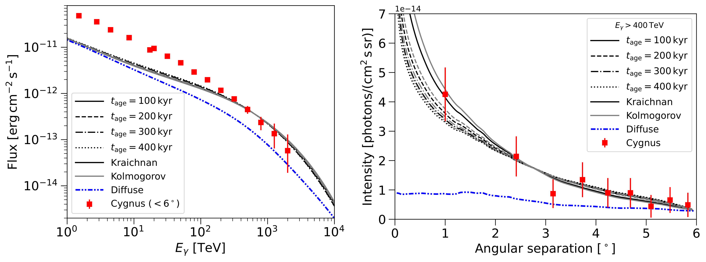
图注：\(\textbf{Left panel}\): the $\gamma$-ray flux from within a \(\qty{6}{\degree}-radius\) emission region for Iroshnikov-Kraichnan ($\delta=1/2$; black lines) and Kolmogorov ($\delta=1/3$; grey lines) turbulence phenomenology, when $t_\mathrm{age}=100$ (solid lines), 200 (dashed lines), 300 (dotdashed lines), and 400 (dotted lines) kyr, which is the elapsed time since the injection starts. The blue dashdotdotted line shows the diffuse Galactic $\gamma$-ray flux, which is produced by the cosmic ray ``sea" as measured locally on the Earth, while the black and grey lines show the summation of our model and diffuse $\gamma$-ray fluxes. The red flux points for a \(\qty{6}{\degree}-radius\) bubble is taken from \(\citet{Cao2024}.\) The diffusion coefficient normalization $D_0=\qty{3e29}{\cm^2.\s^{-1}}$ for both Iroshnikov-Kraichnan and Kolmogorov turbulence, the CR injection spectral index $s=2.0$ and its cutoff energy $E_0=\qty{10}{\PeV}$, the gas distribution is homogeneous and its density $n_\mathrm{H}=\qty{1}{\cm^{-3}}$, while the CR injection kinetic powers are given in Table \(\ref{tab:crpower}.\) \(\textbf{Right panel}\): the integrated $\gamma$-ray intensity above 400 TeV. The line styles and corresponding parameters are the same as the left panel.
对应解读：对应“建议重点查看的图表”第5项天鹅座气泡能谱与强子模型曲线，以及模型拟合段落中关于谱指数、截止能量、扩散系数、源龄和所需宇宙线功率的讨论。
入选理由：这是候选图中最核心的模型—数据对照图：左面板直接把6度气泡的LHAASO能谱点与强子扩散模型、银河弥散背景相比较，右面板给出400 TeV以上积分伽马射线强度，正好检验本文声称的PeV质子逃逸后形成大尺度高能晕。它同时展示不同湍流扩散指数和源龄对谱与空间强度的影响，比单独参数图更能支撑日报中关于能谱、扩散和能量预算的解读。
来源与置信度：\(arxiv_source\)；high；\(arxiv_source\) / main.tex:figure[1]
Fig03
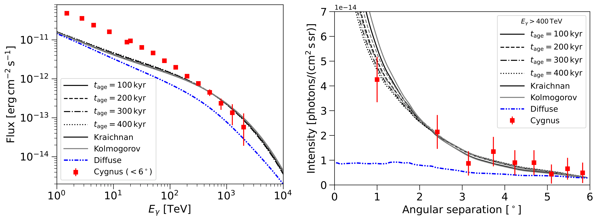
图注：Same as Fig. \(\ref{fig:gamflux}\) but the right panel displays the azimuthally averaged integrated $\gamma$-ray intensity above \(\qty{400}{\TeV},\) and the gas distribution is nonhomogeneous and is given by Eq. \(\eqref{eq:gaszdist}\) with $n_0=\qty{1}{\cm^{-3}}$ and $z_c=\qty{300}{pc}$, while the CR injection kinetic powers are given in Table \(\ref{tab:crpower2}.\)
对应解读：对应“建议重点查看的图表”第4项宇宙线密度或伽马强度径向剖面、第3项气体分布系统误差，以及“关键图表逐图导读”中关于400 TeV以上形态和气体校正后分布的讨论。
入选理由：该图在非均匀气体分布假设下给出400 TeV以上方位平均积分伽马射线强度，是候选图中最接近日报强调的径向诊断和气体校正问题的一张。它比均匀气体模型更贴近真实天鹅座环境，可用于判断扩散晕大小、气体分布和高能形态之间的耦合，是检验天鹅座X-3连续注入解释的重要图。
来源与置信度：\(arxiv_source\)；high；\(arxiv_source\) / main.tex:figure[3]
Fig04
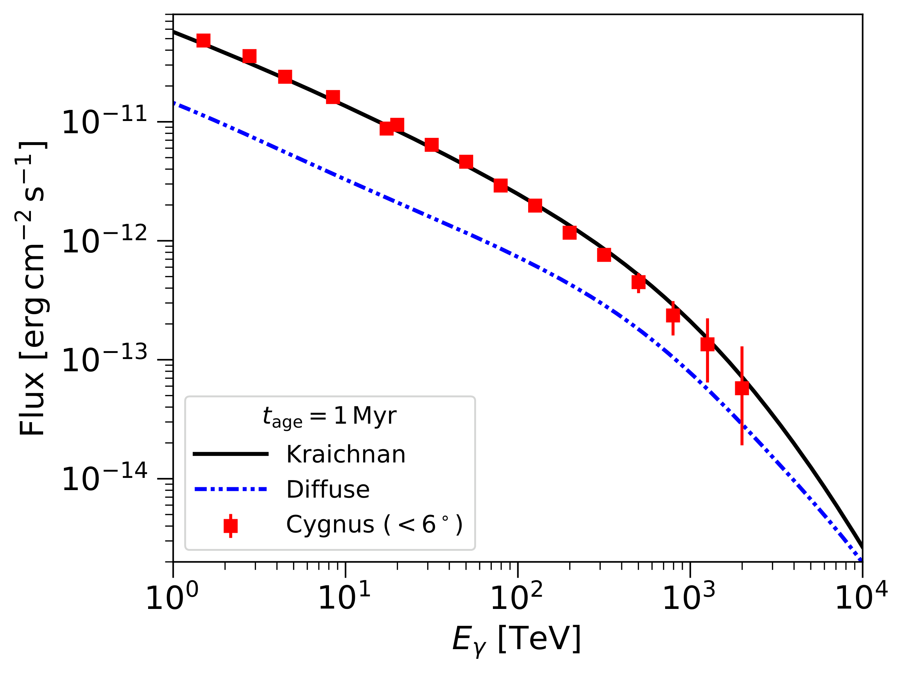
图注：The $\gamma$-ray flux from within a \(\qty{6}{\degree}-radius\) emission region for Iroshnikov-Kraichnan turbulence ($\delta=1/2$), assuming that $t_\mathrm{age}=\qty{1}{Myr}$. The black line shows the summation of our model and diffuse Galactic $\gamma$-ray fluxes, while the latter is shown by the blue dashdotdotted line. The red flux points for a \(\qty{6}{\degree}-radius\) bubble is taken from \(\citet{Cao2024}.\) The diffusion coefficient normalization $D_0=\qty{3e29}{\cm^2.\s^{-1}}$, the CR injection spectral index $s=2.45$ and its cutoff energy $E_0=\qty{10}{\PeV}$, the gas distribution is nonhomogeneous and is given by Eq. \(\eqref{eq:gaszdist}\) with $n_0=\qty{1}{\cm^{-3}}$ and $z_c=\qty{300}{pc}$, and the CR injection kinetic power above \(\qty{1}{\TeV}\) is $\dot{W}_\mathrm{CR}(>\qty{1}{\TeV})=\qty{5.6e38}{erg/s}$.
对应解读：对应“建议重点查看的图表”第5项能谱与强子模型曲线、第6项能量预算或参数检查，以及模型拟合段落中关于源龄、谱指数和宇宙线功率是否合理的讨论。
入选理由：该图展示1 Myr源龄、较软注入谱s=2.45和非均匀气体条件下的6度气泡能谱拟合，并明确给出所需宇宙线注入功率5.6e38 erg/s。它对评估模型是否需要过高功率或特殊参数很有价值，尤其适合日报中提醒读者检查能量预算和参数退化的部分。
来源与置信度：\(arxiv_source\)；high；\(arxiv_source\) / main.tex:figure[4]
Fig02
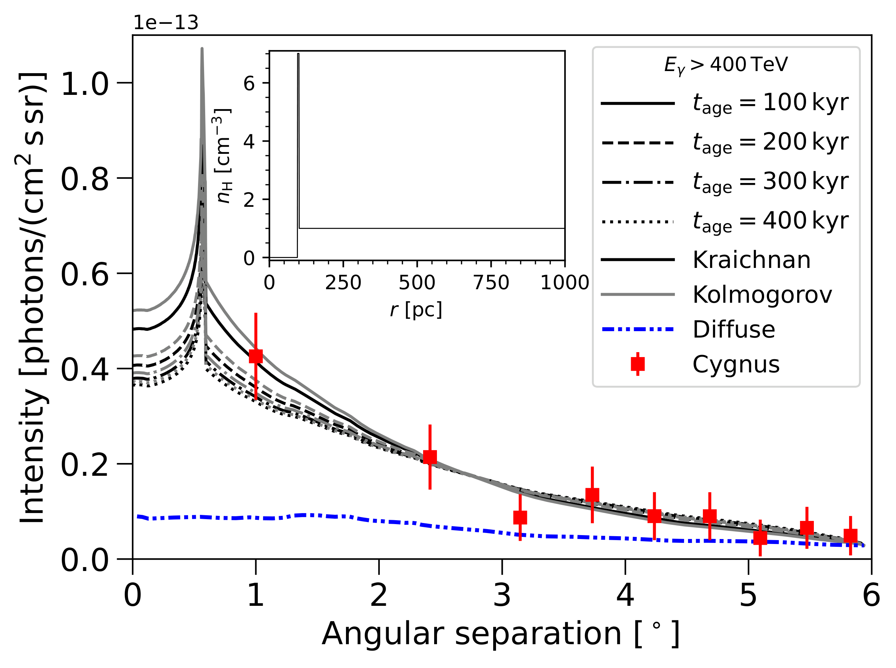
图注：Same as the right panel of Fig. \(\ref{fig:gamflux},\) but the gas density is given as shown in the inset plot.
对应解读：对应“建议重点查看的图表”第3项气体柱密度或分子云分布、第4项400 TeV以上空间强度剖面，以及模型拟合段落中关于气体系统误差和Wp-nH退化的讨论。
入选理由：该图重点改变气体密度分布，并比较400 TeV以上积分伽马射线强度，能够辅助说明靶气体假设如何影响反推出的宇宙线分布和高能晕亮度。虽然它不如Fig03完整展示能谱与非均匀气体模型，也不是直接的天空显著性图，但对理解气体系统误差仍有嵌入价值。
来源与置信度：\(arxiv_source\)；high；\(arxiv_source\) / main.tex:figure[2]
强相关工作
这篇文章与三类工作直接相关。第一类是 LHAASO 对天鹅座区域超高能伽马射线源和天鹅座气泡的观测论文，属于同一区域、同类观测和同一候选源环境的基础材料。第二类是微类星体或 X 射线双星作为 PeVatron 的理论与观测研究，包括喷流强子加速、源内 \(pp\) 或 \(p\gamma\) 损失、逃逸宇宙线晕以及伴随中微子信号。第三类是星协、恒星风泡和超级气泡加速宇宙线的研究，它们构成本文观点的主要竞争解释。
与相反观点或张力的关系在于：天鹅座 OB2 和天鹅座 X 复合体长期被视为天鹅座弥散高能辐射的自然来源，尤其在 GeV 到 TeV 能段有大量支持性讨论。本文不是否认星形成区能加速宇宙线，而是强调最高能段的形态、谱和宇宙线密度分布可能更符合天鹅座 X-3 这一点源连续注入模型。建议检索关键词包括“LHAASO Cygnus Bubble PeVatron”、“Cygnus X-3 ultra-high-energy gamma rays”、“microquasar PeVatron halo”、“Cygnus OB2 cosmic rays”、“superbubble cosmic-ray acceleration”、“hadronic gamma-ray halo”。
同一事件 / 同类源线索：
- https://arxiv.org/abs/2607.07100
- https://arxiv.org/pdf/2607.07100
- https://simbad.cds.unistra.fr/simbad/sim-id?Ident=Cygnus%20X-3
相似工作：
- https://arxiv.org/search/astro-ph?query=LHAASO+Cygnus+Bubble&searchtype=all
- https://arxiv.org/search/astro-ph?query=Cygnus+X-3+gamma+rays+LHAASO&searchtype=all
- https://ui.adsabs.harvard.edu/search/q=Cygnus%20Bubble%20LHAASO
基础理论 / 方法工作：
- https://ui.adsabs.harvard.edu/abs/1984ARA%26A..22..425H/abstract
- https://ui.adsabs.harvard.edu/search/q=hadronic%20gamma-ray%20production%20pp%20Kelner%20Aharonian
- https://ui.adsabs.harvard.edu/search/q=microquasar%20jets%20cosmic%20rays%20PeVatron
相反观点 / 张力线索：
2. Weakly supervised machine learning for model-agnostic searches of new phenomena in the $γ$-ray sky
- 来源：arXiv / astro-ph.HE
- 链接：https://arxiv.org/abs/2607.07158v1
- 作者：Michael Krämer, Silvia Manconi, Kathrin Nippel
- 评分：novelty 8/10，importance 8/10，relevance 10/10，final 9.70/10
- 推荐理由：针对Fermi-LAT伽马射线源的弱监督异常/新物理搜索，覆盖未关联源、暗物质子晕和ALP光子振荡；方法可复用且与伽马射线天文高度相关。
中文题目：用弱监督机器学习在伽马射线天区中开展弱模型依赖的新现象搜索
做了什么：这篇论文研究如何用弱监督机器学习在费米大面积望远镜的伽马射线源光谱中寻找“不像已知背景”的候选源，而不是预先假定一个精确的新物理或新天体信号模板。作者采用背景样本与含有未知比例信号的混合样本进行训练，测试了三个场景：脉冲星与活动星系核分离、暗物质子晕候选识别、轴子样粒子导致的光谱不规则性搜索。核心结论是：只要两个训练样本的信号占比确实不同，弱监督分类器可以学到接近信号方向的排序变量；在条件有利时性能接近全监督方法，同时显著降低对具体信号模型的依赖。
为什么重要：费米伽马射线源表中仍有大量未关联源，它们可能只是低信噪比或多波段对应体不清的普通天体，也可能包含新的源族或粒子物理信号。传统全监督分类需要事先定义“信号长什么样”，这在暗物质子晕、轴子样粒子光谱振荡、未知伽马射线源族等问题上往往过于强假设。本文重要之处在于把高能物理中“从混合样本学习分类”的思想系统搬到伽马射线源级数据上，展示了一种更适合候选筛选和异常排序的分析路线。
理论 / 观测 / 仪器方法价值：对理论工作者，这篇文章提供了一个把不确定的新物理模型转化为可检验候选排序的问题框架，而不必为每个模型重训一个强模板分类器。对观测和数据分析工作者，它给出了一类可嵌入费米源表、多波段分类和后续随访优先级排序的弱监督工具。对仪器和方法方向，它强调分类器性能不仅由网络结构决定，更由样本构造、混合比例差异、选择函数和系统误差控制决定。
为什么应该关注：如果你关心未关联伽马射线源、暗物质间接探测、轴子样粒子或机器学习在天文中的稳健使用，这篇文章值得看。它不是声称发现了某个新源，而是在回答一个更基础的问题：当我们不知道信号模板是否正确时，能否仍然从数据中学习到“信号富集”的方向？这直接关系到未来如何从大规模伽马射线目录中挑出最值得深挖的少数目标。
展开详细解读：文章讲解、背景、理论、重点章节、图表与相关工作
文章详细讲解
科学问题：费米大面积望远镜长期巡天已经把伽马射线天空整理成包含大量点源和扩展源的目录，但其中相当一部分源缺乏可靠多波段对应体或类别关联。对这些未关联源的常规处理通常是全监督分类：用已知脉冲星、活动星系核、超新星遗迹等训练分类器，再把未关联源映射到这些已知类别上。问题是，如果真正感兴趣的是暗物质子晕、轴子样粒子诱导的光谱畸变，或某种尚未建模的新天体族，那么全监督训练会把答案限制在已有标签和预设模板里。本文的核心科学问题就是：能否在不提供逐个源真实标签、也不依赖精确信号模板的情况下，从两个组成不同的样本中学习出能富集异常源的排序变量。
作者怎么做：论文采用弱监督中的“背景对混合样本”设置。训练时并不告诉分类器某个对象是信号还是背景，而是给出两个样本：一个尽量背景主导，另一个含有更高比例的潜在信号。只要两个样本的信号占比不同，理论上最优分类器学到的并不是任意样本差异，而是与信号和背景似然比单调相关的判别方向。作者用伽马射线源光谱作为主要输入，分别构造了三个测试场景。第一个是脉冲星与活动星系核分离，作为有真实类别标签的控制实验；第二个是暗物质子晕，检验弱监督在模板不完全确定但有模拟或富集策略时的表现；第三个是轴子样粒子导致的光谱不规则性，检验分类器是否能捕捉非平滑谱形特征。
关键结果：论文显示，在受控的脉冲星—活动星系核任务中，弱监督方法能够恢复与全监督分类器相近的排序能力，前提是两个训练混合样本之间的类别占比差足够大，并且样本构造没有引入强烈的无关选择效应。在暗物质子晕场景中，弱监督分类器可以把更像暗物质谱形的源排到前列，适合作为候选列表生成器，而不是最终发现声明。在轴子样粒子场景中，方法对光谱不规则性有一定敏感性，但也更容易受到统计涨落、能量分箱、曝光和光谱拟合误差的影响，因此稳健性检验尤其关键。总体上，本文给出的信息不是“弱监督总能替代物理建模”，而是“当信号模型不确定时，弱监督可以把搜索从固定模板匹配扩展到数据驱动的异常富集”。
局限和下一步：弱监督方法的最大风险是学到训练样本之间的非物理差异，例如通量分布、银纬分布、曝光差异、源检测阈值、光谱误差大小或目录构造方式，而不是目标信号本身。因此这类方法必须配合样本匹配、重加权、空白检验、标签打乱、注入回收和独立数据验证。下一步更有价值的方向包括：把源级光谱与空间信息、多波段信息、时间变率联合起来；在不同费米目录版本和不同能段划分中重复训练；把弱监督排序结果转化为可解释的后验候选概率或检验统计量；以及对高排名未关联源开展多波段随访或独立伽马射线数据交叉验证。
关键结果是怎么做出来的
本文最重要的证据链从样本构造开始。作者不是直接训练一个“暗物质”或“轴子样粒子”标签分类器，而是构造两个训练集合：一个作为背景富集样本，另一个作为信号占比更高的混合样本。对源级伽马射线分析来说，输入通常来自各能段通量、光谱点、光谱指数、曲率或等价的谱形描述。关键不是每个源的标签是否准确，而是两个样本的组成比例是否不同；如果这个条件不成立，弱监督分类器没有可学习的信号方向。
第一个基准任务是脉冲星与活动星系核分离。这里两类源的天体物理差异明确：脉冲星常有弯曲谱、较低变率且集中在银河面附近，活动星系核常有幂律谱、显著变率并近似各向同性。作者用这个任务检验弱监督框架是否能在已知答案的问题上恢复合理分类。需要重点看的是弱监督分类器的接收者工作特征曲线、曲线下面积、分类分数分布，以及它们相对全监督基线的退化程度。若论文给出不同混合比例的曲线，最关键的趋势应是：两混合样本的信号占比差越大，性能越接近全监督；占比差变小时，排序能力迅速下降并对随机种子更敏感。
暗物质子晕场景的证据链更接近实际应用。暗物质子晕在伽马射线源表中可能表现为无明显多波段对应体、非变源、谱形有截止或峰状特征的未关联源，但这些条件并不唯一，也容易与脉冲星混淆。作者的弱监督策略价值在于不要求每个训练信号都来自完全可信的子晕模型，而是利用信号富集和背景富集样本之间的统计差异进行排序。这里应关注候选回收率、背景误报率、候选排名随注入信号比例的变化，以及与全监督暗物质模板分类器相比的性能差距。
轴子样粒子场景的关键结果应从“光谱不规则性”角度读。轴子—光子混合会在传播过程中给伽马射线谱引入能量相关的振荡或起伏，但实际观测谱也会因为低光子数、能量响应、源内在谱形复杂性和背景建模误差出现类似结构。作者使用弱监督分类器检验是否能在混合样本中识别这类不规则谱形。读者应特别检查分类器分数是否主要由少数高误差能段驱动，是否对能量分箱方案、光谱平滑预处理和误差归一化稳定，以及是否通过无信号注入样本估计了假阳性率。
显著性和置信度方面，这类工作通常不应把机器学习分数本身当作发现显著性。合理做法是用分类器输出作为排序变量，再通过独立验证集、交叉验证、置换检验、注入回收或侧带样本估计背景分数分布。本文的结论也应按这个层级理解：它证明弱监督可作为候选选择和异常排序方法，而不是单独给出新物理发现。关键稳健性检验包括改变信号占比、改变背景组成、重加权通量和天区分布、检查训练—测试域偏移，以及比较全监督、弱监督和简单物理特征切割的相对表现。
展开背景、理论、公式、模型、章节和图表导读
背景知识
伽马射线源表是高能天体物理和间接暗物质探测的交叉地带。费米大面积望远镜自发射以来持续扫描全天，把源表从早期几百个源扩展到数千个源。多数亮源可以通过射电、光学、红外或时域信息关联到活动星系核、脉冲星、脉冲星风云、超新星遗迹、双星系统等类别，但仍有大量未关联源。这些未关联源并不自动意味着新物理；它们更多时候反映的是多波段数据不完整、源定位误差、银河面拥挤、弱源统计不足和分类特征退化。
历史上，未关联费米源一直被用于寻找毫秒脉冲星和暗物质子晕。毫秒脉冲星会表现为稳定、弯曲的伽马射线谱，并可能没有明显射电探测；暗物质子晕如果足够近且致密，也可能表现为无多波段对应体、非变、近似点状的伽马射线源。这两类目标在源表层面有相似之处，因此简单基于谱形和变率的筛选会产生强混淆。机器学习分类曾被广泛用于给未关联源分配脉冲星或活动星系核概率，但这类工作通常依赖已知源类别训练，难以发现训练标签外的新类。
新物理搜索中的另一个典型目标是轴子样粒子。若轴子样粒子与光子耦合，伽马射线在源区、星系团磁场、银河磁场或星际介质中传播时可能发生光子—轴子转换，使观测谱出现能量相关的振荡、变暗或透明度变化。传统分析往往要指定磁场模型、耦合强度、质量范围和源内在谱形，这些假设的不确定性很大。因此，基于“异常谱形”而非固定参数点的弱模型依赖搜索具有吸引力。
为什么现在值得重新看？一方面，费米源表、多波段巡天和源级光谱产品已经足够成熟，支持大样本机器学习；另一方面，高能物理机器学习已经发展出从混合样本学习分类、异常检测和仿真辅助推断等方法。它们的共同目标是减少对精确标签和精确模拟的依赖。不过该领域有一个常见误区：把机器学习分数解释为物理概率或发现显著性。实际上，分类器首先学习的是训练样本间最容易区分的差异；这些差异可能是信号，也可能是选择函数、观测条件或目录系统误差。
基础理论 / 方法脉络
从物理图像看，伽马射线源分类主要依赖谱形、变率、空间分布和多波段对应体。活动星系核的伽马射线谱常近似为幂律或弯曲幂律，并伴随喷流变率；脉冲星常有亚指数截止的弯曲谱，并且在银河坐标中更集中；暗物质湮灭谱由粒子质量和湮灭道决定，常在高能端截止；轴子样粒子效应则不是产生一个新源，而是在传播中改变已有源的能谱形状。本文把这些复杂物理差异压缩为源级光谱特征，让分类器学习多维谱形空间中的分离方向。
弱监督的基本前提是训练样本不需要逐个对象标签，而只需要总体组成不同。设一个样本主要由背景组成，另一个样本含有更高比例信号。若两个样本内部除了信号占比外没有其他系统差异，那么区分两个样本的最优分类器与区分信号和背景的似然比单调等价。这就是“从带标签比例不同的混合样本学习”的核心。对天文数据来说，这个前提很强，因为天区、通量、曝光、误差条和源检测阈值都可能随样本选择而变化。
本文的三个场景分别覆盖了三种难度层级。脉冲星—活动星系核分离是“答案已知”的校准问题，用于判断弱监督是否能恢复真实类别信息。暗物质子晕搜索是“有理论模板但不确定”的问题，弱监督可以在模板不完美时减少过拟合。轴子样粒子光谱不规则性是“信号形态依赖传播环境”的问题，传统模板空间很大，因此特别适合用候选排序而不是硬分类。
关键退化关系包括谱形退化、通量—误差退化和天区选择退化。弱源的光谱起伏更大，容易伪装成轴子样粒子诱导的不规则性；银河面附近背景复杂，源参数误差和源混叠更严重；脉冲星和暗物质子晕都可能非变且无多波段对应体；活动星系核在低信噪比下也可能看起来像平滑稳定源。因此，一个可信的弱监督分析必须显示分类器不是简单按亮度、误差大小或银纬排序。
公式与推导
弱监督分类可从源级光谱观测开始。对第 \(i\) 个源，在第 \(k\) 个能量 bin 中的期望计数可写成
其中 \(T_{ik}\) 是有效曝光时间，\(A_{\rm eff}\) 是有效面积，\(\Omega_i\) 是源方向，\(\Phi_i(E)\) 是源光子通量谱，\(b_{ik}\) 是背景期望计数。这个式子说明机器学习输入中的谱点并不是纯物理谱，而已经包含仪器响应和背景建模。
源级光谱常由分箱通量或归一化谱形表示，例如
其中 \(F_{ik}\) 是第 \(k\) 个能段的通量估计，\(\sigma_{ik}\) 是对应不确定度，\(K\) 是能段数。若不恰当处理 \(\sigma_{ik}\)，分类器可能学习到统计误差大小，而不是谱形异常。
在弱监督设置中，两个训练样本 \(M_1\) 和 \(M_2\) 是信号 \(S\) 与背景 \(B\) 的混合：
其中 \(p_S(x)\) 和 \(p_B(x)\) 是特征 \(x\) 的信号与背景分布，\(f_1\) 和 \(f_2\) 是两个样本中的信号比例。关键条件是 \(f_1\)
eq \(f_2\))。
区分两个混合样本的最优判别量是似然比
只要 \(f_1\)
eq \(f_2\))，\(\Lambda_{12}(x)\) 是真实信号—背景似然比 \(r(x)\) 的单调函数。因此，训练分类器分开 \(M_1\) 与 \(M_2\) 可以得到用于信号排序的变量。
神经网络或提升树分类器通常最小化二元交叉熵
其中 \(s(x)\) 是分类器把对象判为样本 \(M_1\) 的输出分数。充分训练且样本足够大时，\(s(x)\) 逼近两个混合分布的后验概率，而其单调变换可用于候选排序。
候选选择常用效率和误报率描述：
其中 \(t\) 是分数阈值，\(\epsilon_S\) 是信号效率，\(\epsilon_B\) 是背景通过率。接收者工作特征曲线就是扫描 \(t\) 后的 \(\epsilon_S\) 对 \(\epsilon_B\) 关系。
若把暗物质子晕作为信号示例，其通量尺度可写为
其中 \(\langle\sigma v\)
angle) 是湮灭截面，\(m_\chi\) 是暗物质粒子质量，\(dN_\gamma/dE\) 是每次湮灭的伽马射线产额，\(J\) 是视线方向密度平方积分。本文的弱监督思想并不要求训练时精确固定这些量，但这些量决定模拟或候选富集样本的谱形和亮度范围。
对轴子样粒子，传播效应可概括为光子存活概率作用在内在谱上：
其中 \(P_{\gamma\to\gamma}\) 是光子存活概率，\(g_{a\gamma}\) 是耦合常数，\(m_a\) 是轴子样粒子质量，\(\mathbf{B}\) 是磁场模型，\(\tau(E,z)\) 是宇宙背景光吸收光深。弱监督分类器在这里试图捕捉 \(P_{\gamma\to\gamma}\) 造成的非平滑谱形，而不是逐点扫描全部传播模型。
最后，机器学习排序转化为搜索诊断时，可用置换或背景验证集定义经验显著性：
其中 \(q_{\rm obs}\) 是真实数据中的候选富集统计量，\(q_n\) 是第 \(n\) 个无信号伪实验的统计量，\(N_{\rm toy}\) 是伪实验数。这个式子提醒读者：分类器分数需要通过独立背景分布校准，不能直接等同于发现显著性。
模型拟合 / 应用方法
本文涉及的“拟合”并不只是传统光谱模型参数拟合，而是包括分类器训练、超参数选择、混合比例变化和性能评估。基本拟合量是分类器函数 \(s(x)\)，输入 \(x\) 可以是多能段通量、谱形参数、误差归一化特征或经过预处理的光谱向量。训练目标通常是区分两个混合样本，而不是直接区分信号和背景。因此，交叉验证和独立测试集非常重要；否则模型可能只是在记忆样本构造差异。
参数估计层面，弱监督方法的关键隐含参数是两个混合样本的信号比例差。即使论文不直接把 \(f_1\) 和 \(f_2\) 作为显式拟合参数，分类器性能也高度依赖它们。若 \(f_1\) 与 \(f_2\) 过于接近，最优混合样本判别器的梯度会变小，有限样本和系统误差会主导训练。若混合样本之间同时存在通量分布、银纬分布或曝光分布差异，分类器会优先学习这些更强的差异。
残差诊断应从物理特征空间和分类器输出空间两方面看。在物理特征空间，应比较高分候选和低分背景的能谱、误差条、通量、变率、银纬、检测显著性和多波段关联情况。在分类器输出空间，应检查训练集与验证集分数分布是否一致、不同随机种子是否稳定、改变样本重加权后排名是否保持、以及无信号伪实验是否给出平坦或可校准的假阳性率。
主要退化包括暗物质子晕与脉冲星谱形退化、轴子样粒子光谱起伏与低统计涨落退化、活动星系核内在弯曲谱与传播效应退化、以及样本选择与天体物理信号退化。一个实际应用场景是先用弱监督得到候选排序，再对前若干名候选做传统似然光谱拟合、多波段对应体搜索、时域分析和空间扩展检验。这样可以避免把机器学习结果误用为最终结论，同时利用它提高后续人工和观测资源的效率。
重点章节 / 结果段落怎么读
数据和样本构造部分应首先阅读。读者要弄清作者使用的是费米源表中的哪些源、哪些光谱特征、是否包含关联类别、是否剔除低质量或高不确定度源，以及如何定义背景富集样本和信号富集混合样本。弱监督方法的可信度很大程度上由这一步决定，而不是由分类器名称决定。
方法部分的重点是背景对混合样本的训练设定。应检查作者如何实现弱监督分类，使用何种分类器架构或算法，如何划分训练、验证和测试样本，是否进行特征标准化、重加权和交叉验证。尤其要看他们是否解释了混合样本占比变化与分类性能之间的关系。
脉冲星—活动星系核基准结果是理解整篇文章的锚点。因为这个任务有已知标签，读者可以用它判断弱监督是否真的恢复了物理类别差异。这里应重点看与全监督分类器的比较、性能随混合比例变化的趋势、以及错误分类对象的物理性质。
暗物质子晕和轴子样粒子结果应按“候选排序”而非“发现声明”阅读。暗物质部分要关注分类器是否主要选出非变、无关联、谱形弯曲的源，以及这些源与脉冲星候选的混淆程度。轴子样粒子部分要关注谱形不规则性是否超过统计误差和仪器响应可解释范围。
讨论和稳健性检验部分最值得细读。理想情况下，作者应讨论样本组成、信号比例、背景错配、能量分箱、通量误差、天区选择和训练随机性的影响。读者应把这些内容视为本文方法能否用于真实新物理搜索的必要条件。
建议重点查看的图表
-
样本组成或特征分布图：检查背景富集样本和混合样本在通量、谱指数、曲率、变率、银纬和误差大小上的差异，判断分类器是否可能学到选择效应。
-
弱监督与全监督性能比较图：重点看接收者工作特征曲线、曲线下面积或背景拒绝率，在脉冲星—活动星系核基准任务中弱监督是否接近全监督。
-
性能随信号占比变化图：检查两个混合样本的信号比例差变小时，分类器性能如何下降；这直接决定真实应用所需的信号富集程度。
-
暗物质子晕候选排序图或分数分布图：看高分源是否集中在预期的谱形和无关联、非变特征上，同时警惕与脉冲星候选的混淆。
-
轴子样粒子光谱不规则性诊断图：检查高分源的残差是否在多个能段连续支持异常，而不是由单个低信噪比能段驱动。
-
稳健性检验表或附录图：重点看随机种子、训练—测试划分、样本重加权、特征移除和空白检验对结果的影响。
关键图表逐图导读
图 1：如果论文给出方法示意或混合样本示意，横轴通常可理解为某个分类器学习到的特征方向，纵轴是对象数或概率密度。应看两个混合样本分布是否确实不同，以及这种差异是否能由信号占比差解释。读图陷阱是把两个样本可分直接解释为新物理可分；它也可能来自样本选择偏差。
图 2：脉冲星—活动星系核基准性能图通常会给出接收者工作特征曲线或曲线下面积。横轴多为背景误报率，纵轴为信号效率；全监督曲线应作为上限或近似基准，弱监督曲线的位置显示信息损失。若弱监督曲线在低误报率区域明显下降，说明它可能适合粗筛但不适合极纯候选选择。
图 3：性能随混合比例变化图应重点读横轴的信号占比差或注入比例，纵轴的分类性能指标。合理趋势是占比差越大，性能越好；占比差接近零时，结果接近随机。若曲线在很小占比差下仍异常好，需要警惕分类器是否利用了非信号系统差异。
图 4：暗物质子晕场景的分数分布或候选排名图中，横轴可能是分类器分数或候选编号，纵轴是源数、效率或真阳性比例。应看高分区域是否富集模拟暗物质子晕或暗物质样源，同时比较已知脉冲星的分布。读图陷阱是忽略脉冲星与暗物质谱形相似导致的污染。
图 5：轴子样粒子场景的谱形或残差图应关注能量轴上的局部起伏。模型线可能是平滑内在谱，数据点是分箱通量，残差显示非平滑结构。关键不是是否有一个点偏离，而是偏离模式是否与光子—轴子振荡的相关能量结构一致，并且是否超过统计和系统误差。
图 6：稳健性图或表应读作方法可信度检验。若移除通量、银纬或误差相关特征后结果大幅改变，说明原分类器可能过度依赖选择效应。若不同随机种子和数据划分给出相似高分候选，候选排序才更有后续观测价值。
论文原图 / 可嵌入图片
Fig01
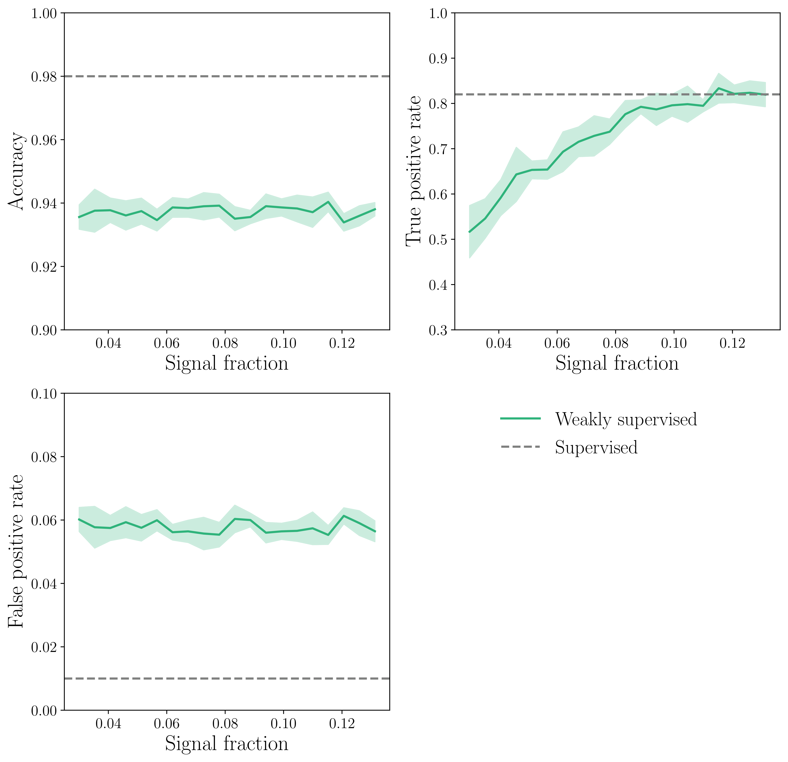
图注：Accuracy, true positive rate (TPR), and false positive rate (FPR) as a function of the signal fraction for weakly supervised classification of pulsars in an AGN background. Dashed lines show the supervised benchmark for reference.
对应解读：“弱监督与全监督性能比较图”“性能随信号占比变化图”，以及关键图表导读中关于脉冲星—AGN基准任务的图2/图3式解读。
入选理由：该图直接给出脉冲星在AGN背景中的弱监督分类性能，横轴为信号占比，纵轴包含accuracy、TPR和FPR，并用虚线标出全监督基准；最能检验日报强调的弱监督是否接近全监督、以及信号占比降低时性能如何退化。
来源与置信度：\(arxiv_source\)；high；\(arxiv_source\) / paper.tex:figure[1]
Fig02
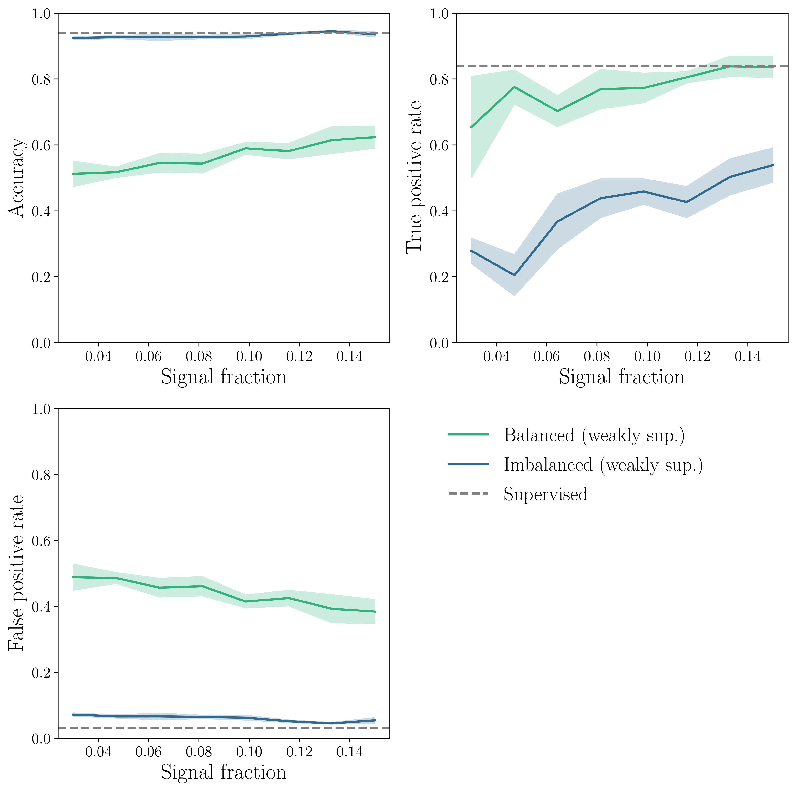
图注：Analogous to figure~\(\ref{fig:Cwola_AGN_PSR},\) but for dark matter with $m_\chi=80\,\mathrm{GeV}$ annihilating into $b\bar b$ against identified and associated 4FGL sources. Curves show accuracy, TPR, and FPR versus the signal fraction $f$ in the mixed sample. Balanced (green) and imbalanced (blue) regimes are shown. Dashed lines indicate the supervised benchmark.
对应解读：“暗物质子晕候选排序图或分数分布图”“性能随信号占比变化图”，以及模型拟合段落中关于混合样本信号比例差和背景—混合样本比例的讨论。
入选理由：该图展示80 GeV暗物质湮灭到bbbar时，弱监督分类的accuracy、TPR和FPR如何随混合样本信号比例变化，并区分balanced与imbalanced设置；它是判断暗物质子晕场景中信号富集程度需求和全监督基准差距的核心图。
来源与置信度：\(arxiv_source\)；high；\(arxiv_source\) / paper.tex:figure[2]
Fig03
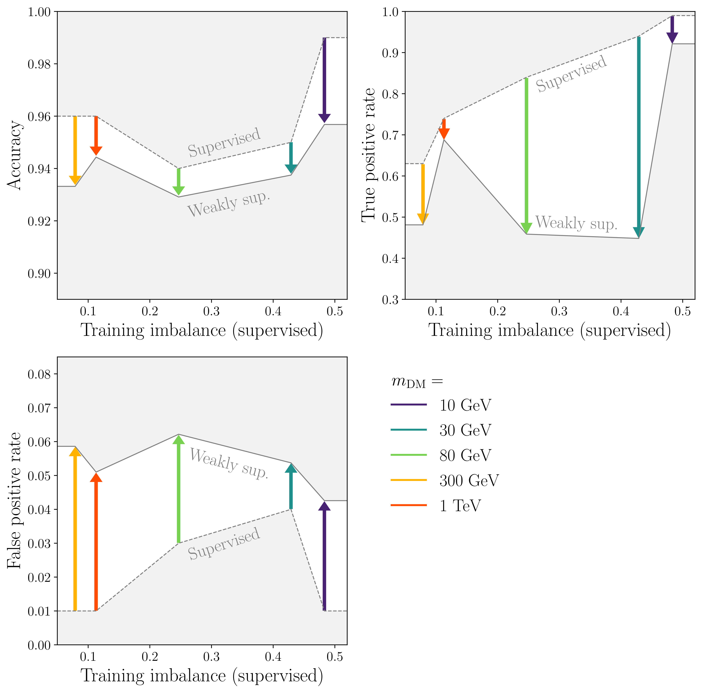
图注：Comparison among the performance of supervised vs.\ weakly supervised learning on the dark matter subhalo spectra. The panels report accuracy, TPR, and FPR on a held-out test set for $m_\chi\in\{10,30,80,300\}\,\mathrm{GeV},\,1\,\mathrm{TeV}$, each indicated with different colors. In each panel, the results of the supervised learning correspond to the values at the tail of the arrows, while the arrow tips indicate the increased/decreased value when using the weakly supervised approach for that specific mass. Note that the x axis, indicating the training imbalance, refers only to the supervised results. The weakly supervised results are obtained at fixed mixed-sample signal fraction $f=10~\%$ and imbalanced background-to-mixture ratio $|B|{:}|M|=2{:}1$.
对应解读：“弱监督与全监督性能比较图”和“暗物质子晕候选排序图或分数分布图”，对应关键结果中暗物质子晕不同质量点的弱监督表现。
入选理由：该图比较多个暗物质质量下全监督与弱监督在accuracy、TPR和FPR上的变化，箭头清楚显示弱监督相对全监督的性能损失或提升；比单一质量点更能支撑日报中关于谱形退化、质量依赖和候选筛选可靠性的讨论。
来源与置信度：\(arxiv_source\)；high；\(arxiv_source\) / paper.tex:figure[3]
Fig04
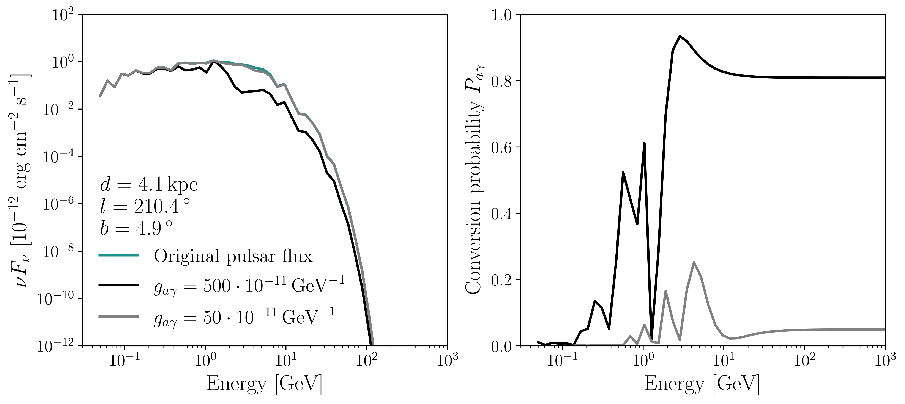
图注：\(\textit{Left:}\) Modulated spectrum of a simulated pulsar for two different ALP-photon coupling strengths. The modulation is clearly visible in the spectrum for a stronger coupling. \(\textit{Right:}\) Axion-photon conversion probability as a function of energy corresponding to the ALP model and pulsar position shown in the left panel.
对应解读：“轴子样粒子光谱不规则性诊断图”，以及关键图表导读中关于能量轴上局部起伏、平滑内在谱和调制谱比较的图5式解读。
入选理由：该图直接展示ALP光子耦合导致的脉冲星谱调制及对应的光子转换概率随能量变化，是理解分类器究竟要捕捉何种非平滑光谱结构的物理基础；比单纯性能曲线更适合解释日报中关于残差模式和多能段连续异常的判断。
来源与置信度：\(arxiv_source\)；high；\(arxiv_source\) / paper.tex:figure[4]
Fig05
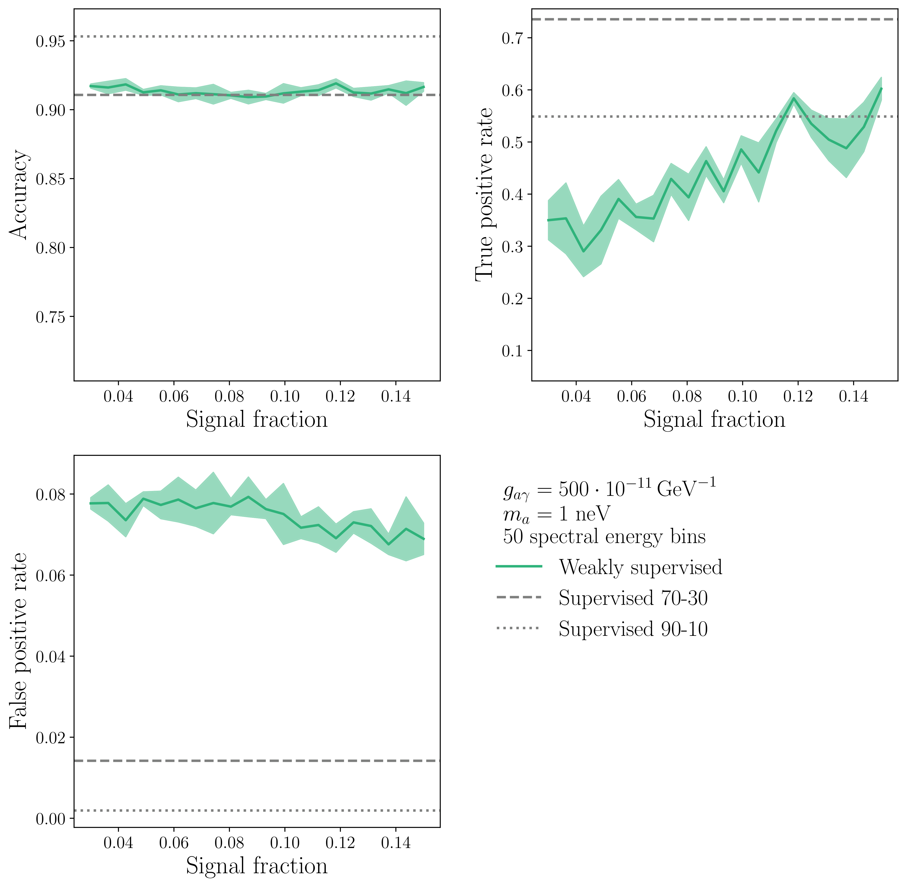
图注：Weakly supervised results for the setup with $g_{a\gamma} = 500 \times 10^{-11}\, \mathrm{GeV}^{-1}$ and 50 pulsar energy bins. We show the supervised classification benchmarks for both the 10~\% and 30~\% signal fractions, see also tables~\(\ref{tab:supervised_ALP_9010}\) and~\(\ref{tab:supervised_ALP_7030}.\)
对应解读：“轴子样粒子光谱不规则性诊断图”和模型拟合段落中关于分类器训练、信号占比与性能评估的讨论。
入选理由：该图给出强ALP耦合、50个能量bin设置下的弱监督结果，并包含10%和30%信号占比的全监督基准；它能检验在光谱调制较明显时弱监督方法是否能接近监督学习，是ALP场景的主要性能图。
来源与置信度：\(arxiv_source\)；high；\(arxiv_source\) / paper.tex:figure[5]
Fig07
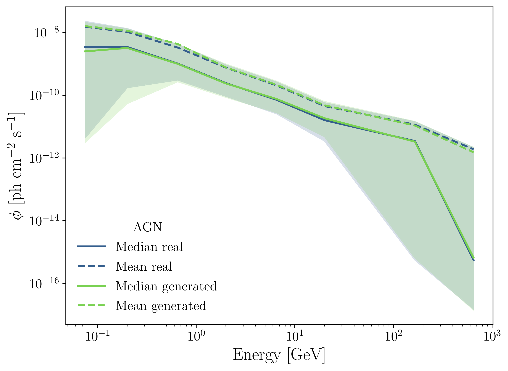
图注：Flux distribution of generated (green) and observed (blue) AGN spectra. The shaded band indicates the 68\% interval, the solid line the median, and the dashed line the mean.
对应解读：“样本组成或特征分布图”和“稳健性检验表或附录图”，对应日报中关于通量分布差异、选择效应和生成/观测样本匹配风险的讨论。
入选理由：该图比较生成AGN与观测AGN的通量分布，并给出中位数、均值和68%区间；它直接服务于日报反复强调的选择效应诊断，可帮助判断分类器是否可能学习到模拟—真实样本或样本构造差异，而非目标物理信号。
来源与置信度：\(arxiv_source\)；high；\(arxiv_source\) / paper.tex:figure[7]
强相关工作
这篇工作与两条文献线直接相连。第一条是费米源表和未关联源分类，包括费米大面积望远镜仪器论文、四源表及其后续数据发布、以及用机器学习区分脉冲星和活动星系核的工作。建议检索关键词包括“Fermi-LAT unassociated sources machine learning”，“4FGL source classification”，“gamma-ray pulsar AGN classification”。这些工作提供了本文的观测数据背景，也构成了全监督方法的对照。
第二条是高能物理中的弱监督和异常检测，尤其是“classification without labels”和从混合样本学习分类的思想。建议检索关键词包括“CWoLa weak supervision”，“weakly supervised anomaly detection high energy physics”，“model agnostic searches machine learning”。本文的创新点不是发明弱监督理论，而是把这套方法适配到伽马射线源级光谱和新物理候选搜索中。
在物理目标方面，暗物质子晕搜索与费米未关联源研究、银河矮星系暗物质限制和暗物质湮灭谱模板有关；轴子样粒子部分则与伽马射线谱不规则性、星系团或河外源传播、光子—轴子混合约束有关。这里存在长期张力：模板化分析更容易给出参数约束，但强依赖模型；模型无关或弱模型依赖分析更灵活，但发现显著性和物理解释更难校准。本文站在后者一侧，强调候选排序和辅助筛选，而非替代传统似然分析。
同一事件 / 同类源线索：
- https://arxiv.org/abs/2607.07158
- https://arxiv.org/pdf/2607.07158
- https://arxiv.org/abs/0902.1089
- https://arxiv.org/abs/1902.10045
相似工作：
基础理论 / 方法工作：
- https://ui.adsabs.harvard.edu/abs/1988PhRvD..37.1237R/abstract
- https://arxiv.org/abs/0902.1089
- https://arxiv.org/abs/1002.2239
相反观点 / 张力线索：
3. Reappraisal of the Constraints on Heavy Axion-like Particles from Gamma-Ray Bursts
- 来源：arXiv / astro-ph.HE
- 链接：https://arxiv.org/abs/2607.07297v1
- 作者：Christopher V. Cappiello, Saurav Das, P. S. Bhupal Dev, Takuya Okawa, Soebur Razzaque
- 评分：novelty 8/10，importance 8/10，relevance 9/10，final 9.35/10
- 推荐理由：重新评估GRB对重ALP的约束，并提出经次级火球产生X射线/MeV信号的新可观测通道；直接涉及GRB、伽马/MeV天文和新物理，值得关注。
中文题目：用伽马暴重新评估重轴子样粒子—光子耦合限制
做了什么：这篇论文重新检查了用伽马暴火球约束重轴子样粒子与光子耦合的做法。作者把重轴子样粒子在伽马暴早期高温致密等离子体中的产生、逃逸、衰变和能量回馈重新算了一遍，发现过去用“能量损失会削弱伽马暴亮度”得到的限制通常过强，因为真实伽马暴参数下重轴子样粒子产生效率没有先前假设的那么高。更有意思的是，在一部分过去被认为已排除的参数区，重轴子样粒子衰变成双光子后可触发次级火球，把高能光子再处理成近各向同性的软 \(X\) 射线或 \(\mathrm{MeV}\) 辐射；这给未来 \(X\) 射线和 \(\mathrm{MeV}\) 望远镜提供了不必正对伽马暴喷流的间接搜索通道。
为什么重要：重轴子样粒子是许多超出标准模型理论中的自然候选粒子，而 \(\mathcal{O}(100\,\mathrm{MeV})\) 质量区间的天体约束并不如轻轴子区间那样稳固。伽马暴曾被用来给出很强的能量损失限制，但这些限制高度依赖火球温度、半径、能量注入时标、重子载荷和几何假设。本文的重要性在于：它不是简单再画一条排除线，而是指出“火球被新粒子冷却”与“新粒子衰变形成可观测次级火球”是同一物理过程的两个侧面，过去的约束需要重新解释。
理论 / 观测 / 仪器方法价值：对理论而言，本文澄清了用伽马暴约束重轴子样粒子时最敏感的火球参数和能量注入情景，避免把理想化高温火球直接当成普适约束。对观测而言，它把搜索目标从主喷流内的伽马射线亮度改变，扩展到离轴、近各向同性的 \(X\) 射线或 \(\mathrm{MeV}\) 暂现信号。对仪器规划而言，论文强调未来宽视场 \(X\) 射线监测器和 \(\mathrm{MeV}\) 伽马射线任务的点源灵敏度、时间覆盖和定位能力可能直接决定这一参数空间能否被检验。
为什么应该关注：如果你关心伽马暴物理，这篇文章提醒你：把伽马暴当作粒子物理实验室时，火球初始条件不是细节，而是约束是否成立的核心。如果你关心轴子样粒子，它说明 \(\mathcal{O}(100\,\mathrm{MeV})\) 区间仍有可被天文暂现源测试的窗口。如果你做高能暂现源观测，本文给出了一类容易被忽略的信号形态：与伽马暴相关、但不一定沿喷流方向出现的软化再处理辐射。
展开详细解读：文章讲解、背景、理论、重点章节、图表与相关工作
文章详细讲解
科学问题：本文讨论的是重轴子样粒子 \(a\) 与光子通过耦合 \(g_{a\gamma}\) 相互作用时，伽马暴早期火球能否成为有效的粒子源。传统思路是，如果火球内部产生大量 \(a\)，而这些 \(a\) 逃逸出去，就会带走能量，从而降低伽马暴可见光子火球的能量预算；因此，观测到高亮度伽马暴似乎可以排除某些 \((m_a,g_{a\gamma})\) 参数。问题在于，伽马暴火球不是恒星核心那样相对稳态的热源，其温度、半径、膨胀时间、重子污染和能量注入机制都有很大不确定性。
作者怎么做：作者重新计算了热等离子体中重轴子样粒子的产生率，重点考虑 \(\gamma\gamma\to a\) 或等效的光子融合过程，以及 \(a\to\gamma\gamma\) 的衰变。论文把伽马暴火球形成分为两种能量注入情景：一种更接近瞬时或短时能量释放，另一种允许能量在更长时间内注入。二者给出的初始温度和体积演化不同，因此 \(a\) 的产生效率也不同。作者还把过去文献中偏极端的火球参数替换为更接近典型长暴或短暴的参数范围。
关键结果：重算后，基于“能量损失不能超过火球能量”的限制明显变弱。原因很直接：对于 \(m_a\sim100\,\mathrm{MeV}\) 的粒子，热产生率对温度的指数尾部非常敏感；只要初始温度低一些，产生数密度就会急剧下降。只有非常高能、非常紧凑、非常热的伽马暴事件才可能接近过去假设的高效率产生条件。换言之，过去看似强的伽马暴亮度限制并不是稳健的普适天体约束。
但论文没有止步于“约束变弱”。作者指出，在先前亮度判据所涉及的一部分参数空间中，\(a\) 仍然可能产生得足够多，并且在火球外或附近衰变成两光子；这些高能光子进一步通过 \(\gamma\gamma\to e^+e^-\) 形成光子—正负电子对等离子体，构成一个次级火球。这个次级火球会热化并从较大半径处近各向同性释放较软的 \(X\) 射线或 \(\mathrm{MeV}\) 光子。因此，真正有前景的信号不一定是主伽马暴喷流亮度被削弱，而可能是一个与伽马暴时空相关的再处理暂现源。
局限和下一步：本文的结论仍受伽马暴初始条件、火球几何、洛伦兹因子、外部介质和探测器覆盖率影响。次级火球信号的可见性依赖 \(a\) 的衰变长度、能量沉积位置、再热化效率以及背景暂现源混淆。下一步需要把这种信号嵌入真实伽马暴族群、红移分布和探测器巡天策略中，做联合触发或离线搜索；同时也需要数值辐射转移或相对论流体模拟来验证次级火球的光变和谱形。
关键结果是怎么做出来的
本文最重要的证据链从火球参数重估开始。作者没有把伽马暴统一看成一个固定温度、固定半径的热腔，而是扫描代表性火球能量、初始半径、注入时标和温度。对于重轴子样粒子，样本不是观测到的若干单个光子事件，而是一族伽马暴物理参数模型；核心比较量是每组参数下产生的 \(a\) 总能量与原始火球能量之比，以及 \(a\) 衰变后能否在外部形成光学厚的次级火球。
统计意义在本文中不是传统的“多少事件给出多少 \(\sigma\)”发现，而是排除区或可探测区在参数扫描下是否稳健。亮度限制通常来自能量预算判据：若 \(a\) 带走的能量超过允许比例，则该 \((m_a,g_{a\gamma})\) 点被认为不相容。作者强调这个判据依赖火球模型，因此不能把某条排除曲线当成无模型限制。论文中的参数平面图应是支撑该结论的主图：读者需要看新旧约束曲线相对位置，以及不同能量注入情景如何移动边界。
对于次级火球，关键不是 \(a\) 是否简单逃逸，而是它们在合适半径衰变并把能量重新注入光子—正负电子对等离子体。作者需要同时检查三件事：\(a\) 的产生是否足够多，衰变长度是否使能量沉积发生在合适区域，以及再处理后辐射温度是否落在 \(X\) 射线或 \(\mathrm{MeV}\) 波段。相应图表通常会展示可探测通量随 \(m_a\)、\(g_{a\gamma}\)、距离或红移的变化，并叠加现有或未来望远镜的点源灵敏度。
系统误差主要来自伽马暴火球物理而不是探测计数噪声。初始半径越小、注入时间越短、总能量越高，火球温度越高，\(a\) 的热产生越强；反之，约束迅速变弱。另一个系统项是次级火球的各向同性假设：若能量沉积仍然保留强烈角向结构，离轴可探测率会下降。论文的稳健性检验应重点看不同火球参数、不同注入模型和不同探测器灵敏度假设下，新增可探测区域是否仍存在。
从模型比较角度看，本文实际上比较两种解释框架：一是“\(a\) 是纯能量损失通道”，二是“\(a\) 是先损失、后衰变并再处理的能量传输通道”。前者给出排除线，后者给出新信号预测。读者应关注那些过去被亮度判据排除、但在新计算中转化为次级火球可探测窗口的区域，因为这正是本文相对旧工作的增量。
展开背景、理论、公式、模型、章节和图表导读
背景知识
轴子样粒子是指与 \(U(1)\) 或近似全局对称性破缺相关的轻或中等质量赝标量粒子。与经典 \(\mathrm{QCD}\) 轴子不同，一般轴子样粒子的质量 \(m_a\) 与光子耦合 \(g_{a\gamma}\) 不必满足固定关系，因此可在很宽参数空间中出现。本文讨论的“重”轴子样粒子质量可达 \(\mathcal{O}(100\,\mathrm{MeV})\)，其主要天体效应不再只是长程振荡或恒星冷却，而包括在高温火球中的热产生和快速衰变。
伽马暴是宇宙中最极端的暂现爆发现象之一。标准火球图像认为，中心引擎在小尺度区域释放巨大能量，形成光子、电子、正电子和少量重子的高熵等离子体，随后相对论膨胀并在内耗散或外激波阶段产生观测到的高能辐射。早期火球温度可能达到 \(\mathrm{MeV}\) 到更高能标，这使它自然成为搜索 \(\mathrm{MeV}\) 到 \(100\,\mathrm{MeV}\) 新粒子的实验环境。
历史上，天体冷却约束常用逻辑是：如果新粒子与普通物质耦合适中，它们可在热源内部产生并逃逸，带走能量；若能量损失过强，就会与观测到的超新星、中子星或伽马暴能量释放矛盾。伽马暴版本的论证尤其诱人，因为火球能量密度高、温度高、时标短。然而，伽马暴火球初始阶段无法直接观测，参数分布也很宽，因此任何强约束都必须说明它对火球模型的依赖。
现在值得重新看这个问题，有两个原因。第一，\(\mathrm{MeV}\) 天文学正在重新成为仪器规划重点，未来任务可能填补 \(X\) 射线与 \(\mathrm{GeV}\) 伽马射线之间长期灵敏度不足的窗口。第二，多信使和宽视场暂现源搜索已经改变了伽马暴研究方式：即使喷流没有指向我们，相关的各向同性或弱准直信号也可能被发现。
该领域一个常见误区是把所有伽马暴都当作同一个热火球。实际上，长暴、短暴、低光度暴、磁主导喷流和重子主导喷流的初始条件可差很多。另一个误区是把新粒子逃逸等同于不可见能量损失；对于会衰变回标准模型粒子的重轴子样粒子，逃逸距离和衰变位置同样重要，能量可能以不同波段、不同角分布重新出现。
基础理论 / 方法脉络
基础物理图像从相互作用项开始：赝标量 \(a\) 可通过 \(a F_{\mu\nu}\tilde F^{\mu\nu}\) 与两个光子耦合。在热光子浴中，这允许两个光子融合产生 \(a\)，也允许 \(a\) 衰变成两个光子。若火球温度 \(T\) 接近或超过 \(m_a\) 的有效阈值，产生率可观；若 \(T\ll m_a\)，热尾部中的高能光子数量被玻尔兹曼因子强烈压低。
伽马暴火球可近似为初始半径 \(R_0\)、能量 \(E_{\rm fb}\)、注入时标 \(t_{\rm inj}\) 的热等离子体。若能量快速注入较小体积，初始温度较高；若能量在较长时间或较大半径注入，温度较低。由于重粒子产生率通常随 \(T\) 的高次幂和指数因子变化，温度的小变化会导致 \(a\) 总产额的大变化。
论文中的关键量包括 \(m_a\)、\(g_{a\gamma}\)、火球温度 \(T\)、产生率 \(Q_a\)、轴子样粒子总能量 \(E_a\)、衰变宽度 \(\Gamma_{a\to\gamma\gamma}\)、实验室系衰变长度 \(\ell_a\)，以及次级火球的光学深度 \(\tau\)。这些量共同决定三个问题：\(a\) 是否大量产生，是否在合适位置衰变，衰变产物是否热化成可观测的软辐射。
观测方法上，传统亮度约束把 \(E_a/E_{\rm fb}\) 作为判据；若该比值太大，则认为火球不能维持观测到的伽马暴能量。本文进一步引入可探测通量思路：若 \(a\) 衰变形成次级火球，其辐射可能近各向同性，因此观测通量主要由总再处理能量、持续时间、谱峰和 luminosity distance 决定，而不再强依赖喷流是否对准。
主要退化关系包括 \(g_{a\gamma}\) 同时控制产生和衰变：耦合增大使产生更强，也使寿命更短；耦合太小则几乎不产生或衰变太远，耦合太大则可能在火球内部即被困住或快速再吸收。另一个退化是 \(E_{\rm fb}\)、\(R_0\) 与 \(t_{\rm inj}\) 共同决定 \(T\)，因此同一观测伽马暴亮度不能唯一反推出初始热条件。
公式与推导
第一步，从有效相互作用写起。重轴子样粒子与电磁场的耦合可表示为
这里 \(a\) 是赝标量场，\(F_{\mu\nu}\) 是电磁场强张量，\(\tilde F^{\mu\nu}\) 是其对偶张量，\(g_{a\gamma}\) 是光子耦合。该式决定了 \(\gamma\gamma\leftrightarrow a\) 的产生与衰变强度。
第二步，双光子衰变宽度为
这里 \(m_a\) 是粒子质量。这个式子说明寿命 \(\tau_a=1/\Gamma_{a\to\gamma\gamma}\) 对质量三次方和耦合平方极其敏感，因此 \(\mathcal{O}(100\,\mathrm{MeV})\) 粒子的衰变位置可在参数空间中快速变化。
第三步，实验室系衰变长度可估计为
其中 \(E_a\) 是单个轴子样粒子的能量，\(\gamma_a=E_a/m_a\)，\(\beta_a\) 是速度除以光速。若 \(\ell_a\) 远小于火球半径，能量在内部沉积；若 \(\ell_a\) 过大，衰变产物过于稀释；只有中间区域有利于形成可见次级火球。
第四步，用热平衡近似估算火球初始温度。若辐射能量 \(E_{\rm fb}\) 存在于体积 \(V\sim4\pi R_0^3/3\)，则
其中 \(a_{\rm rad}\) 是辐射常数，\(g_*\) 表示有效相对论自由度。该式显示 \(T\propto E_{\rm fb}^{1/4}R_0^{-3/4}\)，所以较小的初始半径会显著提高重粒子产生效率。
第五步，热产生的能量损失率可形式化写为
这里 \(f_\gamma\) 是光子分布函数，\(\sigma_{\gamma\gamma\to a}\) 是融合截面，\(v_{\rm rel}\) 是相对速度。对 \(m_a\gg T\) 的情形，积分被高能热尾部控制，因此大致受到 \(\exp(-m_a/T)\) 抑制。
第六步，总产生能量可由时空积分得到
若使用一区模型，常近似为 \(E_a\sim Q_a(T_0)V_0t_{\rm inj}\)。亮度约束的核心就是比较 \(E_a\) 与原始火球能量 \(E_{\rm fb}\)。
第七步，能量损失判据可写成
其中 \(\epsilon_{\rm max}\) 是允许的新粒子能量损失比例。过去强约束通常等价于取较高 \(T_0\) 和较严格的 \(\epsilon_{\rm max}\)；本文指出当采用更现实的 \(T_0\) 时，该不等式排除的区域会明显缩小。
第八步，次级火球要求衰变产物在一定半径范围内沉积能量。衰变概率密度可写为
把该概率与产生能量相乘，可估计在半径 \([r_1,r_2]\) 内沉积的能量。若沉积区对 \(\gamma\gamma\to e^+e^-\) 光学厚，辐射会被再处理。
第九步，可观测通量的量级估计为
其中 \(E_{\rm sec}\) 是次级火球释放能量，\(D_L\) 是光度距离，\(\Delta t_{\rm sec}\) 是持续时间，\(K(z)\) 是谱带和红移修正。该式连接理论参数与 \(X\) 射线或 \(\mathrm{MeV}\) 望远镜的点源灵敏度。
第十步，探测或排除可用似然比表达为
这里 \(B\) 是背景模型，\(\mathcal{L}\) 是计数或通量似然。对未来仪器预测，通常把 \(F_{\rm sec}\) 与给定曝光和时间窗下的灵敏度曲线比较；对真实搜索，则应在伽马暴触发时间和位置附近计算该统计量。
模型拟合 / 应用方法
本文的“拟合”更接近参数空间扫描和阈值判据，而不是对某个单一观测光变做最佳拟合。核心参数包括 \(m_a\)、\(g_{a\gamma}\)、火球能量 \(E_{\rm fb}\)、初始半径 \(R_0\)、注入时标 \(t_{\rm inj}\)、红移 \(z\) 或距离 \(D_L\)，以及次级火球的持续时间和谱温度。每个参数点都可计算 \(E_a/E_{\rm fb}\)、衰变位置分布和预期通量。
亮度约束对应一种硬阈值似然：若 \(E_a/E_{\rm fb}\) 超过 \(\epsilon_{\rm max}\)，该点被排除；若低于阈值，则允许。这种做法直观但粗糙，因为 \(\epsilon_{\rm max}\) 不一定来自严格的观测后验，而是能量预算容忍度。更完整的处理应把伽马暴真实辐射效率、喷流开角、重子载荷和观测不确定性放进层级模型。
次级火球预测则更适合用探测器响应进行前向建模。理论给出时间依赖谱通量 \(F_E(t)\)，仪器给出有效面积、能量响应、背景率和曝光；二者卷积后得到预期计数。残差诊断应看候选信号是否在正确时间窗、正确能段、正确角位置出现，且是否与普通余辉、软伽马重复暴、恒星耀发或活动星系核变异相混淆。
主要退化关系是 \(g_{a\gamma}\) 的双重作用。较大 \(g_{a\gamma}\) 增强产生率，也缩短寿命；较小 \(g_{a\gamma}\) 使产生变弱，也让衰变发生在更远处。因此可探测区通常不是单调的，而是呈带状窗口。\(m_a\) 同样影响热产生阈值和衰变宽度，导致 \(m_a\) 与 \(g_{a\gamma}\) 之间存在明显相关。
模型可能失败的地方包括火球非热化、磁主导喷流、强角向结构、复杂外部介质和次级光子未充分热化。如果中心引擎释放的能量主要在 Poynting flux 中而非热光子浴中，热 \(\gamma\gamma\to a\) 产生率会被高估。反过来，如果存在局部高温耗散区，某些参数点的产生率又可能被低估。实际应用中，最好把本文曲线理解为“可检验窗口”和“旧约束修正”，而非最终排除图。
重点章节 / 结果段落怎么读
数据/物理输入部分应先读火球参数设定。这里决定了论文与旧工作差异的根源：作者采用哪些典型伽马暴能量、初始半径和能量注入时间，是否区分不同形成情景，以及这些选择如何改变初始温度。读者应特别检查参数是否覆盖自己关心的长暴、短暴或低光度暴。
方法部分的重点是重轴子样粒子产生率和衰变处理。应看作者如何计算热等离子体中的 \(a\) 产生，是否包含正确的相空间抑制、热分布和有限质量效应。对于 \(m_a\sim100\,\mathrm{MeV}\) 的粒子，任何把热尾部处理得过于粗略的近似都可能显著改变结果。
主结果部分应读 \((m_a,g_{a\gamma})\) 平面上的新旧约束比较。这里要看不同火球情景对应的曲线如何移动，哪些区域过去被认为排除而现在变为允许，哪些区域仍需要极端伽马暴才能测试。
次级火球部分是本文的新物理图像。读者应关注作者对 \(a\) 衰变位置、双光子产生正负电子对、热化和表面辐射的处理。最值得看的不是单一通量数值，而是形成次级火球所需条件是否与前面产生率条件自洽。
讨论和展望部分应关注未来 \(X\) 射线与 \(\mathrm{MeV}\) 望远镜灵敏度。论文若给出仪器敏感曲线，读者应检查这些曲线对应的曝光、能段、时间窗和点源假设是否适用于短暂、可能离轴的伽马暴相关信号。
建议重点查看的图表
-
\((m_a,g_{a\gamma})\) 参数平面上的旧 GRB 亮度限制与本文新限制对比图：看旧排除区缩小了多少，以及哪些质量段变化最大。
-
不同火球能量注入情景下的产生效率图：重点看 \(E_a/E_{\rm fb}\) 随 \(m_a\) 或 \(g_{a\gamma}\) 的变化，以及温度降低后指数抑制的幅度。
-
火球参数依赖图或表：检查 \(E_{\rm fb}\)、\(R_0\)、\(t_{\rm inj}\) 改变时约束边界如何移动，这能判断结论是否只适用于极端暴。
-
衰变长度或能量沉积半径图：看 \(\ell_a\) 是否落在有利于形成次级火球的范围，注意过短和过长寿命都会削弱信号。
-
次级火球预期谱或光变图：看谱峰是否在 \(X\) 射线或 \(\mathrm{MeV}\) 望远镜敏感能段，持续时间是否与可触发时间窗匹配。
-
未来仪器灵敏度叠加图：检查作者用的是点源灵敏度、巡天灵敏度还是瞬时触发灵敏度；这三者对暂现源结论差别很大。
-
稳健性或附录图：若有不同红移、距离、喷流开角或热化效率假设，优先看这些图，因为它们决定新增可探测区域是否可信。
关键图表逐图导读
图 1：通常应是 \((m_a,g_{a\gamma})\) 参数空间总览。横轴多为 \(m_a\)，纵轴多为 \(g_{a\gamma}\)，曲线表示旧 GRB 限制、本文重算限制以及其他实验或天体限制。读图时不要只看阴影面积大小，而要看同一质量处边界为什么移动：若移动来自火球温度重估，则说明旧限制对模型假设高度敏感。
图 2：若论文展示不同能量注入情景下的火球温度或 \(a\) 产生效率，横轴可能是时间、半径或 \(m_a\)，纵轴可能是 \(T\)、\(Q_a\) 或 \(E_a/E_{\rm fb}\)。模型线之间的间距比绝对值更重要，因为它显示注入时标和初始半径对重粒子热产生的控制作用。读图陷阱是把某条高温极端情景当成典型伽马暴。
图 3：衰变长度或能量沉积图应把 \(a\) 的寿命与火球尺度联系起来。横轴可为 \(m_a\) 或 \(g_{a\gamma}\)，纵轴可为 \(\ell_a\) 或沉积概率。需要特别看可形成次级火球的带状区域：太强耦合导致衰变过早，太弱耦合导致衰变太晚，这通常会产生非单调可探测窗口。
图 4：次级火球谱能量分布或光变图应显示再处理辐射落在哪个能段。若横轴是光子能量，纵轴是 \(\nu F_\nu\) 或能量通量，应看谱峰是否位于 \(X\) 射线、软 \(\gamma\) 射线或 \(\mathrm{MeV}\) 区间。陷阱是忽略红移和探测器能带：源系谱峰可被移出某一仪器的最佳灵敏区。
图 5：未来望远镜灵敏度比较图应叠加预测通量和仪器阈值。读者应确认灵敏度对应的曝光时间是否接近 \(\Delta t_{\rm sec}\)，以及是否假设已知源位置。对暂现源而言，盲搜阈值通常高于定点已知源搜索阈值。
图 6：如果有稳健性检验图或表，应看曲线在改变 \(R_0\)、\(E_{\rm fb}\)、\(t_{\rm inj}\)、距离和热化效率后是否仍保留同样的新增参数窗口。若只有极端高能暴给出强信号，那么结论应理解为少数事件机会，而不是普遍族群约束。
论文原图 / 可嵌入图片
Fig01
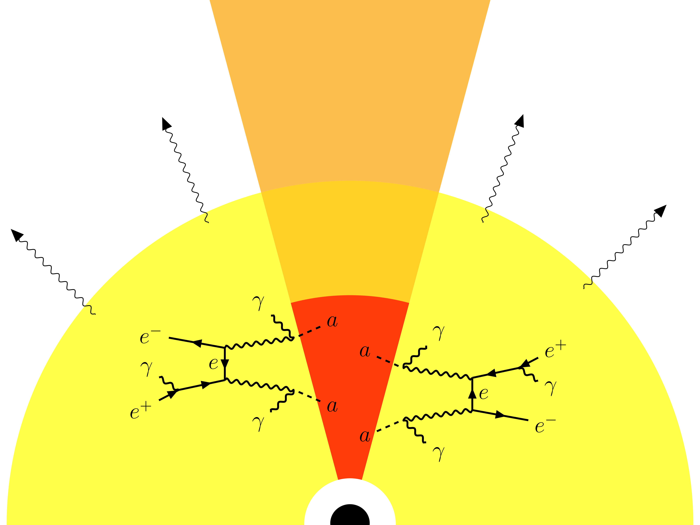
对应解读：建议重点查看的图表 1；关键图表逐图导读 图 1；模型拟合中关于 \((m_a,g_{a\gamma})\) 参数空间扫描和亮度阈值排除的段落。
入选理由：日报最核心的解读是旧 GRB 亮度限制与本文重算限制在 \((m_a,g_{a\gamma})\) 平面上的差异。Fig01 对应参数空间总览，最能直接支撑“旧约束显著变弱、哪些质量段变化最大、边界为何移动”的主结论，应优先嵌入。
来源与置信度：\(arxiv_source\)；high；\(arxiv_source\) / main.tex:figure[1]
Fig02
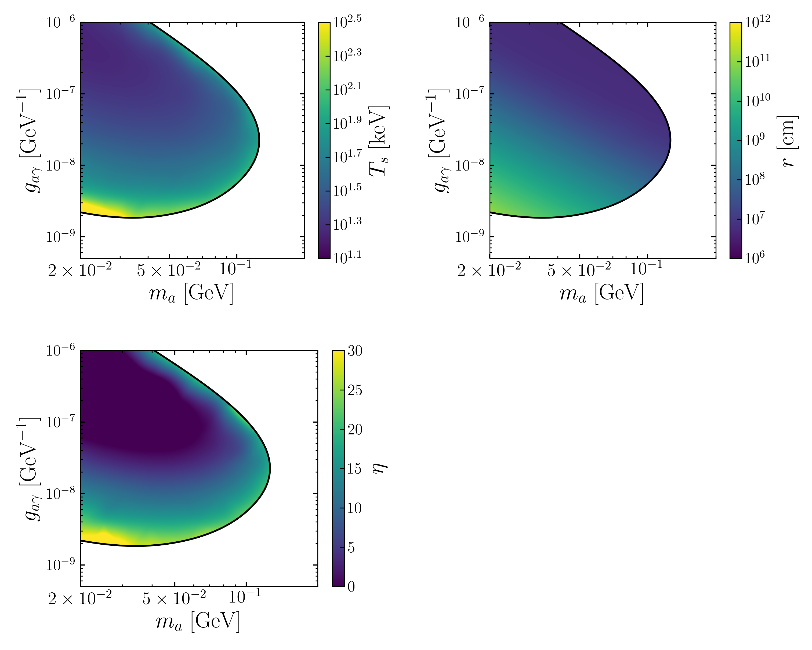
对应解读：建议重点查看的图表 2 和 3；关键图表逐图导读 图 2；模型拟合中关于 \(E_a/E_{\rm fb}\)、火球温度、\(E_{\rm fb}\)、\(R_0\)、\(t_{\rm inj}\) 依赖的段落。
入选理由：日报强调本文重新评估旧约束的物理原因在于火球温度和能量注入情景改变后，重 ALP 热产生受到指数抑制。Fig02 很可能展示不同注入情景或火球参数下的产生效率/温度演化，是解释约束为何削弱的关键诊断图。
来源与置信度：\(arxiv_source\)；high；\(arxiv_source\) / main.tex:figure[2]
Fig03
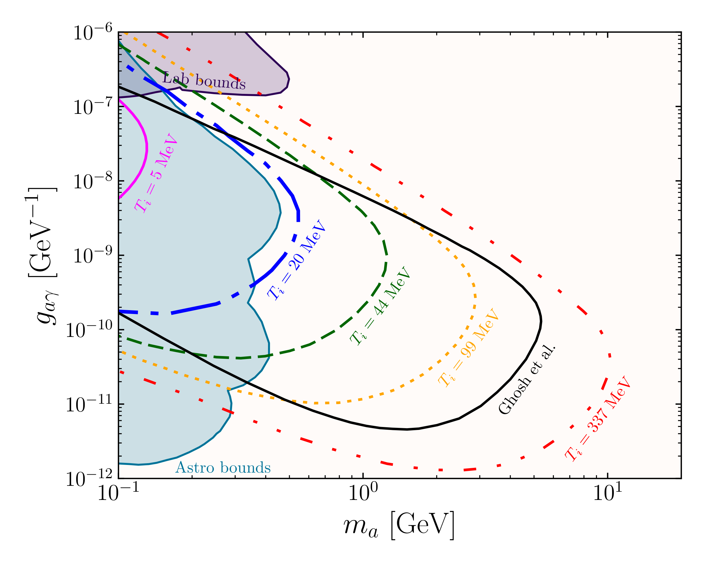
对应解读：建议重点查看的图表 4；关键图表逐图导读 图 3；模型拟合中关于 \(g_{a\gamma}\) 同时控制产生率和衰变长度、导致非单调带状窗口的段落。
入选理由：次级火球是否形成取决于 ALP 衰变长度或能量沉积半径是否落在合适范围。Fig03 对应寿命/衰变位置诊断，能支撑日报中“过强耦合衰变过早、过弱耦合衰变过晚”的核心物理图像。
来源与置信度：\(arxiv_source\)；high；\(arxiv_source\) / main.tex:figure[3]
Fig04
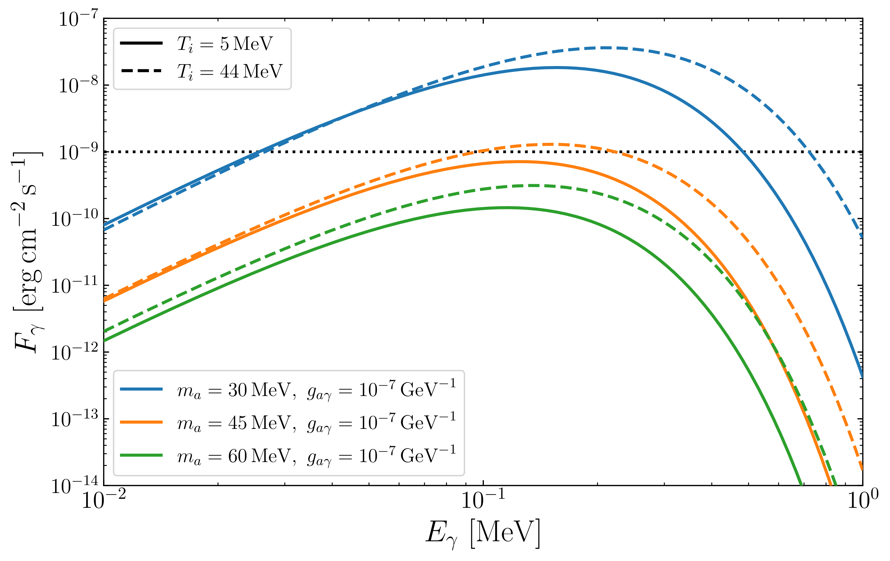
对应解读：建议重点查看的图表 5；关键图表逐图导读 图 4；详细解读中关于 ALP 衰变光子再处理为 X 射线或 MeV 暂现源的段落。
入选理由：本文的新前景不只是修正旧排除区，而是提出次级火球的可观测 X 射线/MeV 信号。Fig04 若展示次级火球谱或光变，可直接说明谱峰落入哪些能段、持续时间是否适合触发，是连接理论机制与观测检验的重要图。
来源与置信度：\(arxiv_source\)；high；\(arxiv_source\) / main.tex:figure[4]
Fig05
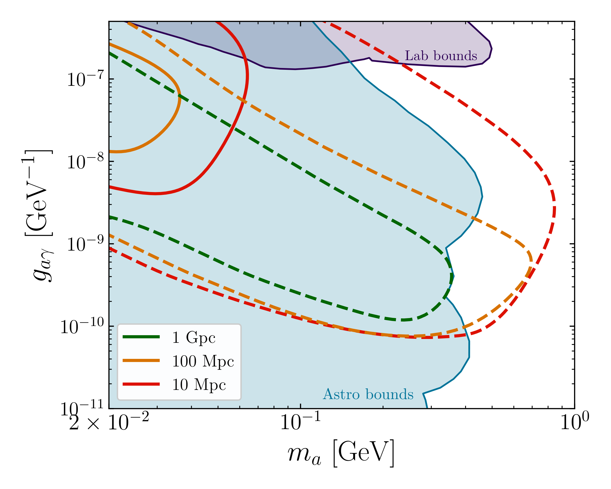
对应解读：建议重点查看的图表 6；关键图表逐图导读 图 5；模型拟合中关于预测通量与探测器响应、点源灵敏度和曝光时间匹配的段落。
入选理由：日报特别提醒要区分点源灵敏度、巡天灵敏度和暂现源触发阈值。Fig05 若为未来仪器灵敏度叠加图，将直接决定新增参数空间是否真的可被 X 射线或 MeV 望远镜检验，科学价值很高。
来源与置信度：\(arxiv_source\)；high；\(arxiv_source\) / main.tex:figure[5]
Fig06
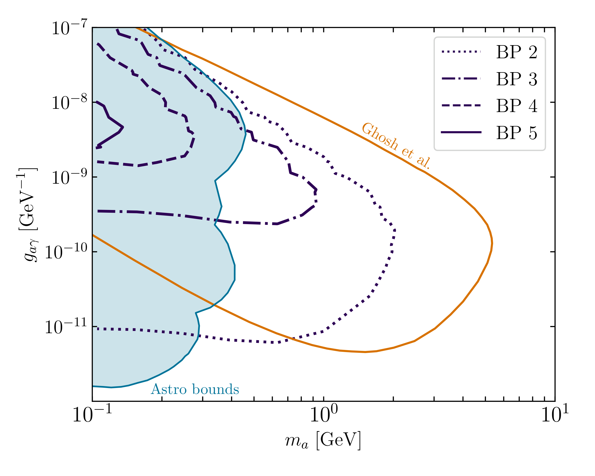
对应解读：建议重点查看的图表 7；关键图表逐图导读 图 6；模型拟合和局限性中关于 \(R_0\)、\(E_{\rm fb}\)、\(t_{\rm inj}\)、距离、红移或热化效率稳健性的段落。
入选理由：日报最后强调需要检查参数假设改变后新增窗口是否仍存在。Fig06 作为候选中的最后一张图，很可能承担稳健性、参数依赖或补充约束展示功能；虽然相对前几张更偏验证，但对判断结论是否只适用于极端 GRB 很重要。
来源与置信度：\(arxiv_source\)；high；\(arxiv_source\) / main.tex:figure[6]
强相关工作
这篇工作与传统天体冷却约束一脉相承，特别是超新星 \(\mathrm{SN}\,1987A\)、恒星演化和水平分支星对轻弱耦合粒子的约束。不过伽马暴与这些系统不同：它更短暂、更非稳态、几何更复杂，且重轴子样粒子会在天文尺度内衰变。因此检索相关文献时应使用关键词“heavy axion-like particles gamma-ray bursts energy loss”、“ALP fireball gamma gamma decay”、“GRB constraints on axion-like particles”。
它也与未来 \(\mathrm{MeV}\) 天文学和宽视场 \(X\) 射线暂现源搜索有关。相似问题包括暗光子或轻标量在伽马暴火球中的产生、超新星中重粒子衰变形成伽马射线、以及离轴伽马暴或失败喷流产生的软 \(X\) 射线暂现源。可能的相反观点会强调伽马暴初始火球未必热化、喷流可能磁主导、以及次级火球的各向同性假设需要数值模拟支持。检索关键词可用“MeV gamma-ray transient ALP decay”、“secondary fireball GRB”、“off-axis GRB X-ray transient”。
同一事件 / 同类源线索：
相似工作：
（未提供）
基础理论 / 方法工作：
相反观点 / 张力线索：
（未提供）
4. Simulating the LOcal Web (SLOW): VII. Intergalactic magnetic field models for multi-messenger applications
- 来源：arXiv / astro-ph.HE
- 链接：https://arxiv.org/abs/2607.06665v1
- 作者：Johannes Stoiber, Klaus Dolag, Francesca Capel, Benjamin Seidel, Michael Kachelrieß, Ludwig M. Böss, Jenny G. Sorce
- 评分：novelty 8/10，importance 8/10，relevance 9/10，final 9.35/10
- 推荐理由：提供本地宇宙约束模拟的IGMF模型并面向UHECR、超高能伽马和电磁级联多信使应用；与宇宙线传播和伽马射线级联解释高度相关。
中文题目：模拟本地宇宙网 SLOW：VII. 面向多信使应用的星系际磁场模型
做了什么：这篇论文用受限宇宙学模拟 SLOW 构造本地大尺度结构中的星系际磁场模型，并把它们与一组按密度或幅度重标定的磁场模型比较，目标是给超高能宇宙线、超高能伽马射线级联和其他多信使传播计算提供更接近本地宇宙结构的磁场输入。作者还提出了一个“理想位置”算法，用来处理那些在初始条件约束能力以下、模拟中位置可能漂移的星系或源，从而更准确地抽取视线方向上的磁场。主要结论是：不同磁场模型在纤维状结构中的填充因子和电子密度—磁场强度相空间覆盖差异很大，但在星系团核心区域趋于一致；SLOW 自洽模拟磁场最接近由电磁伽马级联反推的星系际磁场；新的源位置匹配算法可降低视线磁场抽取误差。
为什么重要：多信使传播问题常被源模型不确定性和传播介质不确定性纠缠在一起。对于超高能宇宙线，星系际磁场决定偏折角、到达方向与源关联；对于 TeV 到 PeV 伽马射线，磁场影响电子正电子对的级联角扩展、时间延迟和谱形。过去很多计算使用均匀场、随机湍流场或简化的密度重标定场，难以反映本地宇宙网的各向异性。SLOW 的价值在于它试图在真实本地大尺度结构约束下提供可直接用于传播模拟的三维磁场模型。
理论 / 观测 / 仪器方法价值：对理论而言，本文给出了不同磁发生和磁放大假设在本地宇宙网中的可检验差异，尤其是纤维区的磁场填充因子和密度—磁场关系。对观测而言，它把伽马级联约束、超高能宇宙线偏折和本地源视线联系起来，帮助判断某个源关联是否真的有物理意义。对方法而言，“理想位置”算法是处理受限模拟中小质量星系位置误差的实用工具，也可能反过来用于改进受限初始条件。
为什么应该关注：如果你用宇宙线到达方向、伽马级联或中微子候选源做物理解释，星系际磁场往往是最大的隐藏系统误差之一。这篇文章提醒我们：把磁场当成一个全局均匀参数会漏掉本地宇宙网的视线差异；同一个源只要落在星系团边缘、纤维或空洞，传播结论就可能不同。它也提供了一个可被社区复用的模型比较框架，让传播模拟从“假设一个磁场”走向“在受限本地宇宙结构中测试磁场”。
展开详细解读：文章讲解、背景、理论、重点章节、图表与相关工作
文章详细讲解
科学问题：本文关注的是本地宇宙网中的星系际磁场如何影响多信使传播，尤其是超高能宇宙线和超高能伽马射线。带电粒子的偏折、伽马级联的角扩展和延迟都依赖沿视线积分的磁场强度、相干长度和空间填充因子。难点在于星系际磁场不能直接三维测量，且在空洞、纤维、星系群和星系团中的强度可能跨越许多数量级。若传播计算只用均匀场或简单随机场，就会把真实宇宙网的非均匀性平均掉。
作者怎么做：作者使用 SLOW 受限宇宙学模拟，它试图在大尺度上复现本地宇宙的结构环境。论文比较了 SLOW 自洽产生的磁场模型与若干重标定磁场模型，这些模型通过不同规则把磁场强度与气体密度、电子密度或整体归一化联系起来。比较重点不是单一平均磁场，而是磁场在不同环境中的体积分布、质量分布、填充因子，以及电子密度—磁场强度相空间中的覆盖区域。作者还引入“理想位置”算法：对于那些真实天体位置已知、但在模拟中由于质量较低或约束不足而不能一一对应的星系，算法在模拟结构中寻找更合适的替代位置，以便抽取更可信的视线磁场。
关键结果：不同磁场模型在星系团核心区域的差别较小，因为团内气体密度高、湍流和压缩放大充分，磁场强度通常被观测或模拟校准到相近范围。但在纤维状结构中，模型差异显著：有的模型给出较高的磁化体积分数，有的只在高密度脊线附近有明显磁场。这正是宇宙线偏折和伽马级联最敏感的区域，因为许多本地源视线不会穿过星系团核心，却会穿过纤维和片状结构。作者进一步指出，SLOW 的自洽磁场在与电磁伽马级联反推的星系际磁场比较时表现最好，说明它在多信使传播应用中可能比简单重标定模型更可靠。
局限和下一步：本文的结论仍依赖 SLOW 的磁流体数值方案、种子磁场设定、反馈模型、分辨率和受限初始条件的准确度。纤维区磁场恰恰是最难模拟也最难观测验证的部分，因此不同模型之间的差异不能简单解释为某一个模型“正确”。下一步需要把这些磁场模型直接输入超高能宇宙线传播、伽马级联和法拉第旋转测量的联合似然中，看哪些视线、哪些源类、哪些能段最能区分模型。同时，“理想位置”算法揭示的星系团或结构漂移也可能成为修正受限初始条件的新诊断量。
关键结果是怎么做出来的
本文最重要的证据链不是来自一个单独事件，而是来自对本地宇宙网三维磁场模型的系统比较。样本选择上，作者以 SLOW 受限模拟盒中的本地大尺度结构为基础，抽取星系团、纤维、低密度环境以及与多信使源相关的视线。由于摘要没有给出具体源数量和视线数量，读者应优先检查论文的数据表或样本定义段落：哪些星系、星系团或源被纳入，哪些由于模拟分辨率或约束不足需要“理想位置”算法处理，这是判断结果外推范围的关键。
统计比较的核心是不同磁场模型在体积填充因子、电子密度—磁场强度相空间、环境分区和视线积分量上的差异。这里的“显著性”更接近模型间系统差异和与外部观测约束的一致性，而不是传统瞬变事件中的探测显著性。读者应寻找论文中展示磁场强度分布函数、二维相空间图、沿视线磁场剖面和模型比值的图表；这些图能告诉你差异来自整个体积的归一化变化，还是集中在纤维、团 outskirts 或空洞。
一个关键结论是，星系团核心中的模型收敛并不意味着星系际磁场问题已经解决。星系团核心有较强观测锚点，例如法拉第旋转和同步辐射约束，且数值模拟中磁场放大更有效；相比之下，纤维区处在弱磁化、低密度、长路径长度的传播关键区，不同模型在这里会给出完全不同的超高能宇宙线偏折和伽马级联角尺度。支撑这一结论的图表应是按环境分类的磁场概率分布、体积填充曲线和密度—磁场散点或等高线图。
“理想位置”算法的证据链应从真实源位置、模拟结构漂移和替代位置选择准则三部分看。作者利用受限模拟中大尺度结构与真实宇宙的对应关系，但承认小质量星系或未被强约束的对象可能不在正确位置。算法不是简单取最近模拟星系，而是寻找更能代表真实源所处环境的模拟位置。稳健性检验应关注：用原始位置与理想位置抽取的视线磁场差异有多大；结果是否被少数穿过团核心的视线主导；位置搜索半径、环境匹配指标和模拟分辨率改变后，主要结论是否保持。
系统误差主要来自磁场归一化、种子场、湍流放大、气体反馈、电子密度建模、模拟分辨率和受限初始条件误差。对于多信使应用，另一个系统误差是银河磁场和源局域磁场，它们可能与星系际磁场偏折退化。本文的稳健性价值在于把这些问题拆开：先比较本地宇宙网中的星系际部分，再为后续传播工作提供多个可替换磁场模型，而不是把所有不确定性压缩成一个单一参数。
展开背景、理论、公式、模型、章节和图表导读
背景知识
星系际磁场是宇宙磁场问题中最难测的一环。星系和星系团内部的磁场可通过同步辐射、法拉第旋转和逆康普顿辐射间接估计，但宇宙网纤维和空洞中的磁场非常弱，热电子密度也低，传统电磁探针信号微弱。与此同时，这些低密度区域在体积上占主导，许多河外高能粒子的传播路径主要经过它们，因此它们对多信使观测的影响与其低亮度不成比例。
历史上，宇宙磁场起源有两类宽泛思路：一类是早期宇宙种子场，例如暴胀、相变或原初等离子体过程产生弱磁场；另一类是天体物理注入，例如星系风、活动星系核喷流和结构形成激波把磁场带入星系际介质。后续的压缩、剪切、湍流发电机和反馈过程会进一步放大磁场。不同起源模型在星系团核心可能趋同，但在纤维和空洞中留下不同的填充因子和相干尺度，这正是本文强调的区分点。
为什么现在值得重新看？一方面，超高能宇宙线观测积累了更大样本，到达方向各向异性、能谱截断和质量组成都需要传播模型解释。另一方面，TeV 伽马天文和级联辐射约束不断改进，星系际磁场不再只是理论参数，而是可以被谱形、角扩展和时间延迟间接限制。此外，受限宇宙学模拟可以利用本地星系巡天和速度场约束，构造更接近真实本地宇宙的大尺度结构，为“按真实源视线传播”提供可能。
该领域常见误区之一是把星系际磁场写成一个单一强度，例如只说 \(B\sim10^{-15}\\,\mathrm{G}\) 或 \(B\sim10^{-9}\\,\mathrm{G}\)。实际上传播效应通常取决于 \(B\)、相干长度、路径长度、环境填充因子和视线穿越结构的组合。另一个误区是认为星系团磁场校准好了，宇宙网磁场就确定了；但团核心和纤维区的放大历史完全不同。还有一个误区是忽略受限模拟中的对象匹配问题：真实源位置和模拟源位置的小偏差，在穿越纤维边界或团 outskirts 时可能导致视线磁场大幅变化。
基础理论 / 方法脉络
基本物理图像是：带电超高能宇宙线在磁场中做近似螺旋运动，若拉莫尔半径远大于磁场相干长度和局部结构尺度，则总偏折可看作许多小角散射的叠加。偏折角不仅取决于粒子刚度 \(E/Z\)，也取决于沿路径的磁场强度、方向相关性和相干长度。因此，同一能量的质子和重核、同一源但不同视线环境，会给出完全不同的到达方向模糊程度。
对超高能伽马射线或 TeV 级联而言，物理链条是高能光子与背景光场相互作用产生 \(e^{+}e^{-}\) 对，电子和正电子再通过逆康普顿散射把宇宙微波背景或红外背景光子升能。星系际磁场会偏折这些二级带电粒子，使级联辐射变宽、延迟或从点源孔径中移出。因而伽马观测给出的磁场约束其实是磁场强度、相干长度、源活动时标、背景光模型和喷流开角的联合约束。
本文使用的模拟思路把磁场作为宇宙网环境中的三维场，而非均匀背景参数。关键量包括磁场强度 \(B\)、电子数密度 \(n_{e}\)、体积填充因子、质量加权或体积加权分布、沿视线积分的横向磁场分量，以及与多信使源相关的路径穿越环境。把 \(B\) 与 \(n_{e}\) 放在二维相空间中比较，是因为密度既反映结构环境，也决定法拉第旋转和气体动力学放大效率。
观测和统计逻辑上，本文不是直接从一个望远镜数据反演磁场，而是构造一族可用于传播计算的先验模型，并用已有伽马级联约束、星系团磁场认知和本地结构一致性来评估其合理性。常见退化包括：较强但相干长度较短的磁场可与较弱但相干长度较长的磁场产生相似偏折；源局域磁场、银河磁场和星系际磁场在宇宙线到达方向中退化；电子密度误差会影响法拉第旋转解释，也会影响 \(B\)–\(n_{e}\) 相空间的环境分类。
公式与推导
第一步，从带电粒子在磁场中的洛伦兹力出发。对电荷数 \(Z\)、能量 \(E\) 的相对论粒子，若速度 \(v\simeq c\)，拉莫尔半径为
这里 \(p\) 是动量，\(e\) 是元电荷，\(B\) 是局部磁场强度。这个式子说明传播对刚度 \(E/Z\) 极敏感，也是超高能宇宙线源关联必须考虑磁场模型的起点。
第二步，在小角近似下，沿长度 \(D\) 的路径穿过相干长度为 \(\lambda_{B}\) 的随机磁场，总偏折可写成随机游走标度：
其中 \(B_{\rm rms}\) 是横向磁场均方根值。若真实视线穿过纤维或星系团边缘，\(B_{\rm rms}\) 与 \(\lambda_{B}\) 不能用全局平均代替，这正是三维 SLOW 磁场模型的用途。
第三步，更一般地，视线偏折由横向磁场积分给出：
这里 \(s\) 是沿视线距离，\(\boldsymbol{B}_{\perp}\) 是垂直于传播方向的磁场分量。论文抽取源方向视线磁场，本质上就是为这类积分提供更真实的 \(\boldsymbol{B}_{\perp}(s)\)。
第四步，若用法拉第旋转检验磁化等离子体，旋转量为
其中 \(n_{e}\) 是电子数密度，\(B_{\parallel}\) 是视线方向磁场。该式解释了为什么论文强调 \(n_{e}\)–\(B\) 相空间：同样的磁场在低密度空洞中可能几乎不产生可观测的 ({\
m RM})。
第五步，对伽马级联，高能光子与背景光子相互作用的光深可写为
这里 \(E_{\gamma}\) 是伽马光子能量，\(n_{\rm bg}\) 是背景光子数密度，\(\sigma_{\gamma\gamma}\) 是对产生截面。该式给出一级伽马射线转化为带电二级粒子的概率。
第六步，二级电子的逆康普顿冷却长度近似为
其中 \(m_{e}\) 是电子质量，\(\sigma_{\rm T}\) 是汤姆孙截面，\(U_{\rm rad}\) 是辐射场能量密度，\(E_{e}\) 是电子能量。电子在冷却长度内被磁场偏折，从而影响级联角尺度。
第七步，级联电子的小角偏折可估计为
其中 \(r_{\}}\)
m L,e}) 是电子拉莫尔半径。这个关系说明伽马级联对极弱星系际磁场也敏感，因为 \(l_{\rm IC}\) 可达到很大的星系际尺度。
第八步，模拟磁场模型与传播观测连接时，可把预期观测量写成响应卷积：
这里 \(\mu_{i}\) 是第 \(i\) 个能量或角度 bin 的期望计数，\(R_{i}\) 是仪器响应，\(\Phi\) 是由源模型、传播模型和三维磁场 \(\boldsymbol{B}\) 给出的通量，\(\boldsymbol{\Theta}\) 是源和传播参数。
第九步，若计数服从泊松统计，模型比较可用似然
来进行，其中 \(n_{i}\) 是观测计数。虽然本文主要构造磁场模型，但后续多信使应用可以用这个似然把不同 SLOW 磁场模型、重标定模型和简化均匀模型放在同一统计框架中比较。
模型拟合 / 应用方法
本文的“拟合”更准确地说是模型构造、重标定和外部约束一致性评估。拟合量包括三维磁场强度分布、电子密度—磁场强度关系、环境分类下的填充因子、以及沿特定源视线的积分磁场。重标定模型通常会引入磁场归一化、密度指数或阈值等参数，用来把磁场与气体密度或电子密度联系起来；SLOW 自洽模型则来自磁流体演化和反馈过程。
参数估计的实际难点在于缺乏对纤维和空洞磁场的直接观测。星系团核心可用法拉第旋转和同步辐射提供锚点，但这些锚点对低密度环境外推并不唯一。若只要求模型在团核心满足观测约束，许多截然不同的纤维磁场模型都能通过。因此，模型比较应同时看体积加权分布和视线积分量，不能只看质量加权平均，因为质量加权会被星系团和高密度气体主导。
退化关系非常重要。对宇宙线偏折而言，\(B\sqrt{\lambda_{B}}\)、粒子电荷 \(Z\)、源距离 \(D\) 和银河磁场贡献相互退化；对伽马级联而言，\(B\)、源活动时标、喷流开角、背景光模型和仪器点扩展函数退化。电子密度也与磁场推断耦合，因为法拉第旋转测的是 \(n_{e}B_{\parallel}\) 的积分，而不是 \(B\) 本身。本文通过给出多个磁场模型，允许后续研究把这些退化显式传播到物理结论中。
残差诊断方面，读者应看不同模型相对于 SLOW 自洽场或外部级联约束的偏离是否集中在特定环境。如果残差主要出现在低密度空洞，可能对宇宙线偏折影响较小但对级联延迟重要；如果残差出现在纤维，则会强烈影响本地源关联；如果残差只在团核心出现，则可能由分辨率、反馈或团内磁场校准导致。视线级残差比全局平均残差更接近多信使应用。
模型可能失败的方式包括：受限初始条件没有把真实本地结构放在正确位置；源宿主星系在模拟中缺失或错配；磁场种子和反馈过程给出错误的纤维磁化历史；数值分辨率不足导致湍流发电机效率偏低；以及外部伽马级联约束本身依赖源模型。本文提出的“理想位置”算法缓解了对象错配，但不能完全消除磁发生物理和数值分辨率的不确定性。
重点章节 / 结果段落怎么读
数据/模拟与磁场模型部分应首先阅读。这里会说明 SLOW 受限模拟的盒子、分辨率、初始条件约束、本地结构复现方式，以及自洽磁场和重标定磁场的定义。读者需要弄清楚每个模型的自由度：是整体归一化不同，还是 \(B\)–\(n_{e}\) 关系不同，或是磁场拓扑和相干长度也不同。
环境分类与相空间分析部分是本文的物理核心。应重点看作者如何定义星系团、纤维、片状结构和空洞，以及如何计算体积填充因子和电子密度—磁场强度二维分布。这个部分决定了“模型在团核心收敛、在纤维区分歧”的结论是否稳健。
“理想位置”算法部分是方法创新点。读者应检查算法输入是什么：真实星系坐标、模拟暗物质晕或星系、局部密度场、距离容许范围，还是结构匹配指标。还要看作者如何量化原始位置和理想位置抽取出的视线磁场差异，以及该算法是否只对少数源有效，还是能系统改善多信使源样本。
与伽马级联或多信使约束比较的结果部分应与图表一起读。这里需要关注 SLOW 自洽磁场为何被认为最接近级联反推磁场：是强度范围、填充因子、视线积分量，还是 \(n_{e}\)–\(B\) 分布形状更一致。不要只看结论句，应检查比较指标是否对源活动时标、背景光模型或选择的视线样本敏感。
讨论和稳健性检验部分决定本文可复用程度。重点看作者如何处理分辨率限制、受限结构漂移、星系团匹配误差、不同重标定模型的物理解释，以及这些磁场网格如何被后续传播代码使用。如果附录给出模型文件格式、坐标转换或视线抽取细节，对实际做传播模拟的人尤其重要。
建议重点查看的图表
-
本地宇宙网磁场切片图：看不同模型在星系团、纤维和空洞中的磁场形态是否只是归一化不同，还是拓扑和填充区域也不同。
-
磁场强度概率分布或累积分布：重点比较体积加权与质量加权曲线；体积加权更能反映空洞和纤维，质量加权更容易被团核心支配。
-
\(n_{e}\)–\(B\) 二维相空间图：看各模型在纤维区覆盖是否分离，以及团核心区域是否收敛；注意颜色条代表体积、质量还是网格数。
-
环境分类下的填充因子表或曲线：检查在给定阈值 \(B>B_{0}\) 时，不同模型磁化了多少体积；这直接影响伽马级联和宇宙线随机偏折。
-
典型源视线磁场剖面：看沿距离的 \(B(s)\)、\(n_{e}(s)\) 和结构穿越点；少数高峰是否主导整个视线积分。
-
“理想位置”算法诊断图：检查真实位置、模拟原位置和理想位置之间的偏移，及其对视线积分磁场的影响。
-
与伽马级联约束比较的图：看 SLOW 自洽场落在约束区间的位置，误差带是否包括源模型和背景光不确定性。
-
稳健性或模型比值图：看改变重标定参数、环境定义或位置匹配准则后，核心结论是否保持。
关键图表逐图导读
图 1：如果论文给出 SLOW 本地宇宙网的磁场切片，横纵轴通常是共动坐标或本地超星系坐标，颜色表示 \(B\) 或 \(\log B\)。读图时不要只盯最亮的星系团核心；应看纤维是否连续磁化、空洞是否接近无磁场，以及不同模型在同一结构上的边界是否一致。陷阱是对数色标会夸大弱场区域的视觉存在感，也会让强场核心饱和。
图 2：磁场强度分布图通常以 \(B\) 或 \(\log B\) 为横轴，以概率密度、累积分数或填充因子为纵轴。模型线之间在高 \(B\) 端接近，说明团核心被类似校准；在中低 \(B\) 端分离，则说明纤维和空洞处理不同。读者应区分体积加权和质量加权，后者不能代表宇宙线沿随机视线看到的典型环境。
图 3：\(n_{e}\)–\(B\) 相空间图的横轴通常是电子密度 \(n_{e}\)，纵轴是磁场强度 \(B\)，颜色代表网格体积分数或质量分数。关键是看纤维密度范围内模型云团的斜率和宽度：若一个模型在同一 \(n_{e}\) 下给出更高 \(B\)，它会增强级联偏折和宇宙线散射。陷阱是不同环境在相空间中会重叠，必须结合环境掩膜或分区图理解。
图 4：环境分区或填充因子图应显示星系团、纤维、片状结构和空洞分别贡献多少磁化体积。若论文给出阈值曲线，横轴可能是 \(B_{0}\)，纵轴是 \(f(>B_{0})\)。重点看纤维区曲线，因为它决定大多数非团视线的传播效应；团核心曲线一致并不能证明模型整体一致。
图 5：“理想位置”算法示意或诊断图应包含真实源位置、模拟对应结构和算法选定位置。坐标轴可能是三维投影距离或环境匹配指标，数据点代表候选模拟对象。读图时要看算法是否把源移动到同一大尺度结构内，而不是为了匹配局部密度而跨到不相关结构；否则会引入人为偏差。
图 6：视线剖面图通常以距离 \(s\) 为横轴，以 \(B(s)\)、\(n_{e}(s)\)、积分偏折贡献或旋转量贡献为纵轴。主要结论往往来自少数峰值：穿过星系团边缘或纤维脊线时，积分量会突增。陷阱是平滑后的剖面可能掩盖网格分辨率和相干长度信息，读者应同时检查未平滑或分辨率说明。
图 7：与电磁级联推断的星系际磁场比较图可能以 \(B\) 和 \(\lambda_{B}\) 或级联观测量为坐标，包含观测允许区、排除区和模型点。重点看 SLOW 自洽模型是否落在允许区的中心，还是仅在误差边缘一致。还要注意级联约束依赖源持续时间和背景光模型，因此图中的置信区间不应被解读为纯粹的磁场测量误差。
论文原图 / 可嵌入图片
Fig02
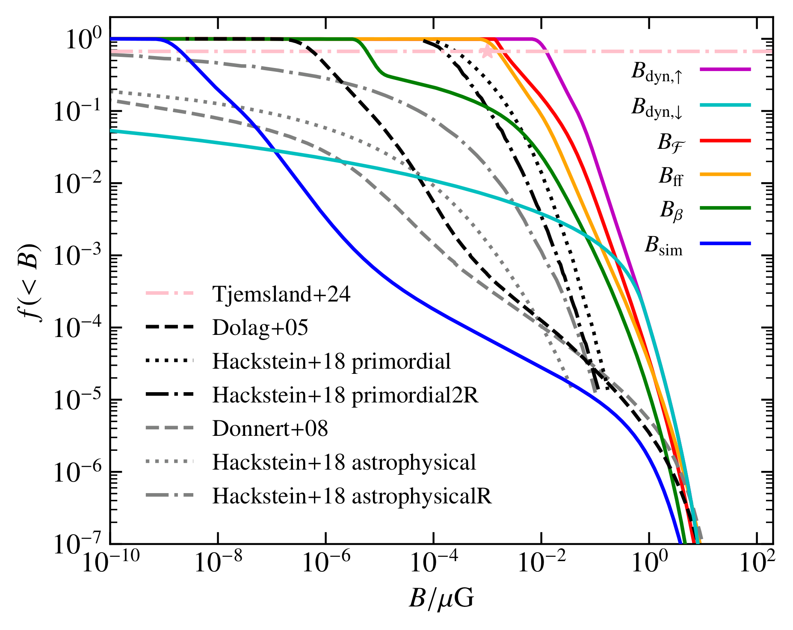
图注：Volume-weighted cumulative filling factors as a function of the corresponding threshold magnetic field strength for the six magnetic field models: $B_\mathrm{sim}$ (blue), $B_\mathrm{ff}$ (orange), $B_\beta$ (green), $B_\mathcal{F}$ (red), $B_{\mathrm{dyn}, \downarrow}$ (cyan), and $B_{\mathrm{dyn}, \uparrow}$ (magenta). The dashed black line represents the \(\textsc{Coruscant}\) Simulation \(\citep{dolag+05a},\) and the dashed gray line its iteration including magnetic field seeding from galactic outflows instead of primordial magnetic fields \(\citep{donnert+09}.\) The dotted and dash-dotted black lines show simulations of primordial seeding by \(\citet{hackstein+18},\) and the gray lines with the same styling show simulations of astrophysical seeding by the same author. The dashed-dotted horizontal pink line represents the lower limit of the filling factor for a tophat profile magnetic field at 1 nG estimated by \(\citet{tjemsland+24}.\)
对应解读：“建议重点查看的图表”第2、4项；“关键图表逐图导读”图2和图4；模型构造与重标定段落中的体积填充因子比较。
入选理由：该图直接给出六种磁场模型的体积加权累积填充因子随阈值磁场强度的变化，并叠加外部模拟和1 nG填充因子下限，是判断不同模型在纤维、空洞等低密度环境中磁化体积差异的核心证据。它比单纯切片图更定量，直接支撑日报关于体积加权分布、填充因子和多信使传播影响的解读。
来源与置信度：\(arxiv_source\)；high；\(arxiv_source\) / main.tex:figure[2]
Fig03
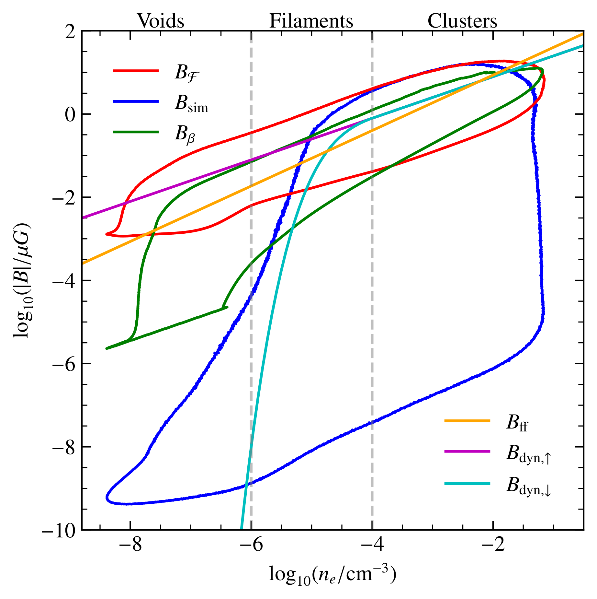
图注：Electron density-magnetic field strength phase space. For $B_\mathrm{sim}$, $B_\mathcal{F}$, and $B_\beta$ the $30\%$ contour of the mass-weighted 2D histogram is shown, while for $B_\mathrm{ff}$, $B_{\mathrm{dyn},\uparrow}$, and $B_{\mathrm{dyn},\downarrow}$ the model is a function of density anyway. See also \(\citet\)[][Fig.\,D.1.]{boess+24}.
对应解读：“建议重点查看的图表”第3项；“关键图表逐图导读”图3；模型拟合段落中电子密度—磁场强度关系和环境退化讨论。
入选理由：该图展示电子密度与磁场强度的相空间关系，能够直接检验不同模型在同一密度下给出的磁场强度是否分离，以及在高密度团核心区域是否收敛。它是理解重标定模型与SLOW自洽磁场差异的关键诊断图，尤其对应日报强调的纤维区模型退化和外推不唯一问题。
来源与置信度：\(arxiv_source\)；high；\(arxiv_source\) / main.tex:figure[3]
Fig07
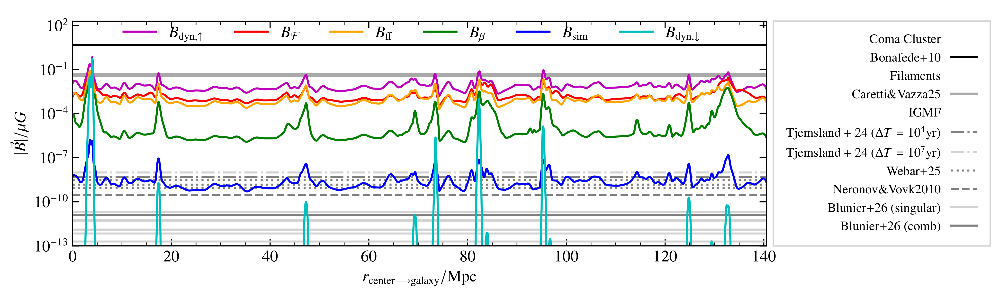
图注：The rescaled magnetic field $B_\mathrm{model}$ along the line-of-sight to the ideal position within the simulation. From top to bottom they are $B_{\mathrm{dyn}, \uparrow}$ (magenta), $B_\mathcal{F}$ (red), $B_\mathrm{ff}$ (orange), $B_\beta$ (green), $B_\mathrm{sim}$ (blue), and $B_{\mathrm{dyn}, \downarrow}$ (cyan). Also included are various observations of the magnetic field in different regimes of the Universe: The magnetic field in the center of the Coma cluster (black line, \cite{bonafede+10}), the magnetic field in filaments (dark gray line, \cite{carretti&vazza25}), and lower limits for the IGMF (\(\cite\)[dashdotdotted light gray line,][blazar activity of $\Delta T = 10^7 \mathrm{yr}$]{tjemsland+24}, \(\cite\)[dashdotdotted gray line,][blazar activity of $\Delta T = 10^4\mathrm{yr}$]{tjemsland+24}, \(\cite\)[dotted gray line,][]{webar+25}, \(\cite\)[dashed gray line,][]{neronov&vovk10}, \(\cite\)[solid light gray lines,][their results for singular blazars]{blunier+25}, and \(\cite\)[solid gray line,][their combined result]{blunier+25}.
对应解读：“建议重点查看的图表”第7项；“关键图表逐图导读”图7；模型拟合段落中与外部伽马级联约束和不同宇宙环境观测比较的部分。
入选理由：该图把不同重标定磁场模型沿理想位置视线的磁场强度与Coma团中心、纤维磁场观测以及多种IGMF下限约束放在同一图中，是连接模拟磁场模型和外部多信使/伽马级联约束的最直接图表。它能支撑日报中“SLOW自洽场与电磁级联推断较一致”的重点判断。
来源与置信度：\(arxiv_source\)；high；\(arxiv_source\) / main.tex:figure[7]
Fig06
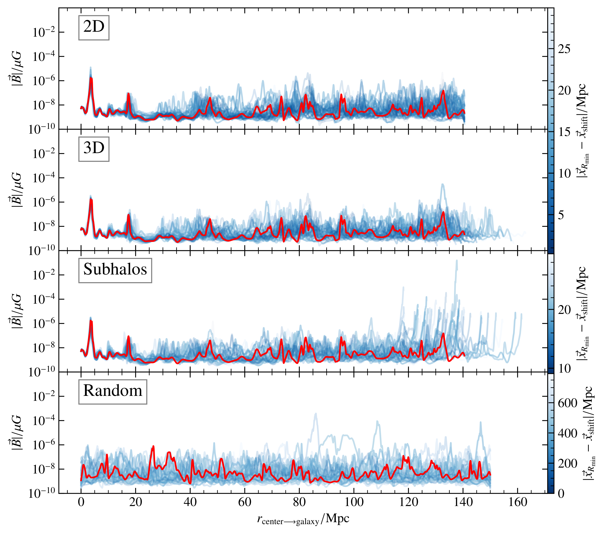
图注：The intergalactic magnetic field along the line-of-sight to the ideal position within the simulation (red, in panels one, two, and three). The bluish-to-white lines represent different methods to estimate the uncertainty of the magnetic field model (first to third panel: \(\enquote{2D shifting},\) \(\enquote{3D shifting},\) \(\enquote{suitable subhalos},\) see text for details). The fourth panel shows a magnetic field model based on random lines-of-sight. The color represents the distance of the line-of-sight endpoint to the ideal position.
对应解读：“建议重点查看的图表”第5、6、8项；“关键图表逐图导读”图6；模型拟合段落中视线级残差和位置不确定性传播讨论。
入选理由：该图展示到理想位置的视线磁场，并比较2D shifting、3D shifting、suitable subhalos和随机视线等不确定性估计方法。它直接说明少数结构峰值如何主导视线磁场积分，也能检验理想位置算法和位置扰动对多信使传播输入的稳健性。
来源与置信度：\(arxiv_source\)；high；\(arxiv_source\) / main.tex:figure[6]
Fig05
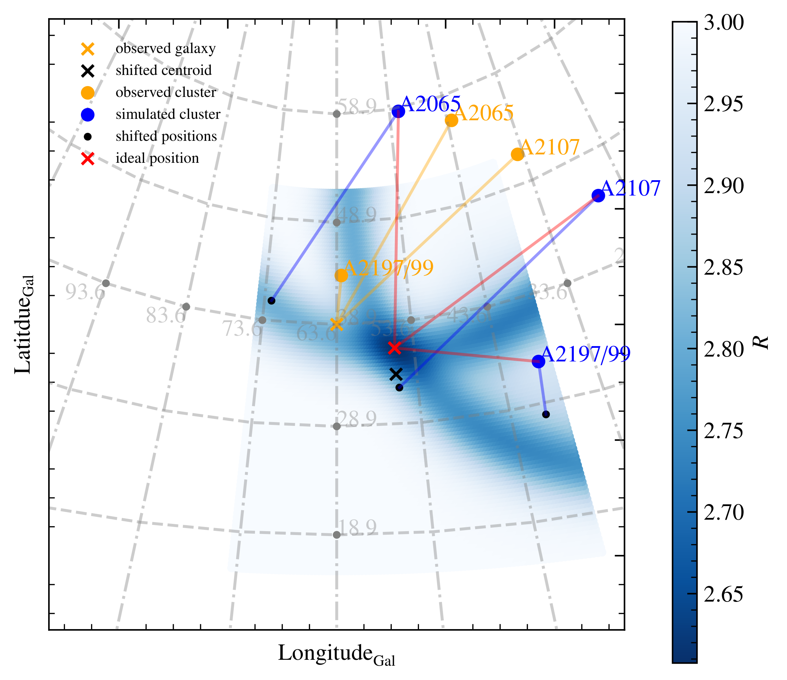
图注：Illustration of the grid search algorithm to minimize the differences between the observed distances (orange lines) and the distances expected from the simulation (red lines). The orange dots are the observed positions of the nearest three galaxy clusters to the observed position of a given source (orange cross, in this case, Mrk501). The blue dots are the simulated positions of the cross-matched galaxy clusters. The red cross shows the \(\enquote{ideal}\) position at which the parameter $R$ (blue-white color map) (see \cref{eq: Rparam}) is minimized, and therefore also the differences in the observed and simulated distances are minimal. The black cross and dots represent the \(\enquote{shifted}\) positions (see text).
对应解读：“建议重点查看的图表”第6项；“关键图表逐图导读”图5；详细解读中关于‘理想位置’算法的说明。
入选理由：该图是理想位置算法的示意和诊断图，标出观测源位置、邻近观测星系团、模拟星系团、理想位置以及距离失配参数R的空间分布。它能帮助读者判断算法是否在同一大尺度结构内寻找替代位置，而不是人为跨结构匹配，是理解后续视线抽取可信度的基础。
来源与置信度：\(arxiv_source\)；high；\(arxiv_source\) / main.tex:figure[5]
Fig01
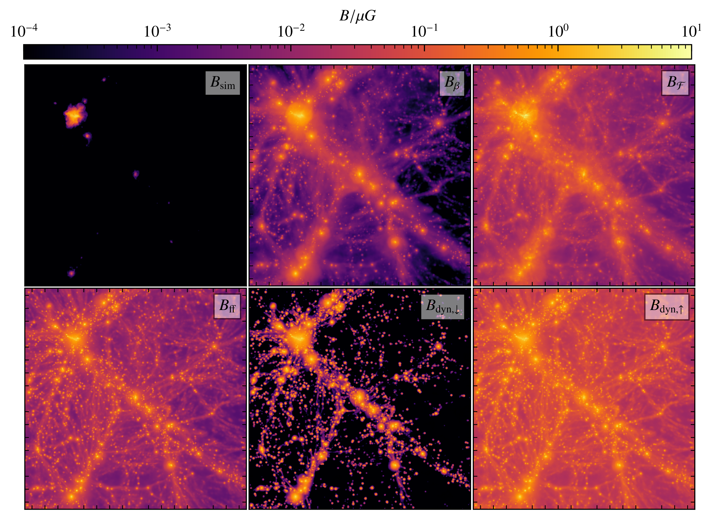
图注：Cutout around a filament and the Coma cluster (top left corner) with a side-length of $\mathrm{d} \approx 34\ \mathrm{cMpc}/h$, showing the magnetic field strength for the six magnetic field models: Top row, left to right: $B_\mathrm{sim}$, $B_\beta$, and $B_\mathcal{F}$. Bottom row, left to right: $B_\mathrm{ff}$, $B_{\mathrm{dyn}, \downarrow}$, and $B_{\mathrm{dyn}, \uparrow}$.
对应解读：“建议重点查看的图表”第1项；“关键图表逐图导读”图1；详细解读中关于本地宇宙网中团、纤维和空洞磁化形态差异的部分。
入选理由：该图在Coma团和相邻纤维切片中并列展示六种磁场模型，最直观地显示模型之间不仅是归一化不同，还可能在纤维连续性、空洞弱场范围和结构边界上存在差异。虽然定量性弱于填充因子和相空间图，但它非常适合作为读者理解后续统计图的空间形态背景。
来源与置信度：\(arxiv_source\)；high；\(arxiv_source\) / main.tex:figure[1]
强相关工作
这篇工作应放在三条文献线中理解。第一条是宇宙磁场起源和大尺度结构磁化的理论与数值模拟，包括原初种子场、天体反馈注入、结构形成激波和湍流发电机。检索关键词可用 “intergalactic magnetic field magnetogenesis cosmological MHD simulation cosmic web filaments”。这些工作提供了为什么星系团核心相对容易收敛、纤维和空洞却高度模型依赖的理论背景。
第二条是多信使传播应用，尤其是 “UHECR deflection intergalactic magnetic field constrained local universe” 和 “gamma-ray cascade IGMF blazar constraints”。超高能宇宙线方向关联研究经常需要同时处理银河磁场、星系际磁场和源分布；TeV 伽马级联研究则用点源缺失的级联辐射、角扩展或时间延迟限制弱磁场。本文与这些工作的关系是提供更现实的本地三维磁场输入，而不是直接给出某个源的最终物理解释。
第三条是受限宇宙学模拟和本地宇宙重建。SLOW 属于试图复现本地大尺度结构的模拟系列，与 CLUES、Cosmicflows 约束模拟等思想相近。本文的新意在于把受限模拟中的对象位置误差明确纳入视线磁场抽取问题，并提出“理想位置”算法。检索关键词可用 “constrained simulation local universe magnetic field UHECR SLOW”。如果要寻找相反观点或张力，应检索使用均匀星系际磁场、简单湍流盒或不同磁场重标定方案得到的传播结论，比较它们对源关联和级联约束的敏感性。
同一事件 / 同类源线索：
相似工作：
基础理论 / 方法工作：
相反观点 / 张力线索：
（未提供）
5. Prospect for Detection of Strongly Lensed Multi-messenger Signals of Binary Neutron Star Mergers
- 来源：arXiv / astro-ph.HE
- 链接：https://arxiv.org/abs/2607.07120v1
- 作者：Zhiwei Chen, Youjun Lu, Changwen Zeng
- 评分：novelty 7/10，importance 8/10，relevance 9/10，final 9.05/10
- 推荐理由：估算强透镜BNS多信使信号及短GRB、千新星、余辉探测率，直接关联未来伽马射线和多信使观测策略，虽为前景研究但参考价值较高。
中文题目：双中子星并合强透镜多信使信号的探测前景
做了什么：这篇文章估算第三代引力波探测器 Cosmic Explorer 和 Einstein Telescope 时代，强引力透镜化双中子星并合的电磁对应体有多大机会被看到。作者把透镜化引力波事件作为母样本，分别计算短伽马暴 prompt emission、千新星、以及余辉在不同波段的可探测率，并额外评估一种“已知透镜星系定点跟进”策略。主要结论偏谨慎：即使未来伽马射线探测器灵敏度比 Fermi-GBM 好十倍以上，透镜化短伽马暴的探测率也只有约 \(0.1\,{\rm yr}^{-1}\)；近红外 Roman Space Telescope 类设施对透镜化千新星更有希望，\(F106\)、\(F158\)、\(F213\) 波段约为 \(0.45\)、\(0.55\)、\(0.078\,{\rm yr}^{-1}\)；光学和射电余辉仍难，Athena 类 X 射线观测十年尺度可能有 \(0.5\) 到 \(5\) 例。
为什么重要：强透镜化多信使双中子星事件非常稀有，但一旦得到多重像、时间延迟和电磁对应体，就可以同时约束宇宙学距离、透镜质量分布、引力传播速度或引力子质量等问题。本文的重要性不在于宣称事件很多，而在于给出一个现实的“哪些波段值得投入、哪些策略收益有限”的数量级判断。
理论 / 观测 / 仪器方法价值：对理论方面，它把双中子星并合率、强透镜光学深度、喷流取向、千新星光变、余辉模型和仪器灵敏度放在同一个预测框架中。对观测方面，它直接服务于第三代引力波时代的随访规划：全天伽马触发并不会自动解决问题，深近红外和针对预先识别透镜星系的定点搜索可能更关键。对方法方面，它强调用透镜目录和引力波定位区相交来提升单位目标深度，而不是只做大面积盲扫。
为什么应该关注：如果你关心第三代引力波探测器时代的多信使天文学，这篇文章给出的结论会影响观测资源分配：透镜化引力波事件可能不少，但能被电磁确认的只是一小部分。它提醒我们，真正可用于精密宇宙学或引力理论检验的样本瓶颈，很可能不是引力波探测本身，而是电磁对应体识别、透镜宿主确认、时间延迟测量和随访深度。
展开详细解读：文章讲解、背景、理论、重点章节、图表与相关工作
文章详细讲解
科学问题：第三代引力波探测器会把双中子星并合探测推到高红移，并显著增加被星系尺度强透镜放大的引力波事件数。问题是：这些透镜化引力波事件中，有多少能同时看到电磁对应体？这里的电磁信号包括短伽马暴 prompt emission、千新星热辐射、以及从光学到射电和 X 射线的余辉。这个问题之所以关键，是因为只有引力波多重像而没有可靠电磁对应体时，透镜系统的红移、宿主、时间延迟和质量模型都会更难确定，进而削弱其用于宇宙学和引力理论检验的价值。
作者怎么做：论文以 Cosmic Explorer 和 Einstein Telescope 能探测到的强透镜双中子星引力波事件为起点，结合双中子星并合率、强透镜概率、透镜放大率和多重像选择效应，估算可进入电磁随访的事件母样本。随后分别处理三类电磁信号。短伽马暴部分主要受喷流准直角、视向角和伽马探测器触发阈值控制；千新星部分使用光变模板或模型亮度随红移、透镜放大和滤光片响应的变化；余辉部分考虑喷流动力学、环境密度、能量、视角和多波段灵敏度。论文还加入“已知透镜星系定点跟进”策略：先在引力波定位区域内找已有星系尺度透镜候选体，再对这些方向进行更深观测。
关键结果：第一，透镜化短伽马暴非常难。即使未来 \(\gamma\) 射线仪器灵敏度比 Fermi-GBM 提高十倍以上，预期探测率也只有约 \(0.1\,{\rm yr}^{-1}\)，约占可探测透镜化双中子星引力波事件的 \(2\times10^{-3}\)。这说明 prompt emission 的主限制不是单纯通量阈值，而是喷流取向和视场触发共同造成的几何瓶颈。第二，已知透镜定点策略在深透镜目录情形下能识别约 \(0.15\) 到 \(0.30\) 的透镜宿主比例，这对暗弱千新星和余辉特别有价值，因为它把大面积搜索转化为少数候选透镜方向的深曝光。第三，Roman Space Telescope 类近红外设施最有希望探测透镜化千新星，\(F106\)、\(F158\)、\(F213\) 波段年探测率分别约为 \(0.45^{+0.81}_{-0.34}\)、\(0.55^{+0.98}_{-0.41}\)、\(0.078^{+0.139}_{-0.059}\,{\rm yr}^{-1}\)。第四，光学和射电余辉总体较难，X 射线 Athena 类任务在十年尺度可能积累 \(0.5\) 到 \(5\) 个事件。
局限和下一步：这些数字强烈依赖未来双中子星并合率、高红移星形成和延迟时间分布、透镜星系质量函数、透镜目录完备性、千新星模型族、短伽马暴结构化喷流参数、以及第三代引力波定位能力。特别是“已知透镜定点”策略的收益取决于实际可用的深透镜目录，而未来 Rubin、Euclid、Roman 等巡天给出的透镜候选体会有纯度和完备性问题。下一步最值得做的是把真实的第三代引力波参数估计模拟、透镜识别算法、具体望远镜排程约束和多波段联合判别纳入端到端框架，而不仅是用阈值模型估算可探测率。
关键结果是怎么做出来的
本文最核心的证据链从“透镜化双中子星引力波事件母样本”开始。作者不是直接问全天有多少电磁瞬变，而是先限定在 Cosmic Explorer 和 Einstein Telescope 能探测、且满足强透镜多重像条件的双中子星并合事件。这个选择很重要，因为透镜化事件的红移分布、放大率分布和定位误差分布都不同于普通双中子星样本。论文将数值模拟和观测约束结合起来，给出可探测透镜化引力波事件的总体规模，再把电磁探测率表示为这个母样本乘以取向、亮度、仪器阈值、随访覆盖率和透镜宿主识别概率。
短伽马暴结果的关键不只是仪器灵敏度。作者评估未来 \(\gamma\) 射线望远镜在比 Fermi-GBM 更深的阈值下能否看到透镜化 prompt emission。得到的年率约 \(0.1\,{\rm yr}^{-1}\)，相当于全部可探测透镜化双中子星引力波事件的约 \(2\times10^{-3}\)。这说明样本损失主要来自喷流准直和视向角选择：只有少数并合的相对论喷流正好指向我们，透镜放大和灵敏度提升只能部分补偿距离衰减。读者应重点检查论文中伽马探测率随阈值变化的曲线，以及该曲线是否在高灵敏度端出现趋缓；如果趋缓明显，就说明几何选择已经成为主导限制。
千新星结果建立在滤光片、红移、放大率和光变时标的联合选择上。作者给出 Roman Space Telescope 类近红外设施在 \(F106\)、\(F158\)、\(F213\) 的探测率，分别约为 \(0.45^{+0.81}_{-0.34}\)、\(0.55^{+0.98}_{-0.41}\)、\(0.078^{+0.139}_{-0.059}\,{\rm yr}^{-1}\)。这些不确定度反映并合率、光度函数和模型选择等输入的不确定性。支持这些结论的图表通常应包括千新星峰值星等或光变曲线随红移和放大率变化的分布、不同滤光片的可见时间窗口、以及积分后的年率表。需要特别注意的是，较红滤光片虽然更适合高红移和红色千新星成分，但背景、灵敏度和光变时标会改变实际收益。
已知透镜星系定点跟进策略是本文区别于普通随访率估算的一个重点。作者考虑在引力波定位区内利用预先建立的星系尺度透镜候选目录，优先观察这些候选透镜。对于一个理想化但有现实动机的深透镜目录，论文得到可识别透镜宿主比例约 \(0.15\) 到 \(0.30\)。这一结果应由透镜候选体面密度、目录深度、定位面积和真实宿主在目录中的召回率共同决定。读者应检查相关图表中识别比例如何随透镜目录深度、定位区域大小和候选纯度变化；若曲线对目录假设极端敏感，那么策略收益就更像是未来巡天能力的函数，而非稳健常数。
余辉部分的证据链更依赖模型。论文认为光学和射电透镜化余辉总体难以检测，而 Athena 类 X 射线设施十年可能有 \(0.5\) 到 \(5\) 例。这个结论通常来自结构化喷流或外激波余辉模型与仪器阈值的卷积：高红移、离轴视角、稀薄环境和时间延迟都会让余辉更暗、更晚或更难与宿主/透镜星系分离。读者应关注余辉探测率对介质密度 \(n\)、喷流能量 \(E\)、视角 \(\theta_{\rm obs}\)、以及观测起始时间的依赖；这些参数之间退化强，单一“探测率”数值需要和假设一起阅读。
展开背景、理论、公式、模型、章节和图表导读
背景知识
研究对象是强引力透镜化的双中子星并合。普通双中子星并合已经是多信使天文学的核心源类：引力波给出紧致双星动力学和距离信息，短伽马暴追踪相对论喷流，千新星追踪中子俘获核合成和抛射物性质，余辉则反映喷流与外部介质相互作用。若这样的事件被前景星系强透镜化，观测者可能看到多个引力波像和多个电磁像，每个像有不同放大率和到达时间。
历史上，强透镜主要通过类星体、星系和超新星研究宇宙学和透镜星系质量分布。引力波强透镜则提供了不同的信息通道：波形本身携带绝对振幅和相位，多重像之间理论上应有一致的内禀参数，只差放大、到达时间和 Morse 相位等透镜效应。对双中子星而言，电磁对应体能补上红移、宿主和环境信息，因此比黑洞双星透镜事件更适合做标准警报器和多信使检验。
为什么现在值得重新看？第二代引力波探测器发现了 \(\mathrm{GW170817}\) 这样的原型事件，但探测体积有限，强透镜概率极低。第三代引力波探测器 Cosmic Explorer 和 Einstein Telescope 会把双中子星探测推向更大宇宙体积，透镜光学深度随红移上升，强透镜事件才可能从理论趣味变成实际样本。同时，Rubin、Euclid、Roman 等巡天将显著扩大星系尺度透镜候选目录，给“在引力波定位区里找已知透镜并定点跟进”提供现实基础。
该领域一个常见误区是：以为引力波透镜事件多了，电磁对应体自然也会多。实际上，短伽马暴受喷流准直强烈限制；千新星虽然相对各向同性，但高红移下很暗且光变快；余辉对视角和外部介质高度敏感；而强透镜多重像还引入额外的时间延迟、角分离和前景透镜污染。另一个误区是把透镜放大只看成“让源变亮”，却忽略透镜选择偏差：被探测到的样本会偏向高放大、特殊几何位置和特定红移范围，这会影响对真实事件率和物理参数的反推。
基础理论 / 方法脉络
基本物理图像可以从两层选择效应理解。第一层是双中子星并合是否能被引力波探测器看到；这取决于红移距离、源的质量、取向、探测器噪声谱和信噪比阈值。第二层是该事件是否被前景星系强透镜化并形成多个像；这取决于源红移、透镜红移、透镜质量分布和几何对准。第三层才是电磁对应体是否可见，它受喷流方向、光度、光变时标、望远镜灵敏度和随访策略控制。
强透镜对引力波和电磁波的几何光学效应在第一近似下相同：每个像的通量被放大 \(\mu_i\)，到达时间改变 \(\Delta t_i\)，角位置由透镜方程决定。对引力波而言，振幅按 \(\sqrt{\mu_i}\) 放大，因此若忽略透镜，事件会被误判为更近。对电磁对应体而言，通量按 \(\mu_i\) 放大，星等改变 \(-2.5\log_{10}\mu_i\)。但由于电磁信号有有限时标和观测窗口，多重像不一定都能被捕获。
短伽马暴的关键量是喷流开角或结构化喷流角分布、视向角 \(\theta_{\rm obs}\)、各向同性等效光度 \(L_{\rm iso}\)、探测器通量阈值 \(F_{\rm lim}\) 和视场覆盖。即使透镜把通量提高 \(\mu\) 倍，只有落在喷流亮核或足够明亮翼部的事件才会触发。千新星则更接近热辐射瞬变，关键量是抛射物质量、速度、不透明度、温度演化、红移 \(z\)、滤光片 \(X\) 中的观测星等 \(m_X(t)\)，以及可见时间窗口。
余辉来自相对论外激波，关键退化更强。喷流能量 \(E\)、外部密度 \(n\)、微物理参数 \(\epsilon_e\)、\(\epsilon_B\)、电子谱指数 \(p\)、视向角 \(\theta_{\rm obs}\) 都会改变光变峰值和峰时。一个较高能量、较低视角事件可以和一个低能量但更高密度事件产生相近的通量。对于透镜化事件，还要把不同像的时间延迟叠加进去，避免把后一个像误认为同一余辉的再增亮或普通变源。
本文的观测方法逻辑是把每个物理环节转化为可探测概率，然后对宇宙体积和源群积分。对盲扫策略，限制来自定位面积、曝光深度和瞬变鉴别；对已知透镜定点策略，限制来自透镜目录的完备性、纯度和定位区内候选数。实际系统误差包括双中子星并合率归一化、高红移演化、透镜模型、仪器阈值、背景污染、宿主星系消光和透镜星系光污染。
公式与推导
从事件率出发，源在红移 \(z_s\) 处的观测事件率要包含宇宙时间膨胀：
其中 \(R_{}\)
m BNS}(z_s)) 是共动体积中的双中子星并合率密度，\(dV_c/dz_s\) 是共动体积元，因子 \((1+z_s)^{-1}\) 把源系时间转换为观测者时间。本文所有探测率本质上都是在这个基准事件率上乘以强透镜概率、引力波选择函数和电磁选择函数。
强透镜光学深度可写成沿视线对透镜群的积分：
其中 \(z_l\) 是透镜红移，\(\Phi(\sigma_v,z_l)\) 是以速度弥散 \(\sigma_v\) 表征的透镜星系数密度函数，\(\Sigma_{}\)
m SL}) 是在源平面上的强透镜截面。它说明高红移源更容易被透镜化，但透镜样本会偏向较大 \(\sigma_v\) 的星系。
以奇异等温球作近似时，爱因斯坦角为
其中 \(D_{ls}\) 是透镜到源的角直径距离，\(D_s\) 是观测者到源的角直径距离。这个公式给出星系尺度透镜角分离的量级，也解释为什么预先识别透镜星系目录对定点策略有意义：候选体的角尺度和质量范围可以事先筛选。
透镜对引力波信噪比的主要影响是振幅放大：
其中 (
\(ho_i\)) 是第 \(i\) 个像的信噪比，\(\mu_i\) 是放大率，\(\tilde{h}(f)\) 是未透镜波形，\(S_n(f)\) 是探测器噪声功率谱。这个式子连接了第三代引力波探测器的灵敏度与透镜化事件母样本。
电磁通量在第 \(i\) 个像中满足
其中 \(D_L\) 是光度距离，\(L_{\nu'}\) 是源系谱光度，\(\Delta t_i\) 是该像的透镜延迟。这个公式同时用于千新星和余辉：红移改变频率和时间尺度，透镜改变通量，时间延迟决定多重像何时出现。
对应到星等阈值，放大率给出的增亮为
其中 \(M_X\) 是源系绝对星等，\(K_X(z_s)\) 是 \(K\)-校正，\(A_X\) 是消光或前景衰减。若 \(m_{X,i} 短伽马暴 prompt emission 的触发条件可近似写成 其中 \(f_{\rm sky}\) 是视场覆盖，\(k_\gamma\) 是能带和谱形相关校正，\(F_{\gamma,\rm lim}\) 是触发阈值，\(\Theta\) 是阶跃函数。这个式子显示，即便降低 \(F_{\gamma,\rm lim}\)，若 \(p(L_{\rm iso}|\theta_{\rm obs})\) 在大视角处很低，触发率也不会线性增加。 总的透镜化电磁对应体探测率可概括为 其中 \(\lambda\) 代表源内禀参数，如喷流、抛射物和环境参数；\(P_{\rm SL}\) 是透镜概率分布；\(P_{\rm GW}\) 是引力波探测选择函数；\(P_{\rm EM}\) 是电磁探测和随访成功概率。论文中的各类年率可以看成对不同 \(P_{\rm EM}\) 设定的积分结果。 若采用已知透镜定点策略，宿主可识别比例可写成一个简化选择函数： 其中 \(p(\Omega)\) 是引力波天空定位后验，\(\eta\) 代表透镜候选体属性，\(C_{\rm lens}\) 是透镜目录完备性，\(Q_{\rm follow}\) 是实际随访覆盖和深度。本文得到的 \(f_{\rm id}\simeq0.15\) 到 \(0.30\) 表明，目录完备性和定位面积会直接进入最终多信使样本数。 这类工作的“拟合”更接近事件率前向建模，而不是对单个源做参数估计。需要设定双中子星并合率 (R_{ 参数估计中的主要不确定性来自群体模型。并合率归一化会几乎线性缩放总探测率；高红移演化会改变透镜光学深度；透镜模型会改变放大率和时间延迟分布；喷流结构决定短伽马暴触发概率；千新星抛射物质量和不透明度决定近红外峰值；余辉的 \(E\)、\(n\)、\(\epsilon_e\)、\(\epsilon_B\)、\(p\) 与 \(\theta_{\rm obs}\) 产生强退化。论文给出的不确定区间应理解为这些输入分布传播后的结果，而不是单纯泊松误差。 如果把该框架写成似然，观测到的事件数通常可用泊松统计描述：给定模型 \({\cal M}\) 的期望数 \(\Lambda({\cal M})\)，观测到 \(N\) 个事件的概率为 \(P(N|{\cal M})=e^{-\Lambda}\Lambda^N/N!\)。但在预测论文中，更常见的是比较不同仪器、滤光片和随访策略下的 \(\Lambda\)。模型比较的实际读法是：看哪一项选择函数造成最大损失，哪种策略最能提升 \(P_{\rm EM}\)，以及结果是否对少数高放大尾部事件过度敏感。 残差和诊断在未来实际数据中会很重要。若发现的透镜化短伽马暴数显著高于预测，可能意味着喷流翼部更亮、结构化喷流更宽、或者伽马仪器触发效率被低估；若千新星数显著低于预测，可能来自高红移千新星本征更暗、透镜星系背景污染严重、或目录定点策略完备性不足。对单个候选事件，必须联合拟合多个像的时间延迟、放大率比、宿主红移和光变相似性，避免把普通超新星、活动星系核变源或未透镜短暂源误判为透镜化多信使事件。 模型可能失败的地方包括：强透镜质量模型过于理想化，忽略子结构和外部剪切；电磁光变模板不足以覆盖真实双中子星抛射物多样性；第三代引力波定位区域被过度乐观估计；实际望远镜排程无法按模型假设及时覆盖；透镜目录的机器学习候选纯度不足。这些问题不会推翻本文的方向性结论，但会影响具体年率，尤其是 \(0.1\,{\rm yr}^{-1}\) 量级以下的稀有通道。 样本和总体框架：读者应先看作者如何定义 Cosmic Explorer 和 Einstein Telescope 探测到的透镜化双中子星引力波事件。重点是并合率、红移分布、透镜概率、信噪比阈值和多重像判据，因为后面所有电磁率都以这个母样本为归一化。 短伽马暴 prompt emission 部分：这里应关注喷流模型、视向角分布、仪器灵敏度和视场假设。关键问题不是公式复杂度，而是作者如何把 \(\gamma\) 射线阈值提高与触发率增加联系起来，以及为什么提升十倍以上灵敏度仍只得到约 \(0.1\,{\rm yr}^{-1}\)。 千新星探测率部分：这是本文最值得细读的结果之一。建议检查不同滤光片 \(F106\)、\(F158\)、\(F213\) 的星等限制、曝光设定、光变模板和可见窗口。要看作者是否考虑红移导致的时间膨胀、谱能量分布移入近红外、以及透镜放大对峰值和持续时间判据的影响。 已知透镜定点策略：这一节应与普通盲扫策略分开阅读。重点是透镜目录深度、候选体面密度、引力波定位区域大小、可识别宿主比例 \(f_{\rm id}\) 和随访效率。约 \(0.15\) 到 \(0.30\) 的识别比例是策略价值的核心数字，但它依赖目录假设。 余辉与讨论：余辉结果需要结合模型假设阅读，尤其是 X 射线、光学、射电之间的差异。讨论部分通常会说明哪些通道适合做发现、哪些适合做确认，以及未来巡天和第三代引力波网络改进后哪些结论最可能改变。 透镜化双中子星引力波事件红移和放大率分布图：应看母样本集中在哪些 \(z_s\) 和 \(\mu\)，以及高放大尾部是否主导电磁探测率。 短伽马暴探测率随 \(\gamma\) 射线通量阈值变化的图：重点看灵敏度提高十倍后曲线是否仍很低，以及是否出现由喷流几何导致的饱和趋势。 千新星在 \(F106\)、\(F158\)、\(F213\) 中的星等或光变曲线图：应比较不同红移和放大率下峰值星等、可见持续时间和滤光片差异。 Roman 类设施千新星年探测率表或柱状图：重点看 \(0.45^{+0.81}_{-0.34}\)、\(0.55^{+0.98}_{-0.41}\)、\(0.078^{+0.139}_{-0.059}\,{\rm yr}^{-1}\) 的不确定度来源，而不只看中心值。 已知透镜定点策略的宿主识别比例图：应看 \(f_{\rm id}\) 如何随透镜目录深度、定位面积、候选透镜数和完备性变化。 余辉多波段探测率或光变图：重点比较光学、射电和 X 射线的阈值线与模型光变曲线，检查 Athena 类十年 \(0.5\) 到 \(5\) 例的结论是否由少数乐观参数驱动。 系统误差或参数敏感性表：应看并合率、喷流角、千新星亮度、环境密度和透镜目录假设分别如何改变最终率。 图 1：如果论文给出总体流程或事件率框架，读图时应把它当成选择函数分解图。横向流程通常从双中子星并合率开始，依次经过强透镜概率、引力波探测、定位、对应体发光模型和仪器阈值。陷阱是不要把每一步当作独立常数；例如红移同时影响透镜概率、引力波信噪比和电磁亮度。 图 2：透镜化引力波母样本的红移、放大率或时间延迟分布图通常是全篇基础。横轴可能是 \(z_s\)、\(\mu\) 或 \(\Delta t\)，纵轴是概率密度或事件数。读者应看电磁可探测事件是否偏向较低红移或较高放大率。如果可探测样本集中在分布尾部，最终率对透镜模型和高放大截断会很敏感。 图 3：短伽马暴探测率随仪器灵敏度变化的图应重点读斜率。横轴可能是相对 Fermi-GBM 的通量阈值或灵敏度提升因子，纵轴是年探测率或在透镜化引力波母样本中的比例。若曲线在高灵敏度端变平，说明主导限制从通量阈值转向喷流几何和视场覆盖。不要误读为“更灵敏没用”，而应理解为单靠 prompt emission 无法建立大样本。 图 4：千新星光变或可探测性图通常会按滤光片分面显示。横轴多为观测者时间，纵轴为视星等或通量；模型线可能对应不同红移、放大率或千新星模型。要看峰值是否越过极限星等线，以及可见窗口是否足够长以匹配随访排程。读图陷阱是星等轴反向，数值越小越亮；同时透镜时间延迟可能让第二个像在不同夜晚出现。 图 5：Roman 类 \(F106\)、\(F158\)、\(F213\) 探测率图或表是本文最直接的观测建议。应比较中心值和误差条，而不是只比较滤光片名称。\(F158\) 中心值略高并不必然意味着总是最优，因为真实观测还受背景、曝光时间、目标可见性和候选筛选影响。\(F213\) 较低可能反映灵敏度、背景和源谱能量分布共同作用。 图 6：已知透镜定点策略图应看横轴是目录深度、候选透镜密度、定位面积还是随访资源。纵轴若为可识别透镜宿主比例，约 \(0.15\) 到 \(0.30\) 的区间应与具体目录假设绑定。读图陷阱是高候选数并不一定更好，因为纯度下降会稀释随访时间。 图 7：余辉波段比较图应把模型光变曲线与不同仪器阈值线一起看。X 射线可能优于光学和射电，是因为背景、宿主污染、余辉谱段和仪器灵敏度共同决定，而不是因为所有余辉都天然 X 射线更亮。若图中只有少数参数组合越过阈值，十年 \(0.5\) 到 \(5\) 例的预测就应被视为模型依赖较强。模型拟合 / 应用方法
m BNS}(z))、质量分布、红移演化、透镜星系质量函数、透镜截面、以及 Cosmic Explorer 和 Einstein Telescope 的信噪比选择函数。随后通过 Monte Carlo 或半解析积分生成透镜化引力波事件母样本，再给每个事件赋予短伽马暴、千新星和余辉参数，判断是否超过相应仪器阈值。重点章节 / 结果段落怎么读
建议重点查看的图表
关键图表逐图导读
论文原图 / 可嵌入图片
Fig08
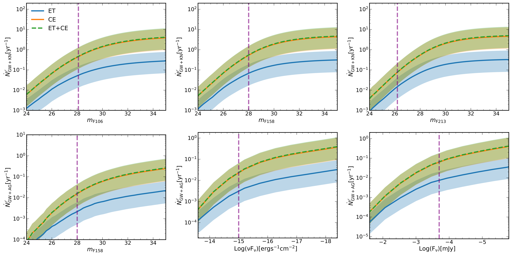
图注：The {total} joint detection rate per year of the lensed GW associated with detectable lensed kilonova (top panels) and afterglow signals (bottom panels), i.e., $\dot{N}^{\ell}_{\rm GW+KN}$ and $\dot{N}^{\ell}_{\rm GW+AG}$. In the top panels, the left, mid and right panel represent the results of $\dot{N}^{\ell}_{\rm GW+KN}$ for $\rm F106$, $\rm F158$, $\rm F213$ band of RST, while in the bottom panels, the left, mid and right panel represent $\dot{N}^{\ell}_{\rm GW+AG}$ for $\rm F158$, radio at $\rm 8.4GHz$ and X-ray at $5\rm KeV$, respectively. In each panel, the blue solid, orange solid and green dashed represent the results by using ET, CE and their network. The shaded regions correspond to the error range induced by the estimation of local merger rate density of BNS mergers. The red purple dashed line show the detection threshold for RST (i.e., $28.1$, $28.0$, $26.2$ $\rm mag$ respectively), Chandra ($10^{-15} \rm ergs^{-1}cm^{-2}$) and SKA2 ($0.2\nu \rm Jy$).
对应解读：对应“建议重点查看的图表”第4项 Roman 类设施千新星年探测率、第6项余辉多波段探测率，以及“关键图表逐图导读”图5和图7。
入选理由：这是最直接支撑论文核心结论的事件率图，同时给出透镜化 GW+KN 与 GW+AG 的年探测率、F106/F158/F213 及 F158/射电/X 射线分面、ET/CE/网络曲线、由本地并合率引起的阴影不确定区间和仪器阈值线。它能直接对应日报中提到的 Roman 千新星约 0.45、0.55、0.078 yr^-1 以及 Athena 类 X 射线十年 0.5 到 5 例的判断，比单纯光变或流程图更适合作为详细解读主图。
来源与置信度：\(arxiv_source\)；high；\(arxiv_source\) / BNSlensEM.tex:figure[8]
Fig04
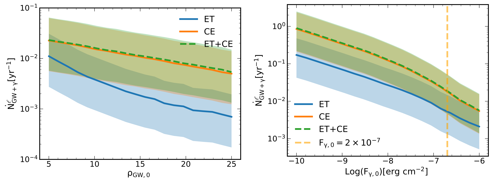
图注：The {total} joint detection rate of lensed GW and sGRB signals per year by third generation GW detectors and Fermi-GBM. The blue, orange and green solid lines show the results of ET, CE and their network respectively. In the top panel, the detection threshold for sGRBs is fixed as $F_{\gamma,0}=2\times 10^{-7}$\,erg~cm$^{-2}$, which is the detection threshold of Fermi-GBM. In the bottom panel, the detection S/N threshold of GW signals is set to be $\varrho_{\rm GW,0}=8$ and the yellow dashed line show the $F_{\gamma,0}=2\times 10^{-7}$\,erg~cm$^{-2}$ case.
对应解读：对应“建议重点查看的图表”第2项短伽马暴探测率随 γ 射线通量阈值变化，以及“关键图表逐图导读”图3。
入选理由：该图直接展示透镜化 GW 与 sGRB 联合探测率如何随 GW 信噪比阈值和 γ 射线 fluence 阈值变化，并标出 Fermi-GBM 阈值。它是验证“即使灵敏度提高十倍以上，sGRB 年率仍约 0.1 yr^-1、占比很低”这一结论的关键图，比 Fig02 的单纯 fluence 累积分布更接近日报关注的探测率和阈值依赖。
来源与置信度：\(arxiv_source\)；high；\(arxiv_source\) / BNSlensEM.tex:figure[4]
Fig06
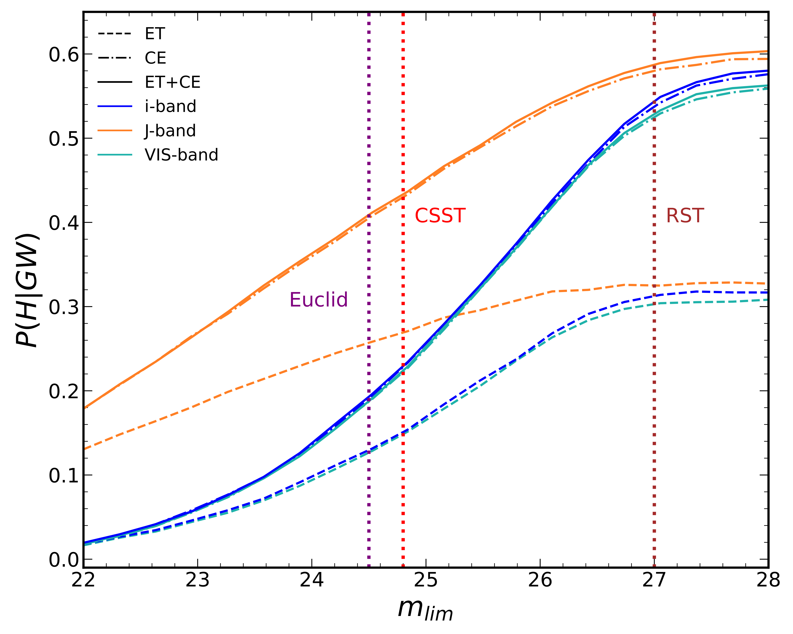
图注：The probability of a lensed BNS GW event that has lensing signatures of its host galaxy (the conditional probability $P({\rm H}|{\rm GW})$) identifiable by a (survey) telescope with the limiting magnitude of $m_{\rm lim}$ for different third generation GW detectors and their network.
对应解读：对应“建议重点查看的图表”第5项已知透镜定点策略的宿主识别比例图，以及“关键图表逐图导读”图6。
入选理由：该图给出有透镜化宿主星系信号可被巡天识别的条件概率 P(H|GW) 随望远镜极限星等 \(m_lim\) 的变化，并区分 ET、CE 和网络。它直接支撑日报中“已知透镜定点策略”“深透镜目录情形下可识别比例约 0.15–0.30”的讨论，是评估该策略收益和目录深度依赖的核心诊断图。
来源与置信度：\(arxiv_source\)；high；\(arxiv_source\) / BNSlensEM.tex:figure[6]
Fig07
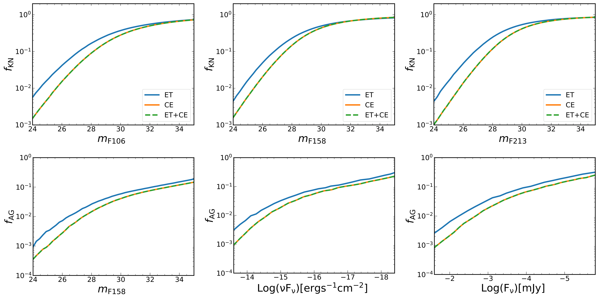
图注：The dependence of the fraction of those lensed EM counterparts can be observed, i.e., $f_{\rm KN}$ and $f_{\rm AG}$ for kilonova (top) and afterglow (bottom) respectively. In the top panels, the left, mid and right panel represent the results of $f_{\rm KN}$ for $\rm F106$, $\rm F158$, $\rm F213$ band of RST, while in the bottom panels, the left, mid and right panel represent $f_{\rm AG}$ for $\rm F158$, radio at $8.4$\,GHz and X-ray at $5\rm KeV$, respectively. In each panel, the blue solid, orange solid, and green dashed curves represent the results by using ET, CE, and the ET-CE network, respectively.
对应解读：对应“建议重点查看的图表”第3项千新星滤光片可探测性、第6项余辉多波段可探测性，以及模型前向选择函数讨论。
入选理由：该图展示在已知透镜/定点策略框架下，千新星和余辉电磁对应体可被观测的比例 \(f_KN\) 与 \(f_AG\)，并按 F106、F158、F213、红外、射电和 X 射线分面比较。它比单一事件率图更能说明选择函数中哪一环节造成损失，也能辅助解释为什么近红外千新星相对可行、光学/射电余辉较难、X 射线更有希望。
来源与置信度：\(arxiv_source\)；high；\(arxiv_source\) / BNSlensEM.tex:figure[7]
Fig01
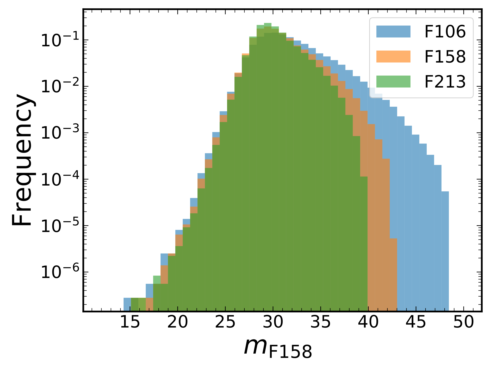
图注：The normalized probability distribution of the apparent magnitudes for the kilonova signals from {the mock BNS mergers, } calculated one day post-merger {over the redshift range of $[0,5)$}, if observed by F106 (blue), F158 (orange), and F213 (green) bands of RST, respectively.
对应解读：对应“建议重点查看的图表”第3项千新星在 F106、F158、F213 中的星等分布，以及“关键图表逐图导读”图4的千新星亮度与滤光片比较。
入选理由：该图给出并合后一天千新星在 RST F106、F158、F213 三个滤光片中的视星等归一化分布，可直接用来判断不同滤光片下源群体相对 RST 极限星等的亮度位置。它虽不是完整光变曲线，但对解释 F158 年率略高、F213 较低以及近红外探测窗口非常有用。
来源与置信度：\(arxiv_source\)；high；\(arxiv_source\) / BNSlensEM.tex:figure[1]
Fig03
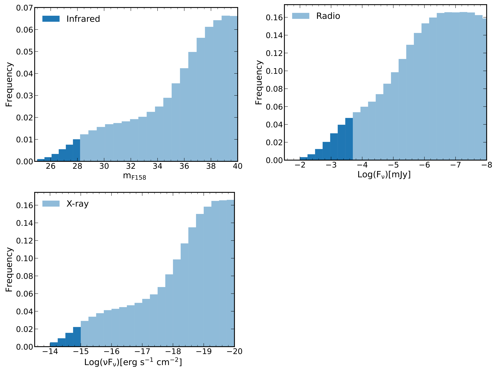
图注：The normalized distribution of the peak flux of afterglow signals after $10$\,h {within the redshift range of $[0,5)$}, in the infrared F158 (left), radio $8.4$\,GHz (mid), and X-ray $5$\,keV (right) bands, respectively. {The deeper color region in each panel shows the population below the detection threshold of RST, Chandra and SKA respectively. }
对应解读：对应“建议重点查看的图表”第6项余辉多波段探测率或光变图，以及“关键图表逐图导读”图7。
入选理由：该图比较余辉在红外 F158、射电 8.4 GHz 和 X 射线 5 keV 三个波段的峰值通量分布，并用深色区域标出低于 RST、Chandra、SKA 阈值的群体。它能直观看出多数余辉为何难以跨过阈值，并为 Fig08 中光学/射电低率和 X 射线相对有希望的结论提供物理支撑。
来源与置信度：\(arxiv_source\)；high；\(arxiv_source\) / BNSlensEM.tex:figure[3]
强相关工作
这篇工作属于“第三代引力波探测器时代的强透镜多信使事件率预测”。同类研究包括强透镜引力波事件率、透镜化双中子星的电磁对应体、透镜时间延迟宇宙学、以及用多信使传播时间约束引力子质量或等效引力传播速度的论文。检索关键词可用 “strongly lensed gravitational waves binary neutron stars electromagnetic counterparts”, “lensed kilonova Roman Space Telescope”, “third generation gravitational wave detectors lensed BNS”, “Einstein Telescope Cosmic Explorer strong lensing”。
与 \(\mathrm{GW170817}\) 相关的工作是最重要的原型背景：它不是透镜事件，但定义了双中子星多信使观测的基本链条，包括引力波、短伽马暴、千新星和余辉。本文可看作把 \(\mathrm{GW170817}\) 型多信使物理放到高红移、强透镜和第三代引力波探测器的语境下重新估算。相反或张力方向主要来自两类：一类认为第三代引力波探测器会产生大量透镜化引力波事件，另一类则强调电磁识别、定位和透镜目录完备性会让真正可用的多信使样本很小。本文结论更接近后者：引力波母样本不等于电磁确认样本。
同一事件 / 同类源线索：
- https://arxiv.org/abs/2607.07120
- https://arxiv.org/pdf/2607.07120
- https://arxiv.org/abs/1710.05832
- https://arxiv.org/abs/1710.05834
相似工作：
基础理论 / 方法工作：
相反观点 / 张力线索：
（未提供）
6. A Self-Consistent Framework for Synchrotron Equipartition Analysis
- 来源：arXiv / astro-ph.HE
- 链接：https://arxiv.org/abs/2607.06770v1
- 作者：Coleman Rohde, Tanmoy Laskar, Noah Franz, Gavin Farley, Collin Christy, Kate D. Alexander
- 评分：novelty 8/10，importance 8/10，relevance 8/10，final 9.00/10
- 推荐理由：提出自洽同步辐射能量均分分析框架并发布代码，可影响TDE、AGN、快速X射线暂现源和喷流能量估计；方法可复用性强。
中文题目：同步辐射能量均分分析的自洽框架
做了什么：这篇文章重新整理了同步辐射源常用的能量均分分析：从观测到的自吸收谱峰、距离和时间尺度出发，估计外流的半径、磁场、能量和速度。作者指出，文献中常把自吸收、热质子能量、电子与磁场偏离严格均分、几何填充因子、相对论喷流视角等修正逐个套用，但这些修正量彼此并不独立。论文推导了适用于牛顿外流、轴上相对论喷流和离轴相对论喷流的自洽框架，并提供公开代码；在潮汐瓦解事件 ASASSN-19bt、AT2019dsg，快速 X 射线暂现源 EP240414a，以及活动星系核 J0231-0433 上示范应用。核心结论是：把修正项同时而不是分开处理，可使能量估计提高约数倍，典型可达约 \(5\) 倍，意味着不少已有同步辐射外流能量可能被系统性低估。
为什么重要：同步辐射能量均分是研究射电暂现源、潮汐瓦解事件、伽马暴余辉、超新星激波和活动星系核喷流时最常用的“少数据估参”工具。许多情况下，观测者只有少数频段的射电谱和光变，无法直接解出半径、磁场、粒子能量和动力学结构。若均分分析的修正项处理不自洽，得到的喷流能量和速度会直接影响我们判断中心引擎是否能驱动相对论喷流、外流是否被壳层或环核介质减速、以及某类暂现源是否可能产生高能中微子或宇宙线。
理论 / 观测 / 仪器方法价值：这项工作的价值主要在方法论：它不是给某一个源重新做一次拟合，而是把已知修正项放到同一套方程里联立求解，避免把彼此耦合的因子当作独立乘法因子。对观测者而言，公开代码可用于快速、可复现地把射电谱峰转化为物理量；对理论工作者而言，它给出了更一致的能量、半径和速度先验，便于约束外流发射机制、喷流开角、热质子负载和电子加速效率。
为什么应该关注：如果你使用或引用过基于同步自吸收谱峰的半径和能量估计，这篇文章值得看。它提醒我们：一个看似技术性的“修正因子顺序”问题，可能把能量预算推高到影响物理解释的程度。对于潮汐瓦解事件和快速暂现源，几倍的能量差异可能决定其外流是普通盘风、弱喷流，还是需要更高效的黑洞吸积或磁通量积累机制。
展开详细解读：文章讲解、背景、理论、重点章节、图表与相关工作
文章详细讲解
科学问题：同步辐射源的基本观测量通常是射电谱的峰值频率、峰值通量、距离和观测时间。经典能量均分分析利用同步自吸收条件和总能量最小化，估计发射区半径、磁场强度和能量。但真实源并不总是球对称、完全均分、纯电子正电子等离子体或牛顿运动；相对论多普勒因子、喷流开角、填充因子、热质子负载、电子最低洛伦兹因子和离轴视角都会改变结果。本文要解决的问题是：这些修正项相互耦合时，如何给出内部一致的物理量，而不是把多个文献公式机械相乘。
作者怎么做：论文从同步辐射和自吸收的标准表达出发，把粒子能量、磁场能量、源体积、几何因子、电子与质子能量比、偏离均分参数以及相对论运动带来的频率、通量和时间变换放入同一个框架。对于牛顿外流，核心是重新写出给定观测谱峰时的总能量函数，并在包含各类修正后寻找最小能量解。对于轴上和离轴相对论喷流，作者还需要把多普勒因子和视角依赖的可见面积、实验室系半径、共动系磁场等量联系起来。论文实现了一个易用的公开代码，使观测者能输入谱峰和几何或动力学假设，得到自洽的半径、能量、磁场和速度估计。
关键结果：作者把该框架应用到 ASASSN-19bt、AT2019dsg、EP240414a 和 J0231-0433，展示不同源类中耦合修正的影响。最重要的结论不是某个单源参数，而是修正项的相互依赖会系统性改变结果：若像过去那样独立施加修正，可能低估总能量；在示例源中，自洽处理可使能量估计增加约数倍，摘要中给出的代表值约为 \(5\) 倍。能量增加会连带改变对外流速度、喷流是否相对论性、中心引擎功率和质量负载的判断。
局限和下一步：能量均分本质上仍是近似推断，而不是完整辐射流体动力学反演。它依赖单区或少区同步源图像、电子能谱假设、吸收机制判断以及几何设定；若源存在强烈非均匀结构、多组分喷流、外部自由-自由吸收或时间演化中的粒子冷却，单次谱峰均分估计会有系统偏差。下一步应把该自洽框架嵌入多历元射电光变拟合、宽带谱能量分布建模和喷流动力学模型中，并用合成观测检验它在非均匀源上的偏差。
关键结果是怎么做出来的
本文最重要的证据链从样本选择开始。作者不是建立大样本统计关系，而是选取四类具有代表性的同步辐射源作方法示范：潮汐瓦解事件 ASASSN-19bt 和 AT2019dsg 代表核区暂现外流，EP240414a 代表快速高能暂现源的射电后随辐射，J0231-0433 代表活动星系核喷流或致密射电源情形。这些对象共同点是可用射电谱峰或近似谱峰约束同步自吸收发射区，但物理解释对能量、半径和速度很敏感。
数据层面，论文使用每个源已有观测给出的峰值通量、峰值频率、红移或光度距离、观测时刻，以及必要的几何和视角假设。关键并不是事件数多，而是每个对象都能展示某一类修正的耦合：例如热质子能量会改变总粒子能量与磁场能量的均衡点，离轴或相对论运动会同时改变共动系频率、通量、可见面积和时间尺度，填充因子改变体积但也反馈到磁场估计。因此，表格中各对象的输入量、假设参数和输出半径/能量/磁场是读者最应核查的部分。
统计显著性在这篇方法论文中通常不是通过“几 sigma 探测”来体现，而是通过模型比较和参数重算体现：同一组观测输入，在传统逐项修正方法和自洽联立框架下得到不同的能量与动力学量。若论文给出比值图或表，例如 \(E_{\rm self-consistent}/E_{\rm sequential}\)、\(R_{\rm self-consistent}/R_{\rm classical}\) 或 \(B_{\rm self-consistent}/B_{\rm classical}\)，这些比值就是核心诊断量。摘要中提到能量可提高约 \(5\) 倍，说明主要结论来自系统性偏移而不是随机噪声优势。
模型比较的关键是总能量最小化条件如何改变。传统分析往往先用经典均分半径，再乘上若干校正因子；本文则把这些因子放进同一个能量函数，并对半径、磁场或相关尺度重新求极值。这样得到的最小点位置会移动，因而不能用独立修正的乘积精确替代。支持该结论的图表应包括修正前后参数对比、不同修正因子下能量曲线的极小值移动、以及牛顿和相对论情形下的尺度关系。
主要系统误差来自输入谱峰本身和物理假设。若射电谱峰并非同步自吸收而是由外部吸收、观测频段不足或多组分叠加造成，均分半径会偏。若电子能谱指数、最低电子能量、质子负载或喷流视角取值错误，自洽框架会给出精确但模型依赖的答案。稳健性检验应关注作者是否改变这些假设、扫描参数空间、比较牛顿与相对论解、并报告输出量对每个输入参数的幂律敏感性。
展开背景、理论、公式、模型、章节和图表导读
背景知识
研究对象是同步辐射外流：相对论电子在磁场中螺旋运动，产生从射电到高能波段的非热辐射。在超新星、伽马暴余辉、潮汐瓦解事件、快速蓝光暂现源、快速 X 射线暂现源和活动星系核喷流中，射电辐射经常由这种机制产生。由于射电源角尺度通常无法直接分辨，观测者需要从谱形和光变间接估计发射区大小和能量。
历史上，能量均分或最小能量论证是射电天文学的基本工具。它利用一个简单事实：在给定同步辐射亮度时，如果磁场太弱，需要大量高能电子；如果磁场太强，磁场能本身很大。因此总能量作为磁场或源尺寸的函数存在极小值，这个极小值附近常被称作“均分”或“近均分”状态。经典公式非常方便，因此被广泛用于从一个射电谱峰估算源半径和能量。
问题在于，现代暂现源研究面对的对象比经典均匀射电源复杂得多。潮汐瓦解事件可能有非相对论盘风、温和相对论喷流或离轴喷流；快速高能暂现源可能有多组分喷射物；活动星系核喷流有强烈多普勒增亮；一些源中质子携带的能量可能远大于辐射电子能量。过去几十年许多论文分别给出了对应修正，但在实际使用中，研究者常把这些修正当成互不相关的后处理因子。
现在值得重新看的原因有两个。第一，射电暂现源样本正在迅速增长，许多事件只有稀疏射电数据，均分估计仍是第一性物理判断的入口。第二，能量预算正在被用来区分引擎模型，例如潮汐瓦解事件是否发射喷流、快速 X 射线暂现源是否类似伽马暴、射电弱事件是否能产生高能中微子。几倍的能量系统误差会改变这些结论。
常见误区包括：把均分能量当成真实能量的严格下限而忽略模型依赖；把同步自吸收峰和任意射电谱峰混同；认为所有修正项都能线性相乘；认为“均分”意味着电子能量和磁场能量必然完全相等；以及在相对论喷流中忽略观测时间、频率、通量和面积同时受到多普勒因子影响。本文正是针对这些误区中的“修正不自洽”问题给出系统处理。
基础理论 / 方法脉络
基础物理图像是：一团含有非热电子和磁场的等离子体向外运动，电子能谱通常近似为幂律，低频射电光子会被同一批电子通过同步自吸收重新吸收。因此谱能量分布在低频端近似光学厚，高频端近似光学薄，在光学深度约为 \(1\) 的位置出现谱峰。谱峰频率和峰值通量同时携带了源尺寸、磁场强度和电子数密度的信息。
能量均分分析需要把电子能量和磁场能量写成可观测量的函数。对于给定的峰值通量 \(F_{\nu,p}\)、峰值频率 \(\nu_p\) 和光度距离 \(d_L\)，如果假设球形或锥形均匀发射区，就可用同步发射系数和吸收系数建立 \(R\)、\(B\)、电子归一化和观测量之间的关系。再把总能量 \(E_{\rm tot}=E_e+E_B\) 对 \(R\) 或 \(B\) 最小化，得到所谓均分半径和均分能量。
本文关心的修正项改变的是同一组方程，而不仅是最终结果。若热质子能量是电子能量的若干倍，总粒子能量项会变大，最小能量点会向不同磁场移动。若电子和磁场偏离严格均分，总能量不再在经典点取得同样极小值。若源只占据总体积的一部分，体积项和粒子密度都会变化。若外流是相对论喷流，观测到的频率、通量和时间由多普勒因子变换，共动系能量和实验室系能量也要区分。
观测方法上，最理想的数据是多频同时射电谱，可以直接拟合同步自吸收转折；次优情况是非同时多频光变插值得到近似谱峰。输入误差不仅来自通量测量，还来自峰值频率是否被观测覆盖、源是否多区叠加、是否存在闪烁、宿主星系射电污染或外部吸收。对暂现源而言，观测时间 \(t_{\rm obs}\) 还给出速度约束，因为半径不能任意大而不违反光行时和动力学限制。
主要退化关系包括 \(R\) 与 \(B\) 的退化、电子最低能量与粒子总能量的退化、质子负载与总能量的退化、以及相对论喷流中洛伦兹因子和视角的退化。本文的自洽框架并不能凭空消除这些退化，但能保证在给定假设下各修正项彼此一致，从而使不同源和不同论文之间的比较更可靠。
公式与推导
第一步从电子能谱开始。常用假设是共动系中非热电子满足幂律分布：
这里 \(N(\gamma)\) 是单位体积电子数密度在洛伦兹因子区间 \(d\gamma\) 内的分布，\(K\) 是归一化，\(p\) 是电子谱指数，\(\gamma_m\) 是最低电子洛伦兹因子。该式是同步发射和吸收系数的起点，适用于单区、各向同性 pitch angle、非热电子占主导的近似。
第二步写出光学薄同步辐射发射系数的尺度关系：
这里 \(j_\)
u) 是单位体积、单位频率、单位立体角发射率，\(B\) 是磁场强度，\(\nu\) 是频率。它说明在高频光学薄段，通量同时依赖电子数和磁场；仅靠光学薄通量无法唯一确定 \(K\) 与 \(B\)。
第三步引入同步自吸收系数：
其中 \(\alpha_\)
u) 是吸收系数。自吸收峰附近满足光学深度条件
其中 \(R\) 是发射区特征半径，\(\nu_p\) 是谱峰频率。这个条件把电子密度归一化 \(K\) 与 \(B\)、\(R\)、\(\nu_p\) 联系起来。
第四步把峰值通量与源函数联系起来。在牛顿、均匀、近球形近似下，光学厚端强度约为 \(S_\)
u=j_\
u/\alpha_\
u)，于是
这里 \(F_{\}}\)
u,p}) 是峰值通量，\(d_L\) 是光度距离。该式给出 \(B\) 与 \(R\) 的观测约束：
这一步是经典均分半径推导的关键，因为它把不可直接测量的磁场写成半径函数。
第五步写总能量。磁场能量为
其中 \(V\) 是发射体积。电子能量可写为
若有热质子或不可辐射粒子贡献，可用 \(1+k\) 放大粒子能量，其中 \(k\) 表示非辐射粒子能量与电子能量之比。
第六步构造包含修正项的总能量函数：
经典均分解来自极值条件
本文强调的是，若 \(k\)、填充因子、偏离均分参数或相对论因子改变了 \(E_B(R)\) 和 \(E_e(R)\) 的函数形式，极值点本身会移动；不能先求经典极小值再独立乘上所有修正。
第七步加入偏离均分参数。可定义
当 \(\eta\sim 1\) 时接近均分，但最小能量点不一定严格对应 \(\eta=1\)，其精确值依赖 \(p\)、几何和吸收条件。该参数让使用者显式探索磁场主导或粒子主导解。
第八步处理相对论喷流。观测频率和共动频率满足
通量近似满足
其中 \(\delta=[\Gamma(1-\beta\cos\theta_{\)
m obs})]^{-1}) 是多普勒因子，\(\Gamma\) 是 bulk 洛伦兹因子，\(\beta c\) 是速度，\(\theta_{\rm obs}\) 是视线角，\(z\) 是红移，带撇号的量在共动系中测量。轴上和离轴情形会改变可见面积和到达时间，因此也会反馈到 \(R\)、\(B\) 和 \(E_{\rm tot}\) 的极值求解。
第九步把观测误差传播到参数估计。若拟合输入为多频通量 \(F_i\)，模型为 \(F_{\}}\)
u_i}(\boldsymbol{\theta}))，常用高斯似然为
这里 \(\boldsymbol{\theta}\) 可包含 \(R\)、\(B\)、\(p\)、\(k\)、\(\eta\)、几何因子和相对论参数。该式说明如何把谱峰测量或全谱拟合与自洽均分框架连接起来，并用残差判断同步自吸收单区模型是否足够。
模型拟合 / 应用方法
这类工作的拟合对象通常不是直接拟合“能量”，而是先拟合或整理观测谱形，得到峰值频率 \(\nu_p\)、峰值通量 \(F_{\nu,p}\)、光谱指数、红移或距离、观测时间以及可能的角尺度上限。若数据足够，可以直接用同步自吸收模型拟合全谱；若数据稀疏，则使用峰值点和误差作为输入。本文框架随后把这些输入映射为半径 \(R\)、磁场 \(B\)、总能量 \(E_{\rm tot}\)、速度或洛伦兹因子等物理量。
参数估计上，核心是对给定观测约束求总能量极小值，或在设定偏离均分参数后求满足约束的解。可自由或半自由的量包括电子谱指数 \(p\)、电子最低洛伦兹因子 \(\gamma_m\)、非辐射粒子能量比 \(k\)、填充因子、喷流开角、视角、bulk 洛伦兹因子和是否轴上。若使用贝叶斯框架，似然来自射电通量残差，先验则来自几何、速度不超过光速、观测时延、VLBI 角尺度或多波段物理限制。
残差诊断非常重要。若低频谱斜率不符合同步自吸收预期，高频谱斜率与同一个 \(p\) 不一致，或不同历元推得的半径随时间演化不物理，就说明单区均分模型可能失效。对于多组分喷流，谱峰可能是多个自吸收分量叠加而不是单一 \(\tau_{\nu}\sim1\) 转折；此时用单区公式得到的半径和能量更像有效值，而非真实结构参数。
主要退化包括 \(R\)-\(B\) 退化、\(k\)-\(E_{\rm tot}\) 退化、\(\eta\)-\(B\) 退化、喷流视角与洛伦兹因子的退化，以及填充因子与粒子密度的退化。本文的自洽性体现在这些退化不会被错误地拆成独立修正项；改变一个参数会通过联立方程影响其他参数。因此实际应用时，最好报告参数扫描范围和能量比值，而不仅给一个最佳值。
模型可能失败的场景包括：外部自由-自由吸收主导低频转折、源内存在显著辐射冷却断裂、电子谱不是单幂律、磁场和粒子分布强烈非均匀、射电闪烁改变峰值通量、或暂现源的观测不是同一物理区在同一时刻的谱。对 ASASSN-19bt、AT2019dsg、EP240414a 和 J0231-0433 这类对象，读者应特别注意作者如何处理非同时数据、宿主或 AGN 背景、以及相对论运动假设。
重点章节 / 结果段落怎么读
-
引言和问题定义：应重点看作者如何界定“传统均分分析”的不足。这里通常会回顾经典同步自吸收均分公式、已有修正项，以及为什么独立套用修正会产生内部不一致。读者要抓住本文的中心论点：修正因子之间通过极值条件耦合。
-
牛顿外流框架：这是理解全篇的基础。应检查作者如何定义源几何、填充因子、电子能谱、质子能量贡献、偏离均分参数，以及如何从 \(F_{\nu,p}\)、\(\nu_p\) 和 \(d_L\) 推导 \(R\)、\(B\) 和 \(E_{\rm tot}\)。这一节的幂律指数和归一化常数决定了代码输出的物理尺度。
-
相对论轴上与离轴喷流扩展：这一部分要看多普勒因子、到达时间、可见面积和共动系量如何进入公式。读者应特别留意作者是否区分观测系、源静止系和共动系，以及离轴喷流中视角和洛伦兹因子的退化如何处理。
-
代码实现和输入输出：这节对实际使用者最重要。应看代码需要哪些观测输入、哪些参数有默认值、输出量的单位和参考系是什么、误差或参数扫描如何实现。若论文有示例 notebook 或公开仓库，建议对照复现实例源的表格。
-
个例应用：ASASSN-19bt、AT2019dsg、EP240414a 和 J0231-0433 的应用段落是检验方法影响的地方。读者应比较传统估计与自洽估计的能量、半径、磁场和速度差别，并判断差别是否足以改变物理解释。
-
讨论和局限：这里应关注作者对适用范围的限定，例如单区模型、同步自吸收识别、热质子负载和喷流几何假设。好的读法是把这节当作“何时不能直接用代码”的警示清单。
建议重点查看的图表
-
传统修正与自洽修正的流程图或概念图：看作者是否清楚展示各修正项之间的耦合关系，尤其是哪些量会反馈到能量极小化条件。
-
总能量随半径或磁场变化的曲线：重点看不同 \(k\)、\(\eta\)、填充因子或相对论因子下极小值位置如何移动。这类图最能说明为什么不能只在最终结果上乘修正因子。
-
牛顿外流公式与相对论喷流公式的参数尺度图：检查 \(R\)、\(B\)、\(E_{\rm tot}\) 对 \(F_{\nu,p}\)、\(\nu_p\)、\(d_L\) 和多普勒因子的幂律敏感性。
-
四个示例源的参数对比表：应核查每个源的输入谱峰、距离、时间、几何假设、传统输出和自洽输出。能量增加约 \(5\) 倍是否由少数极端参数驱动，需要从表中判断。
-
修正因子比值图：若有 \(E_{\rm new}/E_{\rm old}\)、\(R_{\rm new}/R_{\rm old}\)、\(B_{\rm new}/B_{\rm old}\) 的图，应看误差条、参数扫描范围和对象间差异。
-
稳健性或参数扫描图：关注热质子负载、偏离均分参数、视角、洛伦兹因子、填充因子变化时输出量是否平滑、是否出现多解或不物理解。
-
谱拟合或观测输入图：如果论文展示各源射电谱，应检查自吸收峰是否被数据真正覆盖，低频和高频斜率是否支持单区同步自吸收解释。
关键图表逐图导读
图 1：若为框架示意图，横向通常从观测输入 \(F_{\nu,p}\)、\(\nu_p\)、\(d_L\)、\(t_{\rm obs}\) 走向物理输出 \(R\)、\(B\)、\(E_{\rm tot}\)、速度；纵向可能列出自吸收、质子负载、偏离均分、几何和相对论修正。读图时不要只看有哪些修正，而要看箭头是否显示这些修正会改变同一个极值求解问题。
图 2：若为能量曲线图，横轴可能是半径 \(R\) 或磁场 \(B\)，纵轴是总能量 \(E_{\rm tot}\)。不同颜色线代表不同修正假设。关键是比较曲线最低点的位置和深度：若最低点横向移动，说明最终能量不能由经典解简单乘因子得到。读图陷阱是只比较某一固定 \(R\) 处的能量，而忽略极小值条件已改变。
图 3：若为牛顿与相对论解的尺度比较，横轴可能是多普勒因子、洛伦兹因子或视角，纵轴为 \(R\)、\(B\) 或 \(E_{\rm tot}\) 的比值。应看轴上和离轴曲线是否有不同趋势，以及在哪些参数范围内相对论修正最大。陷阱是把 \(\delta\) 的通量增亮影响和到达时间/可见面积影响分开理解，实际上它们在自洽解中同时出现。
图 4：若为四个源的参数表或柱状对比图，横轴通常列 ASASSN-19bt、AT2019dsg、EP240414a、J0231-0433，纵轴为能量或半径比值。重点看误差条或假设范围是否覆盖 \(1\)，以及约 \(5\) 倍能量提升是否是普遍趋势还是由某一源主导。若每个源的观测质量差异很大，不应把柱状图当作严格统计样本。
图 5：若为参数扫描图，横轴可能是 \(k\)、\(\eta\)、填充因子或 \(\theta_{\rm obs}\)，纵轴为输出能量。应检查曲线是否近似幂律、是否有拐点、是否存在不允许区域。读图时要注意不同参数并非都可由射电数据独立约束，宽广的允许区间可能代表先验选择而非观测测量。
图 6：若为射电谱或光变输入图，横轴为频率或时间，纵轴为通量密度。数据点应显示谱峰是否被直接采样，模型线应体现低频自吸收和高频光学薄段。陷阱是非同时观测造成的假谱形、闪烁造成的通量波动、以及宿主或 AGN 持续辐射污染；这些都会进入均分估计的系统误差。
论文原图 / 可嵌入图片
Fig03
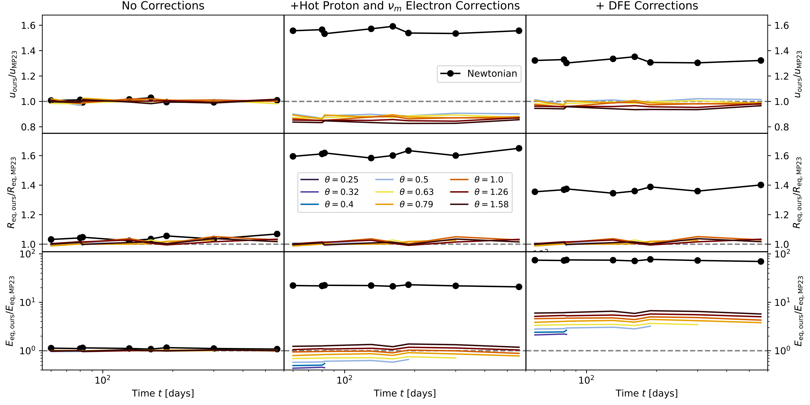
图注：The ratio of equipartition quantities derived from our analysis of AT2019dsg with that using the framework of \(\cite{Matsumoto_Piran_2023}\) for a Newtonian case (black) and off-axis case (colored) for no corrections $\curlc=3$, $\xi=1$, $\pb=2$, $\epsilon=1$ (left), for only hot proton and electrons radiating at $\nu_m$ corrections $\curlc\neq3$, $\xi\neq1$, $\pb\neq2$, $\epsilon=1$ (middle), and for deviations from equipartition $\curlc\neq3$, $\xi\neq1$, $\pb\neq2$, $\epsilon\neq1$ (right). Here we assume the same cosmology as \(\cite{Matsumoto_Piran_2023}\) $H_0=69.6\text{ km/s/Mpc}$, $\Omega_{m}=0.286$, $\Omega_{\Lambda}=0.714$, the same geometric parameters as \(\cite{Matsumoto_Piran_2023}\) $f_A=f_V=1$, and the same microphysical parameters $\epsilon_e=0.1$, $\epsilon_B=0.02$ and redshift $z=0.051$ in \(\cite{Cendes_Alexander_Berger_Eftekhari_Williams_Chornock_2021}.\)
对应解读：对应“建议重点查看的图表”第5、6项，以及“关键图表逐图导读”中关于修正因子比值、参数扫描和不同修正假设下能量/半径变化的解读。
入选理由：该图直接比较本文自洽框架与 Matsumoto & Piran 2023 框架在 AT2019dsg 上得到的均分量比值，并分成无修正、只含热质子与电子辐射频率修正、再加入偏离均分修正三组面板。它最清楚展示多个修正项不能独立相乘的核心结论，是支撑“自洽耦合会改变能量估计”的关键图。
来源与置信度：\(arxiv_source\)；high；\(arxiv_source\) / main.tex:figure[3]
Fig02
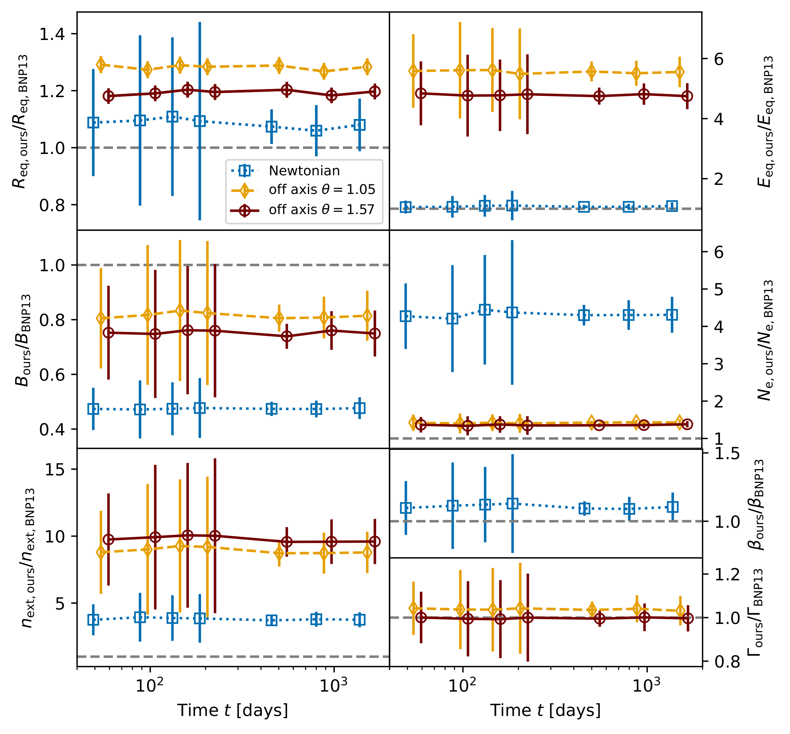
图注：The ratio between equipartition quantities for the radio SEDs of the TDE ASASSN~19bt derived from our analysis and those reported by \(\cite{Christy_et_al._2024}\) (which used the \(\citet\)[][BNP13]{Barniol_Duran_Nakar_Piran_2013} formalism) for a Newtonian outflow model and two relativistic off-axis jet models. Here we assume the \(\cite{Planck_2018}\) Table 2 (TT, TE, EE + lowE + lensing + BAO) cosmology $H_0=67.66\text{km/s/Mpc}$, $\Omega_{m}=0.3111$, $\Omega_{\Lambda}=0.6889$, and the redshift $z=0.0262$, same microphysical, and geometric parameters in each case as in Table 2 of \(\cite{Christy_et_al._2024}.\) In the off-axis relativistic cases, $f_A=f_V=f_\Omega=1$. $\epsilon_e=0.1$ and $\epsilon_B=0.003$ for $\theta=1.05$. $\epsilon_e=0.1$ and $\epsilon_B=0.005$ for $\theta=1.57$. In the Newtonian case $\epsilon_e=0.1$, $\epsilon_B=0.2$, $f_A=1$, $f_V=0.36$ and $f_\Omega=4$.
对应解读：对应“建议重点查看的图表”第4、5项，以及“关键图表逐图导读”中四个示例源参数对比和能量/半径比值图的部分。
入选理由：该图给出 ASASSN-19bt 的本文结果与既有 BNP13 形式结果之间的均分物理量比值，并同时覆盖牛顿外流和两个离轴相对论喷流模型。它能直接检验不同几何与微物理假设下能量、半径等输出是否系统性偏移，是说明示例源中约数倍能量修正的重要证据。
来源与置信度：\(arxiv_source\)；high；\(arxiv_source\) / main.tex:figure[2]
Fig06
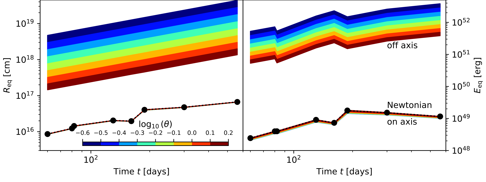
图注：The equipartition radius and energy for the Newtonian, on axis, and off-axis cases for AT2019dsg including all corrections $\curlc\neq3$, $\xi\neq1$, $\pb\neq2$, $\epsilon\neq1$. Here we assume the same cosmology as \(\cite{Matsumoto_Piran_2023}\) $H_0=69.6\text{ km/s/Mpc}$, $\Omega_{m,0}=0.286$, $\Omega_{0}=0.714$ and the same geometric parameters $f_A=f_V=1$. For the on axis solution we set $\gamma_m=2$ as the $\gamma_m$ we calculate from the bulk LF is small $<2$.
对应解读：对应“建议重点查看的图表”第3、6项，以及“关键图表逐图导读”中牛顿、轴上和离轴相对论解的尺度比较。
入选理由：该图展示 AT2019dsg 在包含全部修正后，牛顿、轴上和离轴情形的均分半径与能量。它比单纯比值图更直接呈现自洽框架输出的物理尺度，可用于判断相对论假设和观测角度如何影响最终半径与能量估计。
来源与置信度：\(arxiv_source\)；high；\(arxiv_source\) / main.tex:figure[6]
Fig04
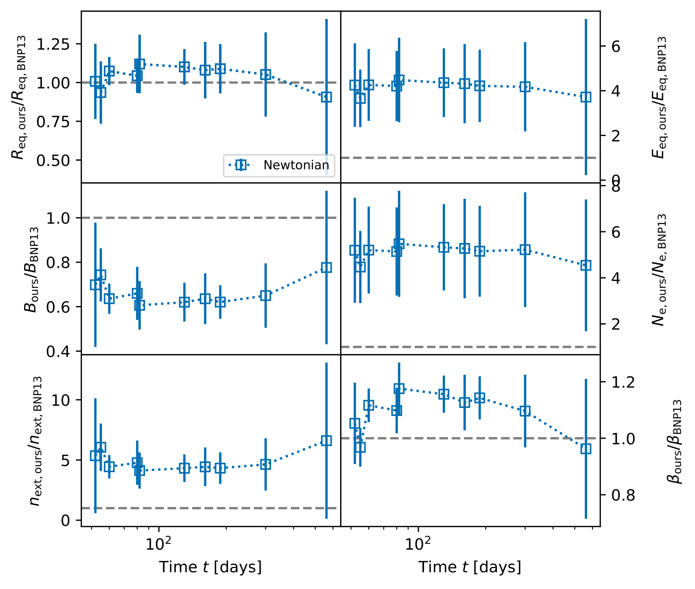
图注：The ratio between the equipartition quantities derived from our analysis of AT2019dsg and that of \(\cite{Cendes_Alexander_Berger_Eftekhari_Williams_Chornock_2021},\) which uses the \(\cite{Barniol_Duran_Nakar_Piran_2013}\) formalism, for a Newtonian model. Here we assume the same geometry as \(\cite{Cendes_Alexander_Berger_Eftekhari_Williams_Chornock_2021}\) $f_V=0.36$, $f_A=1$, and same microphysical parameters $\epsilon_e=0.1$, $\epsilon_B=0.02$ and the \(\cite{Planck_2018}\) Table 2 (TT, TE, EE + lowE + lensing + BAO) cosmology $H_0=67.66\text{ km/s/Mpc}$, $\Omega_{m}=0.3111$, $\Omega_{\Lambda}=0.6889$.
对应解读：对应“建议重点查看的图表”第5项，以及“关键图表逐图导读”中修正因子比值图和示例源对比的解读。
入选理由：该图比较 AT2019dsg 在本文分析与 Cendes et al. 2021/BNP13 形式下的牛顿模型均分量比值。它提供了另一个独立文献基准，能帮助区分差异来自自洽修正本身还是来自相对论模型选择。
来源与置信度：\(arxiv_source\)；high；\(arxiv_source\) / main.tex:figure[4]
Fig05
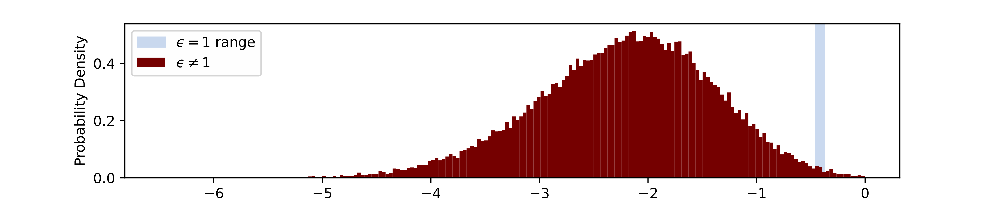
图注：The probability density of $\epsilon_B$ assuming that the \(\cite{Keim_etal_2019}\) estimate for the radius of the emitting region $R=(2.843\pm0.302)\times10^{19}\text{ cm}$ of J0231-0433 is normally distributed. The possible values of $\epsilon_B$ for an in equipartition $\epsilon=1$ scenario are for $2
入选理由：该图针对 J0231-0433，用独立半径估计推导 \(epsilon_B\) 的概率密度，并指出系统处于严格均分的概率很低。它不是总能量比值图，但对检验偏离均分参数 epsilon 的物理合理性和系统误差非常有价值。
来源与置信度：\(arxiv_source\)；high；\(arxiv_source\) / main.tex:figure[5]
Fig01
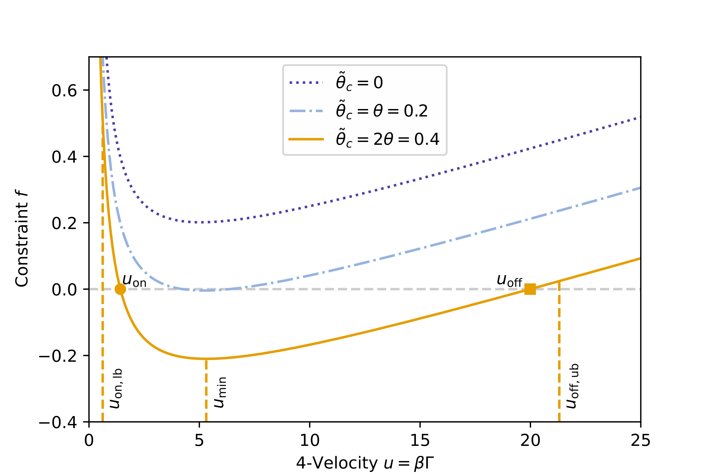
图注：The on axis solution (circle), bounded below by $u_{\text{on,lb}}$ and above by $u_{\text{min}}$, and the off-axis solution (square), bounded below by $u_{\text{min}}$ and above by $u_{\text{off,ub}}$, exist for (approximate) critical angles $\tilde{\theta}_c\approx\theta_c$ larger than the observer angle $\theta$ i.e., for $\tilde{\theta}_c\gtrsim \theta$. $\theta=0.2$ is fixed here as an example.
对应解读：对应“建议重点查看的图表”第3、6项，以及“关键图表逐图导读”中相对论轴上/离轴解、临界角和可允许参数范围的解读。
入选理由：该图展示轴上解与离轴解存在的参数边界，以及临界角与观测角之间的关系。它对理解相对论喷流求解空间和不允许区域有帮助，但与日报强调的能量增加约5倍、示例源结果和修正因子比值的联系弱于 Fig02、Fig03 和 Fig06。
来源与置信度：\(arxiv_source\)；high；\(arxiv_source\) / main.tex:figure[1]
强相关工作
这篇工作与经典同步自吸收均分分析、伽马暴余辉和射电超新星的半解析估计、以及近年潮汐瓦解事件射电外流研究直接相连。应检索关键词包括 “synchrotron equipartition”, “synchrotron self-absorption radius”, “minimum energy radio source”, “relativistic equipartition”, “radio tidal disruption event outflow”, “off-axis jet equipartition”。经典工作提供了从谱峰到半径和能量的公式；本文的增量是把多个后来加入的修正项做联立自洽处理。
与具体源相关，AT2019dsg 是一个有高能中微子关联讨论的潮汐瓦解事件，存在关于其射电外流、X 射线性质和中微子产生效率的同源研究；ASASSN-19bt 是早期多波段观测充分的潮汐瓦解事件，射电外流能量会影响对其弱喷流或盘风的解释；EP240414a 属于快速高能暂现源或类似快速 X 射线暂现源的语境，应检索事件名加 “radio”, “afterglow”, “synchrotron”；J0231-0433 属于活动星系核或致密喷流语境，应检索源名加 “VLBI”, “radio spectrum”, “AGN jet”。若需要找相反观点，可检索 “equipartition assumption uncertainty”, “non-equipartition radio transients”, “external free-free absorption synchrotron self-absorption degeneracy”。
同一事件 / 同类源线索：
相似工作：
基础理论 / 方法工作：
- https://ui.adsabs.harvard.edu/abs/1994ApJ...426...51R/abstract
- https://ui.adsabs.harvard.edu/abs/1970ranp.book.....P/abstract
相反观点 / 张力线索：
（未提供）
7. Gamma-ray bursts reveal the history and faint contributors of cosmic reionization
- 来源：arXiv / astro-ph.HE
- 链接：https://arxiv.org/abs/2607.07610v1
- 作者：Jing-Meng Hao, Paolo Cassata, Zhen-Ya Zheng, Andrea Grazian, Giulia Rodighiero, Alvio Renzini, Jun-Hui Fan, Andrea Ferrara
- 评分：novelty 7/10，importance 8/10，relevance 8/10，final 8.70/10
- 推荐理由：利用Swift长GRB重建高红移总恒星形成率并解释再电离，对GRB作为宇宙学探针有明确新结果；高能读者相关性较高但核心问题偏宇宙学。
中文题目：伽马暴揭示宇宙再电离历史和暗弱星系的贡献
做了什么：这篇论文用过去二十年 Swift 探测到的高红移长伽马暴来重新估计 \(4 为什么重要：再电离问题的关键不只是“星系是否能再电离宇宙”，而是哪些星系、在多暗的尺度上、以多高的逃逸率贡献了电离光子。JWST 正在把高红移星系样本推向更暗更早，但仍然受限于视场、透镜选择、表面亮度和光度函数外推。长伽马暴由大质量恒星死亡产生，原则上可以出现在低光度、低质量、甚至普通成像巡天看不到的宿主星系中，因此它们能从瞬变事件角度约束“总恒星形成”，而不是只约束“已被看见的恒星形成”。如果这篇论文的假设成立，它把再电离光子预算从极端逃逸率问题转化为暗弱星系人口统计问题。 理论 / 观测 / 仪器方法价值：对理论而言，这项工作给了星系形成模型和再电离半解析模型一个独立约束：高红移恒星形成率密度不能只按已探测紫外光度函数的明亮端理解。对观测而言，它强调 Swift 长伽马暴红移样本虽小但具有特殊选择函数，能补充 JWST、HST 和地基深场的星系计数。对方法而言，文章把伽马暴发生率、恒星形成率密度、再电离方程、紫外光度函数积分和极限星等反推放到一个统一框架中，适合用来检查“暗弱星系是否足够多”的定量链条。 为什么应该关注：如果你关心宇宙黎明和再电离，这篇文章值得看，因为它直接挑战一个常见做法：只从可见星系外推暗端斜率来闭合光子预算。它问的是更硬的问题：有多少恒星形成藏在当前星系巡天之下，而长伽马暴是否已经看到了这些隐藏恒星形成的痕迹。即使你不完全接受“高红移长伽马暴无偏示踪恒星形成”的前提，论文给出的推导也能帮助判断未来 THESEUS、SVOM、Einstein Probe、高红移 JWST 宿主跟进和 \(21\,\mathrm{cm}\) 再电离约束应该怎样交叉验证。 科学问题：宇宙氢再电离要求在 \(z\gtrsim6\) 有足够多能逃出星系并进入星系际介质的电离光子。明亮星系的紫外光度函数已经被 HST 和 JWST 推到很高红移，但把观测到的明亮端积分起来通常不足以轻松完成再电离，除非假设很陡的暗端、很高的电离光子产生效率 \(\xi_{\mathrm{ion}}\)，或很高的逃逸率 \(f_{\mathrm{esc}}\)。本文的科学问题是：长伽马暴能否作为高红移恒星形成的独立计数器，揭示那些在常规成像巡天中太暗而漏掉的星系对再电离的贡献。 作者怎么做：文章选取 Swift 过去约二十年探测到的长伽马暴，聚焦 \(4 关键结果：论文声称，新的长伽马暴推断 \(\rho_{\mathrm{SFR}}\) 可以自然解释现有氢再电离测量，不必诉诸极端的 \(\xi_{\mathrm{ion}}\) 或 \(f_{\mathrm{esc}}\)。这意味着被明亮星系巡天漏掉的暗弱星系在光子预算中很重要。进一步，作者把总 \(\rho_{\mathrm{SFR}}\) 与紫外光度函数积分相匹配，反推出星系族群的最暗积分极限 \(M_{\mathrm{lim}}\)。他们得到的趋势是，\(z\sim6\) 需要积分到 \(M_{\mathrm{lim}}\sim-14\) 到 \(-15\)，而 \(z\sim10\) 需要积分到更暗的 \(M_{\mathrm{lim}}\sim-10\) 到 \(-11\)。这种演化暗示越早期越需要极低质量、极低紫外光度的星系群体。 局限和下一步：最大不确定性来自长伽马暴是否真能在高红移无偏示踪总恒星形成。长伽马暴发生率可能依赖金属丰度、恒星初始质量函数、双星演化、喷流开角、探测阈值和红移测定成功率。高红移伽马暴样本数也有限，Poisson 误差和单个事件的权重都可能很大。下一步应把伽马暴宿主星系的 JWST 深成像、光谱红移完整性、Swift 触发函数、暗暴比例、金属丰度偏置和未来高红移瞬变任务联合起来检验；同时用 \(21\,\mathrm{cm}\) 再电离历史、Ly \(\alpha\) 阻尼翼和 CMB \(\tau_{\mathrm{e}}\) 作为外部交叉约束。 本文最重要的证据链从 Swift 长伽马暴样本开始。作者使用过去二十年 Swift 发现的长伽马暴，并筛选出 \(4 事件数方面，高红移伽马暴天然稀少，因此结论不会像大型星系巡天那样由数千个目标支撑，而是由少量高权重事件和二十年时间基线支撑。统计上，作者需要把每个红移 bin 中的观测到的伽马暴数 \(N_i\) 与期望数 \(\lambda_i\) 比较，\(\lambda_i\) 由 \(\rho_{\mathrm{SFR}}(z)\)、共动体积元、宇宙时间膨胀、探测概率和红移成功率共同决定。最应关注的是他们如何处理零事件或少事件 bin：这些 bin 对 \(z\sim8\) 到 \(10\) 的 \(\rho_{\mathrm{SFR}}\) 和 \(M_{\mathrm{lim}}\) 约束非常敏感。 显著性或置信度的关键不是单一“发现显著性”，而是模型比较：由伽马暴推断的 \(\rho_{\mathrm{SFR}}\) 是否比只积分到当前观测极限的星系光度函数更能同时满足再电离约束。论文应当比较不同 \(\xi_{\mathrm{ion}}\)、\(f_{\mathrm{esc}}\)、复合因子 \(C_{\mathrm{HII}}\)、紫外光度函数暗端斜率和 \(M_{\mathrm{lim}}\) 下的 \(Q_{\mathrm{HII}}(z)\) 与 \(\tau_{\mathrm{e}}\)。读者要检查置信区间是来自 Poisson 事件计数、Monte Carlo 传播、贝叶斯后验，还是只来自若干参数组合的包络线。 支撑结论的图表大概率包括：长伽马暴推断的 \(\rho_{\mathrm{SFR}}(z)\) 与 UV 星系巡天结果对比图；再电离历史 \(Q_{\mathrm{HII}}(z)\) 或中性氢分数 \(x_{\mathrm{HI}}(z)\) 与观测约束对比图；Thomson 光学深度 \(\tau_{\mathrm{e}}\) 与 Planck 约束对比图；以及反推的 \(M_{\mathrm{lim}}(z)\) 图。最关键的读图点是：伽马暴数据点的误差条是否足够大以覆盖传统星系结果；再电离曲线是否只在某些乐观参数下成立；以及 \(M_{\mathrm{lim}}\) 的红移演化是否由数据驱动还是由光度函数外推形式驱动。 主要系统误差包括长伽马暴金属丰度偏置、红移不完整性、暗余辉选择效应、尘埃遮蔽、伽马暴光度函数演化、喷流准直角演化和 Swift 触发阈值。稳健性检验应包括改变伽马暴效率模型、改变红移 bin、剔除个别高红移事件、使用不同文献的紫外光度函数、改变再电离参数，以及比较不同 \(f_{\mathrm{esc}}\) 与 \(\xi_{\mathrm{ion}}\) 组合。若这些变化仍要求 \(M_{\mathrm{lim}}\) 明显暗于当前直接探测极限，本文结论才更有说服力。 研究对象是长伽马暴和宇宙再电离。长伽马暴通常与大质量恒星坍缩相关，其短时标高能辐射极亮，可以在非常高红移处被探测到。由于大质量恒星寿命很短，长伽马暴发生地与当时当地的恒星形成密切相关。与星系成像不同，伽马暴先以高能瞬变被发现，再通过余辉光谱或宿主观测确定红移，因此它可以指向本身极暗的宿主星系。 历史问题是，高红移星系是否能够提供足够电离光子来完成从中性宇宙到电离宇宙的转变。HST 深场长期显示 \(z\gtrsim6\) 星系光度函数具有陡暗端，但直接探测仍受限于灵敏度和宇宙体积。JWST 显著增加了 \(z>8\) 星系候选和光谱确认数，但明亮端和中等亮度星系仍不能完全代表所有恒星形成活动。再电离模型通常需要把光度函数积分到某个不可直接观测的暗端极限，本文正是试图用伽马暴独立估计这个极限。 观测背景包括多类约束：CMB 的电子散射光学深度 \(\tau_{\mathrm{e}}\) 给出整体积分约束；类星体 Gunn-Peterson 吸收和阻尼翼给出 \(z\sim6\) 到 \(8\) 的中性氢约束；Ly \(\alpha\) 发射星系可见度反映 IGM 中性度；星系紫外光度函数给出恒星形成的可见部分。伽马暴加入后，约束对象从“看见多少星系光”变成“高红移恒星形成总量可能是多少”。 为什么现在值得重新看：一方面，Swift 已积累约二十年长伽马暴样本，高红移尾部虽小但比早期更可靠；另一方面，JWST 正在重写高红移星系光度函数和恒星质量函数，使“暗弱星系贡献”有了更清晰的对照物。再加上 Planck 对 \(\tau_{\mathrm{e}}\) 的约束已较稳定，模型可以同时被瞬变、星系和 CMB 数据检验。 常见误区有三点。第一，不能把长伽马暴简单等同于所有恒星形成，低红移长伽马暴明显偏好低金属丰度环境；但高红移宇宙整体低金属丰度可能减弱这种偏置。第二，不能把“明亮星系不足”直接理解成“星系无法再电离宇宙”，因为暗弱星系和逃逸率仍是关键。第三，不能把 \(M_{\mathrm{lim}}\) 当作真实物理截断的精确测量；它更像是把总恒星形成率密度投影到给定紫外光度函数模型后的有效积分下限。 基础物理图像是：大质量恒星产生紫外连续谱，其中能量高于 \(13.6\,\mathrm{eV}\) 的 Lyman 连续光子可以电离中性氢。若这些光子从星系内部逃出并进入星系际介质，它们会增加电离氢区域的体积分数 \(Q_{\mathrm{HII}}\)。同时，自由电子和质子会复合，复合速率取决于气体密度、温度和团簇因子。因此再电离历史由“电离源项”和“复合损失项”的竞争决定。 恒星形成率密度 \(\rho_{\mathrm{SFR}}\) 连接到电离光子产生率需要两个量：电离光子产生效率 \(\xi_{\mathrm{ion}}\) 和逃逸率 \(f_{\mathrm{esc}}\)。\(\xi_{\mathrm{ion}}\) 表示单位非电离紫外光度或单位恒星形成产生多少电离光子，受恒星初始质量函数、金属丰度、双星演化和恒星年龄影响。\(f_{\mathrm{esc}}\) 表示这些电离光子穿过星际介质和星系环介质的比例。传统星系巡天的难点在于，\(\rho_{\mathrm{SFR}}\)、\(\xi_{\mathrm{ion}}\) 和 \(f_{\mathrm{esc}}\) 之间存在强退化。 长伽马暴方法换了一个入口：不从紫外光度直接估计恒星形成，而从大质量恒星死亡事件率估计。若长伽马暴发生率 \(R_{\mathrm{GRB}}(z)\) 与 \(\rho_{\mathrm{SFR}}(z)\) 近似成正比，那么红移分布就可以反推总恒星形成率密度。实际中还要乘上探测选择函数、伽马暴光度函数、余辉红移测定概率和时间膨胀因子。本文的强假设是，高红移处这种比例关系足够稳定，可用于估计未被星系巡天看见的恒星形成。 紫外光度函数通常用 Schechter 函数描述，其明亮端指数截断、暗端近似幂律。把光度函数从明亮端积分到 \(M_{\mathrm{lim}}\) 得到紫外光度密度，再通过 UV-SFR 转换得到 \(\rho_{\mathrm{SFR}}\)。若伽马暴给出的 \(\rho_{\mathrm{SFR}}\) 高于直接积分到观测极限的结果，就可以反推需要把光度函数积分到多暗。这个反推对暗端斜率非常敏感：当暗端斜率接近 \(-2\) 时，微小斜率变化会显著改变暗弱星系总贡献。 主要退化和系统误差包括：\(\rho_{\mathrm{SFR}}\) 与 \(f_{\mathrm{esc}}\) 的退化、\(\xi_{\mathrm{ion}}\) 与金属丰度和星族模型的退化、\(M_{\mathrm{lim}}\) 与暗端斜率的退化，以及伽马暴效率与宿主金属丰度的退化。此外，高红移伽马暴红移成功率并非随机，尘埃暗余辉、快速变暗余辉和观测窗口都会影响样本。读者应把本文结论理解为一个跨探针一致性检验，而不是单一数据集的直接成像发现。 第一步是把长伽马暴事件率与恒星形成率密度相连。若高红移长伽马暴效率为 \(\eta_{\mathrm{GRB}}(z)\)，则共动长伽马暴率可写为 其中 \(R_{\mathrm{GRB}}\) 是单位共动体积、单位源参考系时间内的长伽马暴率，\(\rho_{\mathrm{SFR}}\) 是恒星形成率密度，\(\eta_{\mathrm{GRB}}\) 吸收初始质量函数、金属丰度偏置、喷流开角和能被探测到的伽马暴比例。本文的关键物理近似是，在 \(4 第二步是把内禀率转成观测到的红移分布。一个红移区间 \([z_1,z_2]\) 的期望事件数可写为 其中 \(T_{\mathrm{obs}}\) 是观测时长，\((1+z)^{-1}\) 是宇宙时间膨胀，\(dV_{\mathrm{c}}/dz\) 是共动体积元，\(P_{\mathrm{det}}\) 是 Swift 触发与通量选择概率，\(P_z\) 是获得可靠红移的概率。这个式子说明高红移少数事件为何能约束 \(\rho_{\mathrm{SFR}}\)：它们代表了大体积和强选择校正后的源族群。 第三步是少数事件统计。若第 \(i\) 个红移 bin 中观测到 \(N_i\) 个事件，Poisson 似然为 其中 \(\lambda_i\) 由前式给出。最大化这个似然或构造后验即可得到 \(\rho_{\mathrm{SFR}}(z)\) 的估计和置信区间。由于 \(N_i\) 小，误差通常非高斯，零事件 bin 也能给出上限。 第四步是由星系紫外光度函数得到可见恒星形成。Schechter 形式可写为 其中 \(\phi_\ast\) 是归一化，\(L_\ast\) 是特征光度，\(\alpha\) 是暗端斜率。积分到光度下限 \(L_{\mathrm{lim}}\) 得到紫外光度密度 当 \(\alpha\) 接近 \(-2\) 时，低光度端对积分非常敏感，这正是 \(M_{\mathrm{lim}}\) 推断的核心。 第五步是星等与光度下限的转换。绝对紫外星等与光度之比满足 其中 \(M_\ast\) 是特征绝对星等，\(M_{\mathrm{lim}}\) 是积分到的最暗绝对星等。给定 \(\rho_{\mathrm{SFR}}^{\mathrm{GRB}}\) 和光度函数参数，反解这个关系即可得到本文报告的 \(M_{\mathrm{lim}}(z)\)。 第六步是把紫外光度密度或恒星形成率密度转成电离光子发射率。常用写法为 其中 \(\dot{n}_{\mathrm{ion}}\) 是进入 IGM 的电离光子数产生率密度，\(f_{\mathrm{esc}}\) 是逃逸率，\(\xi_{\mathrm{ion}}\) 是单位紫外光度的电离光子产生效率。若直接使用 \(\rho_{\mathrm{SFR}}\)，也可用等价的每单位恒星形成电离光子产额替代 \(\xi_{\mathrm{ion}}\rho_{\mathrm{UV}}\)。 第七步是再电离主方程。电离体积分数演化满足 其中 \(Q_{\mathrm{HII}}\) 是电离氢体积分数，\(\langle n_{\mathrm{H}}\rangle\) 是平均氢数密度，\(t_{\mathrm{rec}}\) 是有效复合时标。第一项是电离源项，第二项是复合损失项。本文声称用长伽马暴给出的 \(\rho_{\mathrm{SFR}}\) 可使该方程在合理参数下完成再电离。 第八步是复合时标和 CMB 光学深度。复合时标可近似写为 其中 \(C_{\mathrm{HII}}\) 是电离气体团簇因子，\(\alpha_{\mathrm{B}}(T)\) 是 case-B 复合系数。再电离历史还应满足 其中 \(c\) 是光速，\(\sigma_{\mathrm{T}}\) 是 Thomson 截面，\(n_{\mathrm{e}}(z)\) 是自由电子数密度。这个积分把整个再电离历史压缩为可与 Planck 比较的 CMB 约束。 本文或同类工作的第一个拟合层是长伽马暴红移分布拟合。拟合量包括每个红移 bin 的 \(\rho_{\mathrm{SFR}}\)、伽马暴效率 \(\eta_{\mathrm{GRB}}\) 或其演化参数、伽马暴光度函数参数以及选择函数参数。似然通常是 Poisson 事件计数似然，也可能在事件级别使用包含红移和峰值通量的非齐次 Poisson 过程似然。由于高红移事件数少，建议关注后验是否受先验、bin 划分和单个事件主导。 第二个拟合层是再电离历史。给定 \(\rho_{\mathrm{SFR}}(z)\)，模型需要选择 \(f_{\mathrm{esc}}\)、\(\xi_{\mathrm{ion}}\)、\(C_{\mathrm{HII}}\) 和宇宙学参数，积分得到 \(Q_{\mathrm{HII}}(z)\)、中性氢分数 \(x_{\mathrm{HI}}(z)\) 和 \(\tau_{\mathrm{e}}\)。拟合或检验的观测量包括 Planck 的 \(\tau_{\mathrm{e}}\)、高红移类星体阻尼翼给出的 \(x_{\mathrm{HI}}\)、Ly \(\alpha\) 发射体统计和 Gunn-Peterson 约束。这里的残差应按红移看：模型若太早再电离，会高估 \(\tau_{\mathrm{e}}\) 或与 \(z\sim7\) 的中性度冲突；若太晚，则不能在 \(z\sim6\) 前完成再电离。 第三个拟合层是反推 \(M_{\mathrm{lim}}\)。给定 UV 光度函数参数 \(\phi_\ast\)、\(M_\ast\)、\(\alpha\) 及其协方差，寻找使积分 \(\rho_{\mathrm{UV}}\) 或对应 \(\rho_{\mathrm{SFR}}\) 匹配伽马暴估计的 \(M_{\mathrm{lim}}\)。最大退化来自 \(\alpha\) 与 \(M_{\mathrm{lim}}\)：暗端斜率越陡，需要积分到的最暗星等可以相对没那么极端；暗端斜率较浅，则要达到同样总光度密度就必须引入更多极暗星系或改变光度函数形式。 系统误差应分两类看。伽马暴侧包括 Swift 触发阈值、谱峰能量分布、伽马暴光度函数演化、余辉红移测量成功率、暗暴漏失和金属丰度偏置。星系和再电离侧包括尘埃校正、紫外到恒星形成率转换、星族模型、逃逸率随质量和红移变化、IGM clumping 以及高红移光度函数样本污染。若论文只给统计误差而未把这些系统项充分传播，读者应把 \(M_{\mathrm{lim}}\) 数值视为模型依赖估计。 实际应用场景是多探针联合约束。可以把本文给出的长伽马暴 \(\rho_{\mathrm{SFR}}\) 作为再电离模拟的外部先验，也可以反过来用 JWST 光度函数和 \(21\,\mathrm{cm}\) 上限检验伽马暴效率模型。未来如果 SVOM、THESEUS 或类似任务显著增加 \(z>6\) 长伽马暴数，事件计数误差会下降，届时就能区分“暗弱星系很多”和“伽马暴效率随红移增强”这两种解释。 数据/样本部分应首先读清楚：作者如何定义 Swift 长伽马暴样本，哪些事件进入 \(4 方法部分重点看长伽马暴率到 \(\rho_{\mathrm{SFR}}\) 的转换。读者应寻找作者对 \(\eta_{\mathrm{GRB}}\)、伽马暴光度函数、探测概率、红移完整性和金属丰度偏置的参数化。若文中有校准低红移或中红移样本的步骤，也要检查校准区间是否可能受不同物理环境影响。 主结果部分应看 \(\rho_{\mathrm{SFR}}(z)\) 与星系巡天结果的对比。关键不是某个单点是否更高，而是整个 \(4 再电离应用部分要看作者选取的 \(f_{\mathrm{esc}}\)、\(\xi_{\mathrm{ion}}\) 和 \(C_{\mathrm{HII}}\) 是否温和。论文的重要声称是“不需要极端参数”，所以应核对这些参数是否落在当前观测和模拟常用范围内，并看模型是否同时满足 \(\tau_{\mathrm{e}}\)、\(x_{\mathrm{HI}}\) 和 \(z\sim6\) 再电离完成约束。 讨论和稳健性检验部分要重点看 \(M_{\mathrm{lim}}\) 的不确定性传播。读者应检查作者是否更换不同 UV 光度函数文献、不同暗端斜率、不同伽马暴效率演化和不同红移 bin 后仍得到相似结论。若附录包含选择函数或 Monte Carlo 传播，应优先阅读。 长伽马暴样本红移分布图：看 \(4 长伽马暴推断的 \(\rho_{\mathrm{SFR}}(z)\) 与星系 UV 估计对比图：看伽马暴点相对 HST/JWST 光度函数积分结果高多少，误差条是否重叠，是否展示不同积分极限。 再电离历史 \(Q_{\mathrm{HII}}(z)\) 或中性氢分数 \(x_{\mathrm{HI}}(z)\) 图：看模型何时达到 \(Q_{\mathrm{HII}}\approx1\)，是否穿过类星体、Ly \(\alpha\) 和阻尼翼约束。 CMB Thomson 光学深度 \(\tau_{\mathrm{e}}\) 对比图或表：看积分再电离历史是否落在 Planck 置信区间内，以及是否有过早再电离风险。 反推 \(M_{\mathrm{lim}}(z)\) 图：看从 \(z\sim6\) 到 \(z\sim10\) 的演化是否显著，误差带是否主要由光度函数暗端斜率驱动。 系统误差或稳健性检验表：看改变 \(f_{\mathrm{esc}}\)、\(\xi_{\mathrm{ion}}\)、\(\eta_{\mathrm{GRB}}\)、红移完整性和光度函数文献后，结论是否仍要求大量暗弱星系。 若有残差或似然轮廓图：看最佳拟合是否宽而退化，尤其是 \(\eta_{\mathrm{GRB}}\) 与 \(\rho_{\mathrm{SFR}}\)、\(\alpha\) 与 \(M_{\mathrm{lim}}\) 的相关性。 图 1：若论文给出 Swift 长伽马暴红移分布，横轴通常是红移 \(z\)，纵轴是事件数或累积分布。数据点或柱状条显示实际观测事件，模型线可能显示由某个 \(\rho_{\mathrm{SFR}}\) 和选择函数预期的分布。读图时不要只看最高红移事件，而要看 \(4 图 2：\(\rho_{\mathrm{SFR}}(z)\) 对比图通常是本文核心图。横轴是 \(z\)，纵轴是 \(\rho_{\mathrm{SFR}}\)，常以对数尺度显示。伽马暴推断点应与 UV 星系巡天积分结果、文献编译曲线或不同 \(M_{\mathrm{lim}}\) 假设的带状区域比较。主要结论应是伽马暴点提示更高总恒星形成；读图陷阱是把不同初始质量函数、尘埃校正或 UV-SFR 转换下的曲线直接等同。 图 3：再电离历史图的横轴通常是 \(z\)，纵轴是 \(Q_{\mathrm{HII}}\) 或 \(x_{\mathrm{HI}}=1-Q_{\mathrm{HII}}\)。模型线显示用伽马暴 \(\rho_{\mathrm{SFR}}\) 驱动的再电离过程，观测点或阴影区来自类星体阻尼翼、Ly \(\alpha\) 发射体、暗像素或 CMB 间接约束。应检查模型是否在 \(z\sim6\) 前完成再电离，同时不把 \(z\sim7\) 到 \(8\) 的 IGM 过度电离。 图 4：\(\tau_{\mathrm{e}}\) 或其参数依赖图通常把模型积分值与 Planck 约束比较。若横轴是 \(f_{\mathrm{esc}}\) 或 \(\xi_{\mathrm{ion}}\)，纵轴是 \(\tau_{\mathrm{e}}\)，读者应看合理参数范围内是否落入观测带。陷阱是 \(\tau_{\mathrm{e}}\) 是积分量，很多不同 \(Q_{\mathrm{HII}}(z)\) 都能给出类似 \(\tau_{\mathrm{e}}\)，所以它不能单独证明再电离历史细节。 图 5：\(M_{\mathrm{lim}}(z)\) 图是本文最直观的暗弱星系结论。横轴是红移，纵轴是绝对紫外星等极限 \(M_{\mathrm{lim}}\)。模型点或带显示要让光度函数积分匹配伽马暴 \(\rho_{\mathrm{SFR}}\) 所需的最暗星等。注意星等越大数值越暗，因此 \(M_{\mathrm{lim}}\sim-10\) 比 \(M_{\mathrm{lim}}\sim-15\) 更暗弱；读图陷阱是把这种有效积分下限误读为单个物理截断已被直接观测。 图 6：若有稳健性图或表，通常展示不同假设下的 \(\rho_{\mathrm{SFR}}\)、\(Q_{\mathrm{HII}}\) 或 \(M_{\mathrm{lim}}\)。应重点看变化方向：提高 \(f_{\mathrm{esc}}\) 会降低所需总恒星形成，提高暗端斜率会降低对极暗 \(M_{\mathrm{lim}}\) 的需求，提高伽马暴效率会降低由事件数推出的 \(\rho_{\mathrm{SFR}}\)。这些趋势比单个最佳值更能说明结论的脆弱性。 Fig02 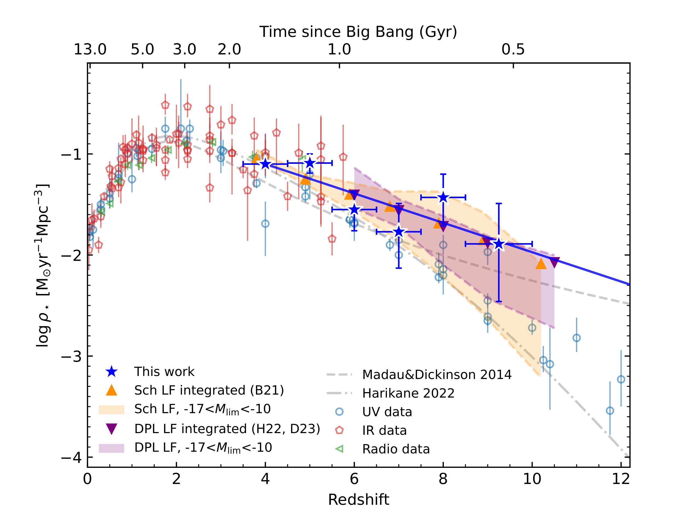 Fig03 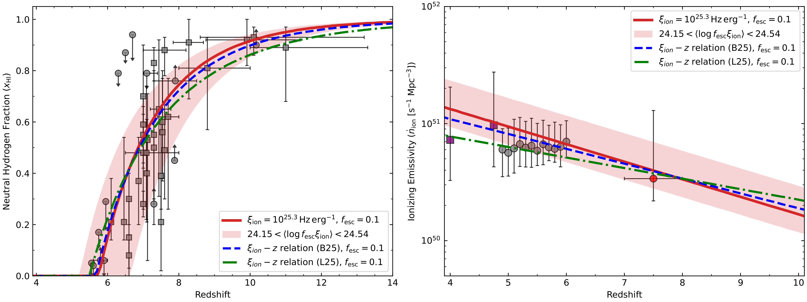 Fig04 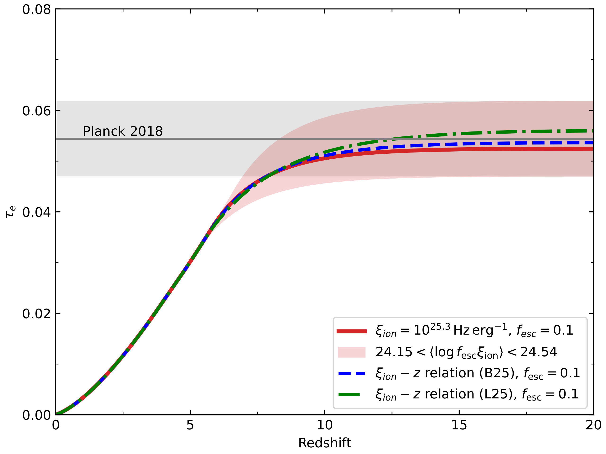展开详细解读：文章讲解、背景、理论、重点章节、图表与相关工作
文章详细讲解
关键结果是怎么做出来的
展开背景、理论、公式、模型、章节和图表导读
背景知识
基础理论 / 方法脉络
公式与推导
模型拟合 / 应用方法
重点章节 / 结果段落怎么读
建议重点查看的图表
关键图表逐图导读
论文原图 / 可嵌入图片
图注：Cosmic star formation history. The blue stars represent our estimates from Swift LGRBs, with the blue solid line showing the log-linear fit to these points ($k=-0.15$). The orange shaded region shows the result of integrating the Schechter LFs of \(\citet{2021AJ....162...47B}\) adopting the limits from $M_\mathrm{lim}=-17$ to $-10$, while the purple shaded region shows that from the DPL fits \(\citep{2022ApJS..259...20H,2023MNRAS.518.6011D}.\) In particular, the orange up triangles denote the results for the Schechter model down to $M_\mathrm{lim}=-17,\,-15,\,-14,\,-13,\,-13,\,-12,\,-10$ for $\left\langle z\right\rangle =3.8$, 4.9, 5.9, 6.8, 7.9, 8.9, 10.2, respectively. The purple down triangles denote the results for the DPL models with $M_\mathrm{lim}=-15,\,-14,\,-12,\,-11,\,-11$ for $\left\langle z\right\rangle =6$, 7, 8, 9, 10.5, respectively. The grey dashed and dot-dashed lines denote the empirical fits from \(\citet{2014ARA&A..52..415M}\) and \(\citet{2022ApJS..259...20H},\) respectively. The open circles, pentagons and left triangles represent observations determined from the UV data \(\citep{2014ARA&A..52..415M,2015ApJ...810...71F,2019MNRAS.486.3805B,2020ApJ...902..112B,2023ApJS..265....5H,2024MNRAS.533.3222D,2024ApJ...966...74W},\) IR/(sub)millimeter data \(\citep{2014ARA&A..52..415M,2016MNRAS.461.1100R,2018ApJ...853..172L,2020A&A...643A...8G,2024A&A...681A.118T,2026A&A...705A.255T},\) and radio data \(\citep{2017A&A...602A...5N},\) respectively. All UV values shown here are determined using a limit of $M_\mathrm{lim}=17$, with the only exception of \(\citet{2019MNRAS.486.3805B}\) using $M_\mathrm{lim}=13.5$. All results have been converted to the Salpeter IMF if necessary.
对应解读：对应“建议重点查看的图表”第2项和“关键图表逐图导读”图2：长伽马暴推断的宇宙恒星形成率密度与UV/IR/radio及不同光度函数积分极限的对比。
入选理由：这是论文核心结果图，直接展示Swift LGRB推断的SFRD蓝色星号、对数线性拟合，以及Schechter/DPL光度函数在不同M_lim下积分得到的带状区域和三角点。它最能支撑日报关于“伽马暴点提示更高总恒星形成”“需要积分到更暗星系”的解读，也同时连接反推M_lim的论证。
来源与置信度：\(arxiv_source\)；high；\(arxiv_source\) / \(ms_apjlr2.tex\):figure[2]
图注：Hydrogen reionization history. Left panel: The predictions of the timeline of the neutral hydrogen fraction $x_\mathrm{HI}$, compared with observational constraints derived from galaxies and quasars \(\citep{2014ApJ...797...16K,2015MNRAS.447..499M, 2017MNRAS.466.4239G,2019MNRAS.484.5094G,2018Natur.553..473B,2018ApJ...864..142D,2018PASJ...70...55I,2018ApJ...856....2M, 2019MNRAS.485.3947M,2018PASJ...70S..13O,2019ApJ...878...12H,2020ApJ...904..144J,2020ApJ...896...23W,2020MNRAS.495.3602W, 2020ApJ...897L..14Y,2021ApJ...923..229G,2021ApJ...919..120M,2022ApJ...926..230N,2022ApJ...932...76Z,2024MNRAS.533L..49Z, 2023ApJ...942...59J,2023ApJ...947L..24M,2024ApJ...969..162D,2024ApJ...973....8H,2024ApJ...967...28N,2024ApJ...975..208T,2024ApJ...971..124U}.\) Right panel: The ionizing emissivity $\dot{n}_\mathrm{ion}$ as a function of redshift, compared with observations \(\citep{2013MNRAS.436.1023B,2023MNRAS.525.4093G,2024ApJ...969...12R}.\) The red solid line represents the timeline derived from our fiducial values. The blue dashed line represents the result for a redshift-dependent $\xi_\mathrm{ion}$ based on the JWST measurements by \(\citet{2025MNRAS.537.3245B}\): $\log (\xi_\mathrm{ion})=(0.023\pm 0.005)z+(25.12\pm 0.03)$, while the green dot-dashed line shows the result from another similar measurements of \(\citet{2025A&A...698A.302L}\): $\log (\xi_\mathrm{ion})=(0.006\pm 0.012)z+(24.82\pm 0.07)$. The red shaded region represents the values of $24.15<\langle\log f_\mathrm{esc}\xi_\mathrm{ion}\rangle<24.54$, constrained by the errors of the measured CMB optical depth by the Planck satellite (see Figure \ref{fig:tau}).
对应解读：对应“建议重点查看的图表”第3项和“关键图表逐图导读”图3：氢再电离历史、中性氢分数x_HI和电离光子发射率随红移演化。
入选理由：该图直接检验LGRB推断SFRD是否能解释再电离历史。左面板给出x_HI与星系、类星体观测约束的比较，右面板给出电离光子发射率，并包含不同xi_ion红移依赖模型线和由Planck光学深度约束得到的红色阴影区，正好对应日报中关于是否过早或过晚再电离的重点。
来源与置信度：\(arxiv_source\)；high；\(arxiv_source\) / \(ms_apjlr2.tex\):figure[3]
图注：Predictions of the Thomson scattering optical depth. The gray line and region represent the measurement provided by Planck, i.e. $\tau_{e}=0.0544\pm0.0073$. The red solid, blue dashed, and green dot-dashed lines correspond to the results shown in Figure \(\ref{fig:EoR}.\) The red shaded region represents the values of $24.15<\langle\log f_\mathrm{esc}\xi_\mathrm{ion}\rangle<24.54$ constrained by the measured errors.
对应解读：对应“建议重点查看的图表”第4项和“关键图表逐图导读”图4：Thomson散射光学深度tau_e与Planck约束比较。
入选理由：该图明确把模型积分得到的tau_e与Planck测量tau_e=0.0544±0.0073及其置信区域对比，并展示不同xi_ion假设下的结果。它是判断本文所谓“不需要极端逃逸率或电离光子效率”是否落在CMB约束内的关键证据。
来源与置信度：\(arxiv_source\)；high；\(arxiv_source\) / \(ms_apjlr2.tex\):figure[4]
Fig01
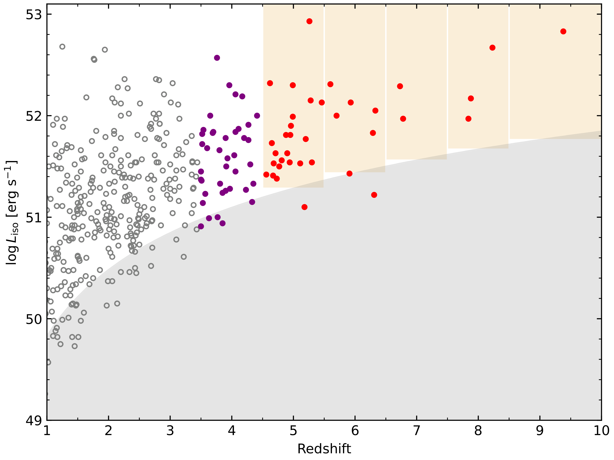
图注：The luminosity-redshift distribution of Swift LGRBs. The gray shaded region represents an approximate luminosity threshold for detection. The purple circles are the 39 LGRBs at $3.5\leqslant z<4.5$ used as our benchmark. The 36 bursts at $z\geqslant4.5$ are separated into different redshift bins (orange shaded bands) used to estimate the high-redshift SFRD.
对应解读：对应“建议重点查看的图表”第1项和“关键图表逐图导读”图1：Swift长伽马暴的光度—红移分布及高红移bin划分。
入选理由：该图展示用于估计高红移SFRD的原始LGRB样本基础，包括3.5≤z<4.5基准样本、z≥4.5高红移爆发的分箱以及探测光度阈值。它有助于读者判断高红移SFRD是否由少数事件和选择函数控制，是理解后续SFRD拟合可靠性的必要前置图。
来源与置信度：\(arxiv_source\)；high；\(arxiv_source\) / \(ms_apjlr2.tex\):figure[1]
Fig05
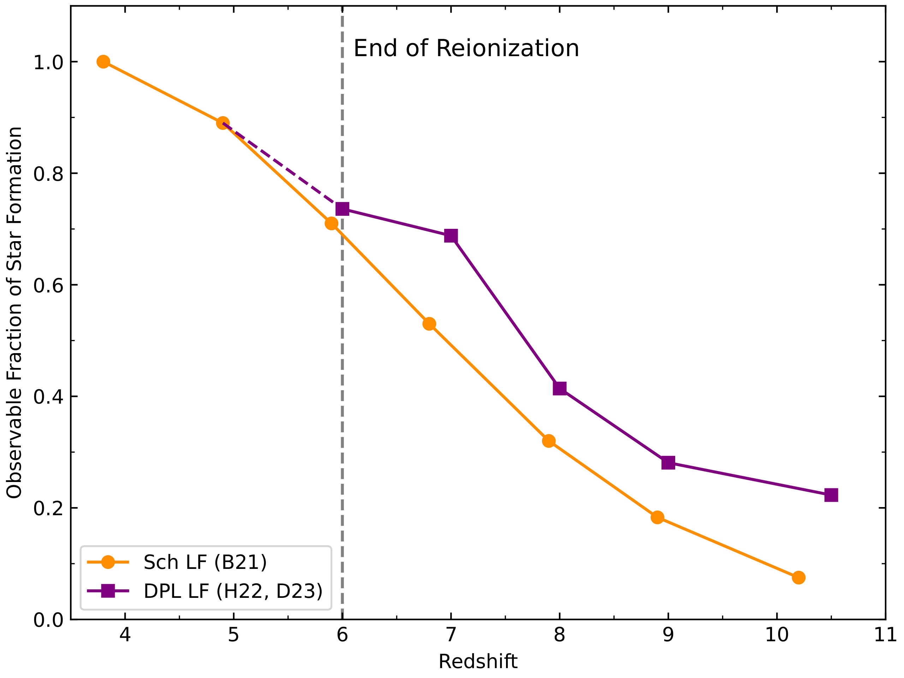
图注：Evolution of the observable fraction of star formation, $f_{\mathrm{obs}}(z)=\dot{\rho}_{\star}^{\mathrm{obs}}(z)/\dot{\rho}_{\star}^{\mathrm{tot}}(z)$, where $\dot{\rho}_{\star}^{\mathrm{obs}}(z)$ and $\dot{\rho}_{\star}^{\mathrm{tot}}(z)$ represent the SFRDs in observable galaxies with $M_{\mathrm{UV}}\leqslant-17$ and all galaxies, respectively. Shown are the results integrated from the two LF models (Schechter as the orange line, and DPL as the purple line).
对应解读：对应“建议重点查看的图表”第5项和第6项的相关内容：暗弱星系贡献、可观测恒星形成比例f_obs(z)及光度函数模型依赖。
入选理由：虽然候选中没有单独的M_lim(z)图，但Fig05直接展示M_UV≤-17可观测星系贡献的恒星形成比例随红移下降，并比较Schechter与DPL两种光度函数模型。它能补充说明为什么需要大量暗弱星系，以及结论对光度函数形式存在系统依赖。
来源与置信度：\(arxiv_source\)；high；\(arxiv_source\) / \(ms_apjlr2.tex\):figure[5]
强相关工作
这项工作与三类文献直接相关。第一类是用长伽马暴约束高红移恒星形成历史的研究，关键词可检索 “long gamma-ray bursts star formation rate high redshift Swift” 和 “GRB rate metallicity bias cosmic star formation”。这些工作长期讨论长伽马暴是否相对于恒星形成有金属丰度偏置，以及这种偏置在高红移是否减弱。本文属于同类问题的再电离应用版本。
第二类是再电离光子预算和高红移 UV 光度函数研究，关键词包括 “cosmic reionization UV luminosity function faint-end slope escape fraction” 和 “JWST reionization photon budget faint galaxies”。这类工作通常从星系巡天出发，估计 \(\rho_{\mathrm{UV}}\)、\(\xi_{\mathrm{ion}}\)、\(f_{\mathrm{esc}}\) 和 \(M_{\mathrm{lim}}\)。本文与它们的关系不是替代，而是提供一个独立的总恒星形成率密度约束。
第三类是可能形成张力的研究：如果某些 JWST 光度函数、星系恒星质量函数或 \(21\,\mathrm{cm}\) 约束表明早期恒星形成不能太高，或者如果长伽马暴效率随红移强烈演化，那么本文把高伽马暴事件率解释为高 \(\rho_{\mathrm{SFR}}\) 的做法会受到挑战。检索关键词可用 “GRB metallicity bias”, “high redshift GRB luminosity function evolution”, “Planck optical depth reionization constraints”, “JWST high redshift galaxy luminosity function faint end”。
同一事件 / 同类源线索：
- https://arxiv.org/abs/2607.07610
- https://arxiv.org/pdf/2607.07610
- https://swift.gsfc.nasa.gov/
- https://lambda.gsfc.nasa.gov/product/planck/
相似工作：
- https://arxiv.org/abs/0906.1577
- https://arxiv.org/abs/1204.1516
- https://arxiv.org/abs/1403.0007
- https://arxiv.org/abs/1503.08228
基础理论 / 方法工作：
- https://arxiv.org/abs/astro-ph/0301286
- https://arxiv.org/abs/astro-ph/0609120
- https://arxiv.org/abs/1605.03588
- https://arxiv.org/abs/1807.06209
相反观点 / 张力线索：
8. The Deep Learning Cosmic Ray Energy Reconstruction Pipeline for the GRAPES-3 Experiment
- 来源：arXiv / astro-ph.HE
- 链接：https://arxiv.org/abs/2607.07265v1
- 作者：Sambit Sarkar, Mansi Talwar, Pravata K. Mohanty
- 评分：novelty 7/10，importance 7/10，relevance 9/10，final 8.70/10
- 推荐理由：GRAPES-3宇宙线能量重建的GNN管线直接服务地面宇宙线实验，若能显著改善能量分辨率，对各向异性和成分研究有实用价值。
中文题目：用于 GRAPES-3 实验的深度学习宇宙线能量重建流程
做了什么：这篇文章为 GRAPES-3 广延大气簇射阵列建立了一个基于图神经网络的初级宇宙线能量重建流程，目标是在尽量不依赖初级质量假设的情况下，从闪烁体阵列和缪子探测器的事件信息中估计初级能量。作者把探测器阵列和簇射触发信息组织成图结构，让模型自动学习空间响应、簇射横向分布和与能量相关的潜在特征，并与传统基于电子数标定曲线的能量估计作比较。论文还检查了模型潜在空间，讨论通过调整潜在空间度量来改善能量响应分辨率，并比较了不同微调策略下的重建偏差、分辨率、质量组依赖和簇射年龄依赖。
为什么重要：宇宙线膝区及其附近的能谱、组分和各向异性问题都高度依赖能量重建质量；如果能量估计强烈依赖质量假设，就会把组分误差反馈到能谱和各向异性结果中。GRAPES-3 拥有密集地面阵列和大面积缪子探测器，适合做事件级多特征重建；把图神经网络用于这种非规则、空间相关的探测器数据，是提升能量分辨率和降低质量相关偏差的一条现实路径。
理论 / 观测 / 仪器方法价值：对理论而言，更好的能量重建能减少源注入谱、传播模型和膝区组分解释中的系统误差；对观测而言，它直接影响能谱、质量分类、元素分组各向异性图和能量依赖信号的可靠性；对方法而言，论文展示了如何把空气簇射阵列视为图数据，并用潜在空间诊断理解模型学到了什么，而不是只给出一个黑箱回归器。
为什么应该关注：如果你关心宇宙线膝区、元素分组能谱、地面阵列事件重建或机器学习在高能天体物理实验中的可解释应用，这篇文章值得看。它不是提出新的宇宙线物理结论，而是在改善产生这些物理结论的关键测量链条：初级能量。未来 GRAPES-3 若要给出更精细的质量分组和能量依赖各向异性，类似的重建流程会成为系统误差预算中的核心部分。
展开详细解读：文章讲解、背景、理论、重点章节、图表与相关工作
文章详细讲解
科学问题：地面宇宙线阵列不能直接测到入射初级粒子的能量，而是测到由大气级联产生的电子、光子、缪子等次级粒子在地面的空间分布。传统方法常用电子数或粒子密度的标定曲线把观测量映射到初级能量，但这种映射会受到初级质量、入射天顶角、簇射发展阶段、强子相互作用模型和探测器响应的共同影响。本文的核心问题是：GRAPES-3 能否用图神经网络从阵列级事件信息中学习一个更接近质量无关的能量估计器，并且相比传统电子数标定降低重建偏差和分辨率宽度。
作者怎么做：GRAPES-3 位于印度 Ooty，由 400 个间距约 8 m 的闪烁体探测器组成，覆盖面积约 25000 平方米，并配有由 3712 个正比计数管组成的专用缪子探测器。论文把探测器单元、空间相邻关系和事件响应组织成图结构，使每个探测器或局部单元可以携带粒子密度、时间、几何位置、核心距离等特征，边则编码阵列拓扑或距离关系。图神经网络通过消息传递聚合局部和全局簇射信息，输出初级能量的回归估计。作者还强调流程是模块化和动态的，特征映射可自动化，方便替换输入特征、图构造方式和微调策略。
关键结果：从摘要可知，作者不仅比较了重建能量与真实或模拟能量之间的偏差和分辨率，还分析了不同质量组、不同簇射年龄下的分辨率变化。这一点很重要，因为一个模型在全样本上表现好，并不意味着它没有把质量或发展阶段当作隐式捷径。论文还研究了潜在空间，说明模型在内部表示中如何组织不同能量、质量或簇射形态的事件，并指出对潜在空间度量做缩放可以进一步改善响应分辨率。也就是说，这项工作不仅是把 GNN 套到回归任务上，还试图用表征空间来诊断和优化重建。
局限和下一步：仅从摘要和 arXiv 条目能确定的是，这是一项基于 GRAPES-3 框架的能量重建方法论文，性能论证很可能依赖模拟样本和实验重建链。读者需要重点检查训练样本是否覆盖真实数据的触发、噪声、坏道、时间漂移和大气条件；强子相互作用模型是否单一；训练和测试是否存在能量谱先验泄漏；以及质量无关性是否在独立质量组上保持。下一步最关键的是把该流程应用到真实 GRAPES-3 数据，给出与传统能谱和缪子观测一致的交叉校验，并把机器学习能量尺度的不确定度纳入最终物理分析。
关键结果是怎么做出来的
数据和样本选择方面，论文围绕 GRAPES-3 的事件重建展开：输入来自 400 个闪烁体探测器阵列及其空间分布，并可结合 3712 个正比计数管构成的缪子探测器信息。由于能量回归需要已知真值，训练和性能评估通常依赖 Monte Carlo 空气簇射和探测器模拟；读者应在论文的数据段落中确认模拟的初级能量范围、天顶角范围、质量组划分、触发和质量筛选条件，以及训练集、验证集、测试集是否按事件独立划分。
最重要的证据链是重建能量响应：作者比较不同 GNN 微调模型的重建能量与真能量之间的偏差和分辨率，并与既有电子数标定曲线方法对照。这里应看的是 \(\log_{10} E\) 或类似能量变量上的残差分布，而不是只看散点图是否沿对角线排列。若论文给出偏差 \(\langle \Delta \log E \rangle\)、分辨率 \(\sigma_{\Delta \log E}\)、响应矩阵或分箱性能表，读者应检查低能阈值附近、高能稀疏区和不同质量组之间是否存在系统偏移。
统计和模型比较方面，这类回归论文通常不使用发现显著性，而用损失函数、测试集残差、分辨率改善百分比、分箱偏差和稳健性检验来支持结论。本文摘要明确提到“thorough comparison of reconstructed energy and bias”和“resolution variation for different mass groups and shower age”，因此关键表格应至少包含不同微调策略下的均方误差或平均绝对误差、能量偏差、分辨率，以及按质量组和簇射年龄分割后的性能。读者应关注模型是否只在总体损失上改善，还是在各子样本中都降低偏差。
论文的一个特色证据是潜在空间分析。作者研究模型 latent space，并提出缩放潜在空间度量可以改善响应分辨率。这意味着他们可能检查了嵌入向量中事件的聚类、能量梯度、质量组混合程度或距离与能量残差之间的关系。读图时应看同一真实能量但不同质量的事件是否被过度分开；如果过度分开，模型可能学习到了质量相关特征，所谓质量无关重建就需要额外检验。
系统误差和稳健性方面，必须检查训练谱形、质量组成、强子模型、探测器校准、阵列边界、核心落点和簇射年龄对结果的影响。若只在一种模拟组成上训练，模型可能把模拟先验编码进能量估计；若真实数据的大气透明度、增益漂移或探测器效率与模拟不同，GNN 的高维输入可能比传统一维标定更敏感。本文的分质量组和分簇射年龄结果是稳健性检验的第一步，但进一步还需要真实数据控制样本和跨模拟模型测试。
展开背景、理论、公式、模型、章节和图表导读
背景知识
研究对象是地面阵列观测到的广延大气簇射。高能宇宙线进入大气后与空气核发生强相互作用，产生强子、电磁和缪子级联；地面阵列测到的是这些次级粒子在地面的粒子密度、到达时间和空间分布。初级能量不是直接可观测量，需要通过模拟和标定从簇射规模反推。
历史上，许多阵列使用电子数 \(N_e\)、缪子数 \(N_\mu\)、特定核心距离处的粒子密度或类似簇射规模量作为能量代理。这个方法物理直观、可解释性强，但存在明显问题：同一能量下，质子和铁核的簇射发展深度、缪子含量、地面电子数不同；同一地面电子数可能对应不同初级能量，取决于初级质量和簇射年龄。因此，能量标定和质量判别经常相互纠缠。
GRAPES-3 的优势在于阵列比较密集，并且有大型缪子探测器。闪烁体阵列能提供电磁成分和横向分布信息，缪子探测器对强子级联和初级质量更敏感。把这些信息联合起来，有机会比单一电子数标定更好地估计能量，并为后续质量分类和各向异性研究提供更稳定的输入。
为什么现在值得重新看？一方面，机器学习特别是图神经网络适合处理探测器阵列这种空间拓扑数据；另一方面，宇宙线能谱和各向异性研究越来越需要事件级能量和质量估计，而不是宽能段、混合质量样本的平均结果。随着模拟样本、计算资源和探测器校准链成熟，重新构建能量重建器可以直接改善已有实验的数据产品。
常见误区是把深度学习能量重建理解为“自动优于传统方法”。实际并非如此。深度模型可能利用模拟中的非物理相关性，例如训练谱形、触发边界、核心位置分布或探测器噪声模式；也可能在平均分辨率上改善，却在某些质量组或能量边界产生更大偏差。因此，本文对潜在空间、质量组和簇射年龄的检查是必要的，而不是附加装饰。
基础理论 / 方法脉络
基本物理图像是：初级宇宙线能量越高，空气簇射中的总粒子数越大，地面阵列记录到的信号也越强；但粒子数随大气深度演化，地面只截取了某一发展阶段。轻核通常穿透更深，重核可近似为多个较低能核子的叠加，簇射最大深度和缪子含量不同，因此单靠一个簇射规模量不能完全消除质量依赖。
传统能量重建常假设某个可观测量与能量存在单调标定关系，例如电子数或特定距离处的粒子密度。标定曲线来自模拟或标准烛光式交叉校准，其隐含条件是模拟组成、天顶角分布和探测器响应与真实数据足够一致。若实际组成随能量变化，单一标定曲线会把组成变化误认为能谱结构或能量尺度变化。
图神经网络的出发点是把阵列看成图 \(G=(V,E)\)。每个节点代表一个探测器或局部观测单元，节点特征包含位置、信号强度、时间或质量标志；边代表空间邻近、固定阵列连接或距离加权关系。消息传递层让每个节点吸收邻近节点的信息，逐层形成对簇射横向结构、核心位置和整体规模的表示，最后通过全局池化得到事件级嵌入并回归能量。
本文中特别值得注意的是“质量无关”与“潜在空间”的关系。真正理想的能量嵌入应主要按能量排序，同时对初级质量、簇射年龄和核心几何的变化不产生不可控偏差。但完全去除质量信息也未必最优，因为缪子含量和横向形状携带了有助于纠正能量估计的信息。关键不是禁止模型看到质量相关特征，而是避免模型在某些质量组上产生系统性能差异。
主要退化和系统误差包括：能量与质量的退化、能量与核心位置的退化、天顶角与大气深度的退化、簇射年龄与地面粒子数的退化，以及模拟强子模型与真实大气级联之间的偏差。深度模型能够吸收多维信息来打破部分退化，但也会放大校准误差和训练分布偏差；因此需要分能量、分质量、分天顶角、分簇射年龄的残差诊断。
公式与推导
第一步，从簇射规模与初级能量的经验关系出发。若用地面电子数作为传统能量代理，可写成
其中 \(E\) 是初级能量，\(N_e\) 是重建电子数，\(a\) 和 \(b\) 是由模拟或标定得到的系数。这个式子表达的是单调标定思想，但它把质量、天顶角和簇射年龄的影响压缩进散布和系统偏差。
第二步，把质量依赖显式写成条件期望更清楚：
其中 \(A\) 表示初级质量组，\(\theta\) 是天顶角，\(s\) 是簇射年龄参数。所谓质量无关重建，目标不是令物理上 \(A\) 不重要，而是构造估计量 \(\widehat{E}\)，使 \(\langle \log_{10}\widehat{E}-\log_{10}E\mid A\rangle\) 尽量小且弱依赖于 \(A\)。
第三步，GNN 将事件写成图输入。对节点 \(i\) 的第 \(l\) 层表示，可用消息传递形式概括为
其中 \(\mathbf{h}_i^{(0)}\) 是节点初始特征，\(\mathcal{N}(i)\) 是邻居集合，\(w_{ij}\) 是距离或邻接权重，\(\mathbf{e}_{ij}\) 是边特征，\(\phi^{(l)}\) 和 \(\psi^{(l)}\) 是可训练函数。这个公式说明模型如何把局部探测器响应聚合成簇射形态信息。
第四步，全局事件嵌入通常由节点表示池化得到：
其中 \(\mathbf{z}\) 是潜在空间向量，\(\widehat{y}\) 可取为 \(\log_{10}\widehat{E}\)，\(f_\Theta\) 是回归头。本文研究 latent space，实质上就是检查 \(\mathbf{z}\) 中的距离、方向和聚类是否对应能量、质量或簇射年龄。
第五步，监督训练的典型损失可写成加权均方误差：
其中 \(y_k=\log_{10}E_k\)，\(q_k\) 可用于补偿训练样本在能量或质量上的不均匀分布。若不做权重修正，陡峭宇宙线能谱或人为生成谱可能影响模型在不同能量段的表现。
第六步，能量响应偏差和分辨率可定义为
其中下标 \(m\) 表示某个能量、质量或簇射年龄分箱。\(b_m\) 衡量系统偏差，\(\sigma_m\) 衡量对数能量分辨率，是本文比较不同模型时最核心的诊断量之一。
第七步，若把响应写成条件概率，能谱反演需要响应矩阵：
其中 \(B_j\) 是真能量分箱，\(\widehat{B}_i\) 是重建能量分箱。更窄且更接近对角线的 \(R_{ij}\) 意味着更好的能量分辨率和更少的迁移误差，对能谱和各向异性分析都重要。
第八步，潜在空间度量缩放可形式化为
其中 \(M\) 是正定或半正定度量矩阵。若缩放某些 latent 方向能降低 \(\sigma_m\)，说明这些方向与能量响应误差相关；但读者也要检查它是否同时增加了质量组偏差。
第九步，模型比较可用测试集残差差异表示为
其中 \(r_m\) 是相对分辨率改善。这个量比单个全局损失更有物理意义，因为它可以逐能量段、逐质量组显示 GNN 是否真正改善了重建。
模型拟合 / 应用方法
本文的拟合任务本质上是监督回归：输入为事件级探测器图，目标为模拟给出的初级能量，通常在 \(\log_{10}E\) 空间训练以压缩动态范围。可训练参数包括消息传递层、节点或边特征映射、全局池化和最终回归头。不同微调策略可能涉及冻结部分层、改变学习率、调整 latent 度量、重加权训练样本或改变损失函数。
似然语言下，高斯残差假设对应最小化均方误差；若残差有非高斯尾部，可考虑 Huber 损失、分位数损失或显式预测异方差不确定度。对宇宙线能量重建来说，单纯给出平均损失不够，必须报告分箱残差分布，因为触发阈值、阵列边界和高能统计稀疏都会造成非均匀误差。
参数退化主要来自物理退化而非神经网络本身。相同的地面电磁规模可由较高能量的重核或较低能量的轻核产生；核心落在阵列边缘时，横向分布采样不完整，会与能量降低相混淆；大天顶角事件经过更厚大气，地面电子数衰减，也会与能量和年龄耦合。GNN 可利用空间模式和缪子信息缓解这些退化，但如果训练模拟不准确，模型可能学到错误修正。
系统误差应从几类残差诊断中看：按真实能量分箱的偏差，按质量组的偏差，按簇射年龄的偏差，按天顶角和核心距离的偏差，以及按探测器运行状态的偏差。若某个模型在总体分辨率上优于基线，却在铁组或老年簇射上偏高，它用于组分相关分析时会引入能量尺度的成分依赖误差。
实际应用中，训练好的 GNN 不是终点，还要进入完整物理分析链。能谱测量需要响应矩阵和迁移校正；质量分类需要评估能量误差与质量分类器之间的相关性；各向异性分析需要确认能量重建不随方位角、探测器不均匀性或时间变化产生伪结构。本文的模块化流程若能输出稳定的事件级能量和不确定度，将对这些下游任务非常有用。
模型可能失败的场景包括：真实数据分布超出模拟训练域、某些探测器通道异常未被模拟、强子模型低估缪子数、训练集中质量组成与真实宇宙线相差太大，或数据清洗导致模型利用选择效应。解决办法包括跨强子模型训练、domain adaptation、真实数据校准控制样本、对抗去相关和在最终物理结果中传播机器学习响应不确定度。
重点章节 / 结果段落怎么读
数据/实验段落：先读 GRAPES-3 阵列和缪子探测器描述，确认 400 个闪烁体、8 m 间距、约 25000 平方米覆盖面积和 3712 个正比计数管如何进入事件特征。重点看作者使用哪些输入变量：粒子密度、时间、探测器坐标、核心位置、天顶角、缪子信息或传统重建量。
模拟和样本选择段落：检查空气簇射模拟、探测器模拟、能量范围、质量组、天顶角范围和事件筛选。尤其要看训练集、验证集和测试集划分是否独立，是否按能量或质量重加权，以及是否有单独的质量组外推测试。
方法段落：重点读图构造、节点特征、边定义、消息传递结构、池化方式和损失函数。这里决定了 GNN 是否真正利用阵列拓扑，而不只是把探测器信号展平成普通表格输入。
主结果段落：重点看重建能量与真能量的散点、残差分布、偏差和分辨率表格，以及与传统电子数标定曲线的对比。不要只看平均改善，要逐能量段、逐质量组判断性能是否均衡。
潜在空间和微调段落：这是本文区别于普通机器学习回归论文的部分。读者应看 latent space 可视化、度量缩放策略和微调模型之间的性能变化，判断作者的解释是否与残差改善一致。
讨论和稳健性段落：看作者如何处理质量依赖、簇射年龄依赖和模型偏差。若论文有附录或补充表，应优先检查超参数、训练稳定性、不同随机种子和不同样本切分下的性能变化。
建议重点查看的图表
-
GRAPES-3 探测器布局或图构造示意：看节点如何定义、边如何连接、是否保留真实空间距离和阵列边界。
-
传统电子数标定与 GNN 重建的对比图：看 \(\log_{10}\widehat{E}\) 对 \(\log_{10}E\) 是否沿对角线，低能和高能端是否有弯曲或饱和。
-
残差分布图：看 \(\Delta=\log_{10}\widehat{E}-\log_{10}E\) 的均值、宽度、偏斜和非高斯尾部，不要只看标准差。
-
分能量分箱的偏差和分辨率曲线：看 GNN 的改善是否集中在某一能段，触发阈值附近是否仍有明显偏差。
-
分质量组性能图或表：看质子、氦、中等质量核和铁组之间是否有系统能量偏差，这是检验“质量无关”的关键。
-
分簇射年龄或天顶角的性能图：看模型是否把簇射发展阶段误当成能量尺度，尤其要关注老年簇射和大天顶角事件。
-
潜在空间可视化或距离诊断：看嵌入空间是否主要按能量排序，还是按质量或几何选择效应聚类。
-
微调策略比较表：看不同模型的偏差、分辨率和稳定性，而不是只看一个最佳模型的单点结果。
关键图表逐图导读
图 1：若论文给出实验布局或图结构示意，横纵坐标通常是阵列平面位置或节点索引，数据点代表闪烁体或探测器单元，连线代表图边。读者要看边是否只连接近邻，是否反映 8 m 阵列间距，以及阵列边界处节点度数变化是否可能影响模型响应。陷阱是把漂亮的图结构等同于物理合理性；真正要看的是边权和特征是否与簇射横向分布相关。
图 2：重建能量对真实能量散点图通常以 \(\log_{10}E\) 为横轴、\(\log_{10}\widehat{E}\) 为纵轴，对角线表示无偏重建。模型线或等密度颜色若贴近对角线，说明整体标定好；但读者应特别看低能阈值附近是否向上偏、高能稀疏端是否向均值回归。散点云的宽度才是分辨率，不能只看相关系数。
图 3：残差直方图或残差随能量变化图的横轴一般是 \(\Delta\log_{10}E\) 或真实能量分箱，纵轴是事件数、均值偏差或分辨率。关键是比较 GNN、微调 GNN 和电子数标定基线的宽度和中心位置。读图陷阱是只看全样本残差；宇宙线能谱很陡，全样本可能被低能高统计事件支配。
图 4：分质量组性能图应把不同初级核种或质量组用不同颜色表示，横轴为能量或簇射年龄，纵轴为偏差或分辨率。若不同质量组曲线分离明显，说明能量估计仍有成分依赖。即使平均分辨率改善，质量组间偏差也会影响组分能谱和元素分组各向异性。
图 5：潜在空间图可能使用二维投影，例如主成分、t-SNE、UMAP 或作者定义的 latent metric。坐标轴本身未必有直接物理单位，颜色可能代表能量、质量或簇射年龄。应看能量是否形成平滑梯度，以及度量缩放后相近能量事件是否更集中。陷阱是过度解读二维投影，因为投影可能制造假聚类。
图 6：微调模型比较图或表通常列出不同训练策略下的分辨率、偏差和测试损失。读者应优先看独立测试集而非训练集，关注误差条、随机种子变化和各子样本表现。若最佳模型只在一个指标上改善但增加质量依赖，应谨慎用于物理分析。
论文原图 / 可嵌入图片
Fig02
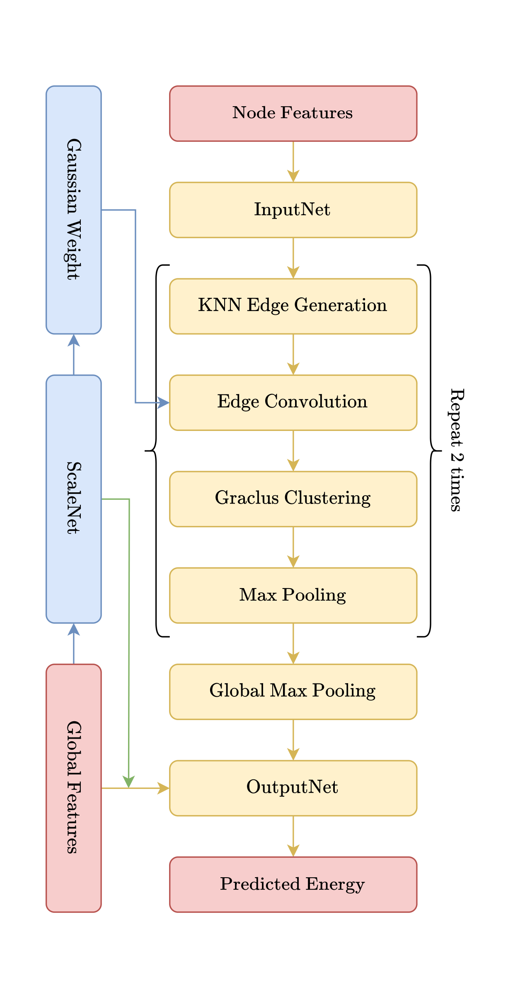
图注：Schematic of DRN and its modification, where the red blocks denote the input and output variables, yellow blocks denote the core DRN networks and processes, blue blocks denote SDRN modifications and green line denotes fine-tuning modification.
对应解读：对应“微调策略比较表/模型拟合段落”以及关键图表逐图导读中关于 DRN、SDRN 修改和 fine-tuning 策略的说明。
入选理由：候选图中唯一明确说明展示 DRN 结构、SDRN 修改和微调流程的图，直接支撑日报对监督回归管线、可训练模块、特征映射与微调策略的解读，比无标题候选图更可确定其科学含义。
来源与置信度：\(arxiv_source\)；high；\(arxiv_source\) / main.tex:figure[2]
Fig05
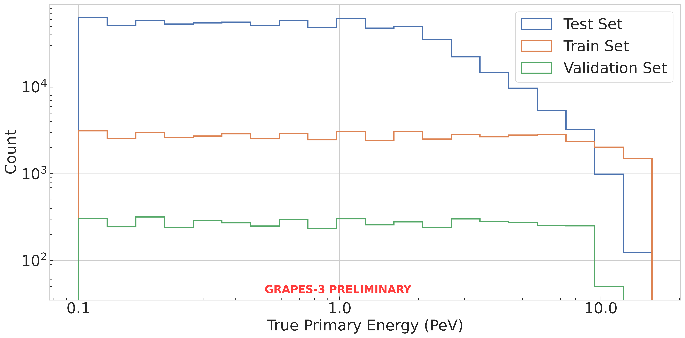
图注：The dataset distribution over the 20 bins considered for model validation.
对应解读：对应“分能量分箱的偏差和分辨率曲线”以及模型拟合段落中强调必须按能量分箱检查残差的部分。
入选理由：该图明确给出用于模型验证的 20 个分箱数据分布，可帮助读者判断后续分箱偏差、分辨率或残差统计是否受低能高统计样本和高能稀疏样本支配，是解释能量重建性能曲线的重要背景图。
来源与置信度：\(arxiv_source\)；high；\(arxiv_source\) / main.tex:figure[5]
强相关工作
这项工作属于地面宇宙线阵列的事件级重建方法研究，直接相关的同类方向包括 KASCADE/KASCADE-Grande、Tunka、IceTop、Pierre Auger Observatory、Telescope Array 等实验中的能量和质量重建，以及近年来用卷积网络、图网络、normalizing flow 或 ensemble 方法处理空气簇射阵列数据的工作。建议检索关键词包括“cosmic ray energy reconstruction graph neural network air shower array”、“GRAPES-3 muon detector energy reconstruction”、“mass independent energy reconstruction extensive air showers”和“latent space air shower reconstruction”。
基础理论关联包括广延大气簇射的 Nishimura-Kamata-Greisen 横向分布、Heitler-Matthews 簇射模型、CORSIKA 空气簇射模拟、强子相互作用模型系统误差，以及地面阵列响应矩阵和 unfolding。与本文可能存在张力的方向是：传统一维或少维标定方法更可解释、更容易传播系统误差；深度模型虽然性能高，但更依赖模拟真实性。读者应把本文与传统电子数标定、缪子数辅助能量重建和跨强子模型检验一起看，而不是只看机器学习指标。
同一事件 / 同类源线索：
相似工作：
基础理论 / 方法工作：
相反观点 / 张力线索：
（未提供）
9. Compensator-based inference for signal detection under unknown background: the binned data case
- 来源：arXiv / astro-ph.HE
- 链接：https://arxiv.org/abs/2607.06939v1
- 作者：Aritra Banerjee, Sara Algeri
- 评分：novelty 7/10，importance 8/10，relevance 8/10，final 8.70/10
- 推荐理由：面向未知背景下泊松分箱计数的信号检验方法，直接适用于伽马射线/宇宙线等计数型实验的稳健显著性推断；偏统计方法但可复用性较强。
中文题目：未知背景下的信号检出：分箱泊松数据的补偿子推断
做了什么：这篇方法论文把“已知信号形状、未知或错设背景”的检出问题，推广到天文和粒子物理中常见的分箱计数数据。作者沿用他们此前提出的“补偿子”思想：不直接拟合未知背景密度，而用一个控制推断保守性的单参数来刻画背景错设能在多大程度上伪装成信号。本文的核心贡献是把这一框架从独立同分布事件样本扩展到大量分箱的泊松计数，目标是给线谱搜索、点源搜索、瞬变候选筛选、伽马射线和中微子计数实验提供更稳健的信号检出工具。
为什么重要：高能天文里很多“发现”并不是输给统计误差，而是输给背景模型：弥散辐射、仪器本底、曝光不均匀、未解析源、选择函数都会让背景形状难以可靠参数化。传统似然比检验通常需要写下背景模型并估计其 nuisance 参数；一旦背景族过窄，显著性会偏乐观。本文重要之处在于，它试图把保守性从复杂的背景估计问题中抽离出来，用补偿子参数显式控制，从而让“未知背景下还能给出怎样的信号上限或发现声明”变得更可审计。
理论 / 观测 / 仪器方法价值：对理论统计而言，本文给出的是一个带错设分量的混合模型检验框架在泊松分箱情形下的推广；对观测分析而言，它提供了一种不必完整重建背景密度也能做信号检出的思路；对仪器和巡天数据处理而言，它适合大量低计数分箱、复杂响应和高维模板搜索的场景。它的价值不在于替代所有背景建模，而在于给出一种“在背景不可完全相信时仍能维持保守覆盖或控制假阳性”的统计接口。
为什么应该关注：如果你做暗物质线谱、伽马射线点源、中微子关联、引力波电磁对应体候选筛选，或者任何“信号模板比较清楚、背景却很难写准”的分析，这篇文章值得看。它迫使读者把注意力从“我能不能拟合一个漂亮的背景曲线”转移到“背景错设最多会怎样改变我的显著性”。这对未来大视场、多信使和实时触发分析尤其关键，因为这些场景里分箱数很大、背景随时间和天空位置变化，完整背景建模往往是最脆弱的一环。
展开详细解读：文章讲解、背景、理论、重点章节、图表与相关工作
文章详细讲解
科学问题：本文研究的是一种在高能天文和粒子物理中非常常见、但统计上棘手的问题：我们知道某类信号在观测空间中的形状，例如能谱线、空间点扩展函数、时间窗口或多维模板，但背景分布未知、不可完全参数化，甚至可被原有模型系统性错设。传统信号检出通常把观测计数写成信号加背景，再用似然比、剖面似然或贝叶斯模型比较得到显著性。但如果背景模型太刚性，背景中的局部起伏或未建模结构会被错误解释为信号，导致假发现率失控。
作者怎么做：Banerjee 和 Algeri 此前把这个问题表述为一个混合模型权重推断问题，其中一个混合分量，即信号分布，是已知或高度受约束的；另一个分量，即背景分布，可能错设或完全未知。他们提出“补偿子”参数来控制推断的保守程度，思想是：不必完整估计未知背景密度，只要知道未知背景最多能够以何种方式补偿、吸收或伪装信号成分，就能对信号权重做保守推断。本文的主要工作是把这个补偿子推断从独立同分布事件数据推广到分箱泊松计数，即每个 bin 中只有计数，而非逐事件坐标。
关键结果：在分箱情形下，数据由许多 bin 的泊松计数组成。信号模板通常以每个 bin 的期望贡献给出，而背景期望可以在很宽泛的类别中变化。本文的结果表明，补偿子仍然可以作为决定推断保守性的核心参数；换言之，即使背景分量无法被可靠估计，信号检出的保守性也可以通过一个低维量来控制。这个结论对大型实验很有吸引力，因为现代观测经常面对高维直方图、稀疏计数和复杂响应，直接估计背景密度的误差会随 bin 数和模型复杂度迅速放大。
局限和下一步：这类框架的优势是保守、透明、对背景错设不那么敏感；代价是功效可能低于一个完全正确指定的背景模型。关键实际问题在于如何为具体实验选择或校准补偿子，如何把仪器响应、曝光、能量迁移、空间相关性和多个搜索窗口的试验因子纳入同一框架。下一步最值得关注的是：作者的方法在真实天文数据上的检验；与标准剖面似然、sideband 背景估计、半参数背景模型和机器学习背景估计的直接比较；以及补偿子选择不当时覆盖率和检出功效如何变化。
关键结果是怎么做出来的
这篇文章的证据链不是围绕某个天体样本或瞬变事件，而是围绕统计模型本身展开。数据对象被设定为大量 bin 上的计数，记为每个 bin 的观测数，而不是逐事件的独立样本。这样的设定直接对应伽马射线能谱直方图、空间像素计数图、时间分箱光变曲线、能量—方向二维或多维计数立方体。样本量在这里主要由 bin 数、每个 bin 的期望计数以及总计数规模共同决定；低计数 bin 和大量空 bin 是方法必须处理的关键场景。
核心模型比较是“无信号或低信号权重”与“存在某个信号权重”的比较，但背景不是一个完全可信的参数族。通常的剖面似然会对背景 nuisance 参数进行极大化；本文则把背景错设的影响压缩到补偿子控制的保守推断中。读者应重点检查论文如何从分箱泊松似然出发构造补偿子版本的检验或置信区间，以及作者是否证明或数值展示了在背景错设下该检验仍保持保守性。
显著性或置信度的计算应关注两个层面：第一，在给定补偿子时，检验统计量或置信界如何由分箱计数和信号模板计算；第二，补偿子变化时，拒绝域、上限或发现阈值如何移动。本文最重要的图表通常会展示覆盖率、假阳性率、检出功效或与传统方法的对比。若图中横轴是信号强度、背景错设程度、bin 数或补偿子取值，纵轴很可能是覆盖概率、拒绝概率、误报率或区间长度，这些趋势比单个数值更重要。
系统误差方面，最需要看的是背景错设形式是否足够多样：例如平滑背景中的局部 bump、归一化偏差、斜率偏差、多 bin 相关结构、信号模板与背景结构近似共线等。稳健性检验应包括不同总计数、不同 binning、不同信号宽度、不同背景粗糙度，以及补偿子取值偏保守或偏激进时的性能变化。如果论文只在少数理想化模拟中展示方法，就应把结论理解为框架性而非即插即用的发现工具。
读者还应留意作者是否给出了实际操作步骤：如何从给定信号模板和观测计数构造统计量，如何选择补偿子，如何报告结果，如何把多重检验纳入阈值控制。对天文分析者来说，最实用的结果不是某个抽象定理本身，而是它能否转化为可复现的 pipeline：输入分箱计数、曝光和信号模板，输出保守的信号强度区间或发现判据。
展开背景、理论、公式、模型、章节和图表导读
背景知识
研究对象是未知背景下的信号检出。高能天文的很多数据都是计数型数据：探测器记录到某个方向、能量、时间或事件类别中的光子、中微子或宇宙线候选数。信号可能是一个窄谱线、一个空间上由点扩展函数决定的点源、一个短时标瞬变，或一个由理论模型给定形状的模板。背景则往往来自弥散辐射、仪器噪声、宇宙线误识别、未解析源群和曝光不均匀的叠加。
历史上，信号检出通常依赖似然比检验。若背景模型正确，Wilks 定理、Chernoff 边界情形、Asimov 近似和蒙特卡洛校准可以给出相当可靠的显著性。但在实际观测中，背景模型“正确”是很强的假设。尤其在大规模巡天中，背景模型常由外部模拟、控制区、sideband、经验函数或机器学习估计得到；这些估计既有统计误差，也有结构性偏差。
为什么现在值得重新看？因为现代实验的数据维度和 bin 数越来越大。一个三维或四维计数立方体可能包含成千上万个 bin，其中许多 bin 计数很低。背景模型若逐 bin 自由，会吸收信号并损失功效；若过度参数化，又会使误差估计不稳定；若过度平滑，则会把未建模背景结构误报为信号。补偿子思路的吸引力就在于，它不要求完整重构未知背景，而是把“背景可补偿信号的能力”显式参数化。
该领域的常见误区之一是把高显著性等同于可靠发现，而忽略背景错设。另一个误区是认为只要加入足够多 nuisance 参数就能解决问题；实际上 nuisance 参数太多会造成不可识别性，且需要强先验或正则化。还有一个误区是把 binning 当成无害技术细节；在低计数和窄信号搜索中，bin 宽、bin 边界、响应矩阵和模板离散化都会改变检验功效和覆盖性质。本文正是针对这类分箱数据场景，讨论如何在未知背景下保持推断保守。
基础理论 / 方法脉络
基础物理图像很简单：探测器在观测空间的每个小区域内记录事件数。观测空间可以是一维能量，也可以是天空坐标、时间、能量和事件质量指标的组合。若事件到达可近似看作独立随机过程，那么每个 bin 的计数通常用泊松分布描述，期望计数由信号贡献、背景贡献、曝光和探测效率共同决定。
信号模板通常比背景更容易写下。比如窄谱线在真实能量中接近单色，经过能量响应后变成具有有限宽度的峰；点源在天空图中经过点扩展函数扩展成特定空间模板；瞬变在时间轴上集中于某个窗口。于是信号可写成一个归一化模板乘以强度参数。背景则可能是平滑函数、数据驱动模板、控制区外推，或者干脆只是一个未知非负向量。
在标准分箱泊松似然中，每个 bin 的期望计数由信号强度和背景期望相加。若背景期望完全自由，信号强度不可识别，因为背景可以逐 bin 吸收任何正的信号模板；若背景被强行限制在错误的低维函数族中，检验会过度自信。本文的补偿子框架可以理解为在这两个极端之间引入一个保守性调节量：它刻画未知背景在多大程度上能够模拟或抵消信号模板。
观测和统计方法的关键量包括每个 bin 的观测计数、信号模板、总信号强度、背景期望、补偿子以及由它们构造的检验统计量或置信界。实际应用中还会出现退化关系：信号模板若与背景错设方向高度相似，信号强度与背景结构就强退化；bin 太粗会抹平信号形状，bin 太细又会增加稀疏性和响应矩阵误差。仪器响应、曝光不确定性、能量迁移和多重试验修正都是必须与补偿子推断共同考虑的系统误差来源。
公式与推导
第一步，从分箱泊松计数出发。设第 \(i\) 个 bin 的观测计数为 \(n_i\)，期望计数为 \(\lambda_i\)，则
这里 \(i=1,\ldots,m\)，\(m\) 是 bin 数。该式假设不同 bin 的计数在给定期望后条件独立，适用于事件稀疏、到达过程近似泊松的计数实验。
第二步，把期望计数分解为信号和背景：
其中 \(\mu\ge 0\) 是信号强度或混合权重的离散版参数，\(s_i\ge 0\) 是已知信号模板在第 \(i\) 个 bin 中的形状，通常可归一化为 \(\sum_i s_i=1\) 或包含曝光后的单位强度期望；\(b_i\ge 0\) 是未知背景期望。
第三步，标准分箱泊松似然为
若 \(\mathbf b\) 被一个正确的低维参数 \(\boldsymbol\theta\) 控制，可写成 \(b_i=b_i(\boldsymbol\theta)\)，再用剖面似然检验 \(\mu\)。但本文关心的是 \(\mathbf b\) 未知或背景族错设时，如何避免把背景建模误差误当成信号。
第四步，传统剖面似然比可写为
其中 \(\widehat{\widehat{\mathbf b}}_{\mu}\) 是固定 \(\mu\) 时的条件极大似然估计，\((\widehat\mu,\widehat{\mathbf b})\) 是全局极大似然估计。问题在于，当 \(\mathbf b\) 的允许集合过窄时，\(q(\mu)\) 可能过大；当 \(\mathbf b\) 完全自由时，\(\mu\) 又可能不可识别。
第五步，补偿子思想可抽象为给未知背景引入一个保守性约束或校正量 \(c\)，使背景可补偿信号的程度被显式控制。一个概念性写法是
其中 \(\mathcal B_0\) 是名义背景族，\(D\) 是衡量背景偏离名义族的距离或偏差泛函，\(c\) 即补偿子。本文的具体定义应以原文为准；物理含义是 \(c\) 越大，允许背景越能吸收类信号结构，推断越保守。
第六步，在补偿子约束下，可把检验统计量理解为受限背景集合上的最不利似然比：
这个式子说明，显著性不是针对单一背景曲线计算，而是在允许的背景错设集合中取最不利情形。若 \(c\) 选择得保守，得到的拒绝通常更难发生。
第七步，发现检验常对应 \(\mu=0\) 的单边检验，可定义
其中 \(p_c\) 是在补偿子设定下的尾概率，\(\Phi^{-1}\) 是标准正态分布函数的反函数。若渐近近似不可靠，特别是低计数或边界 \(\mu=0\) 附近，就需要蒙特卡洛或保守界来校准 \(p_c\)。
第八步，置信区间或上限可由反演检验得到：
这里 \(k_{\alpha,c}\) 是显著性水平 \(\alpha\) 下的临界值，可来自渐近分布、模拟或理论保守界。这个式子把本文的统计目标说清楚：在背景未知时，不是追求最窄的区间，而是追求在可接受补偿子设定下仍具有保守覆盖的信号强度推断。
模型拟合 / 应用方法
本文或这类工作中的拟合量首先是信号强度，即混合权重或期望信号计数；其次是背景期望或背景族中的 nuisance 参数；第三是补偿子，它不一定像普通物理参数那样由数据自由拟合，而更像控制保守性的校准参数或敏感性分析参数。实际分析中应同时报告不同补偿子取值下的信号上限、置信区间或显著性变化，而不是只给一个固定数值。
似然结构通常来自分箱泊松模型。若背景有名义模型，可以把名义背景作为中心，再允许由补偿子控制的偏离；若没有名义模型，则需要通过约束、单调性、平滑性、sideband 或外部控制样本来限制背景可行集合。频率学派实现会关注覆盖率和假阳性率；贝叶斯实现则可能把补偿子对应成先验宽度、模型不确定性或鲁棒先验半径。但无论哪种语言，核心都是避免背景错设导致的过度自信。
残差诊断非常重要。读者不应只看最终的显著性，还要看各 bin 的残差、标准化残差、累积残差以及残差是否与信号模板同相。如果加入信号后残差只在信号模板所在区域改善，而周围区域系统性变差，可能说明背景模型或响应模型有问题。若补偿子增大后显著性迅速消失，说明信号证据高度依赖背景刚性；若在相当宽的补偿子范围内仍保持显著，则结果更稳健。
主要退化关系来自信号模板与背景错设方向的相似性。窄线信号与平滑背景退化较弱，但会与能量响应误差、未建模窄背景线或 bin 边界效应退化；空间点源与弥散背景梯度、曝光误差和邻近未解析源退化；时间瞬变与非平稳仪器背景退化。补偿子方法能提醒分析者显式量化这种退化，但不能自动消除物理和仪器上的不可识别性。
模型可能失败的地方也很明确。如果泊松独立性假设被破坏，例如事件重建引入强相关、背景估计来自同一数据导致额外协方差、或 binning 后响应矩阵有长程相关，那么简单分箱似然会低估不确定性。若补偿子的选择没有物理或经验校准，结果可能过于保守而失去功效，或过于激进而无法控制误报。实际应用最好结合注入恢复实验、空场检验、控制区验证和多种 binning 的重复分析。
重点章节 / 结果段落怎么读
数据/问题设定部分应先读。这里会定义从独立同分布事件数据到分箱泊松数据的转换，说明观测量是每个 bin 的计数，信号分量如何离散化，背景分量为何被视为未知或错设。读者需要确认作者采用的是固定总计数的 multinomial 近似，还是总计数也随机的 Poisson 过程；两者在推断细节上不同。
方法部分是全文核心。重点看补偿子在分箱情形下如何定义，以及它如何进入检验统计量、置信区间或保守界。不要只看术语说明，要追踪从泊松似然到补偿子推断规则的每一步：哪些量需要由用户给定，哪些量由数据估计，哪些量通过优化或理论界得到。
理论性质或定理部分需要慢读。该部分通常会说明保守性由补偿子控制的条件、适用范围以及与未分箱独立同分布结果的关系。读者应特别注意正则性条件，例如 bin 数是否固定或增长、最小期望计数是否有限、背景集合是否凸、信号模板是否已知、以及边界参数 \(\mu=0\) 如何处理。
数值实验或模拟部分用于判断方法是否实用。建议关注作者比较了哪些基准方法，例如名义背景剖面似然、完全非参数背景、半参数平滑背景或他们此前的未分箱方法。还要看模拟是否覆盖低计数、多 bin、局部背景错设、信号模板与背景相近等困难情形。
讨论和结论部分应重点看作者如何建议选择补偿子，以及他们如何定位该方法与传统背景建模的关系。若作者给出实际天文或物理实验场景，读者应检查这些场景是否真的满足分箱泊松独立性和模板已知假设。附录若包含证明或算法细节，通常是复现实作的关键。
建议重点查看的图表
-
方法示意图或模型结构图：看作者如何把观测计数、信号模板、未知背景和补偿子连接起来，尤其要看补偿子是约束背景偏离、修正检验统计量，还是控制置信界。
-
覆盖率曲线：应检查不同补偿子取值下，名义 \(1-\alpha\) 置信区间的实际覆盖率是否不低于目标值；若覆盖率只在少数模拟条件下成立，适用性要谨慎判断。
-
假阳性率或 \(p\) 值校准图：看在无信号但背景错设存在时，传统方法是否产生过多小 \(p\) 值，以及补偿子方法是否恢复接近均匀或保守的 \(p\) 值分布。
-
检出功效曲线：看补偿子增大时功效损失有多大。一个有用的方法应在控制误报的同时不过度牺牲真实信号的检出率。
-
与 bin 数或计数规模相关的性能图：检查当 bin 数很大、单 bin 计数很低时，方法是否仍稳定；这决定它能否用于现代巡天的高维计数图。
-
背景错设类型对比图：看不同背景偏差形状下结果是否一致，尤其是局部 bump、斜率错误、归一化错误和与信号模板相似的偏差。
-
补偿子敏感性图：横轴若是补偿子，纵轴若是上限、显著性或拒绝概率，应重点看是否存在阈值式崩塌；这能告诉你结果是否依赖某个主观调参。
-
表格中的算法复杂度或模拟设置：若有表格列出 bin 数、总计数、背景族、信号强度和重复次数，应检查这些设置是否接近你的实际应用。
关键图表逐图导读
图 1：若论文给出问题设定示意图，通常横轴会是 bin 编号、能量或某个观测坐标，纵轴是计数或期望计数。数据点代表观测 \(n_i\)，曲线或柱状模板代表名义背景、真实背景和信号模板。读图时不要只看信号峰是否明显，而要看真实背景与名义背景的差异是否也能产生类信号残差。
图 2：覆盖率或置信区间校准图通常以信号强度、背景错设幅度或补偿子为横轴，以实际覆盖率为纵轴。模型线可能包括传统剖面似然、补偿子方法和理想正确背景模型。关键是看补偿子方法是否始终在名义覆盖率线之上；陷阱是覆盖过高虽然安全，但可能意味着区间过宽、功效很低。
图 3：假阳性率或 \(p\) 值分布图应关注无信号模拟。若横轴是 \(p\) 值、纵轴是累计分布，理想校准应接近对角线，保守方法应在对角线下方或不超过 nominal 拒绝率。若传统方法在小 \(p\) 值处明显上翘，说明背景错设导致假发现；补偿子方法若能压回去，就是本文主张的关键证据。
图 4：检出功效图通常横轴是真实信号强度 \(\mu\)，纵轴是拒绝 \(\mu=0\) 的概率。正确背景模型的功效通常最高，完全鲁棒或过保守方法较低。读者应看补偿子方法是否在合理 \(\mu\) 区间内仍有可接受功效，以及功效损失是否换来了明显的误报控制。
图 5：补偿子敏感性图如果存在，应把它当作实际应用的核心图。横轴为补偿子 \(c\)，纵轴可能是发现显著性 \(Z_c\)、上限或置信区间长度。若 \(Z_c\) 随 \(c\) 平滑下降，说明结论可做连续稳健性陈述；若在很小 \(c\) 变化下从发现变为无效，说明证据主要来自背景模型假设。
图 6：若有多种背景错设场景对比，注意每个面板的横纵轴是否一致。最危险的情形是背景偏差与信号模板形状相近，此时任何方法都会面临不可识别性。补偿子方法若在该情形下变得保守，不应被解读为失败，而应被解读为正确反映了信息不足。
论文原图 / 可嵌入图片
（未提供 verified figure；为避免编造图片链接，本节只在能确认官方图片 URL 或成功提取论文原图时嵌入图片。）
强相关工作
这篇论文属于统计方法论文，不对应某个命名天体、瞬变、超新星、伽马暴、中微子警报或巡天源，因此没有同一事件或同一源的上下文文献。它应放在三条文献线索中阅读：第一是高能物理和天文中的分箱泊松似然与剖面似然传统；第二是混合模型中一个分量错设时的鲁棒检验；第三是未知背景或数据驱动背景下的保守信号检出。检索关键词可用 “unknown background signal detection Poisson counts”, “misspecified mixture model signal fraction”, “robust profile likelihood binned Poisson”, “compensator inference Banerjee Algeri”。
相近工作包括 Cowan 等关于发现显著性和上限的渐近公式、Protassov 等关于天文谱线检验中似然比边界和无效参数问题的讨论、以及高能物理中处理背景系统误差的剖面似然和模板不确定性方法。与这些工作相比，本文的角度不是改进渐近近似本身，而是在背景模型可能错设时，通过补偿子显式控制保守性。相反观点或张力主要来自两类方法：一类认为应尽可能建立物理驱动的背景模型并用控制区约束；另一类使用灵活的非参数或机器学习背景估计。补偿子方法的优势是可审计的保守性，劣势是需要为补偿子选择提供可信依据。
同一事件 / 同类源线索：
（未提供）
相似工作：
基础理论 / 方法工作：
相反观点 / 张力线索：
（未提供）
10. Effects of Rotation on 3D Core-Collapse Supernova Models for Low-Mass Progenitors
- 来源：arXiv / astro-ph.HE
- 链接：https://arxiv.org/abs/2607.06664v1
- 作者：Adam Burrows, Tianshu Wang, David Vartanyan
- 评分：novelty 7/10，importance 8/10，relevance 8/10，final 8.70/10
- 推荐理由：3D核心坍缩超新星模拟系统考察低质量前身星旋转效应，给出爆炸能量、非对称性、中微子加热、kick/spin和核合成结论；高能瞬变和致密天体形成方向有价值。
中文题目：自转对低质量前身星三维核心坍缩超新星模型的影响
做了什么：这篇论文用同一个 \(9\,M_{\odot}\) 前身星，在三维中只改变初始铁芯自转率，比较爆炸能量、爆炸不对称性、中微子加热、反冲速度、原中子星自旋和核合成产额等量。主要结论是：对这种低质量、较早爆炸的前身星而言，单独改变自转并不会显著改变大多数超新星可观测量；爆炸能量随自转不是单调变化且总体依赖很弱，核合成产额也变化很小。只有最快自转模型出现较清楚的反冲—自旋对齐、\(T/|W|\) 约为 \(0.05\) 的共转不稳定性和螺旋臂模态。作者还得到初始核心自转周期到最终核心自转周期的缩短因子约为 \(4000\)，这意味着若普通射电脉冲星诞生周期并不极短，多数真实超新星核心在坍缩前可能转得相当慢。
为什么重要：核心坍缩超新星理论里，自转常被认为会增强极向爆炸、改变中微子加热、制造大尺度非球对称性，甚至影响中子星 kick 与 spin 的方向关系。这篇文章的重要性在于它把问题收窄到“自转率本身”这一变量，并把三维模型演化到爆炸饱和阶段，而不是只看爆炸早期。结果显示，对于 \(9\,M_{\odot}\) 这类低质量、容易早爆的前身星，自转的影响比许多直觉预期更温和。
理论 / 观测 / 仪器方法价值：理论价值在于给出了一个干净的控制实验：同一前身星、同一物理设置下系统扫描自转，直接检验自转是否足以主导爆炸能量、不对称性和核合成。方法价值在于它强调三维长时标演化和饱和爆炸量的重要性，避免用早期瞬态结构过度解释最终观测量。对观测解释而言，它提醒我们不能把普通低质量前身星超新星的能量、产额或中子星 kick 简单归因于初始自转差异。
为什么应该关注：如果你关心超新星爆炸机制、脉冲星出生自旋、超新星核合成或多信使信号，这篇文章值得看，因为它挑战了“只要核心转得快一点，爆炸性质就会明显不同”的简化图像。它也为磁旋转超新星、长伽马暴前身星和普通中微子驱动超新星之间的边界提供了参照：在不含磁场、低质量且早爆的情形中，自转单独看并不是强控制旋钮。
展开详细解读：文章讲解、背景、理论、重点章节、图表与相关工作
文章详细讲解
科学问题：作者要回答的是，在低质量核心坍缩超新星中，初始自转率本身究竟能多大程度改变爆炸结果。这里的“结果”不是单一的爆炸是否发生，而是包括爆炸能量、物质抛射不对称性、中微子加热分布、原中子星反冲速度、原中子星自旋方向、\(^{56}\mathrm{Ni}\) 及其他核合成产额等一组可与观测或后续理论连接的量。这个问题很关键，因为自转在二维轴对称模拟中容易被放大为极向结构，而真实三维湍流、\(\mathrm{SASI}\)、对流和非轴对称模态会改变这种直觉。
作者怎么做：论文选取一个 \(9\,M_{\odot}\) 前身星，并构造一组只在初始自转率上不同的三维核心坍缩模型。这样做的好处是把前身星结构、质量壳层分布、爆炸早晚等混杂因素压低，使得差异尽量来自自转。模型被演化到爆炸性质接近饱和，而不是停在 shock revival 后不久；这对爆炸能量和抛射形态尤其重要，因为早期的诊断爆炸能量可能还会随吸积、中微子加热和重力束缚能修正继续变化。
关键结果：作者发现爆炸能量对自转的依赖既弱又非单调，说明离心支撑、湍流结构、中微子加热和吸积历史之间不是简单的“转得越快越强爆炸”。爆炸不对称性随自转略有增强，但变化幅度不大；即使快速自转模型中，也没有持续而强烈的极—赤道中微子加热不对称。只有最快自转模型中，中微子加热率才明显下降，并且在 \(T/|W|\simeq 0.05\) 附近出现共转不稳定性和螺旋臂模态。
局限和下一步：论文明确只研究一个 \(9\,M_{\odot}\) 前身星，并且没有包括磁场。因此结论最稳妥的适用范围是低质量、较早爆、以中微子驱动为主的普通超新星；不能直接推广到大质量、强吸积、迟爆或磁旋转主导的超新星。下一步自然是扩大前身星质量和结构网格，加入不同角动量剖面与磁场，并检查在更难爆的模型中自转是否会从“弱扰动”变成“关键变量”。
关键结果是怎么做出来的
这篇文章最重要的证据链来自受控样本设计：所有模型共享同一个 \(9\,M_{\odot}\) 前身星，只改变初始核心自转率。这样的样本不是统计意义上的大样本，而是数值实验中的参数扫描。读者需要特别注意每个模型的初始角速度或初始周期设置、角动量分布是否只做整体缩放，以及坍缩后原中子星的最终周期如何定义，因为这些决定了“自转影响弱”这一结论对应的参数范围。
爆炸能量部分应看诊断爆炸能量随后弹后时间的曲线，以及最终或饱和值的模型间比较。作者报告爆炸能量随自转非单调且弱依赖，因此关键不是某个模型能量最高，而是误差、时间演化和未束缚物质选择标准是否足以支持“无强趋势”。如果图中不同曲线在后期仍有共同增长或交叉，读者要检查作者如何定义饱和，以及是否扣除了外层包层束缚能。
中微子加热和不对称性结论依赖角向分解或极—赤道比较。论文指出即使较快自转，也没有显著持久的 pole-equator heating asymmetry；只有最快模型中加热率下降明显。因此支撑这一结论的图表应包括中微子加热率、加热效率、增益区质量、shock 半径或角向 shock 形变随时间的曲线。统计显著性在这类模拟论文中通常不是通过 \(p\)-value 给出，而是通过模型间系统趋势、时间平均、角向平均和多诊断量一致性来判断。
反冲与自旋对齐是另一个重点。作者发现只有最快自转模型中 kick 和 spin 明显对齐。这里应检查原中子星速度矢量和角动量矢量的时间演化，而不是只看终态夹角；因为反冲由非对称抛射和中微子动量通量累积而来，早期方向可能摆动。若图表给出 \(\cos\theta_{\mathrm{kick-spin}}\) 或夹角随时间变化，最关键的是看它是否稳定收敛，以及其他模型是否只是偶然接近。
最快自转模型中 \(T/|W|\simeq 0.05\) 的共转不稳定性是本文最有物理细节的发现之一。应关注非轴对称模态振幅、密度或熵的赤道切片、螺旋臂结构，以及模式频率是否对应流体中某个共转半径。这个结论不是说模型达到经典动力学棒模不稳定阈值，而是低 \(T/|W|\) 共转型不稳定性在快速差分自转原中子星中出现。
系统误差方面，读者应把结论放在“无磁场、单前身星、有限分辨率、特定中微子输运近似”的框架内读。稳健性检验应包括角动量守恒质量、网格和分辨率对螺旋模态的影响、核合成后处理或网络设置，以及爆炸能量对未束缚判据的敏感性。若论文的表格列出各模型最终能量、kick、spin、产额和 \(T/|W|\)，这些表格比单张漂亮渲染图更能支撑主结论。
展开背景、理论、公式、模型、章节和图表导读
背景知识
核心坍缩超新星发生在大质量恒星演化末期，铁芯或氧氖镁芯失去压强支撑后坍缩，核密度反弹形成冲击波。早期的一维球对称模型普遍难以爆炸，因为反弹冲击在光裂解和中微子冷却中损失能量。现代图像认为，中微子加热、多维对流、湍流压强、\(\mathrm{SASI}\) 和前身星结构共同决定冲击能否复活。
自转长期被视为可能改变爆炸的关键因素。快速自转可以提供离心支撑，使核心扁平化，改变中微子发射的角向分布，也可能通过磁场放大触发磁旋转喷流。对于长伽马暴和高能 Ic 型超新星，快速旋转几乎是核心条件之一。但普通 II 型或低能超新星是否普遍需要快速自转，一直没有定论。
低质量前身星是一个特别干净但也特别容易被误解的类别。\(8\) 到 \(10\,M_{\odot}\) 左右的前身星通常具有较陡的外层密度梯度，后弹后吸积率较快下降，因此更容易早期爆炸。由于爆炸早，核心和增益区来不及经历长时间强吸积阶段，自转可能没有足够时间通过大尺度非轴对称流场重塑爆炸。这正是本文选择 \(9\,M_{\odot}\) 模型的物理背景。
现在重新看这个问题的原因有两个。第一，三维长时标模拟已能把爆炸演化到更接近饱和的阶段，减少只看早期诊断能量带来的误判。第二，脉冲星出生自旋、kick 分布和超新星遗迹形态提供了越来越多间接约束，理论模型必须解释为什么多数普通中子星出生时并非毫秒级极快自转。
该领域常见误区之一是把二维轴对称中看到的极向增强直接当作真实三维趋势。二维会人为偏好轴向结构，而三维中的角动量再分配、螺旋模态和湍流级联不同。另一个误区是把“自转重要”和“自转单独决定爆炸”混为一谈；本文恰好说明，在没有磁场且低质量早爆的情形中，自转可能只提供二阶修正。
基础理论 / 方法脉络
基础物理图像从坍缩和反弹开始。恒星核心在电子俘获和光裂解作用下失压坍缩，中心密度达到核密度后变硬，形成向外传播的反弹冲击。冲击很快因铁核光裂解和中微子损失而停滞，随后在增益区内由中微子吸收重新获得能量。爆炸能否发生，取决于物质在增益区停留时间、加热率、吸积率和湍流支撑之间的竞争。
自转加入后，流体的角动量守恒会让角速度在坍缩中迅速提高。若一个质量壳近似守恒比角动量 \(j\)，半径从 \(r_i\) 缩到 \(r_f\)，角速度大致按 \(r^{-2}\) 放大。离心力会削弱有效重力，改变 shock 和原中子星形状；但在本文这类低质量早爆模型中，离心项大多不足以压倒中微子加热和前身星密度结构的影响。
论文中反复出现的关键量包括诊断爆炸能量、加热率、加热效率、原中子星角动量、旋转动能与引力束缚能比值 \(T/|W|\)、kick 速度以及核合成产额。\(T/|W|\) 是衡量旋转动力学重要性的常用无量纲量；经典动力学棒模阈值远高于 \(0.05\)，但差分自转体系可在较低 \(T/|W|\) 出现共转型非轴对称不稳定性。
观测连接并不直接来自望远镜数据，而来自可观测量的模拟代理。爆炸能量对应光变和遗迹动力学推断，\(^{56}\mathrm{Ni}\) 产额影响光变尾部，kick 和 spin 对应年轻脉冲星运动学，非球对称抛射对应谱线偏振和超新星遗迹形态。本文的价值是告诉读者这些代理量中哪些对自转扫描敏感，哪些基本不敏感。
主要退化关系包括：自转与前身星结构退化，自转与磁场退化，自转与数值分辨率诱发的非轴对称模态退化，以及爆炸能量定义与外层束缚能修正退化。特别是如果换成更大质量、更晚爆的前身星，吸积阶段更长，自转对增益区停留时间和非轴对称不稳定性的影响可能被放大，因此本文结论不能无条件外推。
公式与推导
第一步是角动量守恒。对近似轴对称、无强磁力矩的质量元，比角动量可写为
其中 \(r\) 是到旋转轴的柱半径，\(\Omega\) 是角速度。若坍缩过程中 \(j\) 近似守恒，则 \(\Omega_f/\Omega_i\simeq (r_i/r_f)^2\)。这解释了为什么即使坍缩前核心转得不快，原中子星也会显著加速。
第二步是旋转能量。对近似刚体部分，旋转动能为
其中 \(I\) 是转动惯量。若用 \(I=kMR^2\) 近似，\(k\) 取决于密度分布，收缩会使 \(I\) 大幅下降，并在角动量近似守恒下提高 \(T\)。
第三步是与引力束缚能比较。原中子星量级的引力能可粗略写成
其中 \(G\) 是引力常数，\(M\) 和 \(R\) 是核心质量和半径。因此无量纲旋转重要性为
本文最快模型在 \(T/|W|\simeq 0.05\) 附近出现共转不稳定性，说明低 \(T/|W|\) 非轴对称模态不需要达到经典棒模阈值。
第四步是有效重力。旋转流体中径向动量方程可用简化形式表示为
其中 \(v_r\) 是径向速度，\(\rho\) 是密度，\(P\) 是压强，\(M(r)\) 是包围质量，\(r\Omega^2\) 是离心项，\(Q_{\nu}\) 表示单位质量中微子加热的动力学贡献。本文的结果说明，对多数模型而言，离心项没有强到系统性重写爆炸能量。
第五步是中微子加热率。增益区内吸收加热可概括为
其中 \(V_{\mathrm{gain}}\) 是增益区体积，\(\dot{q}_{\nu}\) 是单位质量加热率。常用加热效率为
其中 \(L_{\nu_e}\) 和 \(L_{\bar{\nu}_e}\) 是电子中微子和反电子中微子光度。本文发现 pole-equator 加热差异总体不显著，说明 \(\eta_{\mathrm{heat}}\) 的角向变化没有成为主导控制量。
第六步是爆炸能量诊断。未束缚物质的诊断能量通常可写为
其中
包含动能、内能 \(\epsilon\) 和引力势 \(\Phi\)。实际最终能量还需考虑外层束缚能和后续核燃烧，因此比较自转模型时要看 \(E_{\mathrm{diag}}\) 是否进入饱和。
第七步是反冲速度。原中子星 kick 可由动量守恒估算：
其中 \(M_{\mathrm{NS}}\) 是原中子星质量，第一项是抛射物动量，第二项是中微子动量通量贡献。spin 方向由
定义。本文发现只有最快模型中 \(\mathbf{v}_{\mathrm{NS}}\) 与 \(\mathbf{J}_{\mathrm{NS}}\) 明显对齐。
第八步是核合成产额。某同位素 \(i\) 的抛射产额可写为
其中 \(X_i\) 是质量分数，积分在最终抛射物上进行。本文发现 \(M_i\) 对自转率依赖很弱，说明在这些模型中温度—密度历史和电子丰度 \(Y_e\) 的变化没有被自转系统性改写。
模型拟合 / 应用方法
这篇文章不是传统观测数据拟合论文，而是数值参数扫描；“模型拟合”主要体现在把一组输出量映射到初始自转率，并检验是否存在单调趋势或显著分组。可视为比较模型族 \(\mathcal{M}(\Omega_0)\)，其中 \(\Omega_0\) 是初始自转控制参数，输出包括 \(E_{\mathrm{diag}}\)、\(\dot{Q}_{\mathrm{heat}}\)、\(T/|W|\)、\(v_{\mathrm{kick}}\)、最终周期和产额 \(M_i\)。
若把它形式化为参数估计，读者可想象对每个输出量建立关系 \(y=f(\Omega_0)+\epsilon\)，其中 \(\epsilon\) 包括随机湍流相位、数值误差和初始扰动敏感性。本文结论“弱依赖、非单调”意味着简单线性或幂律模型无法解释输出；更可能是多个过程叠加后产生的散布。由于每个 \(\Omega_0\) 通常只有一个或少数三维实现，不能把湍流随机性像观测误差那样充分平均，这是三维超新星模拟的普遍限制。
残差诊断应关注时间序列而非单点终值。例如 \(E_{\mathrm{diag}}(t)\) 的曲线若后期斜率仍不同，终值比较可能依赖停止时间；\(v_{\mathrm{kick}}(t)\) 若方向仍在摆动，对齐结论就应更谨慎；\(T/|W|\) 与非轴对称模态振幅若同步增长，则共转不稳定性解释更可信。核合成产额的“残差”则应看各同位素相对非旋转模型的比值，而非只看总金属质量。
参数退化主要来自前身星结构和磁场。改变前身星质量、紧致度或壳层界面位置，可能比改变 \(\Omega_0\) 更强地改变爆炸时间和能量；加入磁场后，角动量可通过磁制动和磁旋转喷流重新分配，完全改变无磁模型的结论。中微子输运近似、核状态方程、网格几何和分辨率也会影响加热率和低 \(T/|W|\) 模态。
实际应用上，本文的模型比较给观测解释设定了先验：对于低质量普通超新星，不应仅凭中等爆炸不对称或普通 \(^{56}\mathrm{Ni}\) 产额就推断强自转；若观测到明显喷流、高偏振、毫秒级新生磁星或超高能爆炸，则需要超出本文无磁低质量模型的物理。换言之，本文更像是一个“零假设”基准：在没有磁场和特殊前身星结构时，自转单独造成的差别有多小。
重点章节 / 结果段落怎么读
-
模型与数值设置：先看前身星质量、初始自转剖面、不同模型的自转参数、核状态方程和中微子输运近似。这里决定了结论的适用域。尤其要确认自转率扫描覆盖了从慢转到最快转的范围，以及角动量守恒质量是否可靠。
-
爆炸动力学与能量演化：重点读 shock 半径、诊断爆炸能量、未束缚物质质量和爆炸饱和的讨论。作者的核心结论之一是爆炸能量对自转弱依赖且非单调，因此这里应检查曲线是否后期收敛，以及不同自转模型之间的差异是否大于时间演化不确定性。
-
中微子加热与角向不对称：读中微子光度、平均能量、加热率、加热效率和极—赤道差异。本文强调没有显著 pole-equator 加热不对称，只有最快模型加热率明显下降，所以这一节是检验“自转没有强烈改写中微子机制”的关键。
-
原中子星 kick、spin 与 \(T/|W|\) 不稳定性：这一部分应和三维流场图一起读。关注 \(\mathbf{v}_{\mathrm{kick}}\)、\(\mathbf{J}_{\mathrm{NS}}\)、夹角、\(T/|W|\) 和非轴对称模态随时间的关系。最快模型的螺旋臂和共转不稳定性是最具辨识度的现象。
-
核合成与最终产额：读各同位素产额表和相对非旋转模型的比值。重点不是某个同位素有无微小变化，而是整体产额是否随自转率出现系统趋势。作者结论是变化很小，这支持“低质量早爆模型中自转不是核合成主控变量”。
-
讨论与局限：最后看作者如何限制外推范围，包括单一前身星、无磁场和低质量早爆条件。读者应把本文结论与磁旋转爆炸、长伽马暴前身星和更高质量超新星分开。
建议重点查看的图表
-
初始自转剖面和模型参数表：检查各模型的初始周期、角速度或比角动量分布，以及最终原中子星周期。关键是确认自转扫描覆盖范围和初末周期缩短因子约 \(4000\) 的来源。
-
shock 半径随时间图：看平均 shock 半径和不同方向 shock 半径的分散。若自转显著增强极向爆炸，应出现明显方向性；本文结论要求这种差异不强。
-
诊断爆炸能量随时间图：看不同自转模型曲线是否非单调排序，以及后期是否接近饱和。要注意外层束缚能修正和模拟停止时间。
-
中微子加热率或加热效率图：检查 \(\dot{Q}_{\mathrm{heat}}\) 和 \(\eta_{\mathrm{heat}}\) 是否随自转系统变化。特别看最快模型是否明显低于其他模型。
-
极—赤道加热或角向分布图：关注是否存在持续的 pole-equator 差异，而不是短时湍流波动。置信区间或时间平均范围很重要。
-
kick 与 spin 方向图：看 \(\mathbf{v}_{\mathrm{kick}}\) 和 \(\mathbf{J}_{\mathrm{NS}}\) 的夹角随时间是否收敛。只有最快模型对齐是本文结论之一。
-
\(T/|W|\) 与非轴对称模态振幅图：检查在 \(T/|W|\simeq 0.05\) 附近是否出现模态增长，并与密度切片中的螺旋臂对应。
-
核合成产额表或比值图：看不同自转模型相对非旋转模型的同位素产额比。重点是系统趋势而非单个同位素的数值噪声。
关键图表逐图导读
图 1：通常应是初始模型或自转剖面的展示。横轴可能是包围质量或半径，纵轴是角速度、周期或比角动量。读图时要看各模型是否只是同一剖面的缩放，以及内核和外壳层的角动量差异。陷阱是只看表面周期；真正影响坍缩的是参与形成原中子星的内层角动量。
图 2：shock 半径随后弹后时间的曲线。横轴为时间，纵轴为平均 shock 半径及可能的最小—最大范围。若自转主导爆炸，快速自转模型应系统性更早、更大或更极向；本文的要点是这种趋势弱。读图时不要把短时 shock 波动误解为最终爆炸能量差异。
图 3：诊断爆炸能量随时间。横轴为后弹后时间，纵轴为 \(E_{\mathrm{diag}}\)。不同颜色对应不同初始自转率。主要结论应是曲线终态没有随自转单调排序，差异也不大。陷阱是忽略外层束缚能：早期 \(E_{\mathrm{diag}}\) 不是最终光变建模中使用的爆炸能量。
图 4：中微子加热率、加热效率或中微子光度。横轴为时间，纵轴可能是 \(\dot{Q}_{\mathrm{heat}}\)、\(\eta_{\mathrm{heat}}\)、\(L_{\nu_e}\) 或 \(L_{\bar{\nu}_e}\)。应看最快自转模型是否在爆炸阶段加热率降低，以及其他模型是否几乎重合。陷阱是把中微子光度的轻微差异直接等同于爆炸能量差异；还要看增益区质量和停留时间。
图 5：角向不对称或极—赤道比较图。坐标可能是极角与时间，颜色代表加热率、熵或 shock 半径；也可能是极向与赤道方向的时间序列。本文结论要求没有强持久 pole-equator heating asymmetry。读图时应区分旋转导致的轴对称扁率和三维湍流导致的瞬态斑块。
图 6：原中子星 kick、spin 和夹角。横轴为时间，纵轴为速度、周期、角动量或夹角。关键是只有最快转模型显示清楚对齐。读图陷阱是终点夹角可能受模拟停止时刻影响，因此要看夹角是否在一段时间内稳定。
图 7：\(T/|W|\) 与非轴对称模态。横轴为时间或模式频率，纵轴为 \(T/|W|\) 或模态振幅。最快模型中若 \(T/|W|\) 接近 \(0.05\) 后螺旋模态增强，就支持共转不稳定性解释。读图时不要把它与高 \(T/|W|\) 经典棒模混淆。
图 8：核合成产额。横轴为同位素或质量数，纵轴为产额 \(M_i\) 或相对非旋转模型比值。主要看整体是否围绕 \(1\) 小幅波动。陷阱是单个稀有同位素产额可能因少量示踪粒子或高温尾部分布而波动，不能代表整体核合成趋势。
论文原图 / 可嵌入图片
Fig11
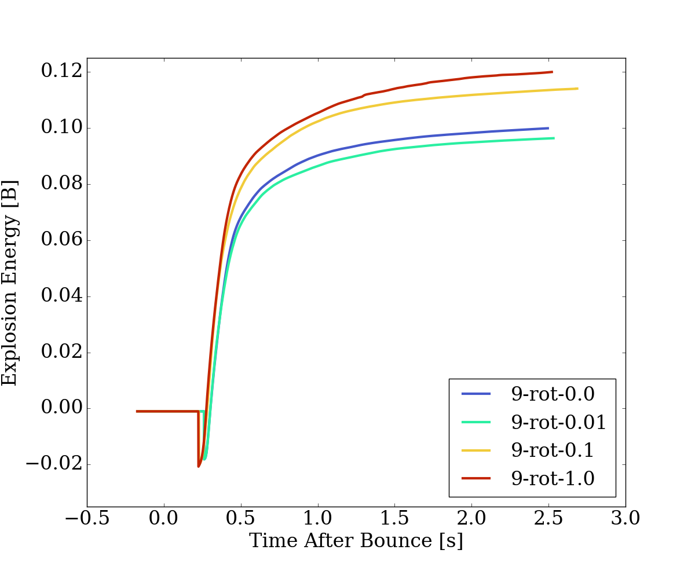
图注：Explosion energy (in Bethes, B) versus time after bounce (in seconds) for all four models of this study. The blue curve depicts the baseline behavior of the initially non-rotating model. The behavior is not monotonic, with the 9-rot-0.1 and 9-rot-1.0 models separating slightly from the others. The magnitude of the increase in energy of the former vis `a vis the latter is as much as $\sim$20\%. Note that the overall effect is not large, and that it requires a modest to rapid rate of initial rotation to show a measurable effect. Note also that for a small degree of initial rotation the explosion energy decreases slightly relative to the non-rotating baseline. The explosion energy is a sum of the kinetic, internal, gravitational, recombination, and overburden energies for zones with outward velocities exterior to 1000 kilometers.
对应解读：建议重点查看的图表第3项；关键图表逐图导读图3；模型族输出量中关于诊断爆炸能量随初始自转率的非单调关系。
入选理由：该图直接给出所有自转模型的爆炸能量随后弹时间演化，是支撑本文核心结论“爆炸能量对自转依赖弱且非单调”的最关键证据。图注还明确说明9-rot-0.1与9-rot-1.0只略有分离、总体效应不大，并给出能量定义包含动能、内能、引力、复合能和外层束缚能修正，正好对应日报中提醒读者注意的终态饱和和能量定义问题。
来源与置信度：\(arxiv_source\)；high；\(arxiv_source\) / main.tex:figure[11]
Fig01
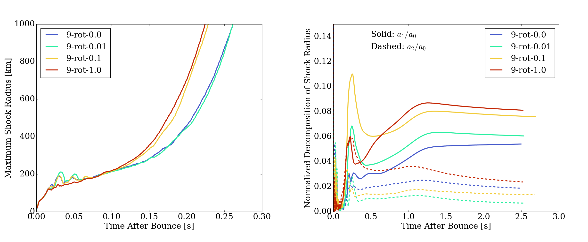
图注：Maximum shock radius (left) and normalized spherical harmonic decomposition of the shock radius (right). The decomposition is done using $a_l=\sqrt{\sum_{m=-l}^{m=l}|\int f(\theta,\phi)Y_{lm}(\theta,\phi)d\Omega|^2/(4\pi(2l+1))}$. We note that the mean shock radius and the time of explosion are weak functions of initial spin rate. It is only at and faster than $\Omega_0$ $\approx$ 0.1 rad s$^{-1}$ that we see the shock radius peel off from the other models, and this only slightly. This is one of the first hints that only really rapid rotation has dynamic consequences in the context of core-collapse supernova explosions.
对应解读：建议重点查看的图表第2项；关键图表逐图导读图2；关于shock半径和爆炸不对称性是否随自转显著增强的讨论。
入选理由：该图同时包含最大shock半径时间演化和shock半径球谐分解，能够检验平均shock扩张、爆炸时间以及低阶不对称模态是否随初始自转率系统变化。图注明确指出平均shock半径和爆炸时间只是初始自转的弱函数，只有Ω0约0.1 rad s^-1及以上才略微偏离，是支撑“自转单独影响不大”的基础动态图。
来源与置信度：\(arxiv_source\)；high；\(arxiv_source\) / main.tex:figure[1]
Fig10
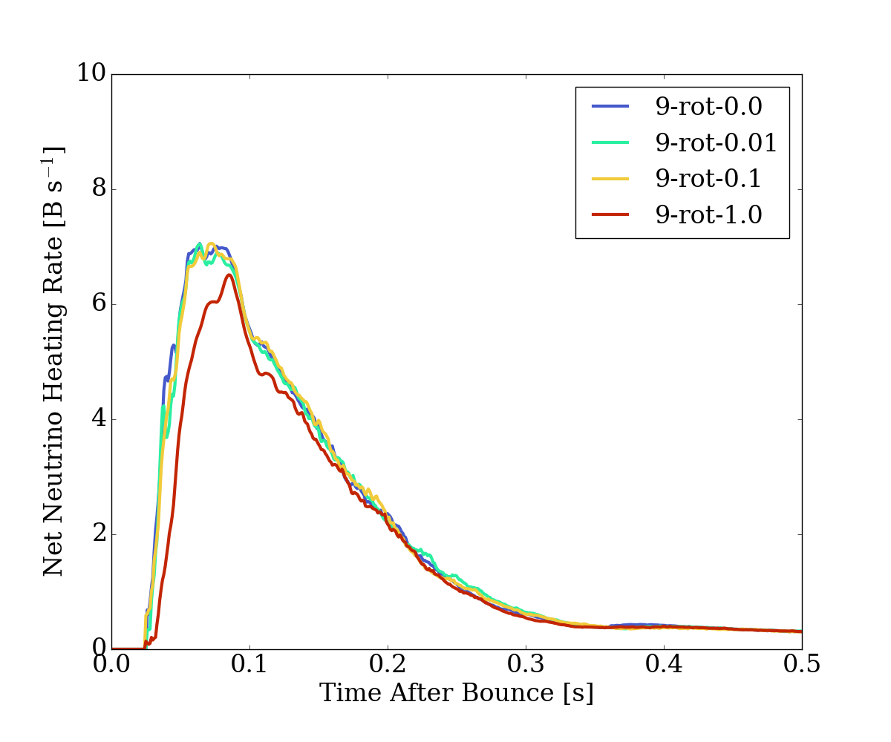
图注：Net heating rate in the gain region in Bethes per second as a function of time (in seconds) for all new models of this paper. Centrifugal support for model 9-rot-1.0 lowers its mean neutrino energies and luminosities in the gain region behind the shock during the first $\sim$200 milliseconds after bounce to a significant degree. See text for a discussion.
对应解读：建议重点查看的图表第4项；关键图表逐图导读图4；模型比较中关于净中微子加热率随时间和自转率变化的诊断。
入选理由：该图直接展示增益区净加热率随时间的模型间差异，是判断最快自转模型是否因离心支撑导致中微子加热降低的关键图。相比只看中微子光度的图，它更接近爆炸动力学中的实际加热输入，能支撑日报中“只有最快模型加热率明显低于其他模型”的解读。
来源与置信度：\(arxiv_source\)；high；\(arxiv_source\) / main.tex:figure[10]
Fig12
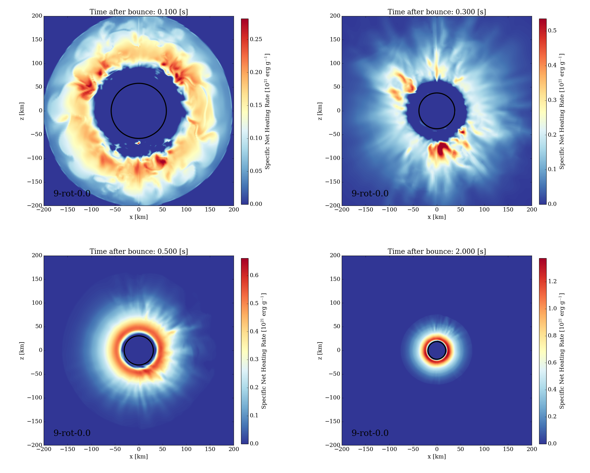
图注：Specific net heating rate in the x-z plane at 0.1, 0.3, 0.5, and 2.0 seconds post-bounce of the 9-rot-0.0 model. Despite transient variations with angle of the energy deposition rate in the turbulent heating rate exterior to the inner PNS, there is no pole-equator dichotomy.
对应解读：建议重点查看的图表第5项；关键图表逐图导读图5；关于极—赤道中微子加热差异是否持续存在的判断。
入选理由：该图给出非旋转模型在多个时刻的x-z平面比净加热率分布，并在图注中明确指出虽有湍流导致的瞬时角向变化，但不存在pole-equator dichotomy。虽然它只展示9-rot-0.0模型，不能完全覆盖所有自转率，但它是候选图中唯一直接可视化加热角向结构的图，对解释“不要把短时湍流斑块误读为持久极赤道加热不对称”很有价值。
来源与置信度：\(arxiv_source\)；high；\(arxiv_source\) / main.tex:figure[12]
Fig08
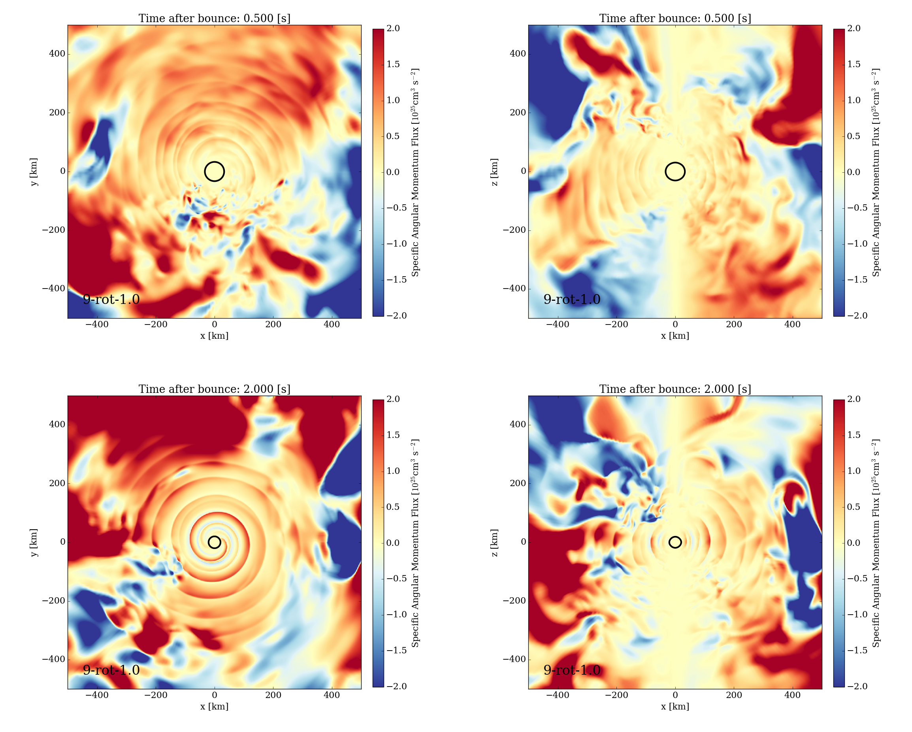
图注：Specific angular momentum flux in the y-x (left) and z-x (right) planes at 0.5 (top) and 2 (bottom) seconds post-bounce for the 9-rot-1.0 model. Within $\sim$300 ms of bounce, the core that is shrinking quasi-statically due to neutrino losses during its Kelvin-Helmholtz cooling phase and correspondingly spinning up seems to hit various co-rotation resonances. This is more clearly seen in Figure \(\ref{fig:egw2}.\) The result is the generation and emission of spiral waves/arms with various and changing mixes in angular quantum number $m$. See text for a discussion.
对应解读：建议重点查看的图表第7项；关键图表逐图导读图7；关于最快自转模型中共转共振、螺旋波/臂和非轴对称模态的讨论。
入选理由：该图展示9-rot-1.0模型在0.5和2秒后弹时的比角动量通量平面分布，图注明确联系到共转共振以及螺旋波/臂的产生。候选集中没有直接的T/|W|曲线或模态振幅图，因此这张图是支撑“最快自转模型出现低T/|W|相关非轴对称结构”的最佳可用可视化证据。
来源与置信度：\(arxiv_source\)；high；\(arxiv_source\) / main.tex:figure[8]
Fig09
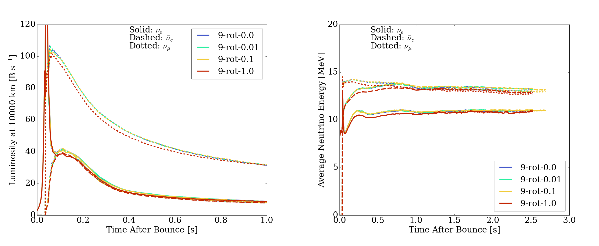
图注：Angle-integrated neutrino energy luminosity (left, in Bethes per second) and average energy (right, in MeV) for the various neutrino species in the laboratory frame at 10000 km. One Bethe $\equiv$ 10$^{51}$ ergs. The dotted lines are for the $\nu_{\mu}$, $\nu_{\tau}$, $\bar{\nu}_{\mu}$, and $\bar{\nu}_{\tau}$ neutrinos collectively. The 9-rot-1.0 model is the only one that deviates much from the others, with its luminosities and mean neutrino energies slightly lower before $\sim$300 milliseconds after bounce than the corresponding values for the other models.
对应解读：建议重点查看的图表第4项；关键图表逐图导读图4；关于中微子光度、平均能量与最快自转模型加热降低之间联系的辅助诊断。
入选理由：该图给出不同中微子种类的角积分能量光度和平均能量，显示9-rot-1.0模型在约300 ms前光度和平均能量略低于其他模型。它不能单独等同于加热率或爆炸能量差异，但可与Fig10互相印证，说明最快自转模型中加热降低的来源与较低中微子能量、光度有关。
来源与置信度：\(arxiv_source\)；high；\(arxiv_source\) / main.tex:figure[9]
强相关工作
这篇工作属于三维中微子驱动核心坍缩超新星的自转参数研究；它与早期二维旋转模型、磁旋转爆炸模型和低质量前身星三维爆炸模型都有关系。相近工作可用关键词检索：core-collapse supernova rotation three-dimensional neutrino-driven explosion, low-mass progenitor \(9\,M_{\odot}\), proto-neutron star spin kick alignment, low \(T/|W|\) corotation instability。
与基础理论相比，本文更接近一个受控数值实验。Janka、Burrows、Müller、Ott 等人的综述和模拟论文给出了中微子机制、\(\mathrm{SASI}\)、湍流压力、kick 和旋转不稳定性的背景。相反或张力方向主要来自磁旋转超新星和长伽马暴前身星研究：在那里快速自转和磁场是核心动力源，结论不能与本文的无磁低质量模型直接混合。
同一事件或同一源不存在，因为本文是理论模拟而非命名天体事件。可把它放在同类源或同类模型上下文中：低质量核心坍缩前身星、普通中微子驱动超新星、原中子星出生自旋和 kick。若要找历史原型，可检索 SN 1987A explosion energy nickel yield neutron star kick、Crab supernova low energy progenitor、electron-capture supernova low-mass progenitor，但这些不是本文模拟的同一对象。
同一事件 / 同类源线索：
相似工作：
（未提供）
基础理论 / 方法工作：
相反观点 / 张力线索：
（未提供）
11. Coherent Signal Detection with Pruning -- I. Finding Short-Period Binary Pulsars in Circular Orbits
- 来源：arXiv / astro-ph.HE
- 链接：https://arxiv.org/abs/2607.07700v1
- 作者：Pravir Kumar, Barak Zackay
- 评分：novelty 8/10，importance 8/10，relevance 7/10，final 8.65/10
- 推荐理由：短周期双星脉冲星全相干搜索的剪枝算法声称可降低10个数量级计算量并提升灵敏度，对致密双星和射电/高能瞬变搜索方法有较高可复用价值。
中文题目：用极端剪枝做相干信号检测：在圆轨道短周期双星中寻找脉冲星
做了什么：这篇论文提出一种面向短周期圆轨道双星脉冲星的全相干搜索框架。传统巡天常用恒加速度近似，只在积分时间小于轨道周期约几个百分点时可靠；一旦观测覆盖显著轨道相位，脉冲到达时刻的非线性调制会把信号功率涂抹掉。作者把圆轨道参数空间组织成多阶段相干积分，并在每一阶段用“极端剪枝”丢弃不可能含有信号的参数区域。模拟结果显示，在阈值附近探测概率可超过 \(90\%\)，强信号几乎可完全恢复；相对于未剪枝的层级全搜索，计算量最多可降低约 \(10\) 个数量级。重要的是，这使得覆盖一个完整轨道周期甚至更长的相干搜索第一次变得实际可行，并较常规加速度搜索带来约 \(3\) 到 \(5\) 倍灵敏度提升。
为什么重要：短周期双星脉冲星，特别是潜在的脉冲星—黑洞系统，是强引力、致密星形成和广义相对论检验的高价值目标，但它们恰恰最容易被轨道多普勒调制隐藏。本文的重要性在于，它不是再调一个经验筛选阈值，而是从计算复杂度上重构了搜索问题：保留全相干匹配滤波的灵敏度，同时用逐级剪枝避免在天文数量级的轨道模板上穷举。若方法在真实巡天数据中稳健，它会直接改变短周期双星脉冲星的可探测体积和样本选择函数。
理论 / 观测 / 仪器方法价值：对观测而言，本文提供了比恒加速度搜索更接近最优的短周期双星搜索路线，可提升对暗弱、紧致双星脉冲星的巡天回收率。对方法而言，它展示了如何在高维相干搜索中利用层级统计量和剪枝，把原本不可承受的模板搜索压缩到可运行规模。对理论而言，更完整的短周期双星样本将约束双星演化、超新星踢速、致密伴星分布和脉冲星—黑洞形成率。对仪器和数据管线而言，算法可成为 FAST、MeerKAT、SKA 路径设施以及大规模再处理项目的关键后端模块。
为什么应该关注：如果你关心强引力实验，最缺的不是理论模型，而是合适的系统：轨道足够紧、计时足够准、伴星足够致密。本文瞄准的正是当前搜索管线最容易漏掉的那部分参数空间。即使你不做脉冲星巡天，这篇文章也值得关注，因为它给出了一个很清楚的案例：在天文数据分析中，真正的突破有时来自“如何搜索”而不是“望远镜再大一点”。
展开详细解读：文章讲解、背景、理论、重点章节、图表与相关工作
文章详细讲解
科学问题：短周期双星脉冲星的脉冲频率会因轨道运动产生明显多普勒调制。若把观测数据简单折叠或做标准傅里叶搜索，信号功率会被分散到多个频率 bin；若使用恒加速度搜索，则只在观测时间远小于轨道周期时近似成立。对于轨道周期只有几十分钟到数小时的系统，深积分和轨道相干建模之间存在直接冲突：积分越长信噪比越高，但轨道相位变化越强，错误模型造成的失配越严重。
作者怎么做：论文提出“Coherent Signal Detection with Pruning”的第一篇，聚焦圆轨道情形。核心思想是先不在全观测长度和全参数空间上一次性做完整匹配滤波，而是把数据分成逐渐增长的相干积分阶段；在每个阶段，对候选轨道参数计算相干统计量，并把统计上不可能在后续变成显著信号的区域剪掉。这样，早期阶段使用较短积分、较宽容的参数分辨率，快速排除绝大多数噪声模板；后期只在少数幸存区域上做更长积分和更精细模板。
关键结果：作者报告，在设定的灵敏度阈值附近，算法可获得超过 \(90\%\) 的探测概率；对更强信号，恢复概率接近 \(1\)。与没有剪枝的层级圆轨道搜索相比，计算复杂度最多可降低约 \(10\) 个数量级。相对于常规加速度搜索，新算法在短周期系统上可提供约 \(3\) 到 \(5\) 倍的灵敏度改善。这里的灵敏度改善不是简单的代码优化，而来自能在一个完整轨道周期及更长时间上保持相干积分，从而避免信号功率被轨道相位误差打散。
局限和下一步：本文限定在圆轨道双星，这是许多紧致回收毫秒脉冲星的合理近似，但并不覆盖偏心轨道、强散射、红噪声、射频干扰、脉冲剖面演化和真实巡天中复杂的缺测窗口。论文的结果主要应理解为算法可行性和统计性能的证明。下一步自然是把方法扩展到偏心轨道、未知自转频率导数、多波束和多历元数据，并在真实望远镜数据中检验候选数量、误报率、算力分配和人工复核成本。
关键结果是怎么做出来的
本文最重要的结果链条是：在圆轨道参数空间中，全相干搜索本来计算量爆炸；作者通过多阶段积分和剪枝，把绝大多数噪声模板在早期淘汰，同时尽量保证真实信号不会被误剪。样本不是天体目录样本，而是注入—恢复式的算法实验：在模拟数据中注入具有不同信噪比、轨道周期、投影半长轴和轨道相位的脉冲星信号，再统计算法在给定阈值下能否回收。
数据选择上，论文关注短周期圆轨道，这是参数维数已足以让穷举全相干搜索困难、但又能写出清晰轨道相位模型的第一步。事件数在这里对应大量蒙特卡洛注入和噪声实现，而不是天文事件计数。读者应重点看作者如何覆盖轨道周期、相位、速度幅度和信号强度：若注入分布只覆盖了较温和轨道，算法对最极端紧致系统的结论就需要谨慎外推。
显著性与置信度的核心不是单个候选的天体物理显著性，而是搜索统计量在噪声和信号假设下的分布。作者以探测概率、误报控制和剪枝后幸存模板数量来评价方法。应关注阈值如何设定：每一级剪枝阈值既要足够严格以降低计算量，又不能过早丢掉由于短积分统计涨落而暂时不显著的真实信号。最终“阈值附近 \(>90\%\) 探测概率”的说法，要结合给定虚警率或等效阈值一起理解。
模型比较方面，论文把剪枝相干搜索与未剪枝的层级基线、以及常规恒加速度搜索作对照。支撑结论的图表通常应包括：探测概率随信号强度变化的曲线、计算量随轨道参数范围或积分阶段变化的曲线、幸存模板数随阶段衰减的曲线，以及相对于加速度搜索的灵敏度比。关键不是某个单点加速比，而是剪枝曲线是否在广泛参数范围内稳定下降且不牺牲回收率。
系统误差和稳健性方面，需要检查噪声是否假定为高斯白噪声、脉冲剖面是否固定、数据是否连续、以及是否包含真实巡天常见的射频干扰和加权缺测。若噪声尾部分布比高斯更厚，早期剪枝阈值可能产生更多伪候选，计算节省会下降；若真实信号因散射、闪烁或轨道偏心偏离圆轨道模板，回收率也可能降低。本文的稳健性价值在于它给出了一套可量化的剪枝—回收权衡框架，后续可把真实数据效应逐项加入。
展开背景、理论、公式、模型、章节和图表导读
背景知识
双星脉冲星搜索的基本困难来自脉冲星自转的高相干性和轨道运动的强调制。孤立脉冲星在去色散后通常表现为近似周期信号，傅里叶搜索或折叠搜索可把长时间积分转化为信噪比提升。但在双星中，脉冲星沿视线方向速度随轨道相位变化，观测到的脉冲频率不再恒定，信号功率会在频域中扩散。
历史上，许多巡天采用加速度搜索，即把观测段内的视向加速度近似为常数。这对轨道周期较长或积分时间较短的系统很有效，也是发现许多紧致双星毫秒脉冲星的重要工具。但恒加速度近似有明确适用边界：当观测覆盖的轨道相位不再很小，jerk 和更高阶项不可忽略，单一加速度模板会失配。
为什么现在值得重新看？一方面，FAST、MeerKAT、ASKAP、CHIME 以及未来 SKA 路径设施正在积累海量高灵敏度时域数据；另一方面，潜在的脉冲星—黑洞双星、超紧致双中子星前身、蜘蛛系统和球状星团内短周期系统，都可能处在传统搜索效率低的区域。数据量和科学动机同时变大，使得算法复杂度成为实际瓶颈。
该领域的常见误区之一是把“更长积分”简单等同于“更高灵敏度”。在双星脉冲星中，如果轨道模型不对，长积分反而会降低峰值统计量，因为相位相干性被破坏。另一个误区是认为只要做更宽的加速度搜索就能解决所有短周期问题；事实上，对接近完整轨道覆盖的数据，轨道相位是周期性、非线性的，不能由单一常加速度参数充分描述。
还需要区分两类“困难”：一类是物理信号本身很弱，另一类是搜索模板空间太大。本文主要解决第二类困难，即如何在圆轨道模型下用近似最优的相干统计量搜索巨大参数空间。若成功，它会把若干过去因算力不足而被迫牺牲的积分时间重新变成可用信噪比。
基础理论 / 方法脉络
基本物理图像是多普勒调制。脉冲星在自身参考系中以稳定自转频率发射脉冲；观测者看到的脉冲到达时刻会被双星轨道的光行时延迟调制。对圆轨道而言，延迟近似为正弦函数，其幅度由投影半长轴决定，周期由轨道周期决定，相位由参考历元决定。
在相干搜索中，目标是为每一组候选参数把数据重新映射到脉冲星本征相位，使脉冲周期性重新对齐。如果参数正确，脉冲相位误差在整个积分时间内保持小，傅里叶或折叠统计量累积为高信噪比；如果参数错误，残余相位会快速漂移，统计量下降。这就是匹配滤波思想在脉冲星搜索中的体现。
恒加速度搜索相当于把轨道延迟在短时间内泰勒展开，只保留到二阶相位项。它的优势是模板维数低、计算便宜；劣势是只能描述轨道的一小段。本文的圆轨道相干模型保留完整周期性结构，因此能处理覆盖一个轨道周期甚至更长的观测，但代价是需要在轨道周期、投影半长轴、轨道相位和自转频率等参数上搜索。
剪枝算法利用了一个统计事实：在纯噪声下，绝大多数模板在短积分阶段就不会显示出持续增长的相干功率；而真实信号即使在早期有涨落，随着积分时间增加，其统计量总体会沿着正确参数附近增强。通过把全积分拆成多级，算法可以在每一级根据统计量分布设置阈值，只让可能含有真实信号的区域进入下一步。
常见退化包括轨道相位与投影半长轴之间的局部相关、短时间内圆轨道模型与恒加速度模型之间的近似等价、以及自转频率漂移与轨道速度项之间的混淆。系统误差则包括非高斯射频干扰、色散量误差、采样不均匀、脉冲占空比变化、闪烁导致的时间变幅和模板网格失配。这些都会影响剪枝阈值的实际误剪率和误报率。
公式与推导
第一步，从脉冲相位相干性出发。若脉冲星本征自转频率为 \(f_{\rm s}\)，在没有轨道运动时，脉冲相位可写为
其中 \(t\) 是观测时间，\(\Phi_0\) 是初相位。孤立脉冲星搜索就是寻找使 \(\Phi_{\rm iso}(t)\) 对齐的 \(f_{\rm s}\)。
第二步，加入圆轨道光行时延迟。对投影半长轴 \(x=a_{\rm p}\sin i/c\)、轨道角频率 \(\Omega_{\rm b}=2\pi/P_{\rm b}\)、轨道相位 \(\phi_{\rm b}\)，到达时刻延迟可近似写为
这里 \(a_{\rm p}\) 是脉冲星绕质心轨道半长轴，\(i\) 是倾角，\(c\) 是光速，\(P_{\rm b}\) 是轨道周期。圆轨道假设忽略偏心率项。
第三步，观测相位由发射时刻决定，因此可写成
其中参数向量 \(\theta=(f_{\rm s},P_{\rm b},x,\phi_{\rm b},\Phi_0)\)。相干搜索的目标就是在 \(\theta\) 上最大化相位对齐后的统计量。
第四步，若 \(T_{\rm obs}\ll P_{\rm b}\)，可把延迟泰勒展开，得到恒加速度近似的来源：
其中 \(v_r\)、\(a_r\)、\(j_r\) 分别为视向速度、加速度和 jerk。常规加速度搜索主要保留到 \(a_r\) 项；当 \(j_r T_{\rm obs}^3/c\) 不可忽略时，近似失效。
第五步，相干匹配统计量可抽象为复相量求和：
其中 \(d_k\) 是去色散后的时间序列或等效脉冲权重，\(w_k\) 是数据权重，\(N\) 是采样点数。若模板正确，信号相位被拉直，\(|Z(\theta)|\) 随积分长度近似线性增长；若模板错误，复相量随机游走。
第六步，常用检测统计量可写为归一化功率
其中 \(\sigma^2\) 表示噪声方差。在高斯白噪声且模板固定时，\(\rho^2\) 的零假设分布接近指数型或等价的 \(\chi^2\) 分布；搜索很多模板时必须考虑试验因子。
第七步，模板失配可由相位误差的均方近似表示：
其中 \(\mu\) 是相干信噪比损失的近似量，\(\delta\Phi(t)\) 是真实参数与模板参数之间的相位差，\(T\) 是当前积分时长。该式说明积分越长，轨道参数网格必须越细。
第八步，多阶段剪枝可用条件幸存概率描述。若第 \(m\) 阶段统计量为 \(\rho_m\)，阈值为 \(\eta_m\)，一个真实信号的总保留概率近似为
其中 \(H_1\) 是含信号假设，\(M\) 是阶段数。设计阈值时要让 \(P_{\rm keep}\) 高，同时让噪声模板的幸存数快速下降。
第九步，计算量压缩可写为阶段求和：
其中 \(N_m^{\rm surv}\) 是第 \(m\) 阶段幸存模板数，\(N_m^{\rm all}\) 是不剪枝时模板数，\(c_m\) 是单模板代价。本文声称的巨大加速来自 \(N_m^{\rm surv}\ll N_m^{\rm all}\)，尤其在长积分高分辨率阶段。
第十步，灵敏度提升可用最小可探测幅度标度理解。若相干积分有效，信噪比近似满足
其中 \(A\) 是脉冲信号幅度，\(T_{\rm coh}\) 是保持相位相干的积分时间。若传统方法只能用 \(T_{\rm acc}\)，而新方法可用 \(T_{\rm orb}\)，理想幅度阈值比约为 \(\sqrt{T_{\rm acc}/T_{\rm orb}}\)。实际论文报告的 \(3\) 到 \(5\) 倍灵敏度改善，反映了相干时间、模板失配、试验因子和剪枝损失共同作用后的结果。
模型拟合 / 应用方法
本文的“拟合”更接近搜索和参数估计的结合：对每个候选自转频率和圆轨道参数，计算相干统计量，并在参数空间中寻找局部最大值。拟合量包括 \(f_{\rm s}\)、\(P_{\rm b}\)、\(x\)、\(\phi_{\rm b}\) 以及可能的初相位或谐波组合；输出既包括是否探测，也包括回收参数与注入参数的偏差。
似然层面，可把去色散时间序列看作信号模板加噪声。若噪声近似高斯，最大化相干功率等价于最大化高斯似然或匹配滤波信噪比。剪枝阶段相当于在中间数据长度上做一系列条件检验：统计量低于阈值的参数区域被赋予近似零后验或不再继续计算。重要的是，这不是严格贝叶斯边缘化，而是一种以控制误剪率为目标的算法近似。
参数退化主要出现在短积分阶段。圆轨道在小相位弧段内可被速度和加速度近似，因此不同的 \(P_{\rm b}\)、\(x\)、\(\phi_{\rm b}\) 组合可能给出相似的局部相位曲线。随着积分覆盖更大轨道相位，这些退化逐渐被打破。剪枝算法必须利用这一点：早期网格不宜过细也不宜阈值过狠，后期再精化轨道参数。
残差诊断应看相位残差而不只是最终信噪比。正确模型应使折叠剖面在整个观测时段内相位稳定；若存在系统性漂移，可能是 \(P_{\rm b}\) 或 \(x\) 偏差，也可能是偏心率、脉冲星自转导数、色散量误差或时钟校正问题。真实应用中，候选还要经过多子带、多子积分、不同谐波和不同去色散量下的稳健性检查。
模型可能失败的地方包括：真实轨道偏心率非零、伴星风导致食和传播延迟、强射频干扰造成非高斯统计尾、采样窗口破坏相干统计量分布、以及脉冲星本身有闪烁或间歇发射。对于这些情形，剪枝阈值从模拟高斯噪声中得到的表现可能过于乐观。后续若把方法用于巡天，最好把阈值校准建立在注入真实数据流的恢复实验上。
重点章节 / 结果段落怎么读
-
问题定义与信号模型：应先读作者如何定义圆轨道脉冲星信号、搜索参数范围和传统加速度搜索的失效条件。重点不是公式复杂度，而是他们把哪些物理效应纳入模型、哪些暂时忽略，例如偏心率、传播效应和红噪声。
-
层级相干搜索框架：这一部分是论文核心。读者应关注数据如何分阶段积分，模板网格如何随积分时间细化，以及每一级统计量如何传递到下一级。要特别看剪枝阈值是经验设定、解析估计还是通过模拟校准。
-
复杂度分析：这里决定方法是否真的能用于巡天。应检查作者对模板数、单模板计算代价和幸存模板数的估算是否清楚分开。所谓最多降低 \(10\) 个数量级，必须看它相对于哪个基线、在哪些参数范围内成立。
-
注入—恢复实验：这是验证灵敏度和误剪率的关键章节。读者应看注入信号覆盖的轨道周期、投影半长轴、相位和信噪比范围，以及探测概率曲线在阈值附近是否平滑、是否存在特定轨道区域的失败。
-
与加速度搜索比较：这一部分要读出物理原因，而不是只记住 \(3\) 到 \(5\) 倍数字。比较是否在相同虚警率、相同观测时长和相同算力预算下进行，直接影响灵敏度提升的解释。
-
讨论与展望：重点看作者如何处理真实数据效应、偏心轨道扩展和巡天管线集成。若这些只作为未来工作出现，本文应被定位为算法原型和圆轨道场景的强证明，而不是完整生产级管线。
建议重点查看的图表
-
探测概率随注入信号强度或等效信噪比的曲线：看阈值附近是否确实超过 \(90\%\)，以及强信号是否接近 \(1\) 的回收率。
-
幸存模板数随剪枝阶段变化的图：看每一级淘汰比例是否稳定，是否某一级承担了几乎全部压缩；如果压缩只在理想噪声下出现，真实数据中可能打折。
-
计算复杂度对比图：检查剪枝搜索、未剪枝层级搜索和常规加速度搜索的代价定义是否一致，尤其要看纵轴是否为实际浮点操作、模板评估次数还是归一化时间。
-
灵敏度提升随轨道周期或 \(T_{\rm obs}/P_{\rm b}\) 的图：这是判断方法适用区域的关键。加速度搜索在小 \(T_{\rm obs}/P_{\rm b}\) 下应接近有效，在大覆盖率下应迅速失效。
-
参数回收误差或失配分布：看回收的 \(P_{\rm b}\)、\(x\)、\(\phi_{\rm b}\) 是否无偏，误差是否与模板网格预期一致。
-
虚警率或噪声背景分布诊断：看搜索大量模板后的最高统计量分布，是否与理论噪声模型一致，是否需要经验重标定。
-
稳健性检验表：若有，应检查不同脉冲占空比、不同谐波数、不同噪声实现和不同轨道相位下的回收率。
关键图表逐图导读
图 1：通常应是问题示意或信号调制图。横轴可能为观测时间或轨道相位，纵轴可能为脉冲频率、相位残差或到达时延。数据点或曲线若显示圆轨道正弦延迟，应重点看恒加速度近似只在局部小弧段贴合，而在长积分上产生系统残差。读图陷阱是把局部拟合好误认为全轨道有效。
图 2：若论文给出层级剪枝流程图，应把它当作算法说明而不是装饰图。每个节点对应某一积分长度、模板分辨率和阈值。要看候选从早期粗网格进入后期细网格的规则，以及是否存在会漏掉边界信号的硬切分。
图 3：探测概率曲线最关键。横轴多半是注入信号强度、相干信噪比或归一化幅度，纵轴是回收率。模型线或不同颜色曲线可能代表剪枝搜索、未剪枝基线和加速度搜索。主要结论应来自在同一虚警条件下剪枝搜索曲线更靠左；陷阱是忽略试验因子或不同方法使用了不同阈值。
图 4：计算量或模板数压缩图应重点读纵轴的对数尺度。若纵轴跨越多个数量级，小的视觉差异可能代表巨大的算力差。需要区分“模板数减少”与“实际墙钟时间减少”，因为内存访问、FFT 复用和并行效率也会影响真实运行。
图 5：灵敏度相对于加速度搜索的比值图应结合 \(T_{\rm obs}/P_{\rm b}\) 解读。若横轴是轨道周期，短周期端的提升最大才符合物理直觉；若长周期端仍显示巨大提升，就要检查比较基线是否公平。置信带或误差棒若很宽，说明注入样本或噪声实现仍有限。
图 6：参数误差或失配热图可帮助判断算法是否只“探测到”而不能“定位参数”。横轴和纵轴可能是 \(P_{\rm b}\) 与 \(x\)，颜色表示失配或回收率。应注意低回收区域是否沿某些退化方向延伸，这会提示后续真实候选精细计时所需的初始搜索精度。
论文原图 / 可嵌入图片
Fig08
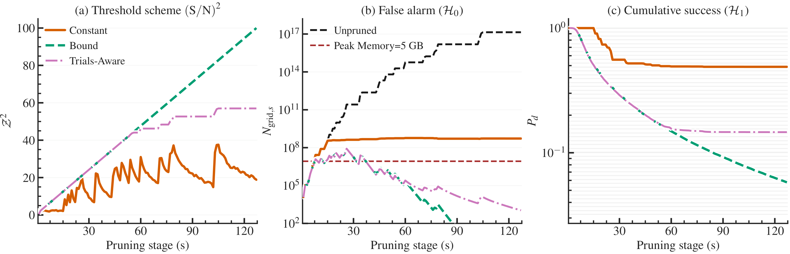
图注：Comparison of three heuristic threshold schemes for a circular-orbit search ($\Porb \geq \Tobs$) over an 18-min observation divided into 128 segments ($\eta = 1.0$, $N_b = 64$, target $\mathrm{S/N} = 10$). \(\textbf{Panel (a):}\) Stage-wise $(\mathrm{S/N})^{2}$ thresholds. The Bound scheme (green) increases thresholds linearly with stage. The Trials-aware scheme (magenta) adapts to per-stage false-alarm probability in later stages. The Constant Load scheme (red) caps candidate growth. \(\textbf{Panel (b):}\) Surviving $\mathcal{H}_0$ candidates $N_{\mathrm{grid}, s}$; the gray dashed curve is the unpruned total. \(\textbf{Panel (c):}\) Cumulative $\mathcal{H}_1$ detection probability~$P_d$.
对应解读：对应“建议重点查看的图表”第2项幸存模板数随剪枝阶段变化、第6项虚警/噪声背景诊断，以及“关键图表逐图导读”中关于探测概率曲线和剪枝阶段阈值的核心解读。
入选理由：这张图同时给出阶段阈值、H0噪声候选幸存数和H1累计探测概率，是判断剪枝是否以可控误删率换取计算压缩的最直接证据。相比单纯流程示意图，它包含真实诊断量，可检查是否某一级承担了主要压缩、不同阈值策略如何影响候选爆炸和探测概率。
来源与置信度：\(arxiv_source\)；high；\(arxiv_source\) / pruning1.tex:figure[8]
Fig11
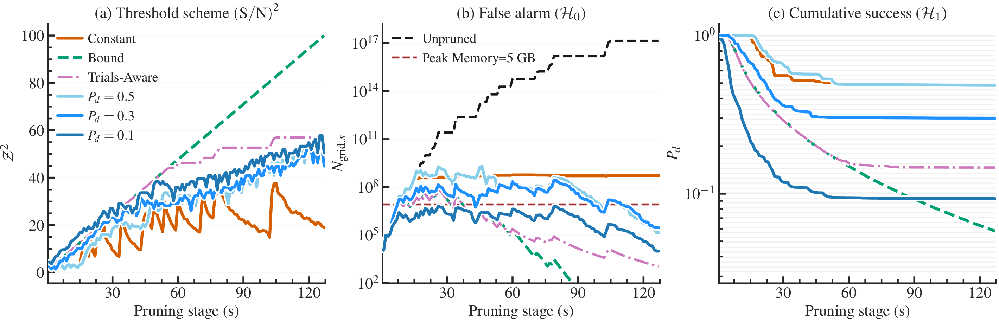
图注：Comparison of Viterbi-optimized schemes (solid blue tones) with the heuristic schemes of Figure~\(\ref{fig:threshold_circular_pre}\) (same panels). Optimized paths are shown for target detection probabilities $P_d = 0.1$, $0.3$, and $0.5$. Dynamic programming yields an additional order-of-magnitude reduction in pruning cost relative to the best heuristic, and roughly $9$ orders of magnitude relative to the unpruned baseline in panel~(b).
对应解读：对应“建议重点查看的图表”第2项幸存模板数、第3项计算复杂度对比，以及“关键结果”中相对未剪枝基线降低约9到10个数量级的说法。
入选理由：图中直接比较Viterbi优化阈值路径与启发式方案，并在幸存候选数面板中标出相对未剪枝基线的巨大压缩，是支撑论文计算效率主张的关键图。它比Fig10更适合日报嵌入，因为它不仅展示优化结果，还和启发式基线并列比较。
来源与置信度：\(arxiv_source\)；high；\(arxiv_source\) / pruning1.tex:figure[11]
Fig12
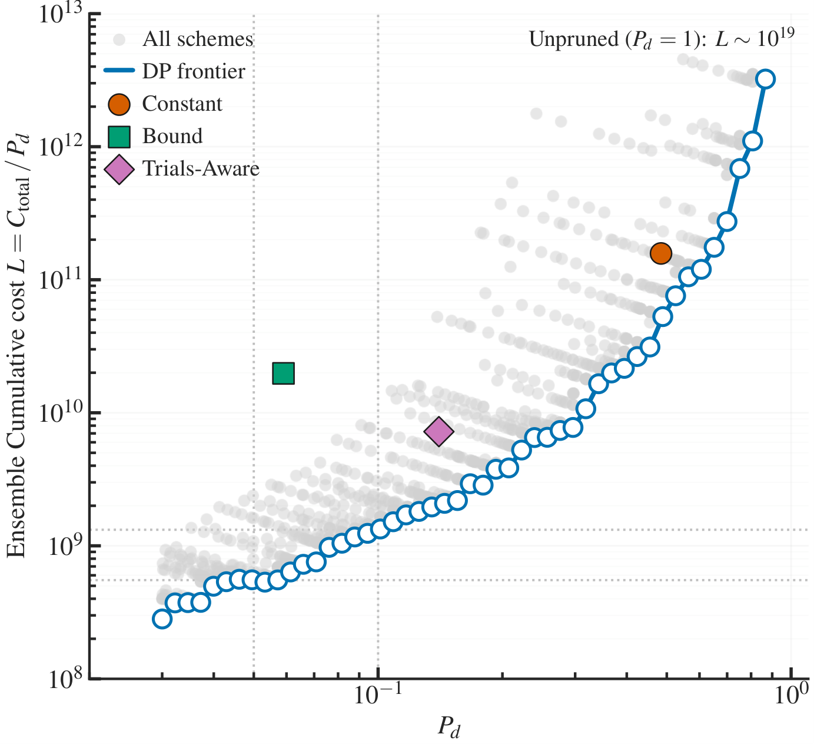
图注：Ensemble pruning cost $L = C_{\mathrm{total}}/P_d$ versus cumulative detection probability $P_d$ for the same search configuration as Figure~\(\ref{fig:threshold_circular_pre},\) from the Viterbi-style DP optimization (Section~\ref{sec:mc_thresholds}). Grey points show every complete scheme at the final stage; the blue curve traces the optimized cost-efficiency frontier, connecting the minimum-$L$ scheme in each $P_d$ bin. Symbols mark three heuristic schemes (Constant, Bound, Trials-Aware). Dotted lines indicate $P_d = 0.05$ and~$0.1$. The unpruned brute-force cost at $P_d = 1$ ($L \sim 10^{19}$, off scale) is noted for reference. The cost increases steeply as $P_d \to 1$ but remains modest at low $P_d$; this strong convexity is precisely what the multi-pass ensemble strategy in Section~\(\ref{sec:ep_multi}\) exploits.
对应解读：对应“建议重点查看的图表”第1项探测概率、第3项计算复杂度对比，以及模型拟合段落中“以控制误剪率为目标的算法近似”。
入选理由：该图把ensemble pruning cost与累计探测概率直接联系起来，展示成本—检出率前沿和接近Pd=1时代价急剧上升的权衡。它是理解为何论文采用多通道/多次低Pd策略以及为何不能只看单次最高探测概率的核心图。
来源与置信度：\(arxiv_source\)；high；\(arxiv_source\) / pruning1.tex:figure[12]
Fig07
图注：Cumulative grid size, expressed as the product of branching factors $B(s)$, for different reference-frame, basis, and tiling strategies. The example assumes a circular-orbit search ($\Porb \geq \Tobs$) over an 18-min observation divided into 128 segments ($\eta = 1.0$, $N_b = 64$). Fixed grid strategies are shown for both the best-case midpoint reference ($q=64$; dotted lines) and the worst-case edge reference ($q=0$; dashed lines) baselines. Moving grid strategies demonstrate the low-overhead scaling of aggressive tiling in both Taylor and Chebyshev bases, contrasted with the much larger growth produced by quadrature tiling.
对应解读：对应“建议重点查看的图表”第3项计算复杂度对比，以及“关键图表逐图导读”中计算量或模板数压缩图的对数尺度解读。
入选理由：该图展示不同参考系、基函数和tiling策略下的累计网格规模增长，直接说明未剪枝/固定网格搜索为何在高维轨道参数空间中不可承受，也解释移动网格和aggressive tiling为何能降低模板膨胀。
来源与置信度：\(arxiv_source\)；high；\(arxiv_source\) / pruning1.tex:figure[7]
Fig01
图注：Statistical snapshot of the pruning process at an intermediate stage. The noise distribution ($\mathcal{H}_0$, gray) is shifted from zero due to the maximization over search parameters (look-elsewhere effect). The signal distribution ($\mathcal{H}_1$, blue) separates to higher values as integration time increases. The pruning threshold $\SNR_{t}$ (red dashed line) acts as a filter: the gray shaded region represents pruned candidates (eliminated search volume), while the orange shaded region quantifies the false dismissal probability (risk of signal loss).
对应解读：对应“建议重点查看的图表”第6项虚警率或噪声背景分布诊断，以及模型拟合段落中关于H0/H1统计量、look-elsewhere effect和剪枝阈值的说明。
入选理由：这张图清楚展示噪声分布、信号分布、剪枝阈值、被剪掉的H0区域和信号误删概率，是理解阈值选择统计含义的基础。虽然偏概念化，但与日报强调的虚警、试验因子和误剪率控制高度相关。
来源与置信度：\(arxiv_source\)；high；\(arxiv_source\) / pruning1.tex:figure[1]
Fig05
图注：Schematic of the pruning procedure used in the EP algorithm. Each node represents a surviving candidate after scoring at a given stage, and each branch corresponds to refinement onto the finer parameter grid of the next stage. Candidates falling below the stage-specific threshold are pruned, so that only high-significance branches are propagated forward.
对应解读：对应“关键图表逐图导读”图2式的层级剪枝流程说明，以及详细解读中“逐渐增长的相干积分阶段、幸存区域继续精化”的算法描述。
入选理由：该图是EP算法剪枝树的流程示意，能帮助读者理解每个阶段候选如何被阈值筛选并传播到更细网格。它不提供定量性能，因此科学价值低于Fig08、Fig11和Fig12，但适合作为算法机制的辅助图。
来源与置信度：\(arxiv_source\)；high；\(arxiv_source\) / pruning1.tex:figure[5]
强相关工作
本文与传统二进制脉冲星搜索方法直接相连，尤其是傅里叶域加速度搜索、相位调制搜索、jerk search 和 sideband search。建议检索关键词包括 “binary pulsar acceleration search”、“phase modulation search”、“pulsar coherent demodulation”、“short-period binary pulsar search” 和 “PRESTO acceleration search”。这些工作构成了当前巡天管线的基础，也定义了本文声称改进的比较对象。
它也应放在强引力目标搜索的背景下理解。脉冲星—黑洞双星尚未被确认发现，但长期被视为广义相对论和黑洞无毛性质检验的理想实验室；双中子星系统和双白矮星伴星毫秒脉冲星则提供了已有原型。建议检索 “pulsar black hole binary formation”、“double neutron star pulsar survey selection effects”、“relativistic binary pulsar timing” 和 “SKA pulsar search binary acceleration”。
潜在张力在于，算法模拟中获得的巨大加速和灵敏度提升，是否能在真实巡天数据里保持。真实数据中的射频干扰、非平稳噪声、散射、食、闪烁和不完整时间采样会改变统计量背景，也会增加候选复核成本。因此，与其把本文看成已经解决所有短周期搜索问题，不如看成一个强有力的圆轨道相干搜索框架，后续需要通过注入真实观测流和盲搜验证来完成闭环。
同一事件 / 同类源线索：
相似工作：
基础理论 / 方法工作：
相反观点 / 张力线索：
（未提供）
12. Subsolar-mass binary mergers of strange stars and neutron stars: gravitational waves and ejecta
- 来源：arXiv / astro-ph.HE
- 链接：https://arxiv.org/abs/2607.07668v1
- 作者：Yong Gao, Ming-Zhe Han, Kenta Kiuchi, Masaru Shibata, Enping Zhou, Kenta Hotokezaka
- 评分：novelty 8/10，importance 8/10，relevance 7/10，final 8.65/10
- 推荐理由：首次数值相对论比较亚太阳质量奇异星与中子星并合，给出GW频率判据和喷射物差异；虽非伽马射线主题，但对致密星、多信使和EOS判别有重要性。
中文题目：亚太阳质量奇异星与中子星双星并合：引力波和抛射物
做了什么：这篇论文用数值相对论首次系统模拟了亚太阳质量奇异星双星并合，并把它与不同状态方程、总质量和质量比的亚太阳质量中子星双星并合直接比较。核心发现是：自束缚奇异星在并合前形变更小、表面更锐利，接触时产生更强激波和径向反弹；这会让奇异星并合的接触前引力波截止频率 \(f_{\mathrm{cut}}\) 更高，但并合后主峰频率 \(f_2\) 反而更低。单独在中子星类或奇异星类内部，\(f_{\mathrm{cut}}\) 和 \(f_2\) 都与潮汐形变量存在近似普适关系，而比值 \(f_2/f_{\mathrm{cut}}\) 可以较干净地区分两类致密星。两类系统都可能抛出约 \(10^{-2}\,M_\odot\) 物质，但中子星抛射物是富中子核物质，奇异星抛射物则是解压缩夸克物质，这使亚太阳质量并合事件同时成为检验致密星物质形态和寻找电磁对应体的目标。
为什么重要：亚太阳质量致密双星如果被探测到，会立刻挑战普通恒星演化形成中子星的图景，因为标准中子星质量很难低于约 \(1\,M_\odot\)。这类事件常被讨论为原初黑洞候选，但本文强调另一种可能：稳定的亚太阳质量奇异星。论文给出了引力波频谱和抛射物性质上的可观测判据，尤其是 \(f_2/f_{\mathrm{cut}}\) 这一相对不依赖绝对质量标定的诊断量。
理论 / 观测 / 仪器方法价值：对理论而言，论文把自束缚夸克星的微观物态差异转化为数值相对论可观测量，连接了致密物质状态方程和并合动力学。对观测而言，它指出亚太阳质量事件不应只按黑洞或普通中子星模板解释，后并合高频信号和电磁对应体成分可能提供分类信息。对方法而言，它给出了跨状态方程、跨质量比比较 \(f_{\mathrm{cut}}\)、\(f_2\)、潮汐形变量和抛射质量的框架。
为什么应该关注：如果下一代引力波探测器发现亚太阳质量双星，最难的问题不是“有没有信号”，而是“它到底是什么”。本文告诉读者：同样是小质量致密星，奇异星和中子星在接触瞬间、后并合频率、冲击加热和抛射物组成上有可分辨差异。它也提醒观测者，低质量事件的电磁对应体不一定是普通 \(r\) 过程千新星，可能涉及解压缩夸克物质的更特殊辐射。
展开详细解读：文章讲解、背景、理论、重点章节、图表与相关工作
文章详细讲解
科学问题：亚太阳质量致密天体并合长期处在一个尴尬位置。若探测到质量显著低于典型中子星的双星，引力波界常会首先联想到原初黑洞；但如果奇异夸克物质是稳定或亚稳的，奇异星可以因为自束缚而存在于远低于普通中子星稳定质量下限的质量范围。本文问的是：亚太阳质量奇异星并合在引力波和物质抛射上是否与亚太阳质量中子星并合有清楚差别，差别是否足够转化为观测判据。
作者怎么做：作者进行全广义相对论数值模拟，构造不同总质量、质量比和状态方程的亚太阳质量双星，分别覆盖奇异星和中子星两大类。比较重点不是单一波形，而是接触前的潮汐形变、引力波频谱截止频率 \(f_{\mathrm{cut}}\)、并合后主峰 \(f_2\)、冲击加热、径向反弹、抛射质量和抛射物物理状态。中子星样本用于显示普通重子物质压力束缚星体的行为，奇异星样本用于显示自束缚、锐利表面和更小潮汐形变的后果。
关键结果：奇异星因为表面由强相互作用自束缚维持，在接触前不像低质量中子星那样被潮汐拉得很长，因此在更高轨道频率才发生几何接触，对应更高 \(f_{\mathrm{cut}}\)。但接触后，锐利表面的碰撞带来强激波和明显径向反弹，使后并合残余体的主振荡频率 \(f_2\) 低于相近紧致度或质量下的中子星情形。论文强调，在各自类别内部，\(f_{\mathrm{cut}}\) 与 \(f_2\) 对潮汐形变量有近似普适标度；但跨类别时，最有区分力的是 \(f_2/f_{\mathrm{cut}}\)，因为它把接触前和接触后的物理差异放在同一个无量纲式诊断中。
局限和下一步：这类研究仍受状态方程选择、数值分辨率、微物理处理和高频引力波探测灵敏度限制。特别是奇异星抛射出的解压缩夸克物质会怎样强子化、发光和产生可探测电磁信号，并不是单靠动力学模拟就能完全确定。下一步需要更丰富的奇异物质状态方程、磁场与中微子输运、更长时间的后并合演化，以及与第三代引力波探测器和快速电磁随访策略相结合的可观测预言。
关键结果是怎么做出来的
本文最重要的证据链从样本定义开始：作者不是只模拟一个代表性双星，而是比较亚太阳质量奇异星双星和亚太阳质量中子星双星，并改变总质量、质量比和状态方程。这样做的目的，是把“低质量导致的频率变化”和“物态类别导致的频率变化”分开。若只看一个模型，高 \(f_{\mathrm{cut}}\) 或低 \(f_2\) 可能被误解为质量、半径或数值设置的偶然结果；跨样本比较才允许提取类内普适关系和类间分离。
事件数在这里不是观测事件数，而是数值实验的模型网格。每个模拟给出一条时域引力波 \(h(t)\)，从中提取频域谱 \(|\tilde{h}(f)|\)，并定义接触前谱的截止特征 \(f_{\mathrm{cut}}\) 与后并合谱峰 \(f_2\)。论文的核心比较图应当是 \(f_{\mathrm{cut}}\) 对潮汐形变量、\(f_2\) 对潮汐形变量，以及 \(f_2/f_{\mathrm{cut}}\) 对系统参数的散点或拟合图。读者需要检查奇异星点和中子星点是否不仅均值不同，而且在误差、状态方程变化和质量比变化后仍不重叠。
显著性在此不是传统观测论文中的 \(5\sigma\) 探测显著性，而是模型分类意义上的分离度和稳健性。论文通过数值相对论输出的频率诊断、潮汐形变量标度和不同状态方程样本的一致趋势来支持结论。若文中给出拟合残差或准普适关系散布，读者应重点看类内散布是否小于类间偏移；如果 \(f_2/f_{\mathrm{cut}}\) 的奇异星区间与中子星区间明显分开，它比单独频率更适合做分类量。
抛射物结果的证据链则依赖未束缚物质判据、质量积分和热动力学状态诊断。作者报告两类系统都可产生约 \(10^{-2}\,M_\odot\) 抛射物，但物质属性不同：中子星抛射物是富中子重子物质，奇异星抛射物是解压缩夸克物质。读者应查看抛射物质量随时间是否收敛、未束缚判据使用的是能量条件还是近似伯努利条件、以及抛射速度和角分布是否在模型间稳定。
主要系统误差包括网格分辨率、外边界、低密度大气处理、状态方程参数化、奇异星表面数值处理和后并合峰频提取窗口。奇异星有锐利表面，这对数值格式特别敏感；如果分辨率不足，接触前形变、冲击强度和抛射质量都可能被扩散误差改变。因此读者应优先检查论文中的收敛测试、守恒量误差、波形相位误差和抛射质量随分辨率变化。
展开背景、理论、公式、模型、章节和图表导读
背景知识
研究对象是亚太阳质量致密双星，即单个成员质量低于 \(1\,M_\odot\) 左右的紧凑天体。普通核心坍缩中子星的出生质量通常在 \(1.1\)--\(1.6\,M_\odot\) 附近，双星演化也很难稳定地产生远低于太阳质量的冷中子星。因此，一旦引力波观测确认亚太阳质量致密并合，天体起源和物质组成都会成为关键问题。
奇异星假说来自奇异夸克物质可能是强相互作用基态的想法。如果含有 \(u\)、\(d\)、\(s\) 夸克的物质在零压下仍可稳定存在，那么星体可以由强相互作用自束缚，而不完全依赖引力约束。这个性质使奇异星可以拥有与普通中子星很不同的质量半径关系，尤其在低质量端半径和密度结构的标度与中子星不同。
历史上，致密星状态方程研究多集中在 \(1\)--\(2\,M_\odot\) 中子星、双中子星并合和最大质量约束。亚太阳质量区间较少被严肃处理，一方面因为缺乏明确观测样本，另一方面因为普通中子星在该区间不自然。但引力波搜索已经把亚太阳质量紧凑双星作为原初黑洞、暗物质相关天体或奇异星候选来检索，使这个质量区间从理论边角变成实际搜索空间。
为什么现在值得重看：先进引力波探测器和未来第三代探测器对低质量双星的 inspiral 很敏感，因为低质量系统在探测频带内停留时间长。另一方面，后并合高频信号现在还难测，但下一代探测器可能接近相关灵敏度。若只有 inspiral 质量和潮汐信息，奇异星、中子星和黑洞的区分可能存在退化；加入 \(f_{\mathrm{cut}}\)、\(f_2\) 和电磁对应体会显著增强判别力。
常见误区之一是把“亚太阳质量”直接等同于“原初黑洞”。本文的意义恰恰在于提醒：如果有潮汐形变、物质抛射或后并合振荡，源就不应被当成黑洞处理。另一个误区是以为更紧致的星一定有更高后并合频率；本文显示，对自束缚奇异星，接触前更高 \(f_{\mathrm{cut}}\) 与接触后更低 \(f_2\) 可以同时出现，原因在于接触动力学和径向反弹不同。
基础理论 / 方法脉络
基本物理图像是双星轨道能量和角动量通过引力波辐射流失，轨道半径逐渐缩小，波频升高。对点质量黑洞或无潮汐点粒子，早期 inspiral 主要由啁啾质量决定；对有半径和内部结构的致密星，潮汐形变会在相位中留下额外贡献，并在接触前改变波形终止行为。
中子星是压力束缚对象，低质量中子星通常半径较大、平均密度较低，接近并合时容易发生明显潮汐拉伸。奇异星若由自束缚夸克物质构成，即使质量较低也可保持相对锐利的表面和较高平均密度，接触前形变更小。这个差别首先影响 \(f_{\mathrm{cut}}\)：形变越小、有效接触半径越小，轨道可以演化到更高频率。
后并合频率 \(f_2\) 不是简单的接触频率延续，而是残余体的流体振荡、差分转动、热压和冲击动力学共同决定的谱峰。中子星并合后的 \(f_2\) 常被近似看作平均密度的示踪量，但奇异星接触时的强激波和径向反弹会改变残余体的振荡模态，使 \(f_2\) 与普通中子星标度发生偏移。因此本文强调同时看 \(f_{\mathrm{cut}}\) 和 \(f_2\)，而不是只看一个频率。
观测和数据分析上，\(f_{\mathrm{cut}}\) 需要足够高信噪比的晚期 inspiral 到接触段，\(f_2\) 需要探测器在千赫兹高频段有足够灵敏度。当前探测器对后并合较吃力，第三代探测器更现实。电磁对应体方面，抛射质量、速度、组成和不透明度决定光变曲线；普通中子星抛射物可产生 \(r\) 过程千新星，而奇异星抛射物的强子化和辐射机制更不确定。
关键退化包括质量与半径、状态方程与潮汐形变量、质量比与抛射量、数值分辨率与锐利表面处理之间的退化。选择效应也重要：低质量双星 inspiral 信号长，容易积累信噪比，但高频后并合难测；若只探测到 inspiral，分类会不完整。系统误差还包括模板不完备、校准误差、高频噪声建模和电磁模型对微物理的依赖。
公式与推导
第一步从双星的轨道频率和引力波频率关系出发。对近圆轨道，主导四极矩辐射的引力波频率近似为
其中 \(M=m_1+m_2\) 是总质量，\(a\) 是轨道分离，\(G\) 是引力常数。这个式子说明：若星体能在更小有效分离处才接触，接触附近的 \(f_{\mathrm{GW}}\) 就更高。
第二步把有限半径接触写成一个标度估计。若两星在 \(a\simeq R_1+R_2\) 附近发生几何接触，则
这里 \(R_1\) 和 \(R_2\) 是有效接触半径。对低质量中子星，潮汐拉伸会增大有效接触尺度；对自束缚奇异星，锐利表面和较小形变会使有效接触尺度较小，从而提高 \(f_{\mathrm{cut}}\)。
第三步引入潮汐形变量。单星的无量纲潮汐形变量可写为
其中 \(k_{2,i}\) 是二阶 Love 数，\(c\) 是光速，\(m_i\) 和 \(R_i\) 是第 \(i\) 颗星的质量和半径。\(\Lambda_i\) 对半径有五次方敏感，因此是连接引力波相位、星体半径和状态方程的关键量。
第四步，双星 inspiral 中常用质量加权潮汐参数
这个量主导低阶潮汐相位修正。本文所谓 \(f_{\mathrm{cut}}\) 和 \(f_2\) 的准普适关系，可以理解为在同一物态类别内用 \(\tilde{\Lambda}\) 或相近潮汐指标来吸收质量和半径差异。
第五步，从频域波形提取谱特征。若数值相对论给出 \(h(t)\)，频域振幅为
则 \(f_{\mathrm{cut}}\) 可由接触前频谱陡降或特定谱斜率变化定义，\(f_2\) 可由后并合区间 \(|\tilde{h}(f)|\) 的主峰位置定义。实际定义可能依赖窗口函数和峰值搜索区间，因此需要稳健性检验。
第六步，后并合主峰常与残余体平均密度有粗略标度
其中 \(M_{\mathrm{rem}}\) 和 \(R_{\mathrm{rem}}\) 是残余体的有效质量和半径，\(C_f\) 吸收转动、热压、差分转动和模态结构。本文的重要点是：奇异星的强冲击和径向反弹会改变 \(C_f\) 与有效 \(R_{\mathrm{rem}}\)，所以不能只按冷星紧致度预测 \(f_2\)。
第七步构造分类诊断量
\(\mathcal{R}_f\) 把接触前有限尺寸信息和接触后流体响应放在一起。若中子星和奇异星在 \(f_{\mathrm{cut}}\) 与 \(f_2\) 上有相反方向的偏移，\(\mathcal{R}_f\) 的分离度会强于单独频率。
第八步，抛射物质量通常由未束缚区域积分估计，例如用近似能量条件
其中 \(\rho_*\) 是数值相对论中的守恒质量密度，\(\mathcal{U}\) 是满足未束缚判据的网格区域。不同未束缚判据会造成系统差异，因此 \(M_{\mathrm{ej}}\sim 10^{-2}\,M_\odot\) 应结合分辨率和判据检查。
第九步，若把观测分类写成似然问题，可用
其中 \(d\) 是探测器数据，\(h(\theta)\) 是参数 \(\theta\) 下的波形模板，内积由噪声功率谱加权。本文的频率诊断可作为 \(\theta\) 的派生量，用于比较中子星状态方程模型和奇异星模型的相对证据。
模型拟合 / 应用方法
这类工作的拟合量主要包括 \(f_{\mathrm{cut}}\)、\(f_2\)、\(\tilde{\Lambda}\)、抛射质量 \(M_{\mathrm{ej}}\)、抛射速度和可能的热量指标。对数值模拟论文来说，拟合不是从观测数据直接反演参数，而是从一组受控模拟中寻找准普适关系，例如 \(f_{\mathrm{cut}}(\tilde{\Lambda})\)、\(f_2(\tilde{\Lambda})\) 或 \(f_2/f_{\mathrm{cut}}\) 的类间分离。拟合残差反映的是状态方程、质量比和数值误差未被解释的部分。
若未来用于真实观测，参数估计会从探测器应变数据出发，用包含潮汐项的 inspiral 模板估计质量、质量比、自旋和 \(\tilde{\Lambda}\)。若信号足够强，还可在晚期波形中估计 \(f_{\mathrm{cut}}\)，并在后并合高频段搜索 \(f_2\)。这时模型比较可设为中子星假设、奇异星假设和黑洞假设之间的贝叶斯证据比较，而 \(f_2/f_{\mathrm{cut}}\) 可作为后验派生诊断量。
主要退化关系包括：较大半径和较小质量都可能提高 \(\tilde{\Lambda}\)；质量比改变既影响潮汐相位，也影响抛射量；热状态和差分转动会影响 \(f_2\)，但不一定强烈影响 inspiral 潮汐项。奇异星模型还有额外退化，例如袋常数、奇异夸克质量、表面张力或相变处理都可能改变低质量星的半径和表面行为。
残差诊断应重点看两类图：一是频率拟合残差是否随质量比或状态方程系统偏移，二是抛射物量是否对分辨率和未束缚判据敏感。如果 \(f_2/f_{\mathrm{cut}}\) 的类间差异只在某个状态方程或某个质量比成立，它就不是稳健分类量；如果所有模型都显示相同方向分离，它才有观测价值。
模型可能失败的地方也很明确。数值相对论模拟通常无法完全覆盖磁场放大、中微子输运、长时标黏滞演化和真实微物理相变；奇异星表面又比普通中子星表面更难数值处理。电磁模型方面，从解压缩夸克物质到可见光或高能辐射的映射仍不成熟，因此本文的电磁对应体预测更像物理可能性提示，而不是可直接套用的光变曲线模板。
重点章节 / 结果段落怎么读
-
引言和科学动机：读者应抓住作者为什么讨论亚太阳质量并合，以及为什么奇异星是原初黑洞之外的重要候选。重点看他们如何界定普通中子星形成困难、奇异星自束缚低质量稳定性和引力波可观测量之间的关系。
-
初始模型和状态方程：这一部分决定结论适用范围。读者应检查奇异星与中子星状态方程如何选取，质量、半径、紧致度、潮汐形变量和质量比覆盖了哪些区间。特别要看低质量奇异星是否确实具有比中子星更锐利、更小形变的结构。
-
数值相对论方法：重点看网格设置、分辨率、低密度大气、表面处理、波形提取半径和守恒量误差。对奇异星，表面数值扩散可能直接影响接触和抛射，因此这部分不是技术细节，而是判断结果可信度的核心。
-
引力波结果：这是论文主结果所在。读者应按时间域波形、频域谱、\(f_{\mathrm{cut}}\)、\(f_2\)、准普适关系和 \(f_2/f_{\mathrm{cut}}\) 的顺序阅读。重点不是某一个频率数值，而是奇异星和中子星两类模型在同一横轴变量下是否系统分离。
-
抛射物和电磁含义：这一部分连接观测随访。读者应关注 \(M_{\mathrm{ej}}\sim 10^{-2}\,M_\odot\) 是如何定义的，抛射物速度、角分布和组成有何差异，以及作者对富中子物质和解压缩夸克物质的辐射后果是否做了保守表述。
-
讨论、稳健性和展望：这里应检查作者是否承认微物理、分辨率和探测灵敏度限制。特别要看他们是否把 \(f_2/f_{\mathrm{cut}}\) 作为未来第三代引力波探测器的诊断，而不是暗示当前探测器已经容易测量。
建议重点查看的图表
-
初始星体质量—半径或紧致度图：看亚太阳质量中子星和奇异星在低质量端的半径标度是否明显不同，尤其奇异星是否显示自束缚星典型的低质量行为。
-
时域引力波波形图：看接触前相位演化、振幅终止和并合后振荡是否在两类模型中有系统差异；注意波形是否按同一质量尺度或距离归一化。
-
频域谱图：重点检查 \(f_{\mathrm{cut}}\) 和 \(f_2\) 的定义位置，奇异星是否确实具有更高 \(f_{\mathrm{cut}}\) 和更低 \(f_2\)，以及峰宽是否会影响频率判定。
-
\(f_{\mathrm{cut}}\) 或 \(f_2\) 对 \(\tilde{\Lambda}\) 的关系图：看类内拟合散布、类间偏移和质量比依赖。若误差条或散点重叠严重，分类力会下降。
-
\(f_2/f_{\mathrm{cut}}\) 分类图：这是最该看的诊断图。检查奇异星与中子星点云是否清楚分开，以及分界是否依赖某个状态方程极端点。
-
密度、温度或熵的二维快照：看奇异星接触时的强激波、锐利表面和径向反弹是否可视化地支撑频率解释。
-
抛射质量随时间图或抛射物分布图：看 \(M_{\mathrm{ej}}\) 是否达到平台、是否对模拟终止时间敏感，以及两类系统的抛射方向和速度是否不同。
-
分辨率或误差表：看波形相位、峰频和抛射质量的收敛情况。对锐利表面问题，分辨率检验尤其关键。
关键图表逐图导读
图 1：通常应是模型参数或质量—半径关系图。横轴可能是质量 \(M\)，纵轴可能是半径 \(R\)、紧致度 \(GM/(Rc^2)\) 或潮汐形变量 \(\Lambda\)。中子星曲线和奇异星曲线的低质量端差异是后文所有动力学差异的根源。读图陷阱是不要只看半径大小，还要看自束缚奇异星在低质量下的密度结构和表面性质。
图 2：时域波形导读。横轴一般是相对并合时刻，纵轴是某个球谐模的应变或 \(rh/M\)。模型线展示不同状态方程或不同物态类别。应看接触前波形终止是否更晚进入高频、并合后振荡是否有更低频包络。陷阱是时间对齐方式会影响视觉比较，应确认对齐点是峰值振幅、接触时刻还是共同参考频率。
图 3：频域谱导读。横轴是频率 \(f\)，纵轴是 \(|\tilde{h}(f)|\) 或特征应变。\(f_{\mathrm{cut}}\) 应出现在晚期 inspiral 到并合的谱变化处，\(f_2\) 是后并合主峰。主要结论是奇异星的 \(f_{\mathrm{cut}}\) 高而 \(f_2\) 低。陷阱是峰频提取依赖时间窗，谱泄漏或峰宽会给 \(f_2\) 带来不确定性。
图 4：频率—潮汐形变量关系导读。横轴可能是 \(\tilde{\Lambda}\) 或等效潮汐参数，纵轴是 \(f_{\mathrm{cut}}\) 或 \(f_2\)。数据点代表不同数值相对论模型，曲线代表类内拟合。要看奇异星和中子星是否分别沿着各自准普适关系排列。陷阱是把类内普适关系误读成跨物态普适关系。
图 5：\(f_2/f_{\mathrm{cut}}\) 分类导读。横轴可能是 \(\tilde{\Lambda}\)、总质量或紧致度，纵轴是 \(f_2/f_{\mathrm{cut}}\)。这是最直接的分类图：若两类点云分离，说明接触前和后并合信息合用可识别物态。读图时要注意误差条、拟合散布和是否存在边界模型接近分界线。
图 6：流体快照导读。横轴和纵轴是轨道平面坐标，颜色可能表示密度、温度、熵或洛伦兹因子。奇异星模型应显示更锐利表面、强冲击加热和径向反弹；中子星模型则可能显示更显著潮汐尾。陷阱是颜色标尺若不统一，会夸大或压低两类模型差异。
图 7：抛射物诊断导读。横轴可能是时间或速度，纵轴可能是累计抛射质量、质量分布或角分布。主要看两类系统都是否达到约 \(10^{-2}\,M_\odot\) 量级，以及组成差异如何表达。陷阱是抛射质量通常对未束缚判据和模拟时长敏感，不应只看最终一个数字。
论文原图 / 可嵌入图片
Fig03
图注：Characteristic GW frequencies of all binaries in the grid, scaled by the total mass $M$ and plotted against the mass-weighted tidal deformability $\tilde\Lambda$. \(\emph{Top}\): cutoff frequency ($M f_\mathrm{cut}$, circles), frequency at the amplitude peak ($M f_\mathrm{merger}$, triangles), and dominant post-merger peak ($Mf_2$, diamonds) for NS (blue) and SS (red); filled symbols are equal-mass, open symbols unequal-mass, with the mass ratio $q$ marked next to the corresponding open triangles. Solid lines are power-law fits to the NS sequence (all NSs for $f_\mathrm{cut}$, the equal-mass NSs only for $f_\mathrm{merger}$ and $f_2$). \(\emph{Bottom}\): the ratio $f_2/f_\mathrm{cut}$, which cleanly separates the two classes; the shaded band at $f_2/f_\mathrm{cut}=2.5$--$2.6$ marks the gap between the SS branch (below) and the NS branch (above). Markers use the finest-resolution value. The error bar is the half-spread $(\max-\min)/2$ across the three grid resolutions evolved per binary (\cref{tab:models}).
对应解读：对应“建议重点查看的图表”第4、5项，“关键图表逐图导读”图4、图5，以及模型拟合段落中关于 \(f_cut\)、f2、\(\tilde{\Lambda}\) 和 f2/\(f_cut\) 的准普适关系与残差/误差讨论。
入选理由：这是全文最核心的诊断图：同时给出 M \(f_cut\)、M \(f_merger\)、M f2 与质量加权潮汐形变量 \(\tilde{\Lambda}\) 的关系，并在下方面板直接展示 f2/\(f_cut\) 对奇异星和中子星的分离。图中包含 NS 拟合线、等质量/非等质量标记、质量比标注、分辨率误差条和分界阴影带，最能支撑日报关于“类内准普适关系”和“f2/\(f_cut\) 是最直接分类量”的解读。
来源与置信度：\(arxiv_source\)；high；\(arxiv_source\) / bqs.tex:figure[3]
Fig02
图注：GW signal from the representative equal-mass $0.5+0.5\,M_\odot$ NS--SFHo (blue) and SS1 (red) binaries. \(\emph{Top}\): instantaneous frequency $f_\mathrm{gw}$ of the $\ell=m=2$ mode versus retarded time relative to merger. The filled circles mark the value at the amplitude peak. \(\emph{Bottom}\): effective amplitude $\tilde{h}_\mathrm{eff}(f)$ for a source at $50\,\mathrm{Mpc}$, marking the cutoff frequency $f_\mathrm{cut}$ and the post-merger peak $f_2$, with representative detector noise curves (aLIGO, Einstein Telescope, Cosmic Explorer) and a nonspinning binary-black-hole inspiral (BBH) for reference.
对应解读：对应“建议重点查看的图表”第2、3项，“关键图表逐图导读”图2、图3中关于时域频率演化、频域谱、\(f_cut\) 与 f2 定义位置的讨论。
入选理由：该图把代表性 0.5+0.5 \(M_sun\) NS 与 SS 的引力波信号直接并排比较：上面板给出瞬时频率随并合时间变化并标出振幅峰值，下面板给出有效频域振幅、\(f_cut\)、f2 和探测器噪声曲线。它是理解奇异星更高 \(f_cut\)、较低 f2 以及观测可探测性的关键图。
来源与置信度：\(arxiv_source\)；high；\(arxiv_source\) / bqs.tex:figure[2]
Fig01
图注：Equatorial-plane rest-mass density $\log_{10}[\rho/(\mathrm{g\,cm^{-3}})]$ (colour) for the equal-mass $0.5{+}0.5\,M_\odot$ SS (SS1, top row) and NS (SFHo, bottom row) binaries, shown at five times relative to merger $t-t_\mathrm{merger}$ (indicated above each panel), from the late inspiral (left) to the post-merger remnant (right). Black curves are rest-mass-density iso-contours at $\log_{10}[\rho/(\mathrm{g\,cm^{-3}})]=12,\,13,\,14.57,\, 14.59,\,14.61,\,14.63$ for the SS and $12,\,13,\,14,\,14.5$ for the NS. White curves are iso-contours of the thermal part of the specific internal energy, $\epsilon_\mathrm{th}$, at the value labelled in the first panel of each row ($0.0165$ for the SS, $0.006$ for the NS), tracing the shock-heated contact layer. Arrows show the in-plane coordinate velocity. The compact, self-bound SS is only weakly deformed during inspiral and drives a strong shock and a large radial bounce at contact, whereas the larger, more tidally deformable NS develops pronounced spiral arms and sheds mass before merger; both relax to a rotating remnant surrounded by an extended disk. The animations of the snapshots and corresponding GWs can be found at \(\cite{subsolar}.\)
对应解读：对应“建议重点查看的图表”第6项和“关键图表逐图导读”图6，支撑详细解读中关于锐利表面、强激波、径向反弹、潮汐尾和盘形成的物理解释。
入选理由：该图给出等质量 SS 与 NS 并合从晚期 inspiral 到并合后残余体的二维密度、热内能等值线和速度场快照，直观展示 SS 弱潮汐形变、接触层强冲击和径向反弹，以及 NS 更显著的螺旋臂和并合前抛射。它为频率差异的流体动力学来源提供直接可视化证据。
来源与置信度：\(arxiv_source\)；high；\(arxiv_source\) / bqs.tex:figure[1]
Fig05
图注：Mass--radius relation (top) and dimensionless tidal deformability $\Lambda$ versus mass (bottom) for the SS EOSs SS1, SS2, SS3 (solid) and the NS EOSs SFHo, WFF1, DD2 (dashed), shown down to $0.15\,M_\odot$. At a fixed subsolar mass the SSs are more compact than the NSs, with correspondingly smaller tidal deformabilities.
对应解读：对应“建议重点查看的图表”第1项和“关键图表逐图导读”图1，支撑详细解读中关于亚太阳质量奇异星自束缚、低质量半径标度和较小潮汐形变量的基础物理。
入选理由：该图展示 SS 与 NS 状态方程的质量—半径关系和 \Lambda—质量关系，是后续潮汐形变、接触频率和并合动力学差异的起点。它明确显示在固定亚太阳质量下 SS 更紧致、\Lambda 更小，直接支撑日报对低质量端物态差异的解释。
来源与置信度：\(arxiv_source\)；high；\(arxiv_source\) / bqs.tex:figure[5]
Fig04
图注：Ejecta mass $M_\mathrm{ej}$ as a function of time relative to merger, for the SS (solid) and NS (dashed) binaries, computed from the Bernoulli criterion ($-hu_t>1$). Open circles mark the unequal-mass runs ($q=1.22$ and $1.50$). Each curve uses the highest-resolution run of the binary. The shaded band ($M_\mathrm{ej}<2\times10^{-4}\,M_\odot$) marks the level of the baryonic mass-conservation error, below which the measured ejecta is not reliable. This upper bound is reached only by the unequal-mass SS binaries, while for all other runs the conservation error stays below $\sim10^{-5}\,M_\odot$.
对应解读：对应“建议重点查看的图表”第7项，以及模型拟合段落中关于抛射质量 \(M_ej\)、未束缚判据、模拟时长和质量守恒误差敏感性的讨论。
入选理由：该图给出 SS 与 NS 各模型的累计抛射质量随时间演化，并标明 Bernoulli 判据、非等质量模型和质量守恒误差下限。它能检验 \(M_ej\) 是否达到约 10^{-2} \(M_sun\)、是否进入平台以及哪些小抛射量低于数值可靠性阈值，是讨论电磁对应体和系统误差时最有用的候选图。
来源与置信度：\(arxiv_source\)；high；\(arxiv_source\) / bqs.tex:figure[4]
强相关工作
这篇工作与三条文献线相连。第一条是亚太阳质量紧凑双星的引力波搜索，常见关键词包括“subsolar mass compact binary search”、“primordial black hole LIGO Virgo”、“subsolar mass neutron star”。这些工作通常把亚太阳质量事件作为原初黑洞或非常规致密天体候选来搜索，但缺少本文这种并合后物质动力学判据。
第二条是奇异夸克物质和奇异星理论，关键词包括“strange quark matter”、“strange star”、“self-bound compact star”、“MIT bag model equation of state”。早期理论提出奇异夸克物质可能是强相互作用基态，后续大量工作研究其质量—半径关系、潮汐形变和与中子星的可区分性。本文的新意在于把这些静态结构差异推进到亚太阳质量并合的全数值相对论阶段。
第三条是双中子星并合后频谱和状态方程约束，关键词包括“post-merger peak frequency \(f_2\)”、“binary neutron star merger equation of state”、“tidal deformability universal relation”。已有研究常把 \(f_2\) 用作中子星半径或状态方程指标；本文提示在奇异星情形下，\(f_2\) 的解释不能照搬普通中子星，因为锐利表面、冲击和径向反弹会改变频率标度。
潜在相反观点或张力主要来自两方面：一是亚太阳质量候选也可能是原初黑洞，若没有潮汐和电磁信号，分类会非常困难；二是奇异星电磁对应体依赖未知微物理，解压缩夸克物质是否、何时、如何转化为可见辐射仍有很大不确定性。检索时可组合“subsolar mass strange star merger”、“quark matter ejecta kilonova”、“postmerger gravitational waves strange star”。
同一事件 / 同类源线索：
相似工作：
基础理论 / 方法工作：
- https://ui.adsabs.harvard.edu/abs/1984PhRvD..30..272W/abstract
- https://ui.adsabs.harvard.edu/abs/1939PhRv...55..374O/abstract
- https://arxiv.org/abs/0711.2420
相反观点 / 张力线索：
13. First detection of ultra-fast outflows in a quiescent galaxy
- 来源：arXiv / astro-ph.HE
- 链接：https://arxiv.org/abs/2607.06844v1
- 作者：Yerong Xu, Malgorzata Siudek, Victor Rodríguez Morales, Mar Mezcua, Hai-cheng Feng, Ciro Pinto, James N. Reeves, Stefano Bianchi
- 评分：novelty 8/10，importance 8/10，relevance 7/10，final 8.65/10
- 推荐理由：报告静寂星系中首次探测到X射线超快外流，速度和动能反馈约束明确；属于AGN高能吸积/反馈方向，虽非伽马射线核心主题但结果较新。
中文题目：宁静星系中首次探测到超高速外流：KUG 1208+386 的核区 UFO 与维持型 AGN 反馈
做了什么：这篇论文报告了附近宁静星系 KUG 1208+386 中的核区 X 射线超高速外流，外流速度约为 \(v_{\rm out}\simeq -0.07c\)，动能功率为 \(\dot{E}_{\rm UFO}\simeq (0.8\mbox{--}6.5)\times10^{43}\,{\rm erg\,s^{-1}}\)。作者把 X 射线吸收线、窄线区 \([\mathrm{OIII}]\) 外流和宿主星系恒星形成历史放在一起分析，发现这个星系早在约 \(9\,{\rm Gyr}\) 前已被淬火，当前比恒星形成率只有 \(\sim3\times10^{-12}\,{\rm yr^{-1}}\)，但中心仍有被遮蔽的 AGN 和强核区风。核心结论是：UFO 不一定只出现在富气体、强恒星形成系统中，它可能主要由核周环境和吸积状态决定，并可作为一种不同于喷流加热的“维持型”反馈机制，帮助长期保持星系宁静。
为什么重要：传统图像常把强 AGN 风与气体丰富、正在形成恒星的宿主联系起来，因为这些系统有充足冷气体可被驱动、也更容易在光学和红外中暴露出反馈痕迹。KUG 1208+386 的特别之处在于它是一个长期宁静、气体贫乏的巨大星系，却在核区显示出足以达到有效反馈阈值的 UFO。若结果稳健，这会把 UFO 的发生条件从“宿主整体气体库”转向“核区遮蔽、散射和吸积环境”，也让低调、被遮蔽的 AGN 在维护红序星系方面变得更重要。
理论 / 观测 / 仪器方法价值：对理论而言，这篇文章给出了一个检验 AGN 维持型反馈的新样本：不是经典射电喷流把热晕气体加热，而是间歇性盘风或核区风向外注入能量。对观测而言，它展示了把 X 射线谱线诊断、光学发射线运动学和星族合成结合起来的多尺度路径。对方法而言，论文强调仅用宿主的低恒星形成率不能排除强 AGN 风，必须检查被遮蔽核区的高电离吸收和散射成分。
为什么应该关注：如果你关心星系淬火、黑洞—宿主共同演化或 X 射线 AGN 反馈，这篇文章值得关注，因为它把“已经死了很久的星系为何还能保持死亡状态”这个问题推到了可观测的核区风物理上。它也提醒我们，许多光学上不活跃或低恒星形成的星系，可能仍有被遮蔽的、能量上重要的 AGN 风；这会影响我们如何统计反馈能量预算、如何选择 X 射线随访目标，以及如何解释红序星系中的弱发射线和低水平气体运动。
展开详细解读：文章讲解、背景、理论、重点章节、图表与相关工作
文章详细讲解
科学问题：AGN 外流通常被视为黑洞调节宿主星系演化的关键通道，但长期以来最清楚的强风样本多来自气体丰富、正在形成恒星或并合扰动明显的系统。KUG 1208+386 的问题不同：它是一个附近的巨大宁静星系，当前比恒星形成率约为 \(\sim3\times10^{-12}\,{\rm yr^{-1}}\)，星族分析显示主淬火时间可追溯到约 \(9\,{\rm Gyr}\) 前。这样的系统中如果还能看到强 UFO，就说明核区风的触发未必依赖宿主尺度的冷气体储备，而可能由更局部的吸积盘、遮蔽气体和核周结构控制。
作者怎么做：论文采用多尺度策略。核区部分主要依赖 X 射线谱拟合，寻找高度电离铁吸收线的能量位移，并用 photoionization 或等效的吸收模型估计外流速度、柱密度、电离参数和覆盖因子。宿主尺度部分使用光学谱线，尤其是 \([\mathrm{OIII}]\) 的速度宽度、偏移和可能的多成分分解，估计窄线区外流的质量外流率与动能功率。星系整体部分则用多波段光度和星族合成约束恒星质量、比恒星形成率、淬火年龄和宁静属性。
关键结果：X 射线谱显示一个速度约为 \(v_{\rm out}\approx -0.07c\) 的核区 UFO，推得动能功率 \(\dot{E}_{\rm UFO}=(0.8\mbox{--}6.5)\times10^{43}\,{\rm erg\,s^{-1}}\)。这个功率对应 \(\dot{E}_{\rm UFO}/L_{\rm Edd}\simeq1\%\mbox{--}8\%\)，已经落在许多理论模型中可产生有效 AGN 反馈的范围。与此同时，星系尺度 \([\mathrm{OIII}]\) 外流功率只有 \(\sim10^{40}\,{\rm erg\,s^{-1}}\)，比核区 UFO 低约三到四个数量级，说明从核区到宿主尺度的能量耦合并不简单，也可能存在强烈的时间延迟、相位选择效应或外流间歇性。
论文还发现中心 AGN 被明显遮蔽，视线方向柱密度约为 \(\log (N_{\rm H}^{\rm LOS}/{\rm cm^{-2}})\sim23\)，核周散射物质甚至达到 Compton-thick 水平，\(\log(N_{\rm H}^{\rm scatter}/{\rm cm^{-2}})=24.7^{+0.8}_{-0.5}\)。这说明即使宿主整体缺乏强恒星形成，核周仍可保留足够厚的气体结构来产生、遮蔽并散射 AGN 辐射。论文因此提出，UFO 的出现更可能由核周气体几何、电离状态和吸积事件控制，而不是简单由整星系冷气体含量决定。
局限和下一步：这仍是单个对象的强案例，结论是否可推广到宁静星系统计样本，需要更大样本的深 X 射线谱确认。UFO 参数依赖吸收线识别、连续谱模型、反射或散射分量处理，以及外流半径和覆盖因子的假设；这些都会显著影响 \(\dot{M}_{\rm out}\) 与 \(\dot{E}_{\rm UFO}\)。下一步应包括更高信噪比的 XMM-Newton、Chandra、XRISM 或 Athena 类光谱观测，结合 IFU 光学谱确认 \([\mathrm{OIII}]\) 外流几何，并对宁静星系中的被遮蔽低光度 AGN 做系统搜索。
关键结果是怎么做出来的
数据和样本选择方面，本文聚焦单一附近宁静星系 KUG 1208+386，而不是从大样本中做堆叠统计。这个选择的优势是可以对一个对象做较完整的多波段、多尺度剖析：X 射线用于核区吸收和散射结构，光学谱线用于星系尺度电离气体运动学，宿主光谱能量分布和星族信息用于确认其长期淬火状态。劣势也很明确：单源发现的统计外推能力有限，必须把“首次探测”与“普遍现象”区分开。
最重要的证据链来自 X 射线谱。作者需要先建立被遮蔽 AGN 的基准连续谱，包括内禀幂律、视线吸收、可能的反射或散射分量，然后检查高能残差中是否存在相对于静止系铁 \(K\) 吸收线蓝移的特征。由吸收线能量位移可得到 \(v_{\rm out}\approx -0.07c\)。如果论文给出等效宽度、线宽、\(\Delta\chi^2\)、蒙特卡洛线搜索或 Bayesian evidence，读者应重点看这些量如何处理“在多个能量 bin 中寻找线”的 look-elsewhere effect。
功率估计并不是直接观测量，而是由柱密度、电离参数、外流半径、速度和覆盖因子共同推出。论文报告 \(\dot{E}_{\rm UFO}=(0.8\mbox{--}6.5)\times10^{43}\,{\rm erg\,s^{-1}}\)，区间本身就提示系统误差主导。关键判断不是区间的精确端点，而是即使取保守值，\(\dot{E}_{\rm UFO}/L_{\rm Edd}\) 仍达到约 \(1\%\)，已接近或超过许多反馈模拟采用的有效耦合阈值。读者应检查表格中黑洞质量、\(L_{\rm Edd}\)、\(L_{\rm bol}\)、\(N_{\rm H}\)、\(\xi\) 和半径假设是否一致。
和核区结果形成对照的是 \([\mathrm{OIII}]\) 星系尺度外流。作者估计 \([\mathrm{OIII}]\) 外流功率约 \(10^{40}\,{\rm erg\,s^{-1}}\)，远低于核区 UFO。这一差距可能说明核区风尚未有效耦合到窄线区，也可能说明 \([\mathrm{OIII}]\) 只追踪了低密度电离相，漏掉分子气体、热气体或更早周期的外流遗迹。证据上应重点看 \([\mathrm{OIII}]\) 线型分解是否需要宽蓝翼，速度偏移和速度弥散如何定义，以及电子密度、外流半径和几何因子如何进入功率估计。
宿主性质是论文论点的另一根支柱。若 KUG 1208+386 只是一个被尘埃遮蔽的强恒星形成星系，那么“宁静星系 UFO”就不成立。因此星族合成、比恒星形成率、颜色、光谱吸收特征和红外约束非常关键。摘要给出的 \({\rm sSFR}\sim3\times10^{-12}\,{\rm yr^{-1}}\) 与约 \(9\,{\rm Gyr}\) 淬火年龄说明它不是短暂低谷，而是长期红序系统。读者应检查恒星形成历史是否允许近期小爆发，以及 AGN 对中红外或光谱连续谱的污染是否被充分扣除。
稳健性方面，本文最需要警惕三类系统误差：第一，X 射线吸收线的识别是否唯一，是否可能由复杂反射、局部吸收或背景特征造成；第二，UFO 动能功率是否过度依赖未知半径和覆盖因子；第三，核区风和宿主淬火之间是否只能说明“维持”而非“造成”。论文的强点在于它并不声称 UFO 在 \(9\,{\rm Gyr}\) 前完成了初始淬火，而是更合理地提出间歇性强风可维持低恒星形成状态。
展开背景、理论、公式、模型、章节和图表导读
背景知识
研究对象 KUG 1208+386 是一个附近宁静星系，本文将其作为被遮蔽 AGN、核区风和老年宿主共同存在的案例。宁静星系并不意味着中心黑洞完全休眠；它只表示星系整体的当前恒星形成率很低，颜色、谱线和星族年龄接近红序系统。中心少量气体被黑洞吸积时，仍可能产生辐射、盘风、反射和窄线区电离。
UFO，即 ultra-fast outflow，通常指在 AGN X 射线谱中通过高电离铁吸收线发现的高速盘风，典型速度为 \(\sim0.03c\) 到 \(\sim0.3c\)。它们被认为从吸积盘或其附近发出，半径通常远小于窄线区尺度。因为速度很高，即使质量外流率不极端，动能功率也可能达到影响宿主气体的水平。
历史上，AGN 反馈有两条常见叙事：一条是辐射或风驱动的 quasar mode，常见于高吸积率、气体丰富和强并合阶段；另一条是喷流或热气泡驱动的 radio mode，常见于星系团中心和大质量椭圆星系，用来阻止热气体冷却流。本文的重要性在于它把一个宁静、长期淬火的宿主与强核区 UFO 联系起来，暗示除喷流外，盘风也可能参与红序星系的维护。
为什么现在值得重新看？一方面，XMM-Newton、NuSTAR、Chandra 以及即将发挥更大作用的 XRISM 等任务让被遮蔽 AGN 的高能谱诊断越来越成熟。另一方面，大规模光学和红外巡天能更可靠地区分长期宁静、尘埃遮蔽恒星形成和低水平 AGN 污染。只有同时确认“宿主真的宁静”和“核区真的有强风”，这个问题才有说服力。
该领域常见误区包括：把无强恒星形成等同于无冷气体；把无强光学 AGN 线等同于无被遮蔽核；把星系尺度弱外流理解为核区风弱；以及把一次观测到的 UFO 直接解释为造成数十亿年前淬火的原因。本文比较谨慎的解释是“维持型反馈”：当前或间歇性 UFO 可以阻止残余气体冷却或再形成恒星，而不是必然负责最初淬火事件。
基础理论 / 方法脉络
基本物理图像是：黑洞吸积盘释放引力能，部分能量以辐射形式离开，部分可通过辐射压、磁离心机制或热驱动机制加速核周气体。若气体高度电离，它不会在光学中表现为普通低电离吸收线，而会在 X 射线铁 \(K\) 能段留下 \(\mathrm{Fe\,XXV}\) 或 \(\mathrm{Fe\,XXVI}\) 相关吸收特征。吸收线相对于宿主静止系的蓝移提供径向速度，是 UFO 识别的核心。
本文的关键量包括外流速度 \(v_{\rm out}\)、氢等效柱密度 \(N_{\rm H}\)、电离参数 \(\xi\)、外流半径 \(R\)、覆盖因子 \(C_{\Omega}\)、质量外流率 \(\dot{M}_{\rm out}\) 和动能功率 \(\dot{E}_{\rm out}\)。其中 \(v_{\rm out}\) 和吸收线能量位置较直接，\(N_{\rm H}\) 与 \(\xi\) 由谱模型给出，而 \(R\) 和 \(C_{\Omega}\) 通常不直接可测，因此是动能功率系统误差的主要来源。
被遮蔽 AGN 的 X 射线谱不是一条简单幂律。视线方向吸收 \(N_{\rm H}^{\rm LOS}\) 会削弱软 X 射线和改变连续谱曲率；核周 Compton-thick 散射物质 \(N_{\rm H}^{\rm scatter}\) 会贡献反射、荧光线和散射连续谱。本文报告 \(\log (N_{\rm H}^{\rm LOS}/{\rm cm^{-2}})\sim23\)，同时散射物质达到 \(\log(N_{\rm H}^{\rm scatter}/{\rm cm^{-2}})=24.7^{+0.8}_{-0.5}\)，所以连续谱建模对吸收线显著性非常关键。
星系尺度的 \([\mathrm{OIII}]\) 外流诊断基于窄线区电离气体的线宽、速度偏移和光度。它追踪的是百秒差距到千秒差距尺度上的低密度电离相，和 X 射线 UFO 的核区高电离相并不相同。两者功率相差几个数量级，并不自动意味着能量不守恒；外流可以是间歇的，也可能主要进入分子相、热 X 射线气体或湍流压力，而 \([\mathrm{OIII}]\) 只看见其中一小部分。
常见退化包括：吸收线速度与静止能量识别的退化，连续谱曲率与吸收线深度的退化，\(N_{\rm H}\) 与 \(\xi\) 的退化，外流半径与质量外流率的线性退化，以及宿主星族年龄与少量近期恒星形成的退化。本文的物理解释依赖这些退化被控制到足以支持“强核区风存在”这一结论，而不要求每个反馈效率参数都被精确测定。
公式与推导
第一步从吸积能量和 Eddington 标度出发。黑洞质量为 \(M_{\rm BH}\) 时，Eddington 光度为
这里 \(G\) 是引力常数，\(m_{\rm p}\) 是质子质量，\(\sigma_{\rm T}\) 是 Thomson 截面。本文用 \(\dot{E}_{\rm UFO}/L_{\rm Edd}\) 判断风能量是否达到反馈上重要的 \(\sim1\%\) 量级。
第二步是由谱线位移得到速度。若静止系吸收线能量为 \(E_0\)，宿主红移修正后的观测线能量为 \(E\)，相对论 Doppler 因子满足
当 \(|\beta|\ll1\) 时，可近似为 \(\Delta E/E_0\simeq\beta\)。本文得到的 \(v_{\rm out}\approx -0.07c\) 表示吸收气体相对宿主向观测者高速流出。
第三步是电离参数，它连接辐射场、气体密度和距离：
其中 \(L_{\rm ion}\) 是通常在 X 射线到极紫外定义的电离光度，\(n\) 是气体数密度，\(R\) 是吸收体到中心源的距离。给定谱拟合得到的 \(\xi\) 和 \(N_{\rm H}\)，可限制吸收体的可能位置。
第四步把柱密度写成厚度积分：
若要求 \(\Delta R\lesssim R\)，可得外流半径上限
这个不等式说明为什么 \(R\) 常是 UFO 功率估计的主要不确定项：\(L_{\rm ion}\)、\(\xi\)、\(N_{\rm H}\) 都可拟合，但几何厚度假设会改变半径范围。
第五步用逃逸速度给出半径下限。若外流速度至少接近局部逃逸速度，
这一步不是精确定位，而是保证气体可以从黑洞势阱中逃逸。对 \(v_{\rm out}\sim0.07c\) 的风，半径通常落在吸积盘或亚秒差距核周区域的范围。
第六步估计质量外流率。对覆盖立体角因子 \(C_{\Omega}\) 的薄壳或准球壳风，常用标度为
这里 \(\mu\) 是平均分子量因子。该式说明 \(\dot{M}_{\rm out}\) 与未知的 \(R\) 和 \(C_{\Omega}\) 成正比，因此论文给出的 \(\dot{E}_{\rm UFO}\) 区间反映了几何系统误差。
第七步得到动能功率和动量通量：
由于 \(\dot{E}_{\rm out}\propto v_{\rm out}^3\) 若 \(\dot{M}_{\rm out}\propto v_{\rm out}\)，速度测量对反馈判断极敏感。本文的 \(\dot{E}_{\rm UFO}\simeq(0.8\mbox{--}6.5)\times10^{43}\,{\rm erg\,s^{-1}}\) 因此主要建立在高速蓝移吸收线的可信识别上。
第八步比较核区风与辐射动量。常用诊断为
若该比值接近 \(1\)，可理解为单次散射辐射压量级；若显著大于 \(1\)，可能需要能量驱动、磁驱动或多次散射。本文摘要未给出该比值，但读者可用表中 \(L_{\rm bol}\)、\(N_{\rm H}\)、\(R\) 和 \(v_{\rm out}\) 自行检查。
第九步是谱拟合统计。对每个能道 \(i\)，若观测计数为 \(D_i\)，模型计数为 \(M_i(\theta)\)，Poisson 情形常用 Cash 统计量
加入 UFO 吸收分量后，若 \(\Delta C=C_{\rm no\,UFO}-C_{\rm UFO}\) 足够大，并经蒙特卡洛或后验预测校正搜索试验因子，才可称为显著探测。读者应重点检查论文如何把局部线显著性转换为全局显著性。
第十步是星系尺度外流功率的类比估计。若电离气体质量为 \(M_{\rm ion}\)，外流半径为 \(R_{\rm NLR}\)，特征速度为 \(v_{\rm NLR}\)，则
本文的 \([\mathrm{OIII}]\) 外流功率约为 \(10^{40}\,{\rm erg\,s^{-1}}\)，远低于 UFO，说明核区与星系尺度气体相位之间的耦合、时间延迟和选择效应必须谨慎处理。
模型拟合 / 应用方法
X 射线模型拟合是本文结论的核心。实际拟合量包括内禀连续谱斜率、归一化、视线吸收柱密度 \(N_{\rm H}^{\rm LOS}\)、散射或反射组分的柱密度 \(N_{\rm H}^{\rm scatter}\)、可能的铁荧光线，以及 UFO 吸收分量的 \(N_{\rm H}\)、\(\xi\)、\(v_{\rm out}\) 和湍动速度。对于计数不高的谱，通常应使用 Poisson 似然或 Cash 统计，而不是简单依赖高斯 \(\chi^2\)。
参数退化主要出现在连续谱曲率和吸收特征之间。较高的遮蔽柱密度、复杂反射、部分覆盖吸收和散射组分都可能在铁 \(K\) 能段产生残差结构；若基准模型过于简单，可能把连续谱建模不足误判为吸收线。反过来，若基准模型过于灵活，又可能吸收掉真实 UFO 线信号。因此读者应关注论文是否比较了无 UFO、有 UFO、不同反射模型和不同吸收几何的拟合优度。
UFO 功率的后验分布通常比速度后验宽得多。速度来自线能量，较直接；但 \(\dot{M}_{\rm out}\) 与 \(\dot{E}_{\rm out}\) 需要外流半径、覆盖因子和几何厚度。论文给出 \((0.8\mbox{--}6.5)\times10^{43}\,{\rm erg\,s^{-1}}\) 的范围，应理解为在一组合理物理假设下的区间，而不是单纯统计误差条。实际应用中更应看该区间相对 \(L_{\rm Edd}\) 和 \(L_{\rm bol}\) 的量级是否稳健。
光学 \([\mathrm{OIII}]\) 外流拟合通常需要把窄核心成分和宽翼成分分开。拟合量包括线中心速度、速度弥散、通量、线宽非仪器展宽部分，以及可能的电子密度和消光修正。残差应重点检查 \([\mathrm{OIII}]\) 双线是否共享同一运动学、宽翼是否在两条线中一致出现，以及是否可能被恒星连续谱扣除不充分或低信噪比噪声驱动。
宿主星族拟合涉及恒星质量、恒星形成历史、尘埃衰减、金属丰度和 AGN 污染的退化。一个老星族加少量尘埃和一个含弱近期恒星形成的复合星族，在宽带颜色上可能相似。本文关于 \(\sim9\,{\rm Gyr}\) 前淬火的结论，应依赖光谱吸收特征、\(4000\,\unicode{x212B}\) 断裂、Balmer 吸收线和红外约束等多信息组合，而不只是颜色。
模型可能失败的地方包括：UFO 线显著性被 look-elsewhere effect 高估；散射 Compton-thick 组分的几何假设不唯一；\([\mathrm{OIII}]\) 只代表电离相而不代表总外流；以及当前观测到的核区风与长期星系宁静之间存在时间尺度错配。最稳妥的使用方式是把 KUG 1208+386 看作“宁静宿主中可存在强核区风”的实证反例，而不是立刻把所有红序维护归因于 UFO。
重点章节 / 结果段落怎么读
-
数据与样本部分：先看作者如何证明 KUG 1208+386 是宁静星系而非尘埃遮蔽的恒星形成系统。重点关注恒星质量、比恒星形成率、星族年龄、淬火时间和 AGN 污染处理。这个部分决定了标题中“quiescent galaxy”的可信度。
-
X 射线谱分析部分：这是 UFO 探测的核心。读者应从基准连续谱开始看，理解视线吸收、散射物质、反射和发射线如何建模，再看加入蓝移吸收线后统计量改善多少。特别要注意 \(N_{\rm H}^{\rm LOS}\) 和 \(N_{\rm H}^{\rm scatter}\) 的约束，因为它们影响铁 \(K\) 残差解释。
-
UFO 物理量推导部分：这里应检查 \(v_{\rm out}\)、\(N_{\rm H}\)、\(\xi\)、\(R\)、\(\dot{M}_{\rm out}\) 和 \(\dot{E}_{\rm UFO}\) 的链条。速度是相对稳健的观测量，功率则依赖几何假设。把 \(\dot{E}_{\rm UFO}/L_{\rm Edd}\simeq1\%\mbox{--}8\%\) 与理论反馈阈值比较，是本文论证“足以反馈”的关键步骤。
-
光学发射线和 \([\mathrm{OIII}]\) 外流部分：这一部分提供星系尺度对照。重点看线型分解、速度定义、电子密度、外流半径和功率估计。核区 UFO 与 \([\mathrm{OIII}]\) 外流功率相差数千倍，是讨论能量耦合和间歇性的关键事实。
-
讨论部分：读者应看作者如何把单个对象放入 AGN 反馈框架。最有价值的观点是 UFO 可能受核周环境控制，并参与长期维持宁静，而不是只出现在气体丰富、星暴或并合系统中。也要检查作者是否清楚区分“维持淬火”和“导致初始淬火”。
-
附录或稳健性检验：如果论文有线搜索模拟、替代连续谱、不同能段拟合、背景检验或星族拟合误差测试，应优先阅读。这些内容直接决定首次探测的可信度。
建议重点查看的图表
-
X 射线宽带谱与最佳拟合模型：看数据点、折叠模型、吸收后连续谱、散射或反射分量，以及铁 \(K\) 区域残差。关键是加入 UFO 前后残差是否系统性改善。
-
铁 \(K\) 能段局部残差或线搜索图：看吸收线位于哪个能量、对应哪个静止铁线跃迁和蓝移速度。还要看显著性等高线是否经过全局试验因子修正。
-
UFO 参数置信区间图：重点看 \(N_{\rm H}\)、\(\xi\)、\(v_{\rm out}\) 的二维置信轮廓。若 \(v_{\rm out}\) 与 \(\xi\) 或 \(N_{\rm H}\) 强退化，功率解释要更谨慎。
-
\([\mathrm{OIII}]\) 线型分解图：检查窄核心和宽翼成分是否必要，双线拟合是否一致，残差是否随机。宽翼速度和通量直接进入星系尺度外流功率。
-
宿主 SED 或星族拟合图：看观测光度点、最佳拟合恒星成分、可能的尘埃和 AGN 成分。关键是近期恒星形成是否被严格限制。
-
恒星形成历史或颜色—质量图：确认 KUG 1208+386 位于红序或宁静区，且淬火时间约 \(9\,{\rm Gyr}\) 的推断不是由单一颜色指标决定。
-
能量预算对比图或表：比较 \(\dot{E}_{\rm UFO}\)、\(\dot{E}_{[\mathrm{OIII}]}\)、\(L_{\rm bol}\) 和 \(L_{\rm Edd}\)。最关键趋势是核区风功率远高于星系尺度电离气体功率。
-
替代模型或稳健性表：看无 UFO、有 UFO、不同吸收和反射模型的统计量变化。若没有这类表，读者应在正文中寻找等价的模型比较描述。
关键图表逐图导读
图 1：若论文以多波段或宿主性质开篇，图 1 很可能展示 KUG 1208+386 的图像、SED 或星系分类位置。横轴可能是波长、颜色或恒星质量，纵轴可能是通量、颜色或比恒星形成率。读图时要确认该源是否真正落在宁静区，而不是尘埃遮蔽星暴区；模型线中恒星成分和 AGN 成分的分离是主要陷阱。
图 2：X 射线宽带谱通常是本文最关键图之一。横轴为能量，纵轴为计数率、展开通量或数据与模型比值；不同颜色可能表示不同仪器或不同模型分量。应先看无 UFO 模型下铁 \(K\) 区是否有负残差，再看加入蓝移吸收后残差是否消失。陷阱是折叠谱中的视觉显著性不能替代全局统计显著性。
图 3：线搜索或置信等高线图应显示吸收线能量、强度和显著性。若横轴为能量或速度、纵轴为 \(\Delta C\) 或 \(\Delta\chi^2\)，峰值位置对应 \(v_{\rm out}\approx -0.07c\)。读者要看搜索范围有多宽、是否同时搜索发射线和吸收线、显著性是否经过蒙特卡洛校正。
图 4：UFO 物理参数图或表可能给出 \(N_{\rm H}\)、\(\xi\)、\(v_{\rm out}\)、\(\dot{M}_{\rm out}\) 和 \(\dot{E}_{\rm UFO}\)。坐标轴若是二维置信区间，要看置信区间是否闭合，以及是否允许低功率解。主要结论是即使采用保守参数，风功率仍可达 \(L_{\rm Edd}\) 的百分之一级。
图 5：\([\mathrm{OIII}]\) 线型图的横轴通常是速度或波长，纵轴是归一化通量。数据点上叠加窄线核心、宽翼和总模型。应检查宽翼是否蓝移、是否在 \([\mathrm{OIII}]\lambda4959\) 与 \([\mathrm{OIII}]\lambda5007\) 中同步出现，以及残差是否存在结构性偏差。主要结论是星系尺度电离外流功率远低于核区 UFO。
图 6：能量预算或反馈示意图可能把核区 UFO、窄线区外流和宿主淬火状态放在同一框架中。横轴可能是尺度或时间，纵轴可能是功率或能量。读图时不要把当前 UFO 直接等同于 \(9\,{\rm Gyr}\) 前的淬火因果，而应把它理解为维持型、间歇性反馈的证据。
论文原图 / 可嵌入图片
Fig02
图注：Source X-ray spectra (\textit{a}) and residuals (\textit{b-d}) with respect to model A-C. For clarity, only data from pn (\textit{blue}), MOS1 (\textit{red}), and FPMA (\textit{orange}) are shown, together with their corresponding background spectra (faint, diluted histograms in matching colors). The best-fit models of Model A-C are shown in \(\textit{dashed purple, dotted green},\) and \(\textit{solid black}\) lines, respectively, with relevant fit statistics in residual panels. The Fe-K$\alpha$ emission and the UFO absorption line are annotated.
对应解读：建议重点查看的图表 1；关键图表逐图导读图 2；模型拟合段落中的 X 射线宽带谱与无 UFO/有 UFO 模型比较。
入选理由：这是本文 UFO 探测的核心证据图，直接展示 XMM/NuSTAR 多仪器 X 射线谱、Model A-C 的最佳拟合线以及残差变化，并标注 Fe-Kα 发射和 UFO 吸收线。它最能检验铁 K 区负残差在加入风吸收分量后是否被系统性消除。
来源与置信度：\(arxiv_source\)；high；\(arxiv_source\) / KUG1208+386.tex:figure[2]
Fig07
图注：The single trial (\textit{top}) and true (\textit{bottom}) significance of line features with different Gaussian widths over the $4\mbox{--}10$\,keV band. The dark grey, grey, and light grey regions correspond to the significance of $1\sigma, 2\sigma$, and $3\sigma$, respectively. The laboratory positions of Fe K$\alpha$, XXV, XXVI, and K$\beta$ are marked by the vertical dashed lines.
对应解读：建议重点查看的图表 2；关键图表逐图导读图 3；关于线搜索显著性和全局试验因子修正的讨论。
入选理由：该图给出 4–10 keV 能段不同高斯宽度线特征的单次试验显著性和真实显著性，并标出 Fe Kα、Fe XXV、Fe XXVI、Kβ 实验室能量位置。它直接对应日报强调的吸收线能量、蓝移速度和 look-elsewhere effect 校正，是判断 UFO 是否可靠的关键图。
来源与置信度：\(arxiv_source\)；high；\(arxiv_source\) / KUG1208+386.tex:figure[7]
Fig08

图注：The normalized probability distributions of the posteriors of the best-fit model (Model C: Comptonization+Torus+Wind). The units of the host galactic absorption $N_{H}^{host}$ and the wind column density $N_{H}^{wind}$ are $10^{22}\,\mathrm{cm}^{-2}$ and $10^{24}\,\mathrm{cm}^{-2}$, respectively. Contours represent the $1\sigma$, $2\sigma$, and $3\sigma$ confidence intervals.
对应解读：建议重点查看的图表 3；关键图表逐图导读图 4；模型拟合段落中 UFO 的柱密度、电离和速度后验退化。
入选理由：该图展示最佳模型 Model C（Comptonization+Torus+Wind）的后验概率分布和 1σ、2σ、3σ 置信轮廓，可用于检查风柱密度、宿主吸收、散射/环面参数等是否存在退化。它比单纯参数表更能支撑对 UFO 功率不确定性和模型稳健性的解读。
来源与置信度：\(arxiv_source\)；high；\(arxiv_source\) / KUG1208+386.tex:figure[8]
Fig10
图注：\(\textit{Upper}\): \(\textit{DESI}\) AGN spectrum of KUG 1208 (\textit{top}) and the corresponding residuals (\textit{bottom}). The \(\textit{gray}\) and \(\textit{red}\) curves show the observed spectrum and its uncertainty. The \(\textit{blue},\) \(\textit{cyan},\) \(\textit{yellow},\) \(\textit{purple},\) and \(\textit{pink}\) curves represent the fitted emission lines, AGN continuum plus [FeII] emission, AGN continuum, host galaxy stellar emission, and best-fitting total model, respectively. The residuals are defined as $\mathrm{data}-\mathrm{model}$. Fitted emission lines are marked by vertical dashed lines. \(\textit{Lower}\): Zoom-in on the H$\beta$ (\textit{Left}) and H$\alpha$ (\textit{Right}) regions. Lines are fitted by several components, where narrow, outflow, intermediate and broad components are marked by \(\textit{green},\) \(\textit{orange},\) \(\textit{magenta},\) and \(\textit{red dashed}\) lines, respectively.
对应解读：建议重点查看的图表 4；关键图表逐图导读图 5；光学谱线分解和星系尺度外流拟合段落。
入选理由：该图展示 DESI AGN 光谱、连续谱和宿主成分分解、发射线模型以及残差，并在 Hβ 和 Hα 区域分解窄线、外流、中等宽度和宽线成分。它是检查光学外流成分是否真实、残差是否随机以及谱线运动学是否可靠的主要图。
来源与置信度：\(arxiv_source\)；high；\(arxiv_source\) / KUG1208+386.tex:figure[10]
Fig04
图注：Outflow momentum rate, normalized by the AGN radiative momentum ($L_\mathrm{bol}/c$) versus velocity for different gas phases. Data for KUG~1208 (\textit{red}) are compared with three benchmark targets: PDS~456 (\(\textit{orange}\); \citealt{2024Travascio,2025Xrism}), IRAS~F11119+3257 (\(\textit{green}\); \citealt{2018Nardini}), and Mrk~231 (\(\textit{blue}\); \citealt{2015Feruglio}). Markers: UFOs (\textit{squares}), BALs (\textit{crosses}), [NeII-VI] (\textit{circles}), [OIII] (\textit{triangles}), and CO (\textit{diamonds}). \(\textit{Dotted}\) and \(\textit{dashed}\) lines represent momentum- and energy-conserving theoretical predictions, respectively. The \(\textit{hollow red diamond}\) indicates the predicted CO outflow for KUG~1208 (Sec.\ref{subsec:comparison}).
对应解读：建议重点查看的图表 7；关键图表逐图导读图 6；核区 UFO 与星系尺度气体外流的多相反馈比较。
入选理由：该图把 KUG 1208 的 UFO 和 [OIII] 等不同气体相的动量率—速度位置与 PDS 456、IRAS F11119+3257、Mrk 231 等基准源比较，并叠加动量守恒和能量守恒理论线。虽然纵轴不是动能功率本身，但它最直接呈现核区风与星系尺度外流之间的反馈耦合关系。
来源与置信度：\(arxiv_source\)；high；\(arxiv_source\) / KUG1208+386.tex:figure[4]
Fig12
图注：\(\textit{Left}\): Best-fit broadband SED model (\textit{top}) and corresponding residuals (\textit{bottom}) with CIGALE for KUG 1208. Different curves represent the contributions from various components: attenuated stellar emission (\textit{yellow}), unattenuated stellar emission (\textit{blue}), nebular emission (\textit{green}), dust emission (\textit{red}), and AGN emission (\textit{orange}). The \(\textit{black}\) curve is the total model spectrum. The modeled and observed fluxes are overlaid as \(\textit{red}\) and \(\textit{violet}\) points, respectively. The reduced $\chi^2$, stellar mass of the host galaxy, and the SFR are marked. \(\textit{Right}\): pPXF fit to the host galaxy spectrum from the \(\textsf{PyQSOFit}-decomposed\) \(\textit{DESI}\) offset-AGN spectrum. The \(\textit{black},\) \(\textit{red},\) and \(\textit{green}\) lines represent the observed spectrum, the best-fit stellar spectrum, and residuals, respectively.
对应解读：建议重点查看的图表 5；模型拟合段落中的宿主 SED、pPXF 星族拟合和宁静宿主判定。
入选理由：该图同时给出 CIGALE 宽带 SED 拟合、各物理成分贡献、观测/模型光度点残差，以及 pPXF 对 DESI 宿主光谱的拟合。它最适合检验低 SFR、老星族和 AGN/尘埃污染分离是否可信，是支撑“宁静星系中存在强 UFO”这一结论的重要宿主证据。
来源与置信度：\(arxiv_source\)；high；\(arxiv_source\) / KUG1208+386.tex:figure[12]
强相关工作
这篇工作与 AGN UFO 经典观测文献直接相关，尤其是基于 XMM-Newton 在本地 Seyfert 星系中系统搜索高电离铁吸收线的研究。那些工作建立了 UFO 速度、柱密度、电离参数和发生率的基本统计图像，但样本多集中在光学或 X 射线上较活跃的 AGN。KUG 1208+386 的新意是把同类核区风诊断推进到长期宁静宿主中。检索关键词可用 “ultra-fast outflows AGN X-ray Fe K absorption Tombesi”, “UFO AGN feedback quiescent galaxy”, “obscured AGN Compton-thick scattering wind”。
它也与星系淬火和维护型反馈文献相连。传统维护模式常强调射电喷流、热晕和星系团冷却流抑制，而本文提出盘风或核区辐射风也可能在红序星系中持续注入能量。相反观点会质疑核区 UFO 是否能有效耦合到千秒差距尺度气体，尤其当 \([\mathrm{OIII}]\) 外流功率比 UFO 低数个数量级时。检索关键词可用 “maintenance mode AGN feedback radio mode”, “quasar mode feedback kinetic coupling efficiency”, “AGN wind energy conserving momentum conserving outflow”。
同一源 KUG 1208+386 的历史研究如果存在，应优先检索 NASA ADS 中源名、坐标名和替代目录名；目前除本文 arXiv 页面外，我不填写不确定的同源论文链接。对于同类源，可检索“red sequence obscured AGN X-ray outflow”、“quiescent host AGN wind”和“early-type galaxy ultra-fast outflow”。
同一事件 / 同类源线索：
相似工作：
- https://ui.adsabs.harvard.edu/abs/2010A%26A...521A..57T/abstract
- https://ui.adsabs.harvard.edu/abs/2015Natur.519..436T/abstract
基础理论 / 方法工作：
- https://ui.adsabs.harvard.edu/abs/2005Natur.433..604D/abstract
- https://ui.adsabs.harvard.edu/abs/2012ARA%26A..50..455F/abstract
- https://ui.adsabs.harvard.edu/abs/2003ApJ...596L..27K/abstract
相反观点 / 张力线索：
14. Radio Observations of the Unusual Tidal Disruption Event AT 2022wtn: a Fast and Highly Energetic Outflow
- 来源：arXiv / astro-ph.HE
- 链接：https://arxiv.org/abs/2607.06777v1
- 作者：Gavin Farley, Tanmoy Laskar, Noah Franz, Collin T. Christy, Coleman Rohde, A. J. Goodwin, Kate D. Alexander, Edo Berger
- 评分：novelty 8/10，importance 8/10，relevance 7/10，final 8.65/10
- 推荐理由：对异常TDE AT 2022wtn给出长期多频射电观测和高速高能外流约束，排除相对论喷流并讨论盘态转变外流；高能暂现源读者值得关注。
中文题目：异常潮汐瓦解事件 AT 2022wtn 的射电观测：一个快速且高能的外流
做了什么：这篇文章报道了潮汐瓦解事件 AT 2022wtn 在光学发现后约 97–866 天的多历元、多频段射电观测，数据来自 VLA 和 GMRT。作者用同步辐射自吸收峰的演化做更新版等能量分析，估计射电发射区的半径、磁场、能量、速度和周围介质密度。结果显示射电峰值先升至约 300 天，随后数百天近似平台，再在约 534 天后下降；若按球形外流解释，速度约为 \(v\approx0.21c\)、动能约为 \(3.8\times10^{49}\,\mathrm{erg}\)，若按锥形外流解释，速度和能量升至约 \(v\approx0.41c\) 和 \(1.8\times10^{50}\,\mathrm{erg}\)。作者认为它不是相对论喷流，而更可能是一次吸积盘状态转变驱动的高能亚相对论外流。
为什么重要：TDE 的射电发射一直是判断黑洞吞噬恒星后是否产生喷流、盘风或碎片外流的关键窗口。AT 2022wtn 的特别之处在于：它的速度明显低于经典相对论喷流，但能量又高于许多普通非相对论射电 TDE，落在一个理论上很难用单一机制解释的区域。这迫使我们重新比较未束缚碎片、碰撞外流、吸积盘风和盘状态转变外流等方案。
理论 / 观测 / 仪器方法价值：对观测而言，本文给出了一个长期射电跟踪的清晰案例，展示如何从峰频、峰流量和光变形态反推发射区动力学。对理论而言，它为 TDE 外流能量—速度分布增加了一个高能端样本，挑战低速碎片流或普通盘风模型。对方法而言，文章强调了几何假设对等能量估计的影响：同一组射电数据在球形和锥形模型下会给出相差数倍的速度、能量和密度。
为什么应该关注：如果你关心 TDE 是否能产生宇宙线、反馈周围核区介质、或在低光度活动星系核中触发瞬态喷流，这篇文章值得看。AT 2022wtn 说明“没有相对论喷流”并不等于“射电能量弱”；一些 TDE 可能通过吸积状态变化释放强而快的亚相对论外流。它也提醒读者，单靠早期光学或 X 射线分类会漏掉后期射电揭示的动力学信息。
展开详细解读：文章讲解、背景、理论、重点章节、图表与相关工作
文章详细讲解
科学问题：潮汐瓦解事件中的射电发射到底来自什么外流？在经典图像中，恒星被大质量黑洞撕裂后，一部分物质返回并吸积，另一部分成为未束缚碎片；吸积过程可能形成盘风、喷流，碎片流之间的碰撞也可能驱动外流。射电观测看到的是这些外流撞击核区介质后产生的非热同步辐射，因此它直接测量的是外流速度、能量和周围密度，而不是单纯的光学热发射。AT 2022wtn 的核心问题是：它的射电亮度和演化能否由常见非相对论 TDE 机制解释，还是需要更强的发动机。
作者怎么做：作者使用 VLA 和 GMRT 对 AT 2022wtn 进行了从光学发现后 \(97\) 天到 \(866\) 天的多频段射电监测，覆盖从低频到厘米波的谱形演化。每个历元上，他们从射电谱中提取自吸收峰频 \(\nu_{\rm p}\) 和峰流量 \(F_{\nu,\rm p}\)，再用更新的等能量同步辐射框架估计发射半径 \(R\)、磁场 \(B\)、最小总能量 \(E_{\rm eq}\)、外流速度 \(v\) 和外部介质密度 \(n\)。他们同时考虑球形发射区和锥形发射区，因为真实外流可能不是各向同性的；这一点直接影响体积、能量和速度的推断。
关键结果：射电峰值流量在发现后约 \(300\) 天之前持续上升，之后在数百天内趋于平坦，并在约 \(534\) 天后开始下降。这种长时间上升加平台的行为说明射电发射不是一个短促的早期爆发残余，而是外流与环境相互作用和能量注入历史共同塑造的结果。球形模型给出 \(v\approx0.21c\) 和 \(E_{\rm K}\sim3.8\times10^{49}\,\mathrm{erg}\)；锥形模型由于发射体积和几何校正不同，给出更高的 \(v\approx0.41c\) 和 \(E_{\rm K}\sim1.8\times10^{50}\,\mathrm{erg}\)。作者进一步排除相对论喷流解释，认为其速度、能量和光变不符合典型喷流 TDE，而吸积盘状态转变驱动的外流最能同时满足高能量和亚相对论速度。
局限和下一步：这类等能量分析依赖微物理参数、几何、填充因子、电子能谱指数和谱峰识别；若谱峰由非均匀介质、多组分外流或自由—自由吸收影响，参数会系统偏移。AT 2022wtn 的后期射电下降刚开始被观测到，未来更晚期监测能检验外流是否进入减速阶段，并更好地区分持续能量注入和密度结构变化。另一个关键下一步是与光学、紫外、X 射线吸积状态演化相结合：若盘状态转变解释正确，射电外流启动时间、能量释放和高能辐射变化之间应有可检验的时序关系。
关键结果是怎么做出来的
本文最重要的证据链从样本定义开始：对象是单个异常 TDE AT 2022wtn，射电数据覆盖光学发现后 \(97\)–\(866\) 天，仪器为 VLA 和 GMRT。由于这是单源深度跟踪而不是大样本统计，结论的强度不来自事件数，而来自多历元、多频段谱形能否被一个物理自洽的外流模型解释。读者应特别注意每个历元是否真的采到谱峰两侧：若只有光学薄区或厚区的一侧，\(\nu_{\rm p}\) 和 \(F_{\nu,\rm p}\) 的不确定性会显著放大。
射电光变的关键观测事实是：峰值流量先上升到约 \(300\) 天，随后数百天变平，之后约 \(534\) 天后转为下降。这个形态决定了作者不能只用一个简单的瞬时爆发、匀速膨胀、均匀介质模型草草解释。平台期可能意味着外流仍在扫过较高密度区域、存在角向结构或能量分布，或多个发射组分叠加；因此作者使用等能量框架提取每个历元的物理量，再比较其随时间的演化。
统计和模型比较方面，本文的核心不是复杂贝叶斯群体推断，而是基于射电谱拟合和等能量反演的物理可行性比较。每个历元的谱拟合给出峰值参数及误差，随后传播到 \(R\)、\(B\)、\(E_{\rm eq}\)、\(v\) 等量。球形和锥形几何相当于两套模型假设：球形模型给出较保守的 \(v\approx0.21c\) 和 \(E_{\rm K}\sim3.8\times10^{49}\,\mathrm{erg}\)，锥形模型则给出 \(v\approx0.41c\) 和 \(E_{\rm K}\sim1.8\times10^{50}\,\mathrm{erg}\)。二者都说明外流能量高、速度快，但还未达到相对论喷流范畴。
支持结论的图表应包括射电多频光变、每个历元的射电谱和最佳拟合自吸收模型、由等能量反演得到的半径—时间或速度—时间图、能量—速度与其他 TDE 的比较图。特别关键的是比较图：如果 AT 2022wtn 明显位于普通非相对论 TDE 的高能高速端，同时又远离相对论喷流 TDE，它就构成了“强亚相对论外流”这一中间族群的证据。
系统误差主要来自几何、微物理和介质结构。几何方面，球形与锥形已经给出了模型范围，但真实外流可能有角向结构而非单一开角。微物理方面，电子能量分数 \(\epsilon_e\)、磁场能量分数 \(\epsilon_B\) 和电子指数 \(p\) 的变化会影响能量和密度推断。介质方面，核区密度可能随半径快速变化，导致光变平台被误解释为能量注入。稳健性检验的重点应是：改变几何、谱峰拟合、不同时段数据组合和微物理参数后，是否仍然得到“高能、快速、非相对论”的结论。
展开背景、理论、公式、模型、章节和图表导读
背景知识
潮汐瓦解事件发生在恒星经过大质量黑洞潮汐半径附近时。恒星自引力不足以抵抗潮汐场，被拉伸并撕裂，约一部分物质返回黑洞附近，可能形成吸积盘；另一部分获得正能量成为未束缚碎片。早期 TDE 主要通过光学、紫外和软 X 射线发现，但这些波段更多反映热辐射、再处理层和吸积状态，未必直接告诉我们外流的动能。
射电 TDE 的历史因少数强喷流事件而受到关注，例如 Swift J1644+57 展示了明亮、长寿命、相对论性喷流的行为。后来越来越多光学发现的 TDE 也出现较弱的延迟射电发射，这些对象通常被解释为亚相对论外流撞击核区介质产生的同步辐射。问题在于，不同对象的速度和能量跨度很大，从普通盘风到强喷流之间似乎存在连续谱或多个物理通道。
AT 2022wtn 之所以值得重新看，是因为它的射电性质不容易归入常规类别。若只看“非相对论”这个标签，它似乎不像 Swift J1644+57 那样有准直相对论喷流；但若看能量和速度，它又明显强于许多普通非相对论射电 TDE。这样的中间型或极端型事件能帮助我们判断 TDE 外流是否由单一机制连续调节，还是由吸积盘状态、黑洞质量、自旋、恒星轨道和核区环境共同决定。
一个常见误区是把所有 TDE 射电发射都称为喷流。实际上，射电同步辐射只说明存在非热电子和磁场，并不自动说明外流是相对论准直喷流。另一个误区是认为没有早期射电探测就没有外流；许多 TDE 的射电峰可能在数百天后才出现，取决于速度、介质密度和自吸收频率演化。第三个误区是把等能量估计看成精确测量；它给的是在一组假设下的最低能量量级，系统误差可能大于统计误差。
基础理论 / 方法脉络
射电 TDE 的基本物理图像是外流激波。黑洞附近产生的物质流以速度 \(v\) 向外传播，扫过核区介质并形成前向激波。激波把一部分动能转化为热能、磁场和非热电子，后者在磁场中作螺旋运动并发出同步辐射。低频处源区对自身同步辐射不透明，出现同步自吸收；高频处变为光学薄，谱斜率由电子能谱指数决定。
本文使用的关键观测量是射电谱峰。对一个近似均匀的同步辐射源，谱峰通常出现在自吸收光深 (\tau_
u\sim1) 附近。峰频 \(\nu_{\rm p}\)、峰流量 (F_{
u,\(\rm\) p})、源距离和观测时间共同决定等能量半径和磁场。再用 \(R/t\) 可估算平均膨胀速度，用磁场和电子能量密度可估算能量，用扫掠质量或激波条件可估算外部密度。
等能量方法的核心假设是电子和磁场的总能量在某个半径和磁场组合处达到最小值。它不要求严格的能量均分，但最小能量解常接近电子能量与磁场能量同量级的状态。本文所谓更新版等能量框架，实质上是把几何、电子低能截断、相对论或非相对论修正、填充因子等因素更系统地纳入，从而比教科书式估计更适合 TDE 外流。
几何是本文最重要的模型假设之一。球形模型假定发射区覆盖接近 \(4\pi\) 立体角，因此同一观测流量对应较大的体积但较低的各向同性校正。锥形模型假定只有一部分立体角发射，发射区体积和能量密度关系改变；在相同谱峰下，推断出的真实能量、速度和密度会不同。读者应把球形与锥形结果理解为物理范围，而非简单的二选一。
主要退化关系包括：(F_{
u,\(\rm\) p}) 与 (
\(u_{\rm p}\)) 的拟合退化、\(R\) 与 \(B\) 的等能量退化、几何开角与能量的退化、\(\epsilon_e\) 与 \(\epsilon_B\) 的微物理退化，以及外部密度结构与能量注入历史的退化。射电平台既可能是持续注入，也可能是外流进入密度更高的区域，还可能是多个角向速度分量先后主导。
公式与推导
第一步，从 TDE 的潮汐半径开始。恒星在黑洞潮汐场中被撕裂的大致条件是潮汐加速度超过恒星自引力，给出
其中 \(R_*\) 和 \(M_*\) 是恒星半径和质量，\(M_{\rm BH}\) 是黑洞质量。这个公式不直接进入射电拟合，但说明 TDE 能把一部分引力能转化为吸积和外流能量。
第二步，外流撞击外部介质后，激波动能可近似写为
其中 \(M_{\rm sw}\) 是被外流扫过或参与发射的质量，\(v\) 是外流速度。若外部介质数密度为 \(n\)，球形近似下 \(M_{\rm sw}\sim (4\pi/3)R^3 n m_p\)，这里 \(m_p\) 是质子质量。
第三步，激波把能量分给电子和磁场，常写成
其中 \(U_{\rm sh}\) 是激波内能，\(U_e\) 是非热电子能量，\(U_B\) 是磁场能量，\(B\) 是磁场强度，\(V\) 是发射体积，\(\epsilon_e\) 和 \(\epsilon_B\) 是微物理能量分数。
第四步，非热电子通常取幂律分布
其中 \(\gamma\) 是电子洛伦兹因子，\(K\) 是归一化，\(p\) 是电子谱指数，\(\gamma_m\) 是低能截断。光学薄同步谱斜率由 \(p\) 决定，近似有 \(F_\nu\propto \nu^{-(p-1)/2}\)。
第五步，均匀同步源的观测流量可写为
其中 \(D_L\) 是光度距离，\(S_\nu=j_\nu/\alpha_\nu\) 是源函数，\(j_\nu\) 是发射系数，\(\alpha_\nu\) 是吸收系数，\(\tau_\nu\simeq \alpha_\nu R\) 是自吸收光深。谱峰通常接近 \( au_\)
u\approx1)。
第六步，对幂律电子同步辐射，源函数的标度关系为
因此在谱峰处有近似标度
这个关系说明，在给定 \(F_{\nu,\rm p}\)、\(\nu_{\rm p}\) 和 \(D_L\) 时，\(R\) 与 \(B\) 不是独立的。
第七步，总能量可近似写成电子能量和磁场能量之和，
把上一步由谱峰给出的 \(R\) 与 \(B\) 关系代入后，对 \(R\) 或 \(B\) 求最小值，得到等能量解。这个最小值就是射电观测允许的最低物理能量量级，论文据此估计 AT 2022wtn 的外流能量。
第八步，半径随观测时间给出平均速度，
其中 \(t_0\) 是外流启动参考时间，常近似取光学发现或模型推断的发射起始时刻。本文球形和锥形几何给出不同的 \(R\)，因此速度分别约为 \(0.21c\) 和 \(0.41c\)。
第九步，几何校正可用立体角因子表示，
其中 \(\Omega\) 是外流覆盖的立体角，\(f_\Omega\) 是角向覆盖因子，\(f_V\) 是体积填充因子。锥形模型相当于 \(f_\Omega<1\)，会改变体积、能量密度和等能量半径的反演。
第十步，谱拟合常通过最小化残差或最大化似然完成，例如高斯误差下
其中 \(F_{\nu,i}\) 是第 \(i\) 个频点的观测流量，\(\sigma_i\) 是误差，\(F_\nu(\nu_i;\boldsymbol{\theta})\) 是包含 \(F_{\nu,\rm p}\)、\(\nu_{\rm p}\)、\(p\) 等参数的模型。这个似然决定谱峰参数及其不确定度，进而传播到能量、速度和密度。
模型拟合 / 应用方法
本文的拟合分为两个层次。第一层是经验或半物理的射电谱拟合：对每个观测历元，使用同步自吸收谱形拟合多频流量密度，得到峰频 \(\nu_{\rm p}\)、峰流量 \(F_{\nu,\rm p}\) 和光学薄谱指数相关的电子指数 \(p\)。读者应检查拟合是否由足够频率点约束，尤其是低频端是否真的看到自吸收翻转；如果只有高频下降段，\(\nu_{\rm p}\) 可能只是外推量。
第二层是物理反演：把谱峰参数输入等能量公式，得到 \(R\)、\(B\)、\(E_{\rm eq}\)、\(v\) 和 \(n\)。这里的“不确定度”不仅包括流量误差，还包括模型假设误差。球形和锥形模型就是对几何系统误差的显式探索；它们给出的结果不同，但共同支持 AT 2022wtn 是高能快速外流。
似然或统计量通常建立在射电流量残差上，即比较观测 \(F_{\nu,i}\) 与模型 \(F_\nu(\nu_i;\boldsymbol{\theta})\)。实际分析中还要考虑 VLA 与 GMRT 的通量标定误差、背景源混淆、低频电离层影响、宿主星系或活动核背景以及非同时多频观测引入的光变误差。对于长时间平台期，如果不同频率不是严格同时观测，谱峰位置可能被源本身变化轻微扭曲。
主要参数退化有几类。\(R\) 与 \(B\) 在自吸收谱峰下强相关；\(E_{\rm K}\) 与几何因子 \(f_\Omega\)、填充因子 \(f_V\) 相关；密度 \(n\) 与 \(\epsilon_B\) 和外流动力学假设相关；外流启动时间 \(t_0\) 与速度 \(v\) 相关。若 \(t_0\) 晚于光学发现，实际速度会高于简单 \(R/t\) 估计；若射电来自多个速度层，单一速度模型则给出加权平均而非真实最大速度。
模型可能失败的地方也很明确。如果谱峰不是同步自吸收而是由自由—自由吸收、Razin 抑制或非均匀源叠加造成，等能量半径会偏移。如果存在离轴相对论喷流，早期不可见、晚期变亮的光变可模仿亚相对论外流，但作者认为 AT 2022wtn 的速度和能量组合不支持典型相对论喷流。未来 VLBI 角分辨扩展、偏振测量和更晚期光变斜率会显著改善模型鉴别。
重点章节 / 结果段落怎么读
-
数据与观测部分应先看。重点是 VLA 和 GMRT 覆盖的时间范围、频率范围、通量标定方法和每个历元的检测显著性。读者要确认 \(97\)–\(866\) 天的时间基线足以覆盖上升、平台和下降三个阶段，而不是只看到局部光变。
-
射电谱拟合部分是全文物理推断的入口。这里应关注作者如何定义 \(F_{\nu,\rm p}\) 和 \(\nu_{\rm p}\)，是否固定或拟合电子谱指数 \(p\)，以及对非检测上限如何处理。若表格列出了每个历元的谱峰参数，应把它当作后续所有等能量结论的基础数据。
-
等能量分析方法部分需要仔细读。作者使用更新版框架，并分别计算球形和锥形几何。读者应比较两套几何的半径、磁场、能量、速度和密度差异，理解哪些结论对几何敏感，哪些结论稳健。
-
主结果部分应重点看射电光变和物理量随时间演化。AT 2022wtn 的射电峰值先上升、再平台、后下降，是判断外流动力学和环境结构的关键。半径—时间关系是否接近线性、速度是否有减速迹象、能量是否随时间增加，都会影响物理解释。
-
讨论部分是机制比较的核心。作者逐一考虑未束缚碎片流、碰撞诱导外流、吸积驱动盘风和吸积盘状态转变外流。读者应检查每种机制的速度和能量预算是否与观测量级匹配，而不是只看作者最后偏好的解释。
-
附录或稳健性检验如果存在，应看模型参数、微物理假设和替代拟合对结果的影响。特别是通量标定、谱峰外推、几何开角和外流启动时间的变化，是否会改变“非相对论但高能快速”的主要判断。
建议重点查看的图表
-
多频射电光变图：看不同频率的流量随时间如何变化，尤其是峰值在约 \(300\) 天前上升、平台持续多久、约 \(534\) 天后下降是否在多个频率同时出现。
-
多历元射电谱图：看每个历元的 \(F_\nu\) 对 \(\nu\) 是否呈现自吸收翻转，模型线是否同时拟合低频厚区和高频薄区，残差是否有系统弯曲。
-
谱峰参数演化表或图：检查 \(F_{\nu,\rm p}\) 和 \(\nu_{\rm p}\) 随时间的变化。\(\nu_{\rm p}\) 是否向低频移动、\(F_{\nu,\rm p}\) 是否平台化，是区分膨胀与能量注入的关键。
-
等能量半径和磁场演化图：看 \(R(t)\) 是否近似线性增长，\(B(t)\) 是否随膨胀下降。若半径增长异常或磁场不降，可能暗示模型过简化或多组分发射。
-
能量、速度和密度演化图：比较球形与锥形模型的差异。重点不是某一个精确数值，而是两个几何下是否都要求高能快速外流。
-
与其他 TDE 的能量—速度或射电亮度比较图：看 AT 2022wtn 相对 Swift J1644+57、AT2019dsg、ASASSN-14li 等对象的位置。它是否填补普通 TDE 与喷流 TDE 之间的空白，是本文物理意义的核心。
-
机制比较或能量预算图表：若论文列出不同外流机制的速度和能量范围，应检查 AT 2022wtn 是否真的排除了未束缚碎片、碰撞外流和普通盘风，只剩盘状态转变外流最合理。
关键图表逐图导读
图 1：通常应是 AT 2022wtn 的多频射电光变。横轴应为光学发现后的时间，纵轴为流量密度 \(F_\nu\)，不同颜色或符号代表不同观测频率。读图时要看高频是否更早达到峰值、低频是否滞后，以及平台和下降是否为全频段共同趋势。陷阱是把单一频率的采样空缺误读为真实平台，因此要结合所有频率一起看。
图 2：应关注多历元射电谱，即横轴为频率 \(\nu\)，纵轴为流量密度 \(F_\nu\)。数据点若覆盖谱峰两侧，模型线的峰值位置就可靠；若低频点稀少，\(\nu_{\rm p}\) 可能偏向外推。主要结论是同步自吸收谱形可以解释观测，并为等能量反演提供输入。读图陷阱是忽略非同时观测造成的谱形误差。
图 3：可能是等能量半径 \(R\)、磁场 \(B\) 或速度 \(v\) 随时间变化。横轴为时间，纵轴为物理量，球形与锥形模型可能用不同线型表示。若 \(R(t)\) 近似线性，则支持近似匀速膨胀；若后期斜率变小，可能提示减速。读者应比较误差条和模型间差异，不要把球形模型数值当成唯一答案。
图 4：可能展示能量 \(E_{\rm K}\) 和密度 \(n\) 的演化。若能量随时间显著增加，可能表示外流有速度分层或持续能量注入；若密度随半径变化强烈，则光变平台可能是环境效应。读图时要注意纵轴是否为对数尺度，因为数量级差异会在视觉上被压缩。
图 5：应是与其他 TDE 或瞬变的比较图，常见坐标为速度 \(v/c\) 对能量 \(E_{\rm K}\)，或峰值射电光度对峰值时间。AT 2022wtn 若位于非相对论 TDE 的高能高速端，就支持它是特殊强外流事件。陷阱是不同文献采用的微物理参数和几何假设不同，直接比较会有系统偏差。
图 6：若论文包含机制示意或能量预算比较，应看不同理论机制可达到的速度和能量范围。未束缚碎片通常速度较低或能量分布受限，碰撞外流和盘风也有各自预算限制；盘状态转变外流若能给出 \(\sim10^{50}\,\mathrm{erg}\) 量级和 \(0.2c\)–\(0.4c\) 速度，就成为作者偏好的解释。读者应注意这类图往往是量级比较，不是严格统计排除图。
论文原图 / 可嵌入图片
Fig04
图注：Evolution of the physical properties derived in an equipartition analysis of our SED best-fit parameters. Each subplot includes the results of the spherical geometry (pink) and conical geometry (blue). On the top row we show the emitting radius, outflow energy, and magnetic field strength as a function of time in the rest frame. The bottom row displays the number of radiating electrons, number density of electrons, and outflow velocity as a function of time.
对应解读：对应“建议重点查看的图表”第4、5项，以及“关键图表逐图导读”图3、图4和模型物理反演段落。
入选理由：这张图集中展示等能量反演得到的半径、能量、磁场、电子数、密度和速度随时间演化，并同时给出球形与锥形几何结果。它直接支撑日报中关于R(t)是否近似线性、B(t)是否下降、能量和速度是否在两种几何下都偏高的核心解读，是判断AT 2022wtn为高能快速亚相对论外流的关键图。
来源与置信度：\(arxiv_source\)；high；\(arxiv_source\) / \(main_3_.tex\):figure[4]
Fig02
图注：Radio SEDs from our VLA and GMRT data over eight epochs. The GMRT data point is added to the eighth SED fit due to the observations being close in time ($\delta t = 841$ and $\delta t = 866$), as indicated in Table \(\ref{tab:observations}.\) The lines in each plot are 100 sampled MCMC SED fits. Each plot shows the date in the upper-right corner, along with the VLA configuration that the epoch was taken in. The open circles in the first SED, corresponding to an excess transient component at low frequencies, indicate detections that were excluded from the SED fits (Section \ref{subsec:seds}).
对应解读：对应“建议重点查看的图表”第2项、“关键图表逐图导读”图2，以及模型拟合中第一层射电SED拟合段落。
入选理由：这张图给出八个历元的VLA/GMRT射电SED和MCMC模型线，能直接检查同步自吸收翻转、低频厚区和高频薄区是否同时被约束，以及第一历元低频异常点被排除的处理。它是所有峰频、峰流量和后续等能量反演的观测基础。
来源与置信度：\(arxiv_source\)；high；\(arxiv_source\) / \(main_3_.tex\):figure[2]
Fig05
图注：Left: The outflow kinetic energy and velocity of several previously studied TDEs; AT\,2022wtn is shown with circles and squares. Solutions for both the spherical and conical geometries are displayed in the same color scheme as Figure \(\ref{fig:equipartition}.\) Right: Circumnuclear density profile for the host galaxy of known TDEs, with the emitting radius being scaled by the SMBH Schwarzschild radius ($R_s=2GM/c^2$). AT\,2022wtn is displayed with the same visual scheme as in the left plot. We use a black hole mass of $M=10^6M_{\odot}$ for AT\,2022wtn, following \(\citet{onori_case_2025}.\) For AT\,2019dsg, when running our equipartition analysis we use a value of $\epsilon_{\rm B}=0.02$ following \(\citet{cendes_radio_2021}.\) The data and black hole masses are from ASASSN-14li \(\citep{alexander_discovery_2016},\) AT\,2018hyz \(\citep{cendes_continued_2025},\) AT\,2019dsg \(\citep{cendes_ubiquitous_2024},\) AT\,2020opy \(\citep{goodwin_2020opy},\) AT\,2020vwl \(\citep{goodwin_second_2025},\) CNSSJ0019+00 \(\citep{anderson_caltechnrao_2020},\) and Swift J1644+57 \(\citep{zauderer_birth_2011,eftekhari_radio_2018}.\)
对应解读：对应“建议重点查看的图表”第6项，以及“关键图表逐图导读”图5中与其他TDE的能量—速度和环境密度比较。
入选理由：这张图把AT 2022wtn的外流动能、速度和核周密度与ASASSN-14li、AT2019dsg、Swift J1644+57等已知TDE放在同一坐标系中比较，直接支撑日报中关于其位于非相对论TDE高能高速端、连接普通TDE与喷流TDE性质空间的物理意义。
来源与置信度：\(arxiv_source\)；high；\(arxiv_source\) / \(main_3_.tex\):figure[5]
Fig01
图注：Left: radio luminosity light curves of AT\,2022wtn in several frequency bands. The early triangular data point in the Ku-band is a $3\sigma$ upper limit. The flux increases on different timescales in each band, but there is a clear brightening of the source at $\delta t\sim 200$ days. Right: radio luminosity vs. rest frame time of AT\,2022wtn in Ku-band (12-18 GHz) compared to a sample population of TDEs with radio emission in the same band. The sample includes ASASSN-14li \(\citep{alexander_discovery_2016},\) AT\,2018hyz \(\citep{cendes_continued_2025},\) AT\,2019azh \(\citep{goodwin_at2019azh_2022},\) AT\,2019dsg \(\citep{cendes_ubiquitous_2024},\) ASASSN-15oi \(\citep{hajela_eight_2025},\) AT\,2019ahk \(\citep{christy_peculiar_2024},\) AT\,2020vwl \(\citep{goodwin_second_2025},\) Swift J1644+57 \(\citep{zauderer_birth_2011,eftekhari_radio_2018},\) and AT\,2022cmc \(\citep{2023_2022cmc}.\) This plot was generated with the OTTER API \(\citep{franz_python_2026, franz_open_2026}\)
对应解读：对应“建议重点查看的图表”第1项，以及“关键图表逐图导读”图1的多频射电光变和Ku波段TDE样本比较。
入选理由：左图展示多频射电光变，可检查约200—300天增亮、平台和后期下降是否跨频段一致；右图还给出Ku波段与其他射电TDE的亮度—时间比较。它同时服务于光变行为诊断和样本背景定位，是日报开头科学叙事最需要的观测图。
来源与置信度：\(arxiv_source\)；high；\(arxiv_source\) / \(main_3_.tex\):figure[1]
Fig03
图注：Peak frequency ($\nu_p$, top) and peak flux ($F_p$, bottom) through time
对应解读：对应“建议重点查看的图表”第3项，以及模型拟合段落中从SED提取峰频νp和峰流量Fp的步骤。
入选理由：这张图直接展示峰频和峰流量随时间的演化，是连接SED拟合与等能量物理反演的中间量。它可用于检查νp是否向低频移动、Fp是否进入平台期，从而判断光变平台更可能来自膨胀、能量注入还是环境效应。
来源与置信度：\(arxiv_source\)；high；\(arxiv_source\) / \(main_3_.tex\):figure[3]
Fig06
图注：Calculated values for $\nu_m$ and $\nu_c$ (for several different values of $\epsilon_B$) plotted alongside the peak frequency $\nu_p$. The left plot shows results for the spherical geometry, and the right plot shows results for the conical geometry. The shaded region represents the range of frequency that our data covers.
对应解读：对应模型拟合和系统误差讨论中关于谱峰识别、同步辐射特征频率与观测频段覆盖的诊断。
入选理由：虽然日报未将其列为主要逐图导读对象，但该图比较νm、νc与νp，并标出数据覆盖频段，可检验射电峰是否位于合适的同步辐射频率结构中，帮助评估等能量分析和自吸收峰解释的系统可靠性。其科学价值低于光变、SED和物理参数演化图，但适合作为模型假设诊断的补充图。
来源与置信度：\(arxiv_source\)；high；\(arxiv_source\) / \(main_3_.tex\):figure[6]
强相关工作
这篇工作应放在射电 TDE 的两条脉络中看。第一条是相对论喷流 TDE，以 Swift J1644+57 为代表，其射电亮度、长期能量注入和高能辐射都指向准直相对论喷流。AT 2022wtn 与这类对象相比速度较低、没有典型喷流证据，因此作者排除相对论喷流解释。检索关键词可用 “Swift J1644+57 radio tidal disruption event relativistic jet”、“jetted TDE radio afterglow”。
第二条是光学发现 TDE 的延迟射电族群，例如 ASASSN-14li、AT2019dsg、AT2018hyz、AT2020vwl 等，它们展示了亚相对论外流、盘风或晚期开启射电发射的多样性。AT 2022wtn 的能量和速度更高，说明非喷流 TDE 并非单一弱外流族群。检索关键词可用 “non-relativistic radio TDE outflow equipartition”、“delayed radio emission tidal disruption events”、“TDE accretion disk state transition outflow”。
与理论工作相比，本文直接触及 TDE 外流机制的张力：未束缚碎片流速度由轨道能量分布限制，碰撞外流依赖流交叉和圆化效率，常规超爱丁顿盘风未必能达到本文所需的能量—速度组合，而吸积盘状态转变可能在特定时间释放更快更高能的外流。读者若要追踪相反观点，可检索 “TDE unbound debris radio emission”、“TDE stream collision outflows”、“super-Eddington disk winds TDE radio”。
同一事件 / 同类源线索：
相似工作：
- https://arxiv.org/abs/1104.4787
- https://arxiv.org/abs/1609.04445
- https://arxiv.org/abs/2102.09562
- https://arxiv.org/abs/2206.04084
基础理论 / 方法工作：
- https://arxiv.org/abs/1511.01588
- https://arxiv.org/abs/2006.12514
- https://ui.adsabs.harvard.edu/abs/1998ARA%26A..36..189K/abstract
相反观点 / 张力线索：
说明
评分由 LLM 给出初评，再由本地阈值策略过滤；IACT、TeV 伽马射线和高能中微子天文学按重点方向处理。